Inside Six Machine Learning Models: Mathematics, Data, and Predictions
A reproducible 336-observation trade experiment using seven countries, two HS4 sectors, and four years.
The supplied BACI archive ends in 2024. This table contains 252 historical BACI-derived outcomes and 84 explicitly illustrative 2025 scenario outcomes in a separate column. The observed 2025 column is blank. The strongest empirical comparison available here is observed 2024 temporal validation; actual 2025 holdout metrics and an observed 2025 follow-through cannot be completed. Alberta 2025 domestic exports in CAD do not substitute for national bilateral BACI flows.
01 / Explore the Complete Teaching Dataset
Canada → United States and United States → Canada are different directed cells. No country trades with itself in this table. Every pair has both headings in every year. Balanced structure does not imply equal trade. Filtering changes what is displayed; it never deletes rows from the underlying 336-row dataset.
Search terms combine with all four filters. Try “Canada 1001”; all supplied words must match the country names, product code or heading description.
| Observation ID | Year | Exporter | Destination | HS4 | Official HS4 description | Observed exports (USD) | Illustrative exports (USD) | Exporter GDP (USD) | Destination GDP (USD) | Exporter population (persons) | Destination population (persons) | Distance (km) | Common official language (0/1) | Common border (0/1) | Exporter Manufacturing (%) | Destination Manufacturing (%) | Exporter Internet (%) | Destination Internet (%) | External Supply Usd (USD) | External Demand Usd (USD) | World External Demand Usd (USD) | Input year | Outcome status | Trade value status | Covariate Status | Scenario Procedure | Exporter Iso3 | Destination Iso3 |
|---|---|---|---|---|---|---|---|---|---|---|---|---|---|---|---|---|---|---|---|---|---|---|---|---|---|---|---|---|
| 1 | 2022 | Canada | China | 1001 | Wheat and meslin. | 1,603,329,352 | N/A | 2,200,562,785,046 | 18,316,765,021,690 | 38,950,132 | 1,412,175,000 | 10,428 | 0 | 0 | 9.3% | 26.0% | 94.0% | 75.6% | 5,152,604,570 | 2,704,766,362 | 70,937,372,946 | 2022 | observed | observed_baci_reconciled | CAN | CHN | ||
| 2 | 2022 | Canada | China | 8703 | Motor cars and other motor vehicles principally designed for the transport of persons (other than those of heading 87.02), including station wagons and racing cars. | 493,145,059 | N/A | 2,200,562,785,046 | 18,316,765,021,690 | 38,950,132 | 1,412,175,000 | 10,428 | 0 | 0 | 9.3% | 26.0% | 94.0% | 75.6% | 1,483,035,101 | 9,453,507,757 | 561,120,842,635 | 2022 | observed | observed_baci_reconciled | CAN | CHN | ||
| 3 | 2022 | Canada | Germany | 1001 | Wheat and meslin. | 8,340,064 | N/A | 2,200,562,785,046 | 4,201,021,706,479 | 38,950,132 | 83,177,813 | 6,542 | 0 | 0 | 9.3% | 18.3% | 94.0% | 91.6% | 5,152,604,570 | 1,693,437,269 | 70,937,372,946 | 2022 | observed | observed_baci_reconciled | CAN | DEU | ||
| 4 | 2022 | Canada | Germany | 8703 | Motor cars and other motor vehicles principally designed for the transport of persons (other than those of heading 87.02), including station wagons and racing cars. | 173,024,896 | N/A | 2,200,562,785,046 | 4,201,021,706,479 | 38,950,132 | 83,177,813 | 6,542 | 0 | 0 | 9.3% | 18.3% | 94.0% | 91.6% | 1,483,035,101 | 53,690,103,063 | 561,120,842,635 | 2022 | observed | observed_baci_reconciled | CAN | DEU | ||
| 5 | 2022 | Canada | Japan | 1001 | Wheat and meslin. | 836,132,111 | N/A | 2,200,562,785,046 | 4,447,976,207,315 | 38,950,132 | 125,124,989 | 9,756 | 0 | 0 | 9.3% | 18.8% | 94.0% | 84.9% | 5,152,604,570 | 522,930,229 | 70,937,372,946 | 2022 | observed | observed_baci_reconciled | CAN | JPN | ||
| 6 | 2022 | Canada | Japan | 8703 | Motor cars and other motor vehicles principally designed for the transport of persons (other than those of heading 87.02), including station wagons and racing cars. | 23,671,130 | N/A | 2,200,562,785,046 | 4,447,976,207,315 | 38,950,132 | 125,124,989 | 9,756 | 0 | 0 | 9.3% | 18.8% | 94.0% | 84.9% | 1,483,035,101 | 5,179,368,248 | 561,120,842,635 | 2022 | observed | observed_baci_reconciled | CAN | JPN | ||
| 7 | 2022 | Canada | Mexico | 1001 | Wheat and meslin. | 194,288,498 | N/A | 2,200,562,785,046 | 1,466,934,724,243 | 38,950,132 | 128,613,117 | 3,443 | 0 | 0 | 9.3% | 21.5% | 94.0% | 78.6% | 5,152,604,570 | 43,204,993 | 70,937,372,946 | 2022 | observed | observed_baci_reconciled | CAN | MEX | ||
| 8 | 2022 | Canada | Mexico | 8703 | Motor cars and other motor vehicles principally designed for the transport of persons (other than those of heading 87.02), including station wagons and racing cars. | 306,103,450 | N/A | 2,200,562,785,046 | 1,466,934,724,243 | 38,950,132 | 128,613,117 | 3,443 | 0 | 0 | 9.3% | 21.5% | 94.0% | 78.6% | 1,483,035,101 | 3,789,879,043 | 561,120,842,635 | 2022 | observed | observed_baci_reconciled | CAN | MEX | ||
| 9 | 2022 | Canada | United Kingdom | 1001 | Wheat and meslin. | 240,226,916 | N/A | 2,200,562,785,046 | 3,181,244,350,465 | 38,950,132 | 67,636,000 | 5,850 | 1 | 0 | 9.3% | 8.0% | 94.0% | 95.5% | 5,152,604,570 | 290,780,369 | 70,937,372,946 | 2022 | observed | observed_baci_reconciled | CAN | GBR | ||
| 10 | 2022 | Canada | United Kingdom | 8703 | Motor cars and other motor vehicles principally designed for the transport of persons (other than those of heading 87.02), including station wagons and racing cars. | 13,653,792 | N/A | 2,200,562,785,046 | 3,181,244,350,465 | 38,950,132 | 67,636,000 | 5,850 | 1 | 0 | 9.3% | 8.0% | 94.0% | 95.5% | 1,483,035,101 | 22,323,434,379 | 561,120,842,635 | 2022 | observed | observed_baci_reconciled | CAN | GBR | ||
| 11 | 2022 | Canada | United States | 1001 | Wheat and meslin. | 714,525,689 | N/A | 2,200,562,785,046 | 26,054,614,000,000 | 38,950,132 | 333,996,304 | 2,079 | 1 | 1 | 9.3% | N/A | 94.0% | 92.7% | 5,152,604,570 | 11,020,639 | 70,937,372,946 | 2022 | observed | observed_baci_reconciled | CAN | USA | ||
| 12 | 2022 | Canada | United States | 8703 | Motor cars and other motor vehicles principally designed for the transport of persons (other than those of heading 87.02), including station wagons and racing cars. | 26,935,101,879 | N/A | 2,200,562,785,046 | 26,054,614,000,000 | 38,950,132 | 333,996,304 | 2,079 | 1 | 1 | 9.3% | N/A | 94.0% | 92.7% | 1,483,035,101 | 41,575,795,519 | 561,120,842,635 | 2022 | observed | observed_baci_reconciled | CAN | USA | ||
| 13 | 2022 | China | Canada | 1001 | Wheat and meslin. | 3,205 | N/A | 18,316,765,021,690 | 2,200,562,785,046 | 1,412,175,000 | 38,950,132 | 10,428 | 0 | 0 | 26.0% | 9.3% | 75.6% | 94.0% | 11,077,408 | 1,675,445 | 70,937,372,946 | 2022 | observed | observed_baci_reconciled | CHN | CAN | ||
| 14 | 2022 | China | Canada | 8703 | Motor cars and other motor vehicles principally designed for the transport of persons (other than those of heading 87.02), including station wagons and racing cars. | 492,775,572 | N/A | 18,316,765,021,690 | 2,200,562,785,046 | 1,412,175,000 | 38,950,132 | 10,428 | 0 | 0 | 26.0% | 9.3% | 75.6% | 94.0% | 29,577,917,152 | 4,737,270,445 | 561,120,842,635 | 2022 | observed | observed_baci_reconciled | CHN | CAN | ||
| 15 | 2022 | China | Germany | 1001 | Wheat and meslin. | 4,998 | N/A | 18,316,765,021,690 | 4,201,021,706,479 | 1,412,175,000 | 83,177,813 | 8,032 | 0 | 0 | 26.0% | 18.3% | 75.6% | 91.6% | 11,077,408 | 1,693,437,269 | 70,937,372,946 | 2022 | observed | observed_baci_reconciled | CHN | DEU | ||
| 16 | 2022 | China | Germany | 8703 | Motor cars and other motor vehicles principally designed for the transport of persons (other than those of heading 87.02), including station wagons and racing cars. | 1,566,710,844 | N/A | 18,316,765,021,690 | 4,201,021,706,479 | 1,412,175,000 | 83,177,813 | 8,032 | 0 | 0 | 26.0% | 18.3% | 75.6% | 91.6% | 29,577,917,152 | 53,690,103,063 | 561,120,842,635 | 2022 | observed | observed_baci_reconciled | CHN | DEU | ||
| 17 | 2022 | China | Japan | 1001 | Wheat and meslin. | 0 | N/A | 18,316,765,021,690 | 4,447,976,207,315 | 1,412,175,000 | 125,124,989 | 1,975 | 0 | 0 | 26.0% | 18.8% | 75.6% | 84.9% | 11,077,408 | 522,930,229 | 70,937,372,946 | 2022 | imputed | baci_grid_zero | CHN | JPN | ||
| 18 | 2022 | China | Japan | 8703 | Motor cars and other motor vehicles principally designed for the transport of persons (other than those of heading 87.02), including station wagons and racing cars. | 380,371,024 | N/A | 18,316,765,021,690 | 4,447,976,207,315 | 1,412,175,000 | 125,124,989 | 1,975 | 0 | 0 | 26.0% | 18.8% | 75.6% | 84.9% | 29,577,917,152 | 5,179,368,248 | 561,120,842,635 | 2022 | observed | observed_baci_reconciled | CHN | JPN | ||
| 19 | 2022 | China | Mexico | 1001 | Wheat and meslin. | 0 | N/A | 18,316,765,021,690 | 1,466,934,724,243 | 1,412,175,000 | 128,613,117 | 12,412 | 0 | 0 | 26.0% | 21.5% | 75.6% | 78.6% | 11,077,408 | 43,204,993 | 70,937,372,946 | 2022 | imputed | baci_grid_zero | CHN | MEX | ||
| 20 | 2022 | China | Mexico | 8703 | Motor cars and other motor vehicles principally designed for the transport of persons (other than those of heading 87.02), including station wagons and racing cars. | 2,278,387,435 | N/A | 18,316,765,021,690 | 1,466,934,724,243 | 1,412,175,000 | 128,613,117 | 12,412 | 0 | 0 | 26.0% | 21.5% | 75.6% | 78.6% | 29,577,917,152 | 3,789,879,043 | 561,120,842,635 | 2022 | observed | observed_baci_reconciled | CHN | MEX | ||
| 21 | 2022 | China | United Kingdom | 1001 | Wheat and meslin. | 121,638 | N/A | 18,316,765,021,690 | 3,181,244,350,465 | 1,412,175,000 | 67,636,000 | 8,539 | 0 | 0 | 26.0% | 8.0% | 75.6% | 95.5% | 11,077,408 | 290,780,369 | 70,937,372,946 | 2022 | observed | observed_baci_reconciled | CHN | GBR | ||
| 22 | 2022 | China | United Kingdom | 8703 | Motor cars and other motor vehicles principally designed for the transport of persons (other than those of heading 87.02), including station wagons and racing cars. | 4,397,568,921 | N/A | 18,316,765,021,690 | 3,181,244,350,465 | 1,412,175,000 | 67,636,000 | 8,539 | 0 | 0 | 26.0% | 8.0% | 75.6% | 95.5% | 29,577,917,152 | 22,323,434,379 | 561,120,842,635 | 2022 | observed | observed_baci_reconciled | CHN | GBR | ||
| 23 | 2022 | China | United States | 1001 | Wheat and meslin. | 0 | N/A | 18,316,765,021,690 | 26,054,614,000,000 | 1,412,175,000 | 333,996,304 | 11,183 | 0 | 0 | 26.0% | N/A | 75.6% | 92.7% | 11,077,408 | 11,020,639 | 70,937,372,946 | 2022 | imputed | baci_grid_zero | CHN | USA | ||
| 24 | 2022 | China | United States | 8703 | Motor cars and other motor vehicles principally designed for the transport of persons (other than those of heading 87.02), including station wagons and racing cars. | 2,573,291,295 | N/A | 18,316,765,021,690 | 26,054,614,000,000 | 1,412,175,000 | 333,996,304 | 11,183 | 0 | 0 | 26.0% | N/A | 75.6% | 92.7% | 29,577,917,152 | 41,575,795,519 | 561,120,842,635 | 2022 | observed | observed_baci_reconciled | CHN | USA | ||
| 25 | 2022 | Germany | Canada | 1001 | Wheat and meslin. | 1,967 | N/A | 4,201,021,706,479 | 2,200,562,785,046 | 83,177,813 | 38,950,132 | 6,542 | 0 | 0 | 18.3% | 9.3% | 91.6% | 94.0% | 2,437,894,638 | 1,675,445 | 70,937,372,946 | 2022 | observed | observed_baci_reconciled | DEU | CAN | ||
| 26 | 2022 | Germany | Canada | 8703 | Motor cars and other motor vehicles principally designed for the transport of persons (other than those of heading 87.02), including station wagons and racing cars. | 2,570,897,378 | N/A | 4,201,021,706,479 | 2,200,562,785,046 | 83,177,813 | 38,950,132 | 6,542 | 0 | 0 | 18.3% | 9.3% | 91.6% | 94.0% | 93,063,514,490 | 4,737,270,445 | 561,120,842,635 | 2022 | observed | observed_baci_reconciled | DEU | CAN | ||
| 27 | 2022 | Germany | China | 1001 | Wheat and meslin. | 0 | N/A | 4,201,021,706,479 | 18,316,765,021,690 | 83,177,813 | 1,412,175,000 | 8,032 | 0 | 0 | 18.3% | 26.0% | 91.6% | 75.6% | 2,437,894,638 | 2,704,766,362 | 70,937,372,946 | 2022 | imputed | baci_grid_zero | DEU | CHN | ||
| 28 | 2022 | Germany | China | 8703 | Motor cars and other motor vehicles principally designed for the transport of persons (other than those of heading 87.02), including station wagons and racing cars. | 20,603,317,479 | N/A | 4,201,021,706,479 | 18,316,765,021,690 | 83,177,813 | 1,412,175,000 | 8,032 | 0 | 0 | 18.3% | 26.0% | 91.6% | 75.6% | 93,063,514,490 | 9,453,507,757 | 561,120,842,635 | 2022 | observed | observed_baci_reconciled | DEU | CHN | ||
| 29 | 2022 | Germany | Japan | 1001 | Wheat and meslin. | 66,536 | N/A | 4,201,021,706,479 | 4,447,976,207,315 | 83,177,813 | 125,124,989 | 9,086 | 0 | 0 | 18.3% | 18.8% | 91.6% | 84.9% | 2,437,894,638 | 522,930,229 | 70,937,372,946 | 2022 | observed | observed_baci_reconciled | DEU | JPN | ||
| 30 | 2022 | Germany | Japan | 8703 | Motor cars and other motor vehicles principally designed for the transport of persons (other than those of heading 87.02), including station wagons and racing cars. | 3,689,267,263 | N/A | 4,201,021,706,479 | 4,447,976,207,315 | 83,177,813 | 125,124,989 | 9,086 | 0 | 0 | 18.3% | 18.8% | 91.6% | 84.9% | 93,063,514,490 | 5,179,368,248 | 561,120,842,635 | 2022 | observed | observed_baci_reconciled | DEU | JPN | ||
| 31 | 2022 | Germany | Mexico | 1001 | Wheat and meslin. | 0 | N/A | 4,201,021,706,479 | 1,466,934,724,243 | 83,177,813 | 128,613,117 | 9,476 | 0 | 0 | 18.3% | 21.5% | 91.6% | 78.6% | 2,437,894,638 | 43,204,993 | 70,937,372,946 | 2022 | imputed | baci_grid_zero | DEU | MEX | ||
| 32 | 2022 | Germany | Mexico | 8703 | Motor cars and other motor vehicles principally designed for the transport of persons (other than those of heading 87.02), including station wagons and racing cars. | 649,594,929 | N/A | 4,201,021,706,479 | 1,466,934,724,243 | 83,177,813 | 128,613,117 | 9,476 | 0 | 0 | 18.3% | 21.5% | 91.6% | 78.6% | 93,063,514,490 | 3,789,879,043 | 561,120,842,635 | 2022 | observed | observed_baci_reconciled | DEU | MEX | ||
| 33 | 2022 | Germany | United Kingdom | 1001 | Wheat and meslin. | 116,225,023 | N/A | 4,201,021,706,479 | 3,181,244,350,465 | 83,177,813 | 67,636,000 | 809 | 0 | 0 | 18.3% | 8.0% | 91.6% | 95.5% | 2,437,894,638 | 290,780,369 | 70,937,372,946 | 2022 | observed | observed_baci_reconciled | DEU | GBR | ||
| 34 | 2022 | Germany | United Kingdom | 8703 | Motor cars and other motor vehicles principally designed for the transport of persons (other than those of heading 87.02), including station wagons and racing cars. | 12,394,393,676 | N/A | 4,201,021,706,479 | 3,181,244,350,465 | 83,177,813 | 67,636,000 | 809 | 0 | 0 | 18.3% | 8.0% | 91.6% | 95.5% | 93,063,514,490 | 22,323,434,379 | 561,120,842,635 | 2022 | observed | observed_baci_reconciled | DEU | GBR | ||
| 35 | 2022 | Germany | United States | 1001 | Wheat and meslin. | 18,600 | N/A | 4,201,021,706,479 | 26,054,614,000,000 | 83,177,813 | 333,996,304 | 7,595 | 0 | 0 | 18.3% | N/A | 91.6% | 92.7% | 2,437,894,638 | 11,020,639 | 70,937,372,946 | 2022 | observed | observed_baci_reconciled | DEU | USA | ||
| 36 | 2022 | Germany | United States | 8703 | Motor cars and other motor vehicles principally designed for the transport of persons (other than those of heading 87.02), including station wagons and racing cars. | 23,266,770,397 | N/A | 4,201,021,706,479 | 26,054,614,000,000 | 83,177,813 | 333,996,304 | 7,595 | 0 | 0 | 18.3% | N/A | 91.6% | 92.7% | 93,063,514,490 | 41,575,795,519 | 561,120,842,635 | 2022 | observed | observed_baci_reconciled | DEU | USA | ||
| 37 | 2022 | Japan | Canada | 1001 | Wheat and meslin. | 0 | N/A | 4,447,976,207,315 | 2,200,562,785,046 | 125,124,989 | 38,950,132 | 9,756 | 0 | 0 | 18.8% | 9.3% | 84.9% | 94.0% | 342,163 | 1,675,445 | 70,937,372,946 | 2022 | imputed | baci_grid_zero | JPN | CAN | ||
| 38 | 2022 | Japan | Canada | 8703 | Motor cars and other motor vehicles principally designed for the transport of persons (other than those of heading 87.02), including station wagons and racing cars. | 3,077,310,774 | N/A | 4,447,976,207,315 | 2,200,562,785,046 | 125,124,989 | 38,950,132 | 9,756 | 0 | 0 | 18.8% | 9.3% | 84.9% | 94.0% | 43,323,591,476 | 4,737,270,445 | 561,120,842,635 | 2022 | observed | observed_baci_reconciled | JPN | CAN | ||
| 39 | 2022 | Japan | China | 1001 | Wheat and meslin. | 52 | N/A | 4,447,976,207,315 | 18,316,765,021,690 | 125,124,989 | 1,412,175,000 | 1,975 | 0 | 0 | 18.8% | 26.0% | 84.9% | 75.6% | 342,163 | 2,704,766,362 | 70,937,372,946 | 2022 | observed | observed_baci_reconciled | JPN | CHN | ||
| 40 | 2022 | Japan | China | 8703 | Motor cars and other motor vehicles principally designed for the transport of persons (other than those of heading 87.02), including station wagons and racing cars. | 9,215,455,168 | N/A | 4,447,976,207,315 | 18,316,765,021,690 | 125,124,989 | 1,412,175,000 | 1,975 | 0 | 0 | 18.8% | 26.0% | 84.9% | 75.6% | 43,323,591,476 | 9,453,507,757 | 561,120,842,635 | 2022 | observed | observed_baci_reconciled | JPN | CHN | ||
| 41 | 2022 | Japan | Germany | 1001 | Wheat and meslin. | 0 | N/A | 4,447,976,207,315 | 4,201,021,706,479 | 125,124,989 | 83,177,813 | 9,086 | 0 | 0 | 18.8% | 18.3% | 84.9% | 91.6% | 342,163 | 1,693,437,269 | 70,937,372,946 | 2022 | imputed | baci_grid_zero | JPN | DEU | ||
| 42 | 2022 | Japan | Germany | 8703 | Motor cars and other motor vehicles principally designed for the transport of persons (other than those of heading 87.02), including station wagons and racing cars. | 1,881,643,344 | N/A | 4,447,976,207,315 | 4,201,021,706,479 | 125,124,989 | 83,177,813 | 9,086 | 0 | 0 | 18.8% | 18.3% | 84.9% | 91.6% | 43,323,591,476 | 53,690,103,063 | 561,120,842,635 | 2022 | observed | observed_baci_reconciled | JPN | DEU | ||
| 43 | 2022 | Japan | Mexico | 1001 | Wheat and meslin. | 0 | N/A | 4,447,976,207,315 | 1,466,934,724,243 | 125,124,989 | 128,613,117 | 11,099 | 0 | 0 | 18.8% | 21.5% | 84.9% | 78.6% | 342,163 | 43,204,993 | 70,937,372,946 | 2022 | imputed | baci_grid_zero | JPN | MEX | ||
| 44 | 2022 | Japan | Mexico | 8703 | Motor cars and other motor vehicles principally designed for the transport of persons (other than those of heading 87.02), including station wagons and racing cars. | 1,120,275,201 | N/A | 4,447,976,207,315 | 1,466,934,724,243 | 125,124,989 | 128,613,117 | 11,099 | 0 | 0 | 18.8% | 21.5% | 84.9% | 78.6% | 43,323,591,476 | 3,789,879,043 | 561,120,842,635 | 2022 | observed | observed_baci_reconciled | JPN | MEX | ||
| 45 | 2022 | Japan | United Kingdom | 1001 | Wheat and meslin. | 0 | N/A | 4,447,976,207,315 | 3,181,244,350,465 | 125,124,989 | 67,636,000 | 9,436 | 0 | 0 | 18.8% | 8.0% | 84.9% | 95.5% | 342,163 | 290,780,369 | 70,937,372,946 | 2022 | imputed | baci_grid_zero | JPN | GBR | ||
| 46 | 2022 | Japan | United Kingdom | 8703 | Motor cars and other motor vehicles principally designed for the transport of persons (other than those of heading 87.02), including station wagons and racing cars. | 1,996,552,869 | N/A | 4,447,976,207,315 | 3,181,244,350,465 | 125,124,989 | 67,636,000 | 9,436 | 0 | 0 | 18.8% | 8.0% | 84.9% | 95.5% | 43,323,591,476 | 22,323,434,379 | 561,120,842,635 | 2022 | observed | observed_baci_reconciled | JPN | GBR | ||
| 47 | 2022 | Japan | United States | 1001 | Wheat and meslin. | 0 | N/A | 4,447,976,207,315 | 26,054,614,000,000 | 125,124,989 | 333,996,304 | 10,286 | 0 | 0 | 18.8% | N/A | 84.9% | 92.7% | 342,163 | 11,020,639 | 70,937,372,946 | 2022 | imputed | baci_grid_zero | JPN | USA | ||
| 48 | 2022 | Japan | United States | 8703 | Motor cars and other motor vehicles principally designed for the transport of persons (other than those of heading 87.02), including station wagons and racing cars. | 33,302,118,748 | N/A | 4,447,976,207,315 | 26,054,614,000,000 | 125,124,989 | 333,996,304 | 10,286 | 0 | 0 | 18.8% | N/A | 84.9% | 92.7% | 43,323,591,476 | 41,575,795,519 | 561,120,842,635 | 2022 | observed | observed_baci_reconciled | JPN | USA | ||
| 49 | 2022 | Mexico | Canada | 1001 | Wheat and meslin. | 199 | N/A | 1,466,934,724,243 | 2,200,562,785,046 | 128,613,117 | 38,950,132 | 3,443 | 0 | 0 | 21.5% | 9.3% | 78.6% | 94.0% | 80,835,004 | 1,675,445 | 70,937,372,946 | 2022 | observed | observed_baci_reconciled | MEX | CAN | ||
| 50 | 2022 | Mexico | Canada | 8703 | Motor cars and other motor vehicles principally designed for the transport of persons (other than those of heading 87.02), including station wagons and racing cars. | 3,879,703,672 | N/A | 1,466,934,724,243 | 2,200,562,785,046 | 128,613,117 | 38,950,132 | 3,443 | 0 | 0 | 21.5% | 9.3% | 78.6% | 94.0% | 6,131,055,805 | 4,737,270,445 | 561,120,842,635 | 2022 | observed | observed_baci_reconciled | MEX | CAN | ||
| 51 | 2022 | Mexico | China | 1001 | Wheat and meslin. | 829 | N/A | 1,466,934,724,243 | 18,316,765,021,690 | 128,613,117 | 1,412,175,000 | 12,412 | 0 | 0 | 21.5% | 26.0% | 78.6% | 75.6% | 80,835,004 | 2,704,766,362 | 70,937,372,946 | 2022 | observed | observed_baci_reconciled | MEX | CHN | ||
| 52 | 2022 | Mexico | China | 8703 | Motor cars and other motor vehicles principally designed for the transport of persons (other than those of heading 87.02), including station wagons and racing cars. | 353,283,286 | N/A | 1,466,934,724,243 | 18,316,765,021,690 | 128,613,117 | 1,412,175,000 | 12,412 | 0 | 0 | 21.5% | 26.0% | 78.6% | 75.6% | 6,131,055,805 | 9,453,507,757 | 561,120,842,635 | 2022 | observed | observed_baci_reconciled | MEX | CHN | ||
| 53 | 2022 | Mexico | Germany | 1001 | Wheat and meslin. | 0 | N/A | 1,466,934,724,243 | 4,201,021,706,479 | 128,613,117 | 83,177,813 | 9,476 | 0 | 0 | 21.5% | 18.3% | 78.6% | 91.6% | 80,835,004 | 1,693,437,269 | 70,937,372,946 | 2022 | imputed | baci_grid_zero | MEX | DEU | ||
| 54 | 2022 | Mexico | Germany | 8703 | Motor cars and other motor vehicles principally designed for the transport of persons (other than those of heading 87.02), including station wagons and racing cars. | 4,286,460,449 | N/A | 1,466,934,724,243 | 4,201,021,706,479 | 128,613,117 | 83,177,813 | 9,476 | 0 | 0 | 21.5% | 18.3% | 78.6% | 91.6% | 6,131,055,805 | 53,690,103,063 | 561,120,842,635 | 2022 | observed | observed_baci_reconciled | MEX | DEU | ||
| 55 | 2022 | Mexico | Japan | 1001 | Wheat and meslin. | 0 | N/A | 1,466,934,724,243 | 4,447,976,207,315 | 128,613,117 | 125,124,989 | 11,099 | 0 | 0 | 21.5% | 18.8% | 78.6% | 84.9% | 80,835,004 | 522,930,229 | 70,937,372,946 | 2022 | imputed | baci_grid_zero | MEX | JPN | ||
| 56 | 2022 | Mexico | Japan | 8703 | Motor cars and other motor vehicles principally designed for the transport of persons (other than those of heading 87.02), including station wagons and racing cars. | 400,043,639 | N/A | 1,466,934,724,243 | 4,447,976,207,315 | 128,613,117 | 125,124,989 | 11,099 | 0 | 0 | 21.5% | 18.8% | 78.6% | 84.9% | 6,131,055,805 | 5,179,368,248 | 561,120,842,635 | 2022 | observed | observed_baci_reconciled | MEX | JPN | ||
| 57 | 2022 | Mexico | United Kingdom | 1001 | Wheat and meslin. | 0 | N/A | 1,466,934,724,243 | 3,181,244,350,465 | 128,613,117 | 67,636,000 | 8,734 | 0 | 0 | 21.5% | 8.0% | 78.6% | 95.5% | 80,835,004 | 290,780,369 | 70,937,372,946 | 2022 | imputed | baci_grid_zero | MEX | GBR | ||
| 58 | 2022 | Mexico | United Kingdom | 8703 | Motor cars and other motor vehicles principally designed for the transport of persons (other than those of heading 87.02), including station wagons and racing cars. | 1,034,444,446 | N/A | 1,466,934,724,243 | 3,181,244,350,465 | 128,613,117 | 67,636,000 | 8,734 | 0 | 0 | 21.5% | 8.0% | 78.6% | 95.5% | 6,131,055,805 | 22,323,434,379 | 561,120,842,635 | 2022 | observed | observed_baci_reconciled | MEX | GBR | ||
| 59 | 2022 | Mexico | United States | 1001 | Wheat and meslin. | 472,138 | N/A | 1,466,934,724,243 | 26,054,614,000,000 | 128,613,117 | 333,996,304 | 2,468 | 0 | 1 | 21.5% | N/A | 78.6% | 92.7% | 80,835,004 | 11,020,639 | 70,937,372,946 | 2022 | observed | observed_baci_reconciled | MEX | USA | ||
| 60 | 2022 | Mexico | United States | 8703 | Motor cars and other motor vehicles principally designed for the transport of persons (other than those of heading 87.02), including station wagons and racing cars. | 36,382,813,669 | N/A | 1,466,934,724,243 | 26,054,614,000,000 | 128,613,117 | 333,996,304 | 2,468 | 0 | 1 | 21.5% | N/A | 78.6% | 92.7% | 6,131,055,805 | 41,575,795,519 | 561,120,842,635 | 2022 | observed | observed_baci_reconciled | MEX | USA | ||
| 61 | 2022 | United Kingdom | Canada | 1001 | Wheat and meslin. | 60,801 | N/A | 3,181,244,350,465 | 2,200,562,785,046 | 67,636,000 | 38,950,132 | 5,850 | 1 | 0 | 8.0% | 9.3% | 95.5% | 94.0% | 414,906,903 | 1,675,445 | 70,937,372,946 | 2022 | observed | observed_baci_reconciled | GBR | CAN | ||
| 62 | 2022 | United Kingdom | Canada | 8703 | Motor cars and other motor vehicles principally designed for the transport of persons (other than those of heading 87.02), including station wagons and racing cars. | 528,484,630 | N/A | 3,181,244,350,465 | 2,200,562,785,046 | 67,636,000 | 38,950,132 | 5,850 | 1 | 0 | 8.0% | 9.3% | 95.5% | 94.0% | 14,089,846,602 | 4,737,270,445 | 561,120,842,635 | 2022 | observed | observed_baci_reconciled | GBR | CAN | ||
| 63 | 2022 | United Kingdom | China | 1001 | Wheat and meslin. | 1,418 | N/A | 3,181,244,350,465 | 18,316,765,021,690 | 67,636,000 | 1,412,175,000 | 8,539 | 0 | 0 | 8.0% | 26.0% | 95.5% | 75.6% | 414,906,903 | 2,704,766,362 | 70,937,372,946 | 2022 | observed | observed_baci_reconciled | GBR | CHN | ||
| 64 | 2022 | United Kingdom | China | 8703 | Motor cars and other motor vehicles principally designed for the transport of persons (other than those of heading 87.02), including station wagons and racing cars. | 4,173,646,899 | N/A | 3,181,244,350,465 | 18,316,765,021,690 | 67,636,000 | 1,412,175,000 | 8,539 | 0 | 0 | 8.0% | 26.0% | 95.5% | 75.6% | 14,089,846,602 | 9,453,507,757 | 561,120,842,635 | 2022 | observed | observed_baci_reconciled | GBR | CHN | ||
| 65 | 2022 | United Kingdom | Germany | 1001 | Wheat and meslin. | 11,440 | N/A | 3,181,244,350,465 | 4,201,021,706,479 | 67,636,000 | 83,177,813 | 809 | 0 | 0 | 8.0% | 18.3% | 95.5% | 91.6% | 414,906,903 | 1,693,437,269 | 70,937,372,946 | 2022 | observed | observed_baci_reconciled | GBR | DEU | ||
| 66 | 2022 | United Kingdom | Germany | 8703 | Motor cars and other motor vehicles principally designed for the transport of persons (other than those of heading 87.02), including station wagons and racing cars. | 2,527,077,674 | N/A | 3,181,244,350,465 | 4,201,021,706,479 | 67,636,000 | 83,177,813 | 809 | 0 | 0 | 8.0% | 18.3% | 95.5% | 91.6% | 14,089,846,602 | 53,690,103,063 | 561,120,842,635 | 2022 | observed | observed_baci_reconciled | GBR | DEU | ||
| 67 | 2022 | United Kingdom | Japan | 1001 | Wheat and meslin. | 0 | N/A | 3,181,244,350,465 | 4,447,976,207,315 | 67,636,000 | 125,124,989 | 9,436 | 0 | 0 | 8.0% | 18.8% | 95.5% | 84.9% | 414,906,903 | 522,930,229 | 70,937,372,946 | 2022 | imputed | baci_grid_zero | GBR | JPN | ||
| 68 | 2022 | United Kingdom | Japan | 8703 | Motor cars and other motor vehicles principally designed for the transport of persons (other than those of heading 87.02), including station wagons and racing cars. | 739,699,763 | N/A | 3,181,244,350,465 | 4,447,976,207,315 | 67,636,000 | 125,124,989 | 9,436 | 0 | 0 | 8.0% | 18.8% | 95.5% | 84.9% | 14,089,846,602 | 5,179,368,248 | 561,120,842,635 | 2022 | observed | observed_baci_reconciled | GBR | JPN | ||
| 69 | 2022 | United Kingdom | Mexico | 1001 | Wheat and meslin. | 0 | N/A | 3,181,244,350,465 | 1,466,934,724,243 | 67,636,000 | 128,613,117 | 8,734 | 0 | 0 | 8.0% | 21.5% | 95.5% | 78.6% | 414,906,903 | 43,204,993 | 70,937,372,946 | 2022 | imputed | baci_grid_zero | GBR | MEX | ||
| 70 | 2022 | United Kingdom | Mexico | 8703 | Motor cars and other motor vehicles principally designed for the transport of persons (other than those of heading 87.02), including station wagons and racing cars. | 132,403,248 | N/A | 3,181,244,350,465 | 1,466,934,724,243 | 67,636,000 | 128,613,117 | 8,734 | 0 | 0 | 8.0% | 21.5% | 95.5% | 78.6% | 14,089,846,602 | 3,789,879,043 | 561,120,842,635 | 2022 | observed | observed_baci_reconciled | GBR | MEX | ||
| 71 | 2022 | United Kingdom | United States | 1001 | Wheat and meslin. | 102,660 | N/A | 3,181,244,350,465 | 26,054,614,000,000 | 67,636,000 | 333,996,304 | 6,878 | 1 | 0 | 8.0% | N/A | 95.5% | 92.7% | 414,906,903 | 11,020,639 | 70,937,372,946 | 2022 | observed | observed_baci_reconciled | GBR | USA | ||
| 72 | 2022 | United Kingdom | United States | 8703 | Motor cars and other motor vehicles principally designed for the transport of persons (other than those of heading 87.02), including station wagons and racing cars. | 6,770,953,814 | N/A | 3,181,244,350,465 | 26,054,614,000,000 | 67,636,000 | 333,996,304 | 6,878 | 1 | 0 | 8.0% | N/A | 95.5% | 92.7% | 14,089,846,602 | 41,575,795,519 | 561,120,842,635 | 2022 | observed | observed_baci_reconciled | GBR | USA | ||
| 73 | 2022 | United States | Canada | 1001 | Wheat and meslin. | 28,785,161 | N/A | 26,054,614,000,000 | 2,200,562,785,046 | 333,996,304 | 38,950,132 | 2,079 | 1 | 1 | N/A | 9.3% | 92.7% | 94.0% | 6,273,173,560 | 1,675,445 | 70,937,372,946 | 2022 | observed | observed_baci_reconciled | USA | CAN | ||
| 74 | 2022 | United States | Canada | 8703 | Motor cars and other motor vehicles principally designed for the transport of persons (other than those of heading 87.02), including station wagons and racing cars. | 17,366,950,376 | N/A | 26,054,614,000,000 | 2,200,562,785,046 | 333,996,304 | 38,950,132 | 2,079 | 1 | 1 | N/A | 9.3% | 92.7% | 94.0% | 23,927,540,288 | 4,737,270,445 | 561,120,842,635 | 2022 | observed | observed_baci_reconciled | USA | CAN | ||
| 75 | 2022 | United States | China | 1001 | Wheat and meslin. | 403,969,461 | N/A | 26,054,614,000,000 | 18,316,765,021,690 | 333,996,304 | 1,412,175,000 | 11,183 | 0 | 0 | N/A | 26.0% | 92.7% | 75.6% | 6,273,173,560 | 2,704,766,362 | 70,937,372,946 | 2022 | observed | observed_baci_reconciled | USA | CHN | ||
| 76 | 2022 | United States | China | 8703 | Motor cars and other motor vehicles principally designed for the transport of persons (other than those of heading 87.02), including station wagons and racing cars. | 5,387,508,478 | N/A | 26,054,614,000,000 | 18,316,765,021,690 | 333,996,304 | 1,412,175,000 | 11,183 | 0 | 0 | N/A | 26.0% | 92.7% | 75.6% | 23,927,540,288 | 9,453,507,757 | 561,120,842,635 | 2022 | observed | observed_baci_reconciled | USA | CHN | ||
| 77 | 2022 | United States | Germany | 1001 | Wheat and meslin. | 46,138 | N/A | 26,054,614,000,000 | 4,201,021,706,479 | 333,996,304 | 83,177,813 | 7,595 | 0 | 0 | N/A | 18.3% | 92.7% | 91.6% | 6,273,173,560 | 1,693,437,269 | 70,937,372,946 | 2022 | observed | observed_baci_reconciled | USA | DEU | ||
| 78 | 2022 | United States | Germany | 8703 | Motor cars and other motor vehicles principally designed for the transport of persons (other than those of heading 87.02), including station wagons and racing cars. | 7,207,390,139 | N/A | 26,054,614,000,000 | 4,201,021,706,479 | 333,996,304 | 83,177,813 | 7,595 | 0 | 0 | N/A | 18.3% | 92.7% | 91.6% | 23,927,540,288 | 53,690,103,063 | 561,120,842,635 | 2022 | observed | observed_baci_reconciled | USA | DEU | ||
| 79 | 2022 | United States | Japan | 1001 | Wheat and meslin. | 1,004,152,250 | N/A | 26,054,614,000,000 | 4,447,976,207,315 | 333,996,304 | 125,124,989 | 10,286 | 0 | 0 | N/A | 18.8% | 92.7% | 84.9% | 6,273,173,560 | 522,930,229 | 70,937,372,946 | 2022 | observed | observed_baci_reconciled | USA | JPN | ||
| 80 | 2022 | United States | Japan | 8703 | Motor cars and other motor vehicles principally designed for the transport of persons (other than those of heading 87.02), including station wagons and racing cars. | 853,339,451 | N/A | 26,054,614,000,000 | 4,447,976,207,315 | 333,996,304 | 125,124,989 | 10,286 | 0 | 0 | N/A | 18.8% | 92.7% | 84.9% | 23,927,540,288 | 5,179,368,248 | 561,120,842,635 | 2022 | observed | observed_baci_reconciled | USA | JPN | ||
| 81 | 2022 | United States | Mexico | 1001 | Wheat and meslin. | 1,301,822,725 | N/A | 26,054,614,000,000 | 1,466,934,724,243 | 333,996,304 | 128,613,117 | 2,468 | 0 | 1 | N/A | 21.5% | 92.7% | 78.6% | 6,273,173,560 | 43,204,993 | 70,937,372,946 | 2022 | observed | observed_baci_reconciled | USA | MEX | ||
| 82 | 2022 | United States | Mexico | 8703 | Motor cars and other motor vehicles principally designed for the transport of persons (other than those of heading 87.02), including station wagons and racing cars. | 3,346,538,590 | N/A | 26,054,614,000,000 | 1,466,934,724,243 | 333,996,304 | 128,613,117 | 2,468 | 0 | 1 | N/A | 21.5% | 92.7% | 78.6% | 23,927,540,288 | 3,789,879,043 | 561,120,842,635 | 2022 | observed | observed_baci_reconciled | USA | MEX | ||
| 83 | 2022 | United States | United Kingdom | 1001 | Wheat and meslin. | 4,594,397 | N/A | 26,054,614,000,000 | 3,181,244,350,465 | 333,996,304 | 67,636,000 | 6,878 | 1 | 0 | N/A | 8.0% | 92.7% | 95.5% | 6,273,173,560 | 290,780,369 | 70,937,372,946 | 2022 | observed | observed_baci_reconciled | USA | GBR | ||
| 84 | 2022 | United States | United Kingdom | 8703 | Motor cars and other motor vehicles principally designed for the transport of persons (other than those of heading 87.02), including station wagons and racing cars. | 1,267,655,554 | N/A | 26,054,614,000,000 | 3,181,244,350,465 | 333,996,304 | 67,636,000 | 6,878 | 1 | 0 | N/A | 8.0% | 92.7% | 95.5% | 23,927,540,288 | 22,323,434,379 | 561,120,842,635 | 2022 | observed | observed_baci_reconciled | USA | GBR | ||
| 85 | 2023 | Canada | China | 1001 | Wheat and meslin. | 762,849,818 | N/A | 2,196,593,836,347 | 18,270,356,654,533 | 40,049,088 | 1,410,710,000 | 10,428 | 0 | 0 | N/A | 25.0% | 94.1% | 90.6% | 6,753,205,738 | 2,833,428,973 | 62,437,551,837 | 2023 | observed | observed_baci_reconciled | CAN | CHN | ||
| 86 | 2023 | Canada | China | 8703 | Motor cars and other motor vehicles principally designed for the transport of persons (other than those of heading 87.02), including station wagons and racing cars. | 472,711,690 | N/A | 2,196,593,836,347 | 18,270,356,654,533 | 40,049,088 | 1,410,710,000 | 10,428 | 0 | 0 | N/A | 25.0% | 94.1% | 90.6% | 1,656,942,002 | 8,150,181,491 | 709,738,788,867 | 2023 | observed | observed_baci_reconciled | CAN | CHN | ||
| 87 | 2023 | Canada | Germany | 1001 | Wheat and meslin. | 3,222,402 | N/A | 2,196,593,836,347 | 4,562,207,532,490 | 40,049,088 | 83,287,273 | 6,542 | 0 | 0 | N/A | 18.9% | 94.1% | 92.5% | 6,753,205,738 | 1,644,854,126 | 62,437,551,837 | 2023 | observed | observed_baci_reconciled | CAN | DEU | ||
| 88 | 2023 | Canada | Germany | 8703 | Motor cars and other motor vehicles principally designed for the transport of persons (other than those of heading 87.02), including station wagons and racing cars. | 113,517,620 | N/A | 2,196,593,836,347 | 4,562,207,532,490 | 40,049,088 | 83,287,273 | 6,542 | 0 | 0 | N/A | 18.9% | 94.1% | 92.5% | 1,656,942,002 | 55,535,993,621 | 709,738,788,867 | 2023 | observed | observed_baci_reconciled | CAN | DEU | ||
| 89 | 2023 | Canada | Japan | 1001 | Wheat and meslin. | 707,985,427 | N/A | 2,196,593,836,347 | 4,384,854,269,962 | 40,049,088 | 124,516,650 | 9,756 | 0 | 0 | N/A | 19.5% | 94.1% | 85.0% | 6,753,205,738 | 404,968,379 | 62,437,551,837 | 2023 | observed | observed_baci_reconciled | CAN | JPN | ||
| 90 | 2023 | Canada | Japan | 8703 | Motor cars and other motor vehicles principally designed for the transport of persons (other than those of heading 87.02), including station wagons and racing cars. | 24,174,594 | N/A | 2,196,593,836,347 | 4,384,854,269,962 | 40,049,088 | 124,516,650 | 9,756 | 0 | 0 | N/A | 19.5% | 94.1% | 85.0% | 1,656,942,002 | 5,504,625,226 | 709,738,788,867 | 2023 | observed | observed_baci_reconciled | CAN | JPN | ||
| 91 | 2023 | Canada | Mexico | 1001 | Wheat and meslin. | 264,496,531 | N/A | 2,196,593,836,347 | 1,794,410,347,718 | 40,049,088 | 129,739,759 | 3,443 | 0 | 0 | N/A | 20.5% | 94.1% | 81.2% | 6,753,205,738 | 349,265,147 | 62,437,551,837 | 2023 | observed | observed_baci_reconciled | CAN | MEX | ||
| 92 | 2023 | Canada | Mexico | 8703 | Motor cars and other motor vehicles principally designed for the transport of persons (other than those of heading 87.02), including station wagons and racing cars. | 374,072,438 | N/A | 2,196,593,836,347 | 1,794,410,347,718 | 40,049,088 | 129,739,759 | 3,443 | 0 | 0 | N/A | 20.5% | 94.1% | 81.2% | 1,656,942,002 | 5,473,004,474 | 709,738,788,867 | 2023 | observed | observed_baci_reconciled | CAN | MEX | ||
| 93 | 2023 | Canada | United Kingdom | 1001 | Wheat and meslin. | 217,501,517 | N/A | 2,196,593,836,347 | 3,420,796,653,789 | 40,049,088 | 68,526,000 | 5,850 | 1 | 0 | N/A | 8.2% | 94.1% | 95.4% | 6,753,205,738 | 181,425,769 | 62,437,551,837 | 2023 | observed | observed_baci_reconciled | CAN | GBR | ||
| 94 | 2023 | Canada | United Kingdom | 8703 | Motor cars and other motor vehicles principally designed for the transport of persons (other than those of heading 87.02), including station wagons and racing cars. | 10,056,711 | N/A | 2,196,593,836,347 | 3,420,796,653,789 | 40,049,088 | 68,526,000 | 5,850 | 1 | 0 | N/A | 8.2% | 94.1% | 95.4% | 1,656,942,002 | 28,909,247,346 | 709,738,788,867 | 2023 | observed | observed_baci_reconciled | CAN | GBR | ||
| 95 | 2023 | Canada | United States | 1001 | Wheat and meslin. | 759,850,744 | N/A | 2,196,593,836,347 | 27,811,517,000,000 | 40,049,088 | 336,755,052 | 2,079 | 1 | 1 | N/A | N/A | 94.1% | 93.5% | 6,753,205,738 | 102,677,346 | 62,437,551,837 | 2023 | observed | observed_baci_reconciled | CAN | USA | ||
| 96 | 2023 | Canada | United States | 8703 | Motor cars and other motor vehicles principally designed for the transport of persons (other than those of heading 87.02), including station wagons and racing cars. | 35,250,840,127 | N/A | 2,196,593,836,347 | 27,811,517,000,000 | 40,049,088 | 336,755,052 | 2,079 | 1 | 1 | N/A | N/A | 94.1% | 93.5% | 1,656,942,002 | 56,124,033,616 | 709,738,788,867 | 2023 | observed | observed_baci_reconciled | CAN | USA | ||
| 97 | 2023 | China | Canada | 1001 | Wheat and meslin. | 3,865 | N/A | 18,270,356,654,533 | 2,196,593,836,347 | 1,410,710,000 | 40,049,088 | 10,428 | 0 | 0 | 25.0% | N/A | 90.6% | 94.1% | 15,016,525 | 17,825,567 | 62,437,551,837 | 2023 | observed | observed_baci_reconciled | CHN | CAN | ||
| 98 | 2023 | China | Canada | 8703 | Motor cars and other motor vehicles principally designed for the transport of persons (other than those of heading 87.02), including station wagons and racing cars. | 1,930,453,085 | N/A | 18,270,356,654,533 | 2,196,593,836,347 | 1,410,710,000 | 40,049,088 | 10,428 | 0 | 0 | 25.0% | N/A | 90.6% | 94.1% | 60,965,922,684 | 6,650,453,569 | 709,738,788,867 | 2023 | observed | observed_baci_reconciled | CHN | CAN | ||
| 99 | 2023 | China | Germany | 1001 | Wheat and meslin. | 0 | N/A | 18,270,356,654,533 | 4,562,207,532,490 | 1,410,710,000 | 83,287,273 | 8,032 | 0 | 0 | 25.0% | 18.9% | 90.6% | 92.5% | 15,016,525 | 1,644,854,126 | 62,437,551,837 | 2023 | imputed | baci_grid_zero | CHN | DEU | ||
| 100 | 2023 | China | Germany | 8703 | Motor cars and other motor vehicles principally designed for the transport of persons (other than those of heading 87.02), including station wagons and racing cars. | 4,544,367,308 | N/A | 18,270,356,654,533 | 4,562,207,532,490 | 1,410,710,000 | 83,287,273 | 8,032 | 0 | 0 | 25.0% | 18.9% | 90.6% | 92.5% | 60,965,922,684 | 55,535,993,621 | 709,738,788,867 | 2023 | observed | observed_baci_reconciled | CHN | DEU | ||
| 101 | 2023 | China | Japan | 1001 | Wheat and meslin. | 0 | N/A | 18,270,356,654,533 | 4,384,854,269,962 | 1,410,710,000 | 124,516,650 | 1,975 | 0 | 0 | 25.0% | 19.5% | 90.6% | 85.0% | 15,016,525 | 404,968,379 | 62,437,551,837 | 2023 | imputed | baci_grid_zero | CHN | JPN | ||
| 102 | 2023 | China | Japan | 8703 | Motor cars and other motor vehicles principally designed for the transport of persons (other than those of heading 87.02), including station wagons and racing cars. | 646,578,850 | N/A | 18,270,356,654,533 | 4,384,854,269,962 | 1,410,710,000 | 124,516,650 | 1,975 | 0 | 0 | 25.0% | 19.5% | 90.6% | 85.0% | 60,965,922,684 | 5,504,625,226 | 709,738,788,867 | 2023 | observed | observed_baci_reconciled | CHN | JPN | ||
| 103 | 2023 | China | Mexico | 1001 | Wheat and meslin. | 0 | N/A | 18,270,356,654,533 | 1,794,410,347,718 | 1,410,710,000 | 129,739,759 | 12,412 | 0 | 0 | 25.0% | 20.5% | 90.6% | 81.2% | 15,016,525 | 349,265,147 | 62,437,551,837 | 2023 | imputed | baci_grid_zero | CHN | MEX | ||
| 104 | 2023 | China | Mexico | 8703 | Motor cars and other motor vehicles principally designed for the transport of persons (other than those of heading 87.02), including station wagons and racing cars. | 4,207,681,913 | N/A | 18,270,356,654,533 | 1,794,410,347,718 | 1,410,710,000 | 129,739,759 | 12,412 | 0 | 0 | 25.0% | 20.5% | 90.6% | 81.2% | 60,965,922,684 | 5,473,004,474 | 709,738,788,867 | 2023 | observed | observed_baci_reconciled | CHN | MEX | ||
| 105 | 2023 | China | United Kingdom | 1001 | Wheat and meslin. | 121,819 | N/A | 18,270,356,654,533 | 3,420,796,653,789 | 1,410,710,000 | 68,526,000 | 8,539 | 0 | 0 | 25.0% | 8.2% | 90.6% | 95.4% | 15,016,525 | 181,425,769 | 62,437,551,837 | 2023 | observed | observed_baci_reconciled | CHN | GBR | ||
| 106 | 2023 | China | United Kingdom | 8703 | Motor cars and other motor vehicles principally designed for the transport of persons (other than those of heading 87.02), including station wagons and racing cars. | 5,745,196,353 | N/A | 18,270,356,654,533 | 3,420,796,653,789 | 1,410,710,000 | 68,526,000 | 8,539 | 0 | 0 | 25.0% | 8.2% | 90.6% | 95.4% | 60,965,922,684 | 28,909,247,346 | 709,738,788,867 | 2023 | observed | observed_baci_reconciled | CHN | GBR | ||
| 107 | 2023 | China | United States | 1001 | Wheat and meslin. | 1 | N/A | 18,270,356,654,533 | 27,811,517,000,000 | 1,410,710,000 | 336,755,052 | 11,183 | 0 | 0 | 25.0% | N/A | 90.6% | 93.5% | 15,016,525 | 102,677,346 | 62,437,551,837 | 2023 | observed | observed_baci_reconciled | CHN | USA | ||
| 108 | 2023 | China | United States | 8703 | Motor cars and other motor vehicles principally designed for the transport of persons (other than those of heading 87.02), including station wagons and racing cars. | 2,541,657,008 | N/A | 18,270,356,654,533 | 27,811,517,000,000 | 1,410,710,000 | 336,755,052 | 11,183 | 0 | 0 | 25.0% | N/A | 90.6% | 93.5% | 60,965,922,684 | 56,124,033,616 | 709,738,788,867 | 2023 | observed | observed_baci_reconciled | CHN | USA | ||
| 109 | 2023 | Germany | Canada | 1001 | Wheat and meslin. | 102,883 | N/A | 4,562,207,532,490 | 2,196,593,836,347 | 83,287,273 | 40,049,088 | 6,542 | 0 | 0 | 18.9% | N/A | 92.5% | 94.1% | 1,909,955,192 | 17,825,567 | 62,437,551,837 | 2023 | observed | observed_baci_reconciled | DEU | CAN | ||
| 110 | 2023 | Germany | Canada | 8703 | Motor cars and other motor vehicles principally designed for the transport of persons (other than those of heading 87.02), including station wagons and racing cars. | 2,930,543,685 | N/A | 4,562,207,532,490 | 2,196,593,836,347 | 83,287,273 | 40,049,088 | 6,542 | 0 | 0 | 18.9% | N/A | 92.5% | 94.1% | 113,973,551,754 | 6,650,453,569 | 709,738,788,867 | 2023 | observed | observed_baci_reconciled | DEU | CAN | ||
| 111 | 2023 | Germany | China | 1001 | Wheat and meslin. | 0 | N/A | 4,562,207,532,490 | 18,270,356,654,533 | 83,287,273 | 1,410,710,000 | 8,032 | 0 | 0 | 18.9% | 25.0% | 92.5% | 90.6% | 1,909,955,192 | 2,833,428,973 | 62,437,551,837 | 2023 | imputed | baci_grid_zero | DEU | CHN | ||
| 112 | 2023 | Germany | China | 8703 | Motor cars and other motor vehicles principally designed for the transport of persons (other than those of heading 87.02), including station wagons and racing cars. | 16,386,440,010 | N/A | 4,562,207,532,490 | 18,270,356,654,533 | 83,287,273 | 1,410,710,000 | 8,032 | 0 | 0 | 18.9% | 25.0% | 92.5% | 90.6% | 113,973,551,754 | 8,150,181,491 | 709,738,788,867 | 2023 | observed | observed_baci_reconciled | DEU | CHN | ||
| 113 | 2023 | Germany | Japan | 1001 | Wheat and meslin. | 49,920 | N/A | 4,562,207,532,490 | 4,384,854,269,962 | 83,287,273 | 124,516,650 | 9,086 | 0 | 0 | 18.9% | 19.5% | 92.5% | 85.0% | 1,909,955,192 | 404,968,379 | 62,437,551,837 | 2023 | observed | observed_baci_reconciled | DEU | JPN | ||
| 114 | 2023 | Germany | Japan | 8703 | Motor cars and other motor vehicles principally designed for the transport of persons (other than those of heading 87.02), including station wagons and racing cars. | 4,106,976,598 | N/A | 4,562,207,532,490 | 4,384,854,269,962 | 83,287,273 | 124,516,650 | 9,086 | 0 | 0 | 18.9% | 19.5% | 92.5% | 85.0% | 113,973,551,754 | 5,504,625,226 | 709,738,788,867 | 2023 | observed | observed_baci_reconciled | DEU | JPN | ||
| 115 | 2023 | Germany | Mexico | 1001 | Wheat and meslin. | 0 | N/A | 4,562,207,532,490 | 1,794,410,347,718 | 83,287,273 | 129,739,759 | 9,476 | 0 | 0 | 18.9% | 20.5% | 92.5% | 81.2% | 1,909,955,192 | 349,265,147 | 62,437,551,837 | 2023 | imputed | baci_grid_zero | DEU | MEX | ||
| 116 | 2023 | Germany | Mexico | 8703 | Motor cars and other motor vehicles principally designed for the transport of persons (other than those of heading 87.02), including station wagons and racing cars. | 1,015,361,513 | N/A | 4,562,207,532,490 | 1,794,410,347,718 | 83,287,273 | 129,739,759 | 9,476 | 0 | 0 | 18.9% | 20.5% | 92.5% | 81.2% | 113,973,551,754 | 5,473,004,474 | 709,738,788,867 | 2023 | observed | observed_baci_reconciled | DEU | MEX | ||
| 117 | 2023 | Germany | United Kingdom | 1001 | Wheat and meslin. | 135,249,865 | N/A | 4,562,207,532,490 | 3,420,796,653,789 | 83,287,273 | 68,526,000 | 809 | 0 | 0 | 18.9% | 8.2% | 92.5% | 95.4% | 1,909,955,192 | 181,425,769 | 62,437,551,837 | 2023 | observed | observed_baci_reconciled | DEU | GBR | ||
| 118 | 2023 | Germany | United Kingdom | 8703 | Motor cars and other motor vehicles principally designed for the transport of persons (other than those of heading 87.02), including station wagons and racing cars. | 15,409,155,974 | N/A | 4,562,207,532,490 | 3,420,796,653,789 | 83,287,273 | 68,526,000 | 809 | 0 | 0 | 18.9% | 8.2% | 92.5% | 95.4% | 113,973,551,754 | 28,909,247,346 | 709,738,788,867 | 2023 | observed | observed_baci_reconciled | DEU | GBR | ||
| 119 | 2023 | Germany | United States | 1001 | Wheat and meslin. | 33,460,278 | N/A | 4,562,207,532,490 | 27,811,517,000,000 | 83,287,273 | 336,755,052 | 7,595 | 0 | 0 | 18.9% | N/A | 92.5% | 93.5% | 1,909,955,192 | 102,677,346 | 62,437,551,837 | 2023 | observed | observed_baci_reconciled | DEU | USA | ||
| 120 | 2023 | Germany | United States | 8703 | Motor cars and other motor vehicles principally designed for the transport of persons (other than those of heading 87.02), including station wagons and racing cars. | 24,975,391,688 | N/A | 4,562,207,532,490 | 27,811,517,000,000 | 83,287,273 | 336,755,052 | 7,595 | 0 | 0 | 18.9% | N/A | 92.5% | 93.5% | 113,973,551,754 | 56,124,033,616 | 709,738,788,867 | 2023 | observed | observed_baci_reconciled | DEU | USA | ||
| 121 | 2023 | Japan | Canada | 1001 | Wheat and meslin. | 0 | N/A | 4,384,854,269,962 | 2,196,593,836,347 | 124,516,650 | 40,049,088 | 9,756 | 0 | 0 | 19.5% | N/A | 85.0% | 94.1% | 82,534 | 17,825,567 | 62,437,551,837 | 2023 | imputed | baci_grid_zero | JPN | CAN | ||
| 122 | 2023 | Japan | Canada | 8703 | Motor cars and other motor vehicles principally designed for the transport of persons (other than those of heading 87.02), including station wagons and racing cars. | 5,116,842,624 | N/A | 4,384,854,269,962 | 2,196,593,836,347 | 124,516,650 | 40,049,088 | 9,756 | 0 | 0 | 19.5% | N/A | 85.0% | 94.1% | 57,636,613,614 | 6,650,453,569 | 709,738,788,867 | 2023 | observed | observed_baci_reconciled | JPN | CAN | ||
| 123 | 2023 | Japan | China | 1001 | Wheat and meslin. | 0 | N/A | 4,384,854,269,962 | 18,270,356,654,533 | 124,516,650 | 1,410,710,000 | 1,975 | 0 | 0 | 19.5% | 25.0% | 85.0% | 90.6% | 82,534 | 2,833,428,973 | 62,437,551,837 | 2023 | imputed | baci_grid_zero | JPN | CHN | ||
| 124 | 2023 | Japan | China | 8703 | Motor cars and other motor vehicles principally designed for the transport of persons (other than those of heading 87.02), including station wagons and racing cars. | 7,745,909,548 | N/A | 4,384,854,269,962 | 18,270,356,654,533 | 124,516,650 | 1,410,710,000 | 1,975 | 0 | 0 | 19.5% | 25.0% | 85.0% | 90.6% | 57,636,613,614 | 8,150,181,491 | 709,738,788,867 | 2023 | observed | observed_baci_reconciled | JPN | CHN | ||
| 125 | 2023 | Japan | Germany | 1001 | Wheat and meslin. | 0 | N/A | 4,384,854,269,962 | 4,562,207,532,490 | 124,516,650 | 83,287,273 | 9,086 | 0 | 0 | 19.5% | 18.9% | 85.0% | 92.5% | 82,534 | 1,644,854,126 | 62,437,551,837 | 2023 | imputed | baci_grid_zero | JPN | DEU | ||
| 126 | 2023 | Japan | Germany | 8703 | Motor cars and other motor vehicles principally designed for the transport of persons (other than those of heading 87.02), including station wagons and racing cars. | 2,561,672,103 | N/A | 4,384,854,269,962 | 4,562,207,532,490 | 124,516,650 | 83,287,273 | 9,086 | 0 | 0 | 19.5% | 18.9% | 85.0% | 92.5% | 57,636,613,614 | 55,535,993,621 | 709,738,788,867 | 2023 | observed | observed_baci_reconciled | JPN | DEU | ||
| 127 | 2023 | Japan | Mexico | 1001 | Wheat and meslin. | 0 | N/A | 4,384,854,269,962 | 1,794,410,347,718 | 124,516,650 | 129,739,759 | 11,099 | 0 | 0 | 19.5% | 20.5% | 85.0% | 81.2% | 82,534 | 349,265,147 | 62,437,551,837 | 2023 | imputed | baci_grid_zero | JPN | MEX | ||
| 128 | 2023 | Japan | Mexico | 8703 | Motor cars and other motor vehicles principally designed for the transport of persons (other than those of heading 87.02), including station wagons and racing cars. | 1,791,430,445 | N/A | 4,384,854,269,962 | 1,794,410,347,718 | 124,516,650 | 129,739,759 | 11,099 | 0 | 0 | 19.5% | 20.5% | 85.0% | 81.2% | 57,636,613,614 | 5,473,004,474 | 709,738,788,867 | 2023 | observed | observed_baci_reconciled | JPN | MEX | ||
| 129 | 2023 | Japan | United Kingdom | 1001 | Wheat and meslin. | 0 | N/A | 4,384,854,269,962 | 3,420,796,653,789 | 124,516,650 | 68,526,000 | 9,436 | 0 | 0 | 19.5% | 8.2% | 85.0% | 95.4% | 82,534 | 181,425,769 | 62,437,551,837 | 2023 | imputed | baci_grid_zero | JPN | GBR | ||
| 130 | 2023 | Japan | United Kingdom | 8703 | Motor cars and other motor vehicles principally designed for the transport of persons (other than those of heading 87.02), including station wagons and racing cars. | 3,165,680,922 | N/A | 4,384,854,269,962 | 3,420,796,653,789 | 124,516,650 | 68,526,000 | 9,436 | 0 | 0 | 19.5% | 8.2% | 85.0% | 95.4% | 57,636,613,614 | 28,909,247,346 | 709,738,788,867 | 2023 | observed | observed_baci_reconciled | JPN | GBR | ||
| 131 | 2023 | Japan | United States | 1001 | Wheat and meslin. | 1,445 | N/A | 4,384,854,269,962 | 27,811,517,000,000 | 124,516,650 | 336,755,052 | 10,286 | 0 | 0 | 19.5% | N/A | 85.0% | 93.5% | 82,534 | 102,677,346 | 62,437,551,837 | 2023 | observed | observed_baci_reconciled | JPN | USA | ||
| 132 | 2023 | Japan | United States | 8703 | Motor cars and other motor vehicles principally designed for the transport of persons (other than those of heading 87.02), including station wagons and racing cars. | 40,987,859,064 | N/A | 4,384,854,269,962 | 27,811,517,000,000 | 124,516,650 | 336,755,052 | 10,286 | 0 | 0 | 19.5% | N/A | 85.0% | 93.5% | 57,636,613,614 | 56,124,033,616 | 709,738,788,867 | 2023 | observed | observed_baci_reconciled | JPN | USA | ||
| 133 | 2023 | Mexico | Canada | 1001 | Wheat and meslin. | 1 | N/A | 1,794,410,347,718 | 2,196,593,836,347 | 129,739,759 | 40,049,088 | 3,443 | 0 | 0 | 20.5% | N/A | 81.2% | 94.1% | 229,473,707 | 17,825,567 | 62,437,551,837 | 2023 | observed | observed_baci_reconciled | MEX | CAN | ||
| 134 | 2023 | Mexico | Canada | 8703 | Motor cars and other motor vehicles principally designed for the transport of persons (other than those of heading 87.02), including station wagons and racing cars. | 5,210,553,432 | N/A | 1,794,410,347,718 | 2,196,593,836,347 | 129,739,759 | 40,049,088 | 3,443 | 0 | 0 | 20.5% | N/A | 81.2% | 94.1% | 7,780,695,072 | 6,650,453,569 | 709,738,788,867 | 2023 | observed | observed_baci_reconciled | MEX | CAN | ||
| 135 | 2023 | Mexico | China | 1001 | Wheat and meslin. | 1,125 | N/A | 1,794,410,347,718 | 18,270,356,654,533 | 129,739,759 | 1,410,710,000 | 12,412 | 0 | 0 | 20.5% | 25.0% | 81.2% | 90.6% | 229,473,707 | 2,833,428,973 | 62,437,551,837 | 2023 | observed | observed_baci_reconciled | MEX | CHN | ||
| 136 | 2023 | Mexico | China | 8703 | Motor cars and other motor vehicles principally designed for the transport of persons (other than those of heading 87.02), including station wagons and racing cars. | 311,060,415 | N/A | 1,794,410,347,718 | 18,270,356,654,533 | 129,739,759 | 1,410,710,000 | 12,412 | 0 | 0 | 20.5% | 25.0% | 81.2% | 90.6% | 7,780,695,072 | 8,150,181,491 | 709,738,788,867 | 2023 | observed | observed_baci_reconciled | MEX | CHN | ||
| 137 | 2023 | Mexico | Germany | 1001 | Wheat and meslin. | 0 | N/A | 1,794,410,347,718 | 4,562,207,532,490 | 129,739,759 | 83,287,273 | 9,476 | 0 | 0 | 20.5% | 18.9% | 81.2% | 92.5% | 229,473,707 | 1,644,854,126 | 62,437,551,837 | 2023 | imputed | baci_grid_zero | MEX | DEU | ||
| 138 | 2023 | Mexico | Germany | 8703 | Motor cars and other motor vehicles principally designed for the transport of persons (other than those of heading 87.02), including station wagons and racing cars. | 5,279,964,475 | N/A | 1,794,410,347,718 | 4,562,207,532,490 | 129,739,759 | 83,287,273 | 9,476 | 0 | 0 | 20.5% | 18.9% | 81.2% | 92.5% | 7,780,695,072 | 55,535,993,621 | 709,738,788,867 | 2023 | observed | observed_baci_reconciled | MEX | DEU | ||
| 139 | 2023 | Mexico | Japan | 1001 | Wheat and meslin. | 0 | N/A | 1,794,410,347,718 | 4,384,854,269,962 | 129,739,759 | 124,516,650 | 11,099 | 0 | 0 | 20.5% | 19.5% | 81.2% | 85.0% | 229,473,707 | 404,968,379 | 62,437,551,837 | 2023 | imputed | baci_grid_zero | MEX | JPN | ||
| 140 | 2023 | Mexico | Japan | 8703 | Motor cars and other motor vehicles principally designed for the transport of persons (other than those of heading 87.02), including station wagons and racing cars. | 484,522,388 | N/A | 1,794,410,347,718 | 4,384,854,269,962 | 129,739,759 | 124,516,650 | 11,099 | 0 | 0 | 20.5% | 19.5% | 81.2% | 85.0% | 7,780,695,072 | 5,504,625,226 | 709,738,788,867 | 2023 | observed | observed_baci_reconciled | MEX | JPN | ||
| 141 | 2023 | Mexico | United Kingdom | 1001 | Wheat and meslin. | 0 | N/A | 1,794,410,347,718 | 3,420,796,653,789 | 129,739,759 | 68,526,000 | 8,734 | 0 | 0 | 20.5% | 8.2% | 81.2% | 95.4% | 229,473,707 | 181,425,769 | 62,437,551,837 | 2023 | imputed | baci_grid_zero | MEX | GBR | ||
| 142 | 2023 | Mexico | United Kingdom | 8703 | Motor cars and other motor vehicles principally designed for the transport of persons (other than those of heading 87.02), including station wagons and racing cars. | 1,318,964,826 | N/A | 1,794,410,347,718 | 3,420,796,653,789 | 129,739,759 | 68,526,000 | 8,734 | 0 | 0 | 20.5% | 8.2% | 81.2% | 95.4% | 7,780,695,072 | 28,909,247,346 | 709,738,788,867 | 2023 | observed | observed_baci_reconciled | MEX | GBR | ||
| 143 | 2023 | Mexico | United States | 1001 | Wheat and meslin. | 2,796,415 | N/A | 1,794,410,347,718 | 27,811,517,000,000 | 129,739,759 | 336,755,052 | 2,468 | 0 | 1 | 20.5% | N/A | 81.2% | 93.5% | 229,473,707 | 102,677,346 | 62,437,551,837 | 2023 | observed | observed_baci_reconciled | MEX | USA | ||
| 144 | 2023 | Mexico | United States | 8703 | Motor cars and other motor vehicles principally designed for the transport of persons (other than those of heading 87.02), including station wagons and racing cars. | 42,827,067,991 | N/A | 1,794,410,347,718 | 27,811,517,000,000 | 129,739,759 | 336,755,052 | 2,468 | 0 | 1 | 20.5% | N/A | 81.2% | 93.5% | 7,780,695,072 | 56,124,033,616 | 709,738,788,867 | 2023 | observed | observed_baci_reconciled | MEX | USA | ||
| 145 | 2023 | United Kingdom | Canada | 1001 | Wheat and meslin. | 65,412 | N/A | 3,420,796,653,789 | 2,196,593,836,347 | 68,526,000 | 40,049,088 | 5,850 | 1 | 0 | 8.2% | N/A | 95.4% | 94.1% | 342,321,270 | 17,825,567 | 62,437,551,837 | 2023 | observed | observed_baci_reconciled | GBR | CAN | ||
| 146 | 2023 | United Kingdom | Canada | 8703 | Motor cars and other motor vehicles principally designed for the transport of persons (other than those of heading 87.02), including station wagons and racing cars. | 663,987,027 | N/A | 3,420,796,653,789 | 2,196,593,836,347 | 68,526,000 | 40,049,088 | 5,850 | 1 | 0 | 8.2% | N/A | 95.4% | 94.1% | 21,019,835,489 | 6,650,453,569 | 709,738,788,867 | 2023 | observed | observed_baci_reconciled | GBR | CAN | ||
| 147 | 2023 | United Kingdom | China | 1001 | Wheat and meslin. | 1,531,924 | N/A | 3,420,796,653,789 | 18,270,356,654,533 | 68,526,000 | 1,410,710,000 | 8,539 | 0 | 0 | 8.2% | 25.0% | 95.4% | 90.6% | 342,321,270 | 2,833,428,973 | 62,437,551,837 | 2023 | observed | observed_baci_reconciled | GBR | CHN | ||
| 148 | 2023 | United Kingdom | China | 8703 | Motor cars and other motor vehicles principally designed for the transport of persons (other than those of heading 87.02), including station wagons and racing cars. | 4,409,411,353 | N/A | 3,420,796,653,789 | 18,270,356,654,533 | 68,526,000 | 1,410,710,000 | 8,539 | 0 | 0 | 8.2% | 25.0% | 95.4% | 90.6% | 21,019,835,489 | 8,150,181,491 | 709,738,788,867 | 2023 | observed | observed_baci_reconciled | GBR | CHN | ||
| 149 | 2023 | United Kingdom | Germany | 1001 | Wheat and meslin. | 14,629 | N/A | 3,420,796,653,789 | 4,562,207,532,490 | 68,526,000 | 83,287,273 | 809 | 0 | 0 | 8.2% | 18.9% | 95.4% | 92.5% | 342,321,270 | 1,644,854,126 | 62,437,551,837 | 2023 | observed | observed_baci_reconciled | GBR | DEU | ||
| 150 | 2023 | United Kingdom | Germany | 8703 | Motor cars and other motor vehicles principally designed for the transport of persons (other than those of heading 87.02), including station wagons and racing cars. | 3,213,860,974 | N/A | 3,420,796,653,789 | 4,562,207,532,490 | 68,526,000 | 83,287,273 | 809 | 0 | 0 | 8.2% | 18.9% | 95.4% | 92.5% | 21,019,835,489 | 55,535,993,621 | 709,738,788,867 | 2023 | observed | observed_baci_reconciled | GBR | DEU | ||
| 151 | 2023 | United Kingdom | Japan | 1001 | Wheat and meslin. | 0 | N/A | 3,420,796,653,789 | 4,384,854,269,962 | 68,526,000 | 124,516,650 | 9,436 | 0 | 0 | 8.2% | 19.5% | 95.4% | 85.0% | 342,321,270 | 404,968,379 | 62,437,551,837 | 2023 | imputed | baci_grid_zero | GBR | JPN | ||
| 152 | 2023 | United Kingdom | Japan | 8703 | Motor cars and other motor vehicles principally designed for the transport of persons (other than those of heading 87.02), including station wagons and racing cars. | 1,032,117,423 | N/A | 3,420,796,653,789 | 4,384,854,269,962 | 68,526,000 | 124,516,650 | 9,436 | 0 | 0 | 8.2% | 19.5% | 95.4% | 85.0% | 21,019,835,489 | 5,504,625,226 | 709,738,788,867 | 2023 | observed | observed_baci_reconciled | GBR | JPN | ||
| 153 | 2023 | United Kingdom | Mexico | 1001 | Wheat and meslin. | 0 | N/A | 3,420,796,653,789 | 1,794,410,347,718 | 68,526,000 | 129,739,759 | 8,734 | 0 | 0 | 8.2% | 20.5% | 95.4% | 81.2% | 342,321,270 | 349,265,147 | 62,437,551,837 | 2023 | imputed | baci_grid_zero | GBR | MEX | ||
| 154 | 2023 | United Kingdom | Mexico | 8703 | Motor cars and other motor vehicles principally designed for the transport of persons (other than those of heading 87.02), including station wagons and racing cars. | 242,065,061 | N/A | 3,420,796,653,789 | 1,794,410,347,718 | 68,526,000 | 129,739,759 | 8,734 | 0 | 0 | 8.2% | 20.5% | 95.4% | 81.2% | 21,019,835,489 | 5,473,004,474 | 709,738,788,867 | 2023 | observed | observed_baci_reconciled | GBR | MEX | ||
| 155 | 2023 | United Kingdom | United States | 1001 | Wheat and meslin. | 106,493 | N/A | 3,420,796,653,789 | 27,811,517,000,000 | 68,526,000 | 336,755,052 | 6,878 | 1 | 0 | 8.2% | N/A | 95.4% | 93.5% | 342,321,270 | 102,677,346 | 62,437,551,837 | 2023 | observed | observed_baci_reconciled | GBR | USA | ||
| 156 | 2023 | United Kingdom | United States | 8703 | Motor cars and other motor vehicles principally designed for the transport of persons (other than those of heading 87.02), including station wagons and racing cars. | 6,571,871,801 | N/A | 3,420,796,653,789 | 27,811,517,000,000 | 68,526,000 | 336,755,052 | 6,878 | 1 | 0 | 8.2% | N/A | 95.4% | 93.5% | 21,019,835,489 | 56,124,033,616 | 709,738,788,867 | 2023 | observed | observed_baci_reconciled | GBR | USA | ||
| 157 | 2023 | United States | Canada | 1001 | Wheat and meslin. | 14,387,882 | N/A | 27,811,517,000,000 | 2,196,593,836,347 | 336,755,052 | 40,049,088 | 2,079 | 1 | 1 | N/A | N/A | 93.5% | 94.1% | 4,549,613,238 | 17,825,567 | 62,437,551,837 | 2023 | observed | observed_baci_reconciled | USA | CAN | ||
| 158 | 2023 | United States | Canada | 8703 | Motor cars and other motor vehicles principally designed for the transport of persons (other than those of heading 87.02), including station wagons and racing cars. | 15,798,643,484 | N/A | 27,811,517,000,000 | 2,196,593,836,347 | 336,755,052 | 40,049,088 | 2,079 | 1 | 1 | N/A | N/A | 93.5% | 94.1% | 27,328,574,069 | 6,650,453,569 | 709,738,788,867 | 2023 | observed | observed_baci_reconciled | USA | CAN | ||
| 159 | 2023 | United States | China | 1001 | Wheat and meslin. | 392,202,704 | N/A | 27,811,517,000,000 | 18,270,356,654,533 | 336,755,052 | 1,410,710,000 | 11,183 | 0 | 0 | N/A | 25.0% | 93.5% | 90.6% | 4,549,613,238 | 2,833,428,973 | 62,437,551,837 | 2023 | observed | observed_baci_reconciled | USA | CHN | ||
| 160 | 2023 | United States | China | 8703 | Motor cars and other motor vehicles principally designed for the transport of persons (other than those of heading 87.02), including station wagons and racing cars. | 6,852,481,498 | N/A | 27,811,517,000,000 | 18,270,356,654,533 | 336,755,052 | 1,410,710,000 | 11,183 | 0 | 0 | N/A | 25.0% | 93.5% | 90.6% | 27,328,574,069 | 8,150,181,491 | 709,738,788,867 | 2023 | observed | observed_baci_reconciled | USA | CHN | ||
| 161 | 2023 | United States | Germany | 1001 | Wheat and meslin. | 6,245 | N/A | 27,811,517,000,000 | 4,562,207,532,490 | 336,755,052 | 83,287,273 | 7,595 | 0 | 0 | N/A | 18.9% | 93.5% | 92.5% | 4,549,613,238 | 1,644,854,126 | 62,437,551,837 | 2023 | observed | observed_baci_reconciled | USA | DEU | ||
| 162 | 2023 | United States | Germany | 8703 | Motor cars and other motor vehicles principally designed for the transport of persons (other than those of heading 87.02), including station wagons and racing cars. | 8,996,905,361 | N/A | 27,811,517,000,000 | 4,562,207,532,490 | 336,755,052 | 83,287,273 | 7,595 | 0 | 0 | N/A | 18.9% | 93.5% | 92.5% | 27,328,574,069 | 55,535,993,621 | 709,738,788,867 | 2023 | observed | observed_baci_reconciled | USA | DEU | ||
| 163 | 2023 | United States | Japan | 1001 | Wheat and meslin. | 743,044,287 | N/A | 27,811,517,000,000 | 4,384,854,269,962 | 336,755,052 | 124,516,650 | 10,286 | 0 | 0 | N/A | 19.5% | 93.5% | 85.0% | 4,549,613,238 | 404,968,379 | 62,437,551,837 | 2023 | observed | observed_baci_reconciled | USA | JPN | ||
| 164 | 2023 | United States | Japan | 8703 | Motor cars and other motor vehicles principally designed for the transport of persons (other than those of heading 87.02), including station wagons and racing cars. | 1,261,999,920 | N/A | 27,811,517,000,000 | 4,384,854,269,962 | 336,755,052 | 124,516,650 | 10,286 | 0 | 0 | N/A | 19.5% | 93.5% | 85.0% | 27,328,574,069 | 5,504,625,226 | 709,738,788,867 | 2023 | observed | observed_baci_reconciled | USA | JPN | ||
| 165 | 2023 | United States | Mexico | 1001 | Wheat and meslin. | 1,075,701,859 | N/A | 27,811,517,000,000 | 1,794,410,347,718 | 336,755,052 | 129,739,759 | 2,468 | 0 | 1 | N/A | 20.5% | 93.5% | 81.2% | 4,549,613,238 | 349,265,147 | 62,437,551,837 | 2023 | observed | observed_baci_reconciled | USA | MEX | ||
| 166 | 2023 | United States | Mexico | 8703 | Motor cars and other motor vehicles principally designed for the transport of persons (other than those of heading 87.02), including station wagons and racing cars. | 4,442,422,862 | N/A | 27,811,517,000,000 | 1,794,410,347,718 | 336,755,052 | 129,739,759 | 2,468 | 0 | 1 | N/A | 20.5% | 93.5% | 81.2% | 27,328,574,069 | 5,473,004,474 | 709,738,788,867 | 2023 | observed | observed_baci_reconciled | USA | MEX | ||
| 167 | 2023 | United States | United Kingdom | 1001 | Wheat and meslin. | 3,670,239 | N/A | 27,811,517,000,000 | 3,420,796,653,789 | 336,755,052 | 68,526,000 | 6,878 | 1 | 0 | N/A | 8.2% | 93.5% | 95.4% | 4,549,613,238 | 181,425,769 | 62,437,551,837 | 2023 | observed | observed_baci_reconciled | USA | GBR | ||
| 168 | 2023 | United States | United Kingdom | 8703 | Motor cars and other motor vehicles principally designed for the transport of persons (other than those of heading 87.02), including station wagons and racing cars. | 1,040,548,505 | N/A | 27,811,517,000,000 | 3,420,796,653,789 | 336,755,052 | 68,526,000 | 6,878 | 1 | 0 | N/A | 8.2% | 93.5% | 95.4% | 27,328,574,069 | 28,909,247,346 | 709,738,788,867 | 2023 | observed | observed_baci_reconciled | USA | GBR | ||
| 169 | 2024 | Canada | China | 1001 | Wheat and meslin. | 573,720,099 | N/A | 2,270,076,189,683 | 18,729,668,435,848 | 41,262,329 | 1,408,975,000 | 10,428 | 0 | 0 | N/A | 24.8% | 94.4% | 92.0% | 5,609,820,299 | 1,631,713,426 | 52,597,916,506 | 2024 | observed | observed_baci_reconciled | CAN | CHN | ||
| 170 | 2024 | Canada | China | 8703 | Motor cars and other motor vehicles principally designed for the transport of persons (other than those of heading 87.02), including station wagons and racing cars. | 361,534,154 | N/A | 2,270,076,189,683 | 18,729,668,435,848 | 41,262,329 | 1,408,975,000 | 10,428 | 0 | 0 | N/A | 24.8% | 94.4% | 92.0% | 1,727,676,408 | 6,562,419,218 | 690,236,354,586 | 2024 | observed | observed_baci_reconciled | CAN | CHN | ||
| 171 | 2024 | Canada | Germany | 1001 | Wheat and meslin. | 927,836 | N/A | 2,270,076,189,683 | 4,685,592,577,805 | 41,262,329 | 83,516,593 | 6,542 | 0 | 0 | N/A | 18.0% | 94.4% | 93.5% | 5,609,820,299 | 1,556,529,862 | 52,597,916,506 | 2024 | observed | observed_baci_reconciled | CAN | DEU | ||
| 172 | 2024 | Canada | Germany | 8703 | Motor cars and other motor vehicles principally designed for the transport of persons (other than those of heading 87.02), including station wagons and racing cars. | 108,039,258 | N/A | 2,270,076,189,683 | 4,685,592,577,805 | 41,262,329 | 83,516,593 | 6,542 | 0 | 0 | N/A | 18.0% | 94.4% | 93.5% | 1,727,676,408 | 50,774,580,115 | 690,236,354,586 | 2024 | observed | observed_baci_reconciled | CAN | DEU | ||
| 173 | 2024 | Canada | Japan | 1001 | Wheat and meslin. | 607,223,446 | N/A | 2,270,076,189,683 | 4,190,008,188,359 | 41,262,329 | 123,975,371 | 9,756 | 0 | 0 | N/A | 18.8% | 94.4% | 85.5% | 5,609,820,299 | 364,070,458 | 52,597,916,506 | 2024 | observed | observed_baci_reconciled | CAN | JPN | ||
| 174 | 2024 | Canada | Japan | 8703 | Motor cars and other motor vehicles principally designed for the transport of persons (other than those of heading 87.02), including station wagons and racing cars. | 11,236,402 | N/A | 2,270,076,189,683 | 4,190,008,188,359 | 41,262,329 | 123,975,371 | 9,756 | 0 | 0 | N/A | 18.8% | 94.4% | 85.5% | 1,727,676,408 | 4,476,090,560 | 690,236,354,586 | 2024 | observed | observed_baci_reconciled | CAN | JPN | ||
| 175 | 2024 | Canada | Mexico | 1001 | Wheat and meslin. | 172,551,233 | N/A | 2,270,076,189,683 | 1,830,489,311,089 | 41,262,329 | 130,861,007 | 3,443 | 0 | 0 | N/A | 20.1% | 94.4% | 83.1% | 5,609,820,299 | 9,279,720 | 52,597,916,506 | 2024 | observed | observed_baci_reconciled | CAN | MEX | ||
| 176 | 2024 | Canada | Mexico | 8703 | Motor cars and other motor vehicles principally designed for the transport of persons (other than those of heading 87.02), including station wagons and racing cars. | 380,444,284 | N/A | 2,270,076,189,683 | 1,830,489,311,089 | 41,262,329 | 130,861,007 | 3,443 | 0 | 0 | N/A | 20.1% | 94.4% | 83.1% | 1,727,676,408 | 4,457,213,078 | 690,236,354,586 | 2024 | observed | observed_baci_reconciled | CAN | MEX | ||
| 177 | 2024 | Canada | United Kingdom | 1001 | Wheat and meslin. | 173,421,644 | N/A | 2,270,076,189,683 | 3,695,539,513,534 | 41,262,329 | 69,281,000 | 5,850 | 1 | 0 | N/A | 8.0% | 94.4% | 95.5% | 5,609,820,299 | 376,779,299 | 52,597,916,506 | 2024 | observed | observed_baci_reconciled | CAN | GBR | ||
| 178 | 2024 | Canada | United Kingdom | 8703 | Motor cars and other motor vehicles principally designed for the transport of persons (other than those of heading 87.02), including station wagons and racing cars. | 5,919,442 | N/A | 2,270,076,189,683 | 3,695,539,513,534 | 41,262,329 | 69,281,000 | 5,850 | 1 | 0 | N/A | 8.0% | 94.4% | 95.5% | 1,727,676,408 | 29,509,676,815 | 690,236,354,586 | 2024 | observed | observed_baci_reconciled | CAN | GBR | ||
| 179 | 2024 | Canada | United States | 1001 | Wheat and meslin. | 685,179,327 | N/A | 2,270,076,189,683 | 29,298,013,000,000 | 41,262,329 | 340,003,797 | 2,079 | 1 | 1 | N/A | N/A | 94.4% | 94.7% | 5,609,820,299 | 57,470,062 | 52,597,916,506 | 2024 | observed | observed_baci_reconciled | CAN | USA | ||
| 180 | 2024 | Canada | United States | 8703 | Motor cars and other motor vehicles principally designed for the transport of persons (other than those of heading 87.02), including station wagons and racing cars. | 28,360,982,334 | N/A | 2,270,076,189,683 | 29,298,013,000,000 | 41,262,329 | 340,003,797 | 2,079 | 1 | 1 | N/A | N/A | 94.4% | 94.7% | 1,727,676,408 | 57,531,437,153 | 690,236,354,586 | 2024 | observed | observed_baci_reconciled | CAN | USA | ||
| 181 | 2024 | China | Canada | 1001 | Wheat and meslin. | 0 | N/A | 18,729,668,435,848 | 2,270,076,189,683 | 1,408,975,000 | 41,262,329 | 10,428 | 0 | 0 | 24.8% | N/A | 92.0% | 94.4% | 5,328,458 | 754,166 | 52,597,916,506 | 2024 | imputed | baci_grid_zero | CHN | CAN | ||
| 182 | 2024 | China | Canada | 8703 | Motor cars and other motor vehicles principally designed for the transport of persons (other than those of heading 87.02), including station wagons and racing cars. | 1,486,501,326 | N/A | 18,729,668,435,848 | 2,270,076,189,683 | 1,408,975,000 | 41,262,329 | 10,428 | 0 | 0 | 24.8% | N/A | 92.0% | 94.4% | 72,090,220,532 | 6,773,417,935 | 690,236,354,586 | 2024 | observed | observed_baci_reconciled | CHN | CAN | ||
| 183 | 2024 | China | Germany | 1001 | Wheat and meslin. | 5 | N/A | 18,729,668,435,848 | 4,685,592,577,805 | 1,408,975,000 | 83,516,593 | 8,032 | 0 | 0 | 24.8% | 18.0% | 92.0% | 93.5% | 5,328,458 | 1,556,529,862 | 52,597,916,506 | 2024 | observed | observed_baci_reconciled | CHN | DEU | ||
| 184 | 2024 | China | Germany | 8703 | Motor cars and other motor vehicles principally designed for the transport of persons (other than those of heading 87.02), including station wagons and racing cars. | 3,293,596,023 | N/A | 18,729,668,435,848 | 4,685,592,577,805 | 1,408,975,000 | 83,516,593 | 8,032 | 0 | 0 | 24.8% | 18.0% | 92.0% | 93.5% | 72,090,220,532 | 50,774,580,115 | 690,236,354,586 | 2024 | observed | observed_baci_reconciled | CHN | DEU | ||
| 185 | 2024 | China | Japan | 1001 | Wheat and meslin. | 0 | N/A | 18,729,668,435,848 | 4,190,008,188,359 | 1,408,975,000 | 123,975,371 | 1,975 | 0 | 0 | 24.8% | 18.8% | 92.0% | 85.5% | 5,328,458 | 364,070,458 | 52,597,916,506 | 2024 | imputed | baci_grid_zero | CHN | JPN | ||
| 186 | 2024 | China | Japan | 8703 | Motor cars and other motor vehicles principally designed for the transport of persons (other than those of heading 87.02), including station wagons and racing cars. | 905,237,235 | N/A | 18,729,668,435,848 | 4,190,008,188,359 | 1,408,975,000 | 123,975,371 | 1,975 | 0 | 0 | 24.8% | 18.8% | 92.0% | 85.5% | 72,090,220,532 | 4,476,090,560 | 690,236,354,586 | 2024 | observed | observed_baci_reconciled | CHN | JPN | ||
| 187 | 2024 | China | Mexico | 1001 | Wheat and meslin. | 0 | N/A | 18,729,668,435,848 | 1,830,489,311,089 | 1,408,975,000 | 130,861,007 | 12,412 | 0 | 0 | 24.8% | 20.1% | 92.0% | 83.1% | 5,328,458 | 9,279,720 | 52,597,916,506 | 2024 | imputed | baci_grid_zero | CHN | MEX | ||
| 188 | 2024 | China | Mexico | 8703 | Motor cars and other motor vehicles principally designed for the transport of persons (other than those of heading 87.02), including station wagons and racing cars. | 4,603,755,988 | N/A | 18,729,668,435,848 | 1,830,489,311,089 | 1,408,975,000 | 130,861,007 | 12,412 | 0 | 0 | 24.8% | 20.1% | 92.0% | 83.1% | 72,090,220,532 | 4,457,213,078 | 690,236,354,586 | 2024 | observed | observed_baci_reconciled | CHN | MEX | ||
| 189 | 2024 | China | United Kingdom | 1001 | Wheat and meslin. | 69,452 | N/A | 18,729,668,435,848 | 3,695,539,513,534 | 1,408,975,000 | 69,281,000 | 8,539 | 0 | 0 | 24.8% | 8.0% | 92.0% | 95.5% | 5,328,458 | 376,779,299 | 52,597,916,506 | 2024 | observed | observed_baci_reconciled | CHN | GBR | ||
| 190 | 2024 | China | United Kingdom | 8703 | Motor cars and other motor vehicles principally designed for the transport of persons (other than those of heading 87.02), including station wagons and racing cars. | 5,102,705,740 | N/A | 18,729,668,435,848 | 3,695,539,513,534 | 1,408,975,000 | 69,281,000 | 8,539 | 0 | 0 | 24.8% | 8.0% | 92.0% | 95.5% | 72,090,220,532 | 29,509,676,815 | 690,236,354,586 | 2024 | observed | observed_baci_reconciled | CHN | GBR | ||
| 191 | 2024 | China | United States | 1001 | Wheat and meslin. | 0 | N/A | 18,729,668,435,848 | 29,298,013,000,000 | 1,408,975,000 | 340,003,797 | 11,183 | 0 | 0 | 24.8% | N/A | 92.0% | 94.7% | 5,328,458 | 57,470,062 | 52,597,916,506 | 2024 | imputed | baci_grid_zero | CHN | USA | ||
| 192 | 2024 | China | United States | 8703 | Motor cars and other motor vehicles principally designed for the transport of persons (other than those of heading 87.02), including station wagons and racing cars. | 3,820,671,125 | N/A | 18,729,668,435,848 | 29,298,013,000,000 | 1,408,975,000 | 340,003,797 | 11,183 | 0 | 0 | 24.8% | N/A | 92.0% | 94.7% | 72,090,220,532 | 57,531,437,153 | 690,236,354,586 | 2024 | observed | observed_baci_reconciled | CHN | USA | ||
| 193 | 2024 | Germany | Canada | 1001 | Wheat and meslin. | 166,171 | N/A | 4,685,592,577,805 | 2,270,076,189,683 | 83,516,593 | 41,262,329 | 6,542 | 0 | 0 | 18.0% | N/A | 93.5% | 94.4% | 1,506,726,756 | 754,166 | 52,597,916,506 | 2024 | observed | observed_baci_reconciled | DEU | CAN | ||
| 194 | 2024 | Germany | Canada | 8703 | Motor cars and other motor vehicles principally designed for the transport of persons (other than those of heading 87.02), including station wagons and racing cars. | 2,832,653,765 | N/A | 4,685,592,577,805 | 2,270,076,189,683 | 83,516,593 | 41,262,329 | 6,542 | 0 | 0 | 18.0% | N/A | 93.5% | 94.4% | 108,289,064,617 | 6,773,417,935 | 690,236,354,586 | 2024 | observed | observed_baci_reconciled | DEU | CAN | ||
| 195 | 2024 | Germany | China | 1001 | Wheat and meslin. | 0 | N/A | 4,685,592,577,805 | 18,729,668,435,848 | 83,516,593 | 1,408,975,000 | 8,032 | 0 | 0 | 18.0% | 24.8% | 93.5% | 92.0% | 1,506,726,756 | 1,631,713,426 | 52,597,916,506 | 2024 | imputed | baci_grid_zero | DEU | CHN | ||
| 196 | 2024 | Germany | China | 8703 | Motor cars and other motor vehicles principally designed for the transport of persons (other than those of heading 87.02), including station wagons and racing cars. | 11,304,788,932 | N/A | 4,685,592,577,805 | 18,729,668,435,848 | 83,516,593 | 1,408,975,000 | 8,032 | 0 | 0 | 18.0% | 24.8% | 93.5% | 92.0% | 108,289,064,617 | 6,562,419,218 | 690,236,354,586 | 2024 | observed | observed_baci_reconciled | DEU | CHN | ||
| 197 | 2024 | Germany | Japan | 1001 | Wheat and meslin. | 37,305 | N/A | 4,685,592,577,805 | 4,190,008,188,359 | 83,516,593 | 123,975,371 | 9,086 | 0 | 0 | 18.0% | 18.8% | 93.5% | 85.5% | 1,506,726,756 | 364,070,458 | 52,597,916,506 | 2024 | observed | observed_baci_reconciled | DEU | JPN | ||
| 198 | 2024 | Germany | Japan | 8703 | Motor cars and other motor vehicles principally designed for the transport of persons (other than those of heading 87.02), including station wagons and racing cars. | 3,907,415,118 | N/A | 4,685,592,577,805 | 4,190,008,188,359 | 83,516,593 | 123,975,371 | 9,086 | 0 | 0 | 18.0% | 18.8% | 93.5% | 85.5% | 108,289,064,617 | 4,476,090,560 | 690,236,354,586 | 2024 | observed | observed_baci_reconciled | DEU | JPN | ||
| 199 | 2024 | Germany | Mexico | 1001 | Wheat and meslin. | 0 | N/A | 4,685,592,577,805 | 1,830,489,311,089 | 83,516,593 | 130,861,007 | 9,476 | 0 | 0 | 18.0% | 20.1% | 93.5% | 83.1% | 1,506,726,756 | 9,279,720 | 52,597,916,506 | 2024 | imputed | baci_grid_zero | DEU | MEX | ||
| 200 | 2024 | Germany | Mexico | 8703 | Motor cars and other motor vehicles principally designed for the transport of persons (other than those of heading 87.02), including station wagons and racing cars. | 1,067,908,362 | N/A | 4,685,592,577,805 | 1,830,489,311,089 | 83,516,593 | 130,861,007 | 9,476 | 0 | 0 | 18.0% | 20.1% | 93.5% | 83.1% | 108,289,064,617 | 4,457,213,078 | 690,236,354,586 | 2024 | observed | observed_baci_reconciled | DEU | MEX | ||
| 201 | 2024 | Germany | United Kingdom | 1001 | Wheat and meslin. | 289,517,719 | N/A | 4,685,592,577,805 | 3,695,539,513,534 | 83,516,593 | 69,281,000 | 809 | 0 | 0 | 18.0% | 8.0% | 93.5% | 95.5% | 1,506,726,756 | 376,779,299 | 52,597,916,506 | 2024 | observed | observed_baci_reconciled | DEU | GBR | ||
| 202 | 2024 | Germany | United Kingdom | 8703 | Motor cars and other motor vehicles principally designed for the transport of persons (other than those of heading 87.02), including station wagons and racing cars. | 14,867,362,044 | N/A | 4,685,592,577,805 | 3,695,539,513,534 | 83,516,593 | 69,281,000 | 809 | 0 | 0 | 18.0% | 8.0% | 93.5% | 95.5% | 108,289,064,617 | 29,509,676,815 | 690,236,354,586 | 2024 | observed | observed_baci_reconciled | DEU | GBR | ||
| 203 | 2024 | Germany | United States | 1001 | Wheat and meslin. | 8,332,225 | N/A | 4,685,592,577,805 | 29,298,013,000,000 | 83,516,593 | 340,003,797 | 7,595 | 0 | 0 | 18.0% | N/A | 93.5% | 94.7% | 1,506,726,756 | 57,470,062 | 52,597,916,506 | 2024 | observed | observed_baci_reconciled | DEU | USA | ||
| 204 | 2024 | Germany | United States | 8703 | Motor cars and other motor vehicles principally designed for the transport of persons (other than those of heading 87.02), including station wagons and racing cars. | 26,105,847,078 | N/A | 4,685,592,577,805 | 29,298,013,000,000 | 83,516,593 | 340,003,797 | 7,595 | 0 | 0 | 18.0% | N/A | 93.5% | 94.7% | 108,289,064,617 | 57,531,437,153 | 690,236,354,586 | 2024 | observed | observed_baci_reconciled | DEU | USA | ||
| 205 | 2024 | Japan | Canada | 1001 | Wheat and meslin. | 0 | N/A | 4,190,008,188,359 | 2,270,076,189,683 | 123,975,371 | 41,262,329 | 9,756 | 0 | 0 | 18.8% | N/A | 85.5% | 94.4% | 235,778 | 754,166 | 52,597,916,506 | 2024 | imputed | baci_grid_zero | JPN | CAN | ||
| 206 | 2024 | Japan | Canada | 8703 | Motor cars and other motor vehicles principally designed for the transport of persons (other than those of heading 87.02), including station wagons and racing cars. | 5,504,542,608 | N/A | 4,190,008,188,359 | 2,270,076,189,683 | 123,975,371 | 41,262,329 | 9,756 | 0 | 0 | 18.8% | N/A | 85.5% | 94.4% | 55,812,409,639 | 6,773,417,935 | 690,236,354,586 | 2024 | observed | observed_baci_reconciled | JPN | CAN | ||
| 207 | 2024 | Japan | China | 1001 | Wheat and meslin. | 0 | N/A | 4,190,008,188,359 | 18,729,668,435,848 | 123,975,371 | 1,408,975,000 | 1,975 | 0 | 0 | 18.8% | 24.8% | 85.5% | 92.0% | 235,778 | 1,631,713,426 | 52,597,916,506 | 2024 | imputed | baci_grid_zero | JPN | CHN | ||
| 208 | 2024 | Japan | China | 8703 | Motor cars and other motor vehicles principally designed for the transport of persons (other than those of heading 87.02), including station wagons and racing cars. | 6,641,426,201 | N/A | 4,190,008,188,359 | 18,729,668,435,848 | 123,975,371 | 1,408,975,000 | 1,975 | 0 | 0 | 18.8% | 24.8% | 85.5% | 92.0% | 55,812,409,639 | 6,562,419,218 | 690,236,354,586 | 2024 | observed | observed_baci_reconciled | JPN | CHN | ||
| 209 | 2024 | Japan | Germany | 1001 | Wheat and meslin. | 0 | N/A | 4,190,008,188,359 | 4,685,592,577,805 | 123,975,371 | 83,516,593 | 9,086 | 0 | 0 | 18.8% | 18.0% | 85.5% | 93.5% | 235,778 | 1,556,529,862 | 52,597,916,506 | 2024 | imputed | baci_grid_zero | JPN | DEU | ||
| 210 | 2024 | Japan | Germany | 8703 | Motor cars and other motor vehicles principally designed for the transport of persons (other than those of heading 87.02), including station wagons and racing cars. | 2,207,609,523 | N/A | 4,190,008,188,359 | 4,685,592,577,805 | 123,975,371 | 83,516,593 | 9,086 | 0 | 0 | 18.8% | 18.0% | 85.5% | 93.5% | 55,812,409,639 | 50,774,580,115 | 690,236,354,586 | 2024 | observed | observed_baci_reconciled | JPN | DEU | ||
| 211 | 2024 | Japan | Mexico | 1001 | Wheat and meslin. | 0 | N/A | 4,190,008,188,359 | 1,830,489,311,089 | 123,975,371 | 130,861,007 | 11,099 | 0 | 0 | 18.8% | 20.1% | 85.5% | 83.1% | 235,778 | 9,279,720 | 52,597,916,506 | 2024 | imputed | baci_grid_zero | JPN | MEX | ||
| 212 | 2024 | Japan | Mexico | 8703 | Motor cars and other motor vehicles principally designed for the transport of persons (other than those of heading 87.02), including station wagons and racing cars. | 1,523,309,798 | N/A | 4,190,008,188,359 | 1,830,489,311,089 | 123,975,371 | 130,861,007 | 11,099 | 0 | 0 | 18.8% | 20.1% | 85.5% | 83.1% | 55,812,409,639 | 4,457,213,078 | 690,236,354,586 | 2024 | observed | observed_baci_reconciled | JPN | MEX | ||
| 213 | 2024 | Japan | United Kingdom | 1001 | Wheat and meslin. | 0 | N/A | 4,190,008,188,359 | 3,695,539,513,534 | 123,975,371 | 69,281,000 | 9,436 | 0 | 0 | 18.8% | 8.0% | 85.5% | 95.5% | 235,778 | 376,779,299 | 52,597,916,506 | 2024 | imputed | baci_grid_zero | JPN | GBR | ||
| 214 | 2024 | Japan | United Kingdom | 8703 | Motor cars and other motor vehicles principally designed for the transport of persons (other than those of heading 87.02), including station wagons and racing cars. | 3,096,026,636 | N/A | 4,190,008,188,359 | 3,695,539,513,534 | 123,975,371 | 69,281,000 | 9,436 | 0 | 0 | 18.8% | 8.0% | 85.5% | 95.5% | 55,812,409,639 | 29,509,676,815 | 690,236,354,586 | 2024 | observed | observed_baci_reconciled | JPN | GBR | ||
| 215 | 2024 | Japan | United States | 1001 | Wheat and meslin. | 0 | N/A | 4,190,008,188,359 | 29,298,013,000,000 | 123,975,371 | 340,003,797 | 10,286 | 0 | 0 | 18.8% | N/A | 85.5% | 94.7% | 235,778 | 57,470,062 | 52,597,916,506 | 2024 | imputed | baci_grid_zero | JPN | USA | ||
| 216 | 2024 | Japan | United States | 8703 | Motor cars and other motor vehicles principally designed for the transport of persons (other than those of heading 87.02), including station wagons and racing cars. | 40,489,527,390 | N/A | 4,190,008,188,359 | 29,298,013,000,000 | 123,975,371 | 340,003,797 | 10,286 | 0 | 0 | 18.8% | N/A | 85.5% | 94.7% | 55,812,409,639 | 57,531,437,153 | 690,236,354,586 | 2024 | observed | observed_baci_reconciled | JPN | USA | ||
| 217 | 2024 | Mexico | Canada | 1001 | Wheat and meslin. | 18 | N/A | 1,830,489,311,089 | 2,270,076,189,683 | 130,861,007 | 41,262,329 | 3,443 | 0 | 0 | 20.1% | N/A | 83.1% | 94.4% | 14,411,819 | 754,166 | 52,597,916,506 | 2024 | observed | observed_baci_reconciled | MEX | CAN | ||
| 218 | 2024 | Mexico | Canada | 8703 | Motor cars and other motor vehicles principally designed for the transport of persons (other than those of heading 87.02), including station wagons and racing cars. | 5,918,119,238 | N/A | 1,830,489,311,089 | 2,270,076,189,683 | 130,861,007 | 41,262,329 | 3,443 | 0 | 0 | 20.1% | N/A | 83.1% | 94.4% | 6,004,558,011 | 6,773,417,935 | 690,236,354,586 | 2024 | observed | observed_baci_reconciled | MEX | CAN | ||
| 219 | 2024 | Mexico | China | 1001 | Wheat and meslin. | 2,671 | N/A | 1,830,489,311,089 | 18,729,668,435,848 | 130,861,007 | 1,408,975,000 | 12,412 | 0 | 0 | 20.1% | 24.8% | 83.1% | 92.0% | 14,411,819 | 1,631,713,426 | 52,597,916,506 | 2024 | observed | observed_baci_reconciled | MEX | CHN | ||
| 220 | 2024 | Mexico | China | 8703 | Motor cars and other motor vehicles principally designed for the transport of persons (other than those of heading 87.02), including station wagons and racing cars. | 255,985,743 | N/A | 1,830,489,311,089 | 18,729,668,435,848 | 130,861,007 | 1,408,975,000 | 12,412 | 0 | 0 | 20.1% | 24.8% | 83.1% | 92.0% | 6,004,558,011 | 6,562,419,218 | 690,236,354,586 | 2024 | observed | observed_baci_reconciled | MEX | CHN | ||
| 221 | 2024 | Mexico | Germany | 1001 | Wheat and meslin. | 2 | N/A | 1,830,489,311,089 | 4,685,592,577,805 | 130,861,007 | 83,516,593 | 9,476 | 0 | 0 | 20.1% | 18.0% | 83.1% | 93.5% | 14,411,819 | 1,556,529,862 | 52,597,916,506 | 2024 | observed | observed_baci_reconciled | MEX | DEU | ||
| 222 | 2024 | Mexico | Germany | 8703 | Motor cars and other motor vehicles principally designed for the transport of persons (other than those of heading 87.02), including station wagons and racing cars. | 3,979,822,545 | N/A | 1,830,489,311,089 | 4,685,592,577,805 | 130,861,007 | 83,516,593 | 9,476 | 0 | 0 | 20.1% | 18.0% | 83.1% | 93.5% | 6,004,558,011 | 50,774,580,115 | 690,236,354,586 | 2024 | observed | observed_baci_reconciled | MEX | DEU | ||
| 223 | 2024 | Mexico | Japan | 1001 | Wheat and meslin. | 0 | N/A | 1,830,489,311,089 | 4,190,008,188,359 | 130,861,007 | 123,975,371 | 11,099 | 0 | 0 | 20.1% | 18.8% | 83.1% | 85.5% | 14,411,819 | 364,070,458 | 52,597,916,506 | 2024 | imputed | baci_grid_zero | MEX | JPN | ||
| 224 | 2024 | Mexico | Japan | 8703 | Motor cars and other motor vehicles principally designed for the transport of persons (other than those of heading 87.02), including station wagons and racing cars. | 418,148,376 | N/A | 1,830,489,311,089 | 4,190,008,188,359 | 130,861,007 | 123,975,371 | 11,099 | 0 | 0 | 20.1% | 18.8% | 83.1% | 85.5% | 6,004,558,011 | 4,476,090,560 | 690,236,354,586 | 2024 | observed | observed_baci_reconciled | MEX | JPN | ||
| 225 | 2024 | Mexico | United Kingdom | 1001 | Wheat and meslin. | 0 | N/A | 1,830,489,311,089 | 3,695,539,513,534 | 130,861,007 | 69,281,000 | 8,734 | 0 | 0 | 20.1% | 8.0% | 83.1% | 95.5% | 14,411,819 | 376,779,299 | 52,597,916,506 | 2024 | imputed | baci_grid_zero | MEX | GBR | ||
| 226 | 2024 | Mexico | United Kingdom | 8703 | Motor cars and other motor vehicles principally designed for the transport of persons (other than those of heading 87.02), including station wagons and racing cars. | 1,036,234,550 | N/A | 1,830,489,311,089 | 3,695,539,513,534 | 130,861,007 | 69,281,000 | 8,734 | 0 | 0 | 20.1% | 8.0% | 83.1% | 95.5% | 6,004,558,011 | 29,509,676,815 | 690,236,354,586 | 2024 | observed | observed_baci_reconciled | MEX | GBR | ||
| 227 | 2024 | Mexico | United States | 1001 | Wheat and meslin. | 323,719 | N/A | 1,830,489,311,089 | 29,298,013,000,000 | 130,861,007 | 340,003,797 | 2,468 | 0 | 1 | 20.1% | N/A | 83.1% | 94.7% | 14,411,819 | 57,470,062 | 52,597,916,506 | 2024 | observed | observed_baci_reconciled | MEX | USA | ||
| 228 | 2024 | Mexico | United States | 8703 | Motor cars and other motor vehicles principally designed for the transport of persons (other than those of heading 87.02), including station wagons and racing cars. | 49,637,259,600 | N/A | 1,830,489,311,089 | 29,298,013,000,000 | 130,861,007 | 340,003,797 | 2,468 | 0 | 1 | 20.1% | N/A | 83.1% | 94.7% | 6,004,558,011 | 57,531,437,153 | 690,236,354,586 | 2024 | observed | observed_baci_reconciled | MEX | USA | ||
| 229 | 2024 | United Kingdom | Canada | 1001 | Wheat and meslin. | 1,943 | N/A | 3,695,539,513,534 | 2,270,076,189,683 | 69,281,000 | 41,262,329 | 5,850 | 1 | 0 | 8.0% | N/A | 95.5% | 94.4% | 51,385,225 | 754,166 | 52,597,916,506 | 2024 | observed | observed_baci_reconciled | GBR | CAN | ||
| 230 | 2024 | United Kingdom | Canada | 8703 | Motor cars and other motor vehicles principally designed for the transport of persons (other than those of heading 87.02), including station wagons and racing cars. | 592,950,008 | N/A | 3,695,539,513,534 | 2,270,076,189,683 | 69,281,000 | 41,262,329 | 5,850 | 1 | 0 | 8.0% | N/A | 95.5% | 94.4% | 18,042,215,586 | 6,773,417,935 | 690,236,354,586 | 2024 | observed | observed_baci_reconciled | GBR | CAN | ||
| 231 | 2024 | United Kingdom | China | 1001 | Wheat and meslin. | 29,358 | N/A | 3,695,539,513,534 | 18,729,668,435,848 | 69,281,000 | 1,408,975,000 | 8,539 | 0 | 0 | 8.0% | 24.8% | 95.5% | 92.0% | 51,385,225 | 1,631,713,426 | 52,597,916,506 | 2024 | observed | observed_baci_reconciled | GBR | CHN | ||
| 232 | 2024 | United Kingdom | China | 8703 | Motor cars and other motor vehicles principally designed for the transport of persons (other than those of heading 87.02), including station wagons and racing cars. | 4,078,424,924 | N/A | 3,695,539,513,534 | 18,729,668,435,848 | 69,281,000 | 1,408,975,000 | 8,539 | 0 | 0 | 8.0% | 24.8% | 95.5% | 92.0% | 18,042,215,586 | 6,562,419,218 | 690,236,354,586 | 2024 | observed | observed_baci_reconciled | GBR | CHN | ||
| 233 | 2024 | United Kingdom | Germany | 1001 | Wheat and meslin. | 71,283 | N/A | 3,695,539,513,534 | 4,685,592,577,805 | 69,281,000 | 83,516,593 | 809 | 0 | 0 | 8.0% | 18.0% | 95.5% | 93.5% | 51,385,225 | 1,556,529,862 | 52,597,916,506 | 2024 | observed | observed_baci_reconciled | GBR | DEU | ||
| 234 | 2024 | United Kingdom | Germany | 8703 | Motor cars and other motor vehicles principally designed for the transport of persons (other than those of heading 87.02), including station wagons and racing cars. | 2,443,797,094 | N/A | 3,695,539,513,534 | 4,685,592,577,805 | 69,281,000 | 83,516,593 | 809 | 0 | 0 | 8.0% | 18.0% | 95.5% | 93.5% | 18,042,215,586 | 50,774,580,115 | 690,236,354,586 | 2024 | observed | observed_baci_reconciled | GBR | DEU | ||
| 235 | 2024 | United Kingdom | Japan | 1001 | Wheat and meslin. | 3,035 | N/A | 3,695,539,513,534 | 4,190,008,188,359 | 69,281,000 | 123,975,371 | 9,436 | 0 | 0 | 8.0% | 18.8% | 95.5% | 85.5% | 51,385,225 | 364,070,458 | 52,597,916,506 | 2024 | observed | observed_baci_reconciled | GBR | JPN | ||
| 236 | 2024 | United Kingdom | Japan | 8703 | Motor cars and other motor vehicles principally designed for the transport of persons (other than those of heading 87.02), including station wagons and racing cars. | 1,031,790,547 | N/A | 3,695,539,513,534 | 4,190,008,188,359 | 69,281,000 | 123,975,371 | 9,436 | 0 | 0 | 8.0% | 18.8% | 95.5% | 85.5% | 18,042,215,586 | 4,476,090,560 | 690,236,354,586 | 2024 | observed | observed_baci_reconciled | GBR | JPN | ||
| 237 | 2024 | United Kingdom | Mexico | 1001 | Wheat and meslin. | 0 | N/A | 3,695,539,513,534 | 1,830,489,311,089 | 69,281,000 | 130,861,007 | 8,734 | 0 | 0 | 8.0% | 20.1% | 95.5% | 83.1% | 51,385,225 | 9,279,720 | 52,597,916,506 | 2024 | imputed | baci_grid_zero | GBR | MEX | ||
| 238 | 2024 | United Kingdom | Mexico | 8703 | Motor cars and other motor vehicles principally designed for the transport of persons (other than those of heading 87.02), including station wagons and racing cars. | 221,441,018 | N/A | 3,695,539,513,534 | 1,830,489,311,089 | 69,281,000 | 130,861,007 | 8,734 | 0 | 0 | 8.0% | 20.1% | 95.5% | 83.1% | 18,042,215,586 | 4,457,213,078 | 690,236,354,586 | 2024 | observed | observed_baci_reconciled | GBR | MEX | ||
| 239 | 2024 | United Kingdom | United States | 1001 | Wheat and meslin. | 461,387 | N/A | 3,695,539,513,534 | 29,298,013,000,000 | 69,281,000 | 340,003,797 | 6,878 | 1 | 0 | 8.0% | N/A | 95.5% | 94.7% | 51,385,225 | 57,470,062 | 52,597,916,506 | 2024 | observed | observed_baci_reconciled | GBR | USA | ||
| 240 | 2024 | United Kingdom | United States | 8703 | Motor cars and other motor vehicles principally designed for the transport of persons (other than those of heading 87.02), including station wagons and racing cars. | 9,760,731,714 | N/A | 3,695,539,513,534 | 29,298,013,000,000 | 69,281,000 | 340,003,797 | 6,878 | 1 | 0 | 8.0% | N/A | 95.5% | 94.7% | 18,042,215,586 | 57,531,437,153 | 690,236,354,586 | 2024 | observed | observed_baci_reconciled | GBR | USA | ||
| 241 | 2024 | United States | Canada | 1001 | Wheat and meslin. | 24,530,233 | N/A | 29,298,013,000,000 | 2,270,076,189,683 | 340,003,797 | 41,262,329 | 2,079 | 1 | 1 | N/A | N/A | 94.7% | 94.4% | 4,313,660,921 | 754,166 | 52,597,916,506 | 2024 | observed | observed_baci_reconciled | USA | CAN | ||
| 242 | 2024 | United States | Canada | 8703 | Motor cars and other motor vehicles principally designed for the transport of persons (other than those of heading 87.02), including station wagons and racing cars. | 15,597,579,400 | N/A | 29,298,013,000,000 | 2,270,076,189,683 | 340,003,797 | 41,262,329 | 2,079 | 1 | 1 | N/A | N/A | 94.7% | 94.4% | 26,489,372,354 | 6,773,417,935 | 690,236,354,586 | 2024 | observed | observed_baci_reconciled | USA | CAN | ||
| 243 | 2024 | United States | China | 1001 | Wheat and meslin. | 676,649,911 | N/A | 29,298,013,000,000 | 18,729,668,435,848 | 340,003,797 | 1,408,975,000 | 11,183 | 0 | 0 | N/A | 24.8% | 94.7% | 92.0% | 4,313,660,921 | 1,631,713,426 | 52,597,916,506 | 2024 | observed | observed_baci_reconciled | USA | CHN | ||
| 244 | 2024 | United States | China | 8703 | Motor cars and other motor vehicles principally designed for the transport of persons (other than those of heading 87.02), including station wagons and racing cars. | 5,586,660,835 | N/A | 29,298,013,000,000 | 18,729,668,435,848 | 340,003,797 | 1,408,975,000 | 11,183 | 0 | 0 | N/A | 24.8% | 94.7% | 92.0% | 26,489,372,354 | 6,562,419,218 | 690,236,354,586 | 2024 | observed | observed_baci_reconciled | USA | CHN | ||
| 245 | 2024 | United States | Germany | 1001 | Wheat and meslin. | 4,749 | N/A | 29,298,013,000,000 | 4,685,592,577,805 | 340,003,797 | 83,516,593 | 7,595 | 0 | 0 | N/A | 18.0% | 94.7% | 93.5% | 4,313,660,921 | 1,556,529,862 | 52,597,916,506 | 2024 | observed | observed_baci_reconciled | USA | DEU | ||
| 246 | 2024 | United States | Germany | 8703 | Motor cars and other motor vehicles principally designed for the transport of persons (other than those of heading 87.02), including station wagons and racing cars. | 7,595,825,735 | N/A | 29,298,013,000,000 | 4,685,592,577,805 | 340,003,797 | 83,516,593 | 7,595 | 0 | 0 | N/A | 18.0% | 94.7% | 93.5% | 26,489,372,354 | 50,774,580,115 | 690,236,354,586 | 2024 | observed | observed_baci_reconciled | USA | DEU | ||
| 247 | 2024 | United States | Japan | 1001 | Wheat and meslin. | 633,126,270 | N/A | 29,298,013,000,000 | 4,190,008,188,359 | 340,003,797 | 123,975,371 | 10,286 | 0 | 0 | N/A | 18.8% | 94.7% | 85.5% | 4,313,660,921 | 364,070,458 | 52,597,916,506 | 2024 | observed | observed_baci_reconciled | USA | JPN | ||
| 248 | 2024 | United States | Japan | 8703 | Motor cars and other motor vehicles principally designed for the transport of persons (other than those of heading 87.02), including station wagons and racing cars. | 929,137,299 | N/A | 29,298,013,000,000 | 4,190,008,188,359 | 340,003,797 | 123,975,371 | 10,286 | 0 | 0 | N/A | 18.8% | 94.7% | 85.5% | 26,489,372,354 | 4,476,090,560 | 690,236,354,586 | 2024 | observed | observed_baci_reconciled | USA | JPN | ||
| 249 | 2024 | United States | Mexico | 1001 | Wheat and meslin. | 1,070,869,870 | N/A | 29,298,013,000,000 | 1,830,489,311,089 | 340,003,797 | 130,861,007 | 2,468 | 0 | 1 | N/A | 20.1% | 94.7% | 83.1% | 4,313,660,921 | 9,279,720 | 52,597,916,506 | 2024 | observed | observed_baci_reconciled | USA | MEX | ||
| 250 | 2024 | United States | Mexico | 8703 | Motor cars and other motor vehicles principally designed for the transport of persons (other than those of heading 87.02), including station wagons and racing cars. | 4,561,751,943 | N/A | 29,298,013,000,000 | 1,830,489,311,089 | 340,003,797 | 130,861,007 | 2,468 | 0 | 1 | N/A | 20.1% | 94.7% | 83.1% | 26,489,372,354 | 4,457,213,078 | 690,236,354,586 | 2024 | observed | observed_baci_reconciled | USA | MEX | ||
| 251 | 2024 | United States | United Kingdom | 1001 | Wheat and meslin. | 11,505 | N/A | 29,298,013,000,000 | 3,695,539,513,534 | 340,003,797 | 69,281,000 | 6,878 | 1 | 0 | N/A | 8.0% | 94.7% | 95.5% | 4,313,660,921 | 376,779,299 | 52,597,916,506 | 2024 | observed | observed_baci_reconciled | USA | GBR | ||
| 252 | 2024 | United States | United Kingdom | 8703 | Motor cars and other motor vehicles principally designed for the transport of persons (other than those of heading 87.02), including station wagons and racing cars. | 1,224,546,537 | N/A | 29,298,013,000,000 | 3,695,539,513,534 | 340,003,797 | 69,281,000 | 6,878 | 1 | 0 | N/A | 8.0% | 94.7% | 95.5% | 26,489,372,354 | 29,509,676,815 | 690,236,354,586 | 2024 | observed | observed_baci_reconciled | USA | GBR | ||
| 253 | 2025 | Canada | China | 1001 | Wheat and meslin. | N/A | 530,862,258 | 2,270,076,189,683 | 18,729,668,435,848 | 41,262,329 | 1,408,975,000 | 10,428 | 0 | 0 | N/A | 24.8% | 94.4% | 92.0% | 5,609,820,299 | 1,631,713,426 | 52,597,916,506 | 2024 | illustrative | unobserved_2025_scenario | CAN | CHN | ||
| 254 | 2025 | Canada | China | 8703 | Motor cars and other motor vehicles principally designed for the transport of persons (other than those of heading 87.02), including station wagons and racing cars. | N/A | 416,554,031 | 2,270,076,189,683 | 18,729,668,435,848 | 41,262,329 | 1,408,975,000 | 10,428 | 0 | 0 | N/A | 24.8% | 94.4% | 92.0% | 1,727,676,408 | 6,562,419,218 | 690,236,354,586 | 2024 | illustrative | unobserved_2025_scenario | CAN | CHN | ||
| 255 | 2025 | Canada | Germany | 1001 | Wheat and meslin. | N/A | 894,406 | 2,270,076,189,683 | 4,685,592,577,805 | 41,262,329 | 83,516,593 | 6,542 | 0 | 0 | N/A | 18.0% | 94.4% | 93.5% | 5,609,820,299 | 1,556,529,862 | 52,597,916,506 | 2024 | illustrative | unobserved_2025_scenario | CAN | DEU | ||
| 256 | 2025 | Canada | Germany | 8703 | Motor cars and other motor vehicles principally designed for the transport of persons (other than those of heading 87.02), including station wagons and racing cars. | N/A | 92,047,862 | 2,270,076,189,683 | 4,685,592,577,805 | 41,262,329 | 83,516,593 | 6,542 | 0 | 0 | N/A | 18.0% | 94.4% | 93.5% | 1,727,676,408 | 50,774,580,115 | 690,236,354,586 | 2024 | illustrative | unobserved_2025_scenario | CAN | DEU | ||
| 257 | 2025 | Canada | Japan | 1001 | Wheat and meslin. | N/A | 487,208,438 | 2,270,076,189,683 | 4,190,008,188,359 | 41,262,329 | 123,975,371 | 9,756 | 0 | 0 | N/A | 18.8% | 94.4% | 85.5% | 5,609,820,299 | 364,070,458 | 52,597,916,506 | 2024 | illustrative | unobserved_2025_scenario | CAN | JPN | ||
| 258 | 2025 | Canada | Japan | 8703 | Motor cars and other motor vehicles principally designed for the transport of persons (other than those of heading 87.02), including station wagons and racing cars. | N/A | 12,108,817 | 2,270,076,189,683 | 4,190,008,188,359 | 41,262,329 | 123,975,371 | 9,756 | 0 | 0 | N/A | 18.8% | 94.4% | 85.5% | 1,727,676,408 | 4,476,090,560 | 690,236,354,586 | 2024 | illustrative | unobserved_2025_scenario | CAN | JPN | ||
| 259 | 2025 | Canada | Mexico | 1001 | Wheat and meslin. | N/A | 189,363,851 | 2,270,076,189,683 | 1,830,489,311,089 | 41,262,329 | 130,861,007 | 3,443 | 0 | 0 | N/A | 20.1% | 94.4% | 83.1% | 5,609,820,299 | 9,279,720 | 52,597,916,506 | 2024 | illustrative | unobserved_2025_scenario | CAN | MEX | ||
| 260 | 2025 | Canada | Mexico | 8703 | Motor cars and other motor vehicles principally designed for the transport of persons (other than those of heading 87.02), including station wagons and racing cars. | N/A | 394,397,078 | 2,270,076,189,683 | 1,830,489,311,089 | 41,262,329 | 130,861,007 | 3,443 | 0 | 0 | N/A | 20.1% | 94.4% | 83.1% | 1,727,676,408 | 4,457,213,078 | 690,236,354,586 | 2024 | illustrative | unobserved_2025_scenario | CAN | MEX | ||
| 261 | 2025 | Canada | United Kingdom | 1001 | Wheat and meslin. | N/A | 147,767,604 | 2,270,076,189,683 | 3,695,539,513,534 | 41,262,329 | 69,281,000 | 5,850 | 1 | 0 | N/A | 8.0% | 94.4% | 95.5% | 5,609,820,299 | 376,779,299 | 52,597,916,506 | 2024 | illustrative | unobserved_2025_scenario | CAN | GBR | ||
| 262 | 2025 | Canada | United Kingdom | 8703 | Motor cars and other motor vehicles principally designed for the transport of persons (other than those of heading 87.02), including station wagons and racing cars. | N/A | 6,531,989 | 2,270,076,189,683 | 3,695,539,513,534 | 41,262,329 | 69,281,000 | 5,850 | 1 | 0 | N/A | 8.0% | 94.4% | 95.5% | 1,727,676,408 | 29,509,676,815 | 690,236,354,586 | 2024 | illustrative | unobserved_2025_scenario | CAN | GBR | ||
| 263 | 2025 | Canada | United States | 1001 | Wheat and meslin. | N/A | 651,030,223 | 2,270,076,189,683 | 29,298,013,000,000 | 41,262,329 | 340,003,797 | 2,079 | 1 | 1 | N/A | N/A | 94.4% | 94.7% | 5,609,820,299 | 57,470,062 | 52,597,916,506 | 2024 | illustrative | unobserved_2025_scenario | CAN | USA | ||
| 264 | 2025 | Canada | United States | 8703 | Motor cars and other motor vehicles principally designed for the transport of persons (other than those of heading 87.02), including station wagons and racing cars. | N/A | 29,447,181,933 | 2,270,076,189,683 | 29,298,013,000,000 | 41,262,329 | 340,003,797 | 2,079 | 1 | 1 | N/A | N/A | 94.4% | 94.7% | 1,727,676,408 | 57,531,437,153 | 690,236,354,586 | 2024 | illustrative | unobserved_2025_scenario | CAN | USA | ||
| 265 | 2025 | China | Canada | 1001 | Wheat and meslin. | N/A | 0 | 18,729,668,435,848 | 2,270,076,189,683 | 1,408,975,000 | 41,262,329 | 10,428 | 0 | 0 | 24.8% | N/A | 92.0% | 94.4% | 5,328,458 | 754,166 | 52,597,916,506 | 2024 | illustrative | unobserved_2025_scenario | CHN | CAN | ||
| 266 | 2025 | China | Canada | 8703 | Motor cars and other motor vehicles principally designed for the transport of persons (other than those of heading 87.02), including station wagons and racing cars. | N/A | 1,422,965,935 | 18,729,668,435,848 | 2,270,076,189,683 | 1,408,975,000 | 41,262,329 | 10,428 | 0 | 0 | 24.8% | N/A | 92.0% | 94.4% | 72,090,220,532 | 6,773,417,935 | 690,236,354,586 | 2024 | illustrative | unobserved_2025_scenario | CHN | CAN | ||
| 267 | 2025 | China | Germany | 1001 | Wheat and meslin. | N/A | 5 | 18,729,668,435,848 | 4,685,592,577,805 | 1,408,975,000 | 83,516,593 | 8,032 | 0 | 0 | 24.8% | 18.0% | 92.0% | 93.5% | 5,328,458 | 1,556,529,862 | 52,597,916,506 | 2024 | illustrative | unobserved_2025_scenario | CHN | DEU | ||
| 268 | 2025 | China | Germany | 8703 | Motor cars and other motor vehicles principally designed for the transport of persons (other than those of heading 87.02), including station wagons and racing cars. | N/A | 3,546,726,622 | 18,729,668,435,848 | 4,685,592,577,805 | 1,408,975,000 | 83,516,593 | 8,032 | 0 | 0 | 24.8% | 18.0% | 92.0% | 93.5% | 72,090,220,532 | 50,774,580,115 | 690,236,354,586 | 2024 | illustrative | unobserved_2025_scenario | CHN | DEU | ||
| 269 | 2025 | China | Japan | 1001 | Wheat and meslin. | N/A | 0 | 18,729,668,435,848 | 4,190,008,188,359 | 1,408,975,000 | 123,975,371 | 1,975 | 0 | 0 | 24.8% | 18.8% | 92.0% | 85.5% | 5,328,458 | 364,070,458 | 52,597,916,506 | 2024 | illustrative | unobserved_2025_scenario | CHN | JPN | ||
| 270 | 2025 | China | Japan | 8703 | Motor cars and other motor vehicles principally designed for the transport of persons (other than those of heading 87.02), including station wagons and racing cars. | N/A | 925,453,882 | 18,729,668,435,848 | 4,190,008,188,359 | 1,408,975,000 | 123,975,371 | 1,975 | 0 | 0 | 24.8% | 18.8% | 92.0% | 85.5% | 72,090,220,532 | 4,476,090,560 | 690,236,354,586 | 2024 | illustrative | unobserved_2025_scenario | CHN | JPN | ||
| 271 | 2025 | China | Mexico | 1001 | Wheat and meslin. | N/A | 0 | 18,729,668,435,848 | 1,830,489,311,089 | 1,408,975,000 | 130,861,007 | 12,412 | 0 | 0 | 24.8% | 20.1% | 92.0% | 83.1% | 5,328,458 | 9,279,720 | 52,597,916,506 | 2024 | illustrative | unobserved_2025_scenario | CHN | MEX | ||
| 272 | 2025 | China | Mexico | 8703 | Motor cars and other motor vehicles principally designed for the transport of persons (other than those of heading 87.02), including station wagons and racing cars. | N/A | 4,805,417,607 | 18,729,668,435,848 | 1,830,489,311,089 | 1,408,975,000 | 130,861,007 | 12,412 | 0 | 0 | 24.8% | 20.1% | 92.0% | 83.1% | 72,090,220,532 | 4,457,213,078 | 690,236,354,586 | 2024 | illustrative | unobserved_2025_scenario | CHN | MEX | ||
| 273 | 2025 | China | United Kingdom | 1001 | Wheat and meslin. | N/A | 58,718 | 18,729,668,435,848 | 3,695,539,513,534 | 1,408,975,000 | 69,281,000 | 8,539 | 0 | 0 | 24.8% | 8.0% | 92.0% | 95.5% | 5,328,458 | 376,779,299 | 52,597,916,506 | 2024 | illustrative | unobserved_2025_scenario | CHN | GBR | ||
| 274 | 2025 | China | United Kingdom | 8703 | Motor cars and other motor vehicles principally designed for the transport of persons (other than those of heading 87.02), including station wagons and racing cars. | N/A | 6,182,433,384 | 18,729,668,435,848 | 3,695,539,513,534 | 1,408,975,000 | 69,281,000 | 8,539 | 0 | 0 | 24.8% | 8.0% | 92.0% | 95.5% | 72,090,220,532 | 29,509,676,815 | 690,236,354,586 | 2024 | illustrative | unobserved_2025_scenario | CHN | GBR | ||
| 275 | 2025 | China | United States | 1001 | Wheat and meslin. | N/A | 0 | 18,729,668,435,848 | 29,298,013,000,000 | 1,408,975,000 | 340,003,797 | 11,183 | 0 | 0 | 24.8% | N/A | 92.0% | 94.7% | 5,328,458 | 57,470,062 | 52,597,916,506 | 2024 | illustrative | unobserved_2025_scenario | CHN | USA | ||
| 276 | 2025 | China | United States | 8703 | Motor cars and other motor vehicles principally designed for the transport of persons (other than those of heading 87.02), including station wagons and racing cars. | N/A | 3,808,519,440 | 18,729,668,435,848 | 29,298,013,000,000 | 1,408,975,000 | 340,003,797 | 11,183 | 0 | 0 | 24.8% | N/A | 92.0% | 94.7% | 72,090,220,532 | 57,531,437,153 | 690,236,354,586 | 2024 | illustrative | unobserved_2025_scenario | CHN | USA | ||
| 277 | 2025 | Germany | Canada | 1001 | Wheat and meslin. | N/A | 159,353 | 4,685,592,577,805 | 2,270,076,189,683 | 83,516,593 | 41,262,329 | 6,542 | 0 | 0 | 18.0% | N/A | 93.5% | 94.4% | 1,506,726,756 | 754,166 | 52,597,916,506 | 2024 | illustrative | unobserved_2025_scenario | DEU | CAN | ||
| 278 | 2025 | Germany | Canada | 8703 | Motor cars and other motor vehicles principally designed for the transport of persons (other than those of heading 87.02), including station wagons and racing cars. | N/A | 3,185,887,126 | 4,685,592,577,805 | 2,270,076,189,683 | 83,516,593 | 41,262,329 | 6,542 | 0 | 0 | 18.0% | N/A | 93.5% | 94.4% | 108,289,064,617 | 6,773,417,935 | 690,236,354,586 | 2024 | illustrative | unobserved_2025_scenario | DEU | CAN | ||
| 279 | 2025 | Germany | China | 1001 | Wheat and meslin. | N/A | 0 | 4,685,592,577,805 | 18,729,668,435,848 | 83,516,593 | 1,408,975,000 | 8,032 | 0 | 0 | 18.0% | 24.8% | 93.5% | 92.0% | 1,506,726,756 | 1,631,713,426 | 52,597,916,506 | 2024 | illustrative | unobserved_2025_scenario | DEU | CHN | ||
| 280 | 2025 | Germany | China | 8703 | Motor cars and other motor vehicles principally designed for the transport of persons (other than those of heading 87.02), including station wagons and racing cars. | N/A | 13,053,502,548 | 4,685,592,577,805 | 18,729,668,435,848 | 83,516,593 | 1,408,975,000 | 8,032 | 0 | 0 | 18.0% | 24.8% | 93.5% | 92.0% | 108,289,064,617 | 6,562,419,218 | 690,236,354,586 | 2024 | illustrative | unobserved_2025_scenario | DEU | CHN | ||
| 281 | 2025 | Germany | Japan | 1001 | Wheat and meslin. | N/A | 32,815 | 4,685,592,577,805 | 4,190,008,188,359 | 83,516,593 | 123,975,371 | 9,086 | 0 | 0 | 18.0% | 18.8% | 93.5% | 85.5% | 1,506,726,756 | 364,070,458 | 52,597,916,506 | 2024 | illustrative | unobserved_2025_scenario | DEU | JPN | ||
| 282 | 2025 | Germany | Japan | 8703 | Motor cars and other motor vehicles principally designed for the transport of persons (other than those of heading 87.02), including station wagons and racing cars. | N/A | 3,985,740,065 | 4,685,592,577,805 | 4,190,008,188,359 | 83,516,593 | 123,975,371 | 9,086 | 0 | 0 | 18.0% | 18.8% | 93.5% | 85.5% | 108,289,064,617 | 4,476,090,560 | 690,236,354,586 | 2024 | illustrative | unobserved_2025_scenario | DEU | JPN | ||
| 283 | 2025 | Germany | Mexico | 1001 | Wheat and meslin. | N/A | 0 | 4,685,592,577,805 | 1,830,489,311,089 | 83,516,593 | 130,861,007 | 9,476 | 0 | 0 | 18.0% | 20.1% | 93.5% | 83.1% | 1,506,726,756 | 9,279,720 | 52,597,916,506 | 2024 | illustrative | unobserved_2025_scenario | DEU | MEX | ||
| 284 | 2025 | Germany | Mexico | 8703 | Motor cars and other motor vehicles principally designed for the transport of persons (other than those of heading 87.02), including station wagons and racing cars. | N/A | 881,800,888 | 4,685,592,577,805 | 1,830,489,311,089 | 83,516,593 | 130,861,007 | 9,476 | 0 | 0 | 18.0% | 20.1% | 93.5% | 83.1% | 108,289,064,617 | 4,457,213,078 | 690,236,354,586 | 2024 | illustrative | unobserved_2025_scenario | DEU | MEX | ||
| 285 | 2025 | Germany | United Kingdom | 1001 | Wheat and meslin. | N/A | 241,909,177 | 4,685,592,577,805 | 3,695,539,513,534 | 83,516,593 | 69,281,000 | 809 | 0 | 0 | 18.0% | 8.0% | 93.5% | 95.5% | 1,506,726,756 | 376,779,299 | 52,597,916,506 | 2024 | illustrative | unobserved_2025_scenario | DEU | GBR | ||
| 286 | 2025 | Germany | United Kingdom | 8703 | Motor cars and other motor vehicles principally designed for the transport of persons (other than those of heading 87.02), including station wagons and racing cars. | N/A | 16,543,983,899 | 4,685,592,577,805 | 3,695,539,513,534 | 83,516,593 | 69,281,000 | 809 | 0 | 0 | 18.0% | 8.0% | 93.5% | 95.5% | 108,289,064,617 | 29,509,676,815 | 690,236,354,586 | 2024 | illustrative | unobserved_2025_scenario | DEU | GBR | ||
| 287 | 2025 | Germany | United States | 1001 | Wheat and meslin. | N/A | 7,436,477 | 4,685,592,577,805 | 29,298,013,000,000 | 83,516,593 | 340,003,797 | 7,595 | 0 | 0 | 18.0% | N/A | 93.5% | 94.7% | 1,506,726,756 | 57,470,062 | 52,597,916,506 | 2024 | illustrative | unobserved_2025_scenario | DEU | USA | ||
| 288 | 2025 | Germany | United States | 8703 | Motor cars and other motor vehicles principally designed for the transport of persons (other than those of heading 87.02), including station wagons and racing cars. | N/A | 34,318,821,578 | 4,685,592,577,805 | 29,298,013,000,000 | 83,516,593 | 340,003,797 | 7,595 | 0 | 0 | 18.0% | N/A | 93.5% | 94.7% | 108,289,064,617 | 57,531,437,153 | 690,236,354,586 | 2024 | illustrative | unobserved_2025_scenario | DEU | USA | ||
| 289 | 2025 | Japan | Canada | 1001 | Wheat and meslin. | N/A | 0 | 4,190,008,188,359 | 2,270,076,189,683 | 123,975,371 | 41,262,329 | 9,756 | 0 | 0 | 18.8% | N/A | 85.5% | 94.4% | 235,778 | 754,166 | 52,597,916,506 | 2024 | illustrative | unobserved_2025_scenario | JPN | CAN | ||
| 290 | 2025 | Japan | Canada | 8703 | Motor cars and other motor vehicles principally designed for the transport of persons (other than those of heading 87.02), including station wagons and racing cars. | N/A | 5,664,394,860 | 4,190,008,188,359 | 2,270,076,189,683 | 123,975,371 | 41,262,329 | 9,756 | 0 | 0 | 18.8% | N/A | 85.5% | 94.4% | 55,812,409,639 | 6,773,417,935 | 690,236,354,586 | 2024 | illustrative | unobserved_2025_scenario | JPN | CAN | ||
| 291 | 2025 | Japan | China | 1001 | Wheat and meslin. | N/A | 0 | 4,190,008,188,359 | 18,729,668,435,848 | 123,975,371 | 1,408,975,000 | 1,975 | 0 | 0 | 18.8% | 24.8% | 85.5% | 92.0% | 235,778 | 1,631,713,426 | 52,597,916,506 | 2024 | illustrative | unobserved_2025_scenario | JPN | CHN | ||
| 292 | 2025 | Japan | China | 8703 | Motor cars and other motor vehicles principally designed for the transport of persons (other than those of heading 87.02), including station wagons and racing cars. | N/A | 6,010,737,614 | 4,190,008,188,359 | 18,729,668,435,848 | 123,975,371 | 1,408,975,000 | 1,975 | 0 | 0 | 18.8% | 24.8% | 85.5% | 92.0% | 55,812,409,639 | 6,562,419,218 | 690,236,354,586 | 2024 | illustrative | unobserved_2025_scenario | JPN | CHN | ||
| 293 | 2025 | Japan | Germany | 1001 | Wheat and meslin. | N/A | 0 | 4,190,008,188,359 | 4,685,592,577,805 | 123,975,371 | 83,516,593 | 9,086 | 0 | 0 | 18.8% | 18.0% | 85.5% | 93.5% | 235,778 | 1,556,529,862 | 52,597,916,506 | 2024 | illustrative | unobserved_2025_scenario | JPN | DEU | ||
| 294 | 2025 | Japan | Germany | 8703 | Motor cars and other motor vehicles principally designed for the transport of persons (other than those of heading 87.02), including station wagons and racing cars. | N/A | 2,741,869,778 | 4,190,008,188,359 | 4,685,592,577,805 | 123,975,371 | 83,516,593 | 9,086 | 0 | 0 | 18.8% | 18.0% | 85.5% | 93.5% | 55,812,409,639 | 50,774,580,115 | 690,236,354,586 | 2024 | illustrative | unobserved_2025_scenario | JPN | DEU | ||
| 295 | 2025 | Japan | Mexico | 1001 | Wheat and meslin. | N/A | 0 | 4,190,008,188,359 | 1,830,489,311,089 | 123,975,371 | 130,861,007 | 11,099 | 0 | 0 | 18.8% | 20.1% | 85.5% | 83.1% | 235,778 | 9,279,720 | 52,597,916,506 | 2024 | illustrative | unobserved_2025_scenario | JPN | MEX | ||
| 296 | 2025 | Japan | Mexico | 8703 | Motor cars and other motor vehicles principally designed for the transport of persons (other than those of heading 87.02), including station wagons and racing cars. | N/A | 1,525,557,831 | 4,190,008,188,359 | 1,830,489,311,089 | 123,975,371 | 130,861,007 | 11,099 | 0 | 0 | 18.8% | 20.1% | 85.5% | 83.1% | 55,812,409,639 | 4,457,213,078 | 690,236,354,586 | 2024 | illustrative | unobserved_2025_scenario | JPN | MEX | ||
| 297 | 2025 | Japan | United Kingdom | 1001 | Wheat and meslin. | N/A | 0 | 4,190,008,188,359 | 3,695,539,513,534 | 123,975,371 | 69,281,000 | 9,436 | 0 | 0 | 18.8% | 8.0% | 85.5% | 95.5% | 235,778 | 376,779,299 | 52,597,916,506 | 2024 | illustrative | unobserved_2025_scenario | JPN | GBR | ||
| 298 | 2025 | Japan | United Kingdom | 8703 | Motor cars and other motor vehicles principally designed for the transport of persons (other than those of heading 87.02), including station wagons and racing cars. | N/A | 3,696,571,752 | 4,190,008,188,359 | 3,695,539,513,534 | 123,975,371 | 69,281,000 | 9,436 | 0 | 0 | 18.8% | 8.0% | 85.5% | 95.5% | 55,812,409,639 | 29,509,676,815 | 690,236,354,586 | 2024 | illustrative | unobserved_2025_scenario | JPN | GBR | ||
| 299 | 2025 | Japan | United States | 1001 | Wheat and meslin. | N/A | 0 | 4,190,008,188,359 | 29,298,013,000,000 | 123,975,371 | 340,003,797 | 10,286 | 0 | 0 | 18.8% | N/A | 85.5% | 94.7% | 235,778 | 57,470,062 | 52,597,916,506 | 2024 | illustrative | unobserved_2025_scenario | JPN | USA | ||
| 300 | 2025 | Japan | United States | 8703 | Motor cars and other motor vehicles principally designed for the transport of persons (other than those of heading 87.02), including station wagons and racing cars. | N/A | 35,318,692,142 | 4,190,008,188,359 | 29,298,013,000,000 | 123,975,371 | 340,003,797 | 10,286 | 0 | 0 | 18.8% | N/A | 85.5% | 94.7% | 55,812,409,639 | 57,531,437,153 | 690,236,354,586 | 2024 | illustrative | unobserved_2025_scenario | JPN | USA | ||
| 301 | 2025 | Mexico | Canada | 1001 | Wheat and meslin. | N/A | 19 | 1,830,489,311,089 | 2,270,076,189,683 | 130,861,007 | 41,262,329 | 3,443 | 0 | 0 | 20.1% | N/A | 83.1% | 94.4% | 14,411,819 | 754,166 | 52,597,916,506 | 2024 | illustrative | unobserved_2025_scenario | MEX | CAN | ||
| 302 | 2025 | Mexico | Canada | 8703 | Motor cars and other motor vehicles principally designed for the transport of persons (other than those of heading 87.02), including station wagons and racing cars. | N/A | 6,538,395,538 | 1,830,489,311,089 | 2,270,076,189,683 | 130,861,007 | 41,262,329 | 3,443 | 0 | 0 | 20.1% | N/A | 83.1% | 94.4% | 6,004,558,011 | 6,773,417,935 | 690,236,354,586 | 2024 | illustrative | unobserved_2025_scenario | MEX | CAN | ||
| 303 | 2025 | Mexico | China | 1001 | Wheat and meslin. | N/A | 2,362 | 1,830,489,311,089 | 18,729,668,435,848 | 130,861,007 | 1,408,975,000 | 12,412 | 0 | 0 | 20.1% | 24.8% | 83.1% | 92.0% | 14,411,819 | 1,631,713,426 | 52,597,916,506 | 2024 | illustrative | unobserved_2025_scenario | MEX | CHN | ||
| 304 | 2025 | Mexico | China | 8703 | Motor cars and other motor vehicles principally designed for the transport of persons (other than those of heading 87.02), including station wagons and racing cars. | N/A | 230,724,417 | 1,830,489,311,089 | 18,729,668,435,848 | 130,861,007 | 1,408,975,000 | 12,412 | 0 | 0 | 20.1% | 24.8% | 83.1% | 92.0% | 6,004,558,011 | 6,562,419,218 | 690,236,354,586 | 2024 | illustrative | unobserved_2025_scenario | MEX | CHN | ||
| 305 | 2025 | Mexico | Germany | 1001 | Wheat and meslin. | N/A | 2 | 1,830,489,311,089 | 4,685,592,577,805 | 130,861,007 | 83,516,593 | 9,476 | 0 | 0 | 20.1% | 18.0% | 83.1% | 93.5% | 14,411,819 | 1,556,529,862 | 52,597,916,506 | 2024 | illustrative | unobserved_2025_scenario | MEX | DEU | ||
| 306 | 2025 | Mexico | Germany | 8703 | Motor cars and other motor vehicles principally designed for the transport of persons (other than those of heading 87.02), including station wagons and racing cars. | N/A | 4,343,634,911 | 1,830,489,311,089 | 4,685,592,577,805 | 130,861,007 | 83,516,593 | 9,476 | 0 | 0 | 20.1% | 18.0% | 83.1% | 93.5% | 6,004,558,011 | 50,774,580,115 | 690,236,354,586 | 2024 | illustrative | unobserved_2025_scenario | MEX | DEU | ||
| 307 | 2025 | Mexico | Japan | 1001 | Wheat and meslin. | N/A | 0 | 1,830,489,311,089 | 4,190,008,188,359 | 130,861,007 | 123,975,371 | 11,099 | 0 | 0 | 20.1% | 18.8% | 83.1% | 85.5% | 14,411,819 | 364,070,458 | 52,597,916,506 | 2024 | illustrative | unobserved_2025_scenario | MEX | JPN | ||
| 308 | 2025 | Mexico | Japan | 8703 | Motor cars and other motor vehicles principally designed for the transport of persons (other than those of heading 87.02), including station wagons and racing cars. | N/A | 467,213,585 | 1,830,489,311,089 | 4,190,008,188,359 | 130,861,007 | 123,975,371 | 11,099 | 0 | 0 | 20.1% | 18.8% | 83.1% | 85.5% | 6,004,558,011 | 4,476,090,560 | 690,236,354,586 | 2024 | illustrative | unobserved_2025_scenario | MEX | JPN | ||
| 309 | 2025 | Mexico | United Kingdom | 1001 | Wheat and meslin. | N/A | 0 | 1,830,489,311,089 | 3,695,539,513,534 | 130,861,007 | 69,281,000 | 8,734 | 0 | 0 | 20.1% | 8.0% | 83.1% | 95.5% | 14,411,819 | 376,779,299 | 52,597,916,506 | 2024 | illustrative | unobserved_2025_scenario | MEX | GBR | ||
| 310 | 2025 | Mexico | United Kingdom | 8703 | Motor cars and other motor vehicles principally designed for the transport of persons (other than those of heading 87.02), including station wagons and racing cars. | N/A | 1,206,198,895 | 1,830,489,311,089 | 3,695,539,513,534 | 130,861,007 | 69,281,000 | 8,734 | 0 | 0 | 20.1% | 8.0% | 83.1% | 95.5% | 6,004,558,011 | 29,509,676,815 | 690,236,354,586 | 2024 | illustrative | unobserved_2025_scenario | MEX | GBR | ||
| 311 | 2025 | Mexico | United States | 1001 | Wheat and meslin. | N/A | 301,854 | 1,830,489,311,089 | 29,298,013,000,000 | 130,861,007 | 340,003,797 | 2,468 | 0 | 1 | 20.1% | N/A | 83.1% | 94.7% | 14,411,819 | 57,470,062 | 52,597,916,506 | 2024 | illustrative | unobserved_2025_scenario | MEX | USA | ||
| 312 | 2025 | Mexico | United States | 8703 | Motor cars and other motor vehicles principally designed for the transport of persons (other than those of heading 87.02), including station wagons and racing cars. | N/A | 52,780,466,124 | 1,830,489,311,089 | 29,298,013,000,000 | 130,861,007 | 340,003,797 | 2,468 | 0 | 1 | 20.1% | N/A | 83.1% | 94.7% | 6,004,558,011 | 57,531,437,153 | 690,236,354,586 | 2024 | illustrative | unobserved_2025_scenario | MEX | USA | ||
| 313 | 2025 | United Kingdom | Canada | 1001 | Wheat and meslin. | N/A | 1,713 | 3,695,539,513,534 | 2,270,076,189,683 | 69,281,000 | 41,262,329 | 5,850 | 1 | 0 | 8.0% | N/A | 95.5% | 94.4% | 51,385,225 | 754,166 | 52,597,916,506 | 2024 | illustrative | unobserved_2025_scenario | GBR | CAN | ||
| 314 | 2025 | United Kingdom | Canada | 8703 | Motor cars and other motor vehicles principally designed for the transport of persons (other than those of heading 87.02), including station wagons and racing cars. | N/A | 550,904,513 | 3,695,539,513,534 | 2,270,076,189,683 | 69,281,000 | 41,262,329 | 5,850 | 1 | 0 | 8.0% | N/A | 95.5% | 94.4% | 18,042,215,586 | 6,773,417,935 | 690,236,354,586 | 2024 | illustrative | unobserved_2025_scenario | GBR | CAN | ||
| 315 | 2025 | United Kingdom | China | 1001 | Wheat and meslin. | N/A | 30,483 | 3,695,539,513,534 | 18,729,668,435,848 | 69,281,000 | 1,408,975,000 | 8,539 | 0 | 0 | 8.0% | 24.8% | 95.5% | 92.0% | 51,385,225 | 1,631,713,426 | 52,597,916,506 | 2024 | illustrative | unobserved_2025_scenario | GBR | CHN | ||
| 316 | 2025 | United Kingdom | China | 8703 | Motor cars and other motor vehicles principally designed for the transport of persons (other than those of heading 87.02), including station wagons and racing cars. | N/A | 3,762,660,597 | 3,695,539,513,534 | 18,729,668,435,848 | 69,281,000 | 1,408,975,000 | 8,539 | 0 | 0 | 8.0% | 24.8% | 95.5% | 92.0% | 18,042,215,586 | 6,562,419,218 | 690,236,354,586 | 2024 | illustrative | unobserved_2025_scenario | GBR | CHN | ||
| 317 | 2025 | United Kingdom | Germany | 1001 | Wheat and meslin. | N/A | 70,311 | 3,695,539,513,534 | 4,685,592,577,805 | 69,281,000 | 83,516,593 | 809 | 0 | 0 | 8.0% | 18.0% | 95.5% | 93.5% | 51,385,225 | 1,556,529,862 | 52,597,916,506 | 2024 | illustrative | unobserved_2025_scenario | GBR | DEU | ||
| 318 | 2025 | United Kingdom | Germany | 8703 | Motor cars and other motor vehicles principally designed for the transport of persons (other than those of heading 87.02), including station wagons and racing cars. | N/A | 2,710,958,224 | 3,695,539,513,534 | 4,685,592,577,805 | 69,281,000 | 83,516,593 | 809 | 0 | 0 | 8.0% | 18.0% | 95.5% | 93.5% | 18,042,215,586 | 50,774,580,115 | 690,236,354,586 | 2024 | illustrative | unobserved_2025_scenario | GBR | DEU | ||
| 319 | 2025 | United Kingdom | Japan | 1001 | Wheat and meslin. | N/A | 2,554 | 3,695,539,513,534 | 4,190,008,188,359 | 69,281,000 | 123,975,371 | 9,436 | 0 | 0 | 8.0% | 18.8% | 95.5% | 85.5% | 51,385,225 | 364,070,458 | 52,597,916,506 | 2024 | illustrative | unobserved_2025_scenario | GBR | JPN | ||
| 320 | 2025 | United Kingdom | Japan | 8703 | Motor cars and other motor vehicles principally designed for the transport of persons (other than those of heading 87.02), including station wagons and racing cars. | N/A | 1,098,153,474 | 3,695,539,513,534 | 4,190,008,188,359 | 69,281,000 | 123,975,371 | 9,436 | 0 | 0 | 8.0% | 18.8% | 95.5% | 85.5% | 18,042,215,586 | 4,476,090,560 | 690,236,354,586 | 2024 | illustrative | unobserved_2025_scenario | GBR | JPN | ||
| 321 | 2025 | United Kingdom | Mexico | 1001 | Wheat and meslin. | N/A | 0 | 3,695,539,513,534 | 1,830,489,311,089 | 69,281,000 | 130,861,007 | 8,734 | 0 | 0 | 8.0% | 20.1% | 95.5% | 83.1% | 51,385,225 | 9,279,720 | 52,597,916,506 | 2024 | illustrative | unobserved_2025_scenario | GBR | MEX | ||
| 322 | 2025 | United Kingdom | Mexico | 8703 | Motor cars and other motor vehicles principally designed for the transport of persons (other than those of heading 87.02), including station wagons and racing cars. | N/A | 223,111,631 | 3,695,539,513,534 | 1,830,489,311,089 | 69,281,000 | 130,861,007 | 8,734 | 0 | 0 | 8.0% | 20.1% | 95.5% | 83.1% | 18,042,215,586 | 4,457,213,078 | 690,236,354,586 | 2024 | illustrative | unobserved_2025_scenario | GBR | MEX | ||
| 323 | 2025 | United Kingdom | United States | 1001 | Wheat and meslin. | N/A | 419,718 | 3,695,539,513,534 | 29,298,013,000,000 | 69,281,000 | 340,003,797 | 6,878 | 1 | 0 | 8.0% | N/A | 95.5% | 94.7% | 51,385,225 | 57,470,062 | 52,597,916,506 | 2024 | illustrative | unobserved_2025_scenario | GBR | USA | ||
| 324 | 2025 | United Kingdom | United States | 8703 | Motor cars and other motor vehicles principally designed for the transport of persons (other than those of heading 87.02), including station wagons and racing cars. | N/A | 11,524,374,951 | 3,695,539,513,534 | 29,298,013,000,000 | 69,281,000 | 340,003,797 | 6,878 | 1 | 0 | 8.0% | N/A | 95.5% | 94.7% | 18,042,215,586 | 57,531,437,153 | 690,236,354,586 | 2024 | illustrative | unobserved_2025_scenario | GBR | USA | ||
| 325 | 2025 | United States | Canada | 1001 | Wheat and meslin. | N/A | 20,139,639 | 29,298,013,000,000 | 2,270,076,189,683 | 340,003,797 | 41,262,329 | 2,079 | 1 | 1 | N/A | N/A | 94.7% | 94.4% | 4,313,660,921 | 754,166 | 52,597,916,506 | 2024 | illustrative | unobserved_2025_scenario | USA | CAN | ||
| 326 | 2025 | United States | Canada | 8703 | Motor cars and other motor vehicles principally designed for the transport of persons (other than those of heading 87.02), including station wagons and racing cars. | N/A | 14,836,726,276 | 29,298,013,000,000 | 2,270,076,189,683 | 340,003,797 | 41,262,329 | 2,079 | 1 | 1 | N/A | N/A | 94.7% | 94.4% | 26,489,372,354 | 6,773,417,935 | 690,236,354,586 | 2024 | illustrative | unobserved_2025_scenario | USA | CAN | ||
| 327 | 2025 | United States | China | 1001 | Wheat and meslin. | N/A | 615,204,886 | 29,298,013,000,000 | 18,729,668,435,848 | 340,003,797 | 1,408,975,000 | 11,183 | 0 | 0 | N/A | 24.8% | 94.7% | 92.0% | 4,313,660,921 | 1,631,713,426 | 52,597,916,506 | 2024 | illustrative | unobserved_2025_scenario | USA | CHN | ||
| 328 | 2025 | United States | China | 8703 | Motor cars and other motor vehicles principally designed for the transport of persons (other than those of heading 87.02), including station wagons and racing cars. | N/A | 5,166,890,838 | 29,298,013,000,000 | 18,729,668,435,848 | 340,003,797 | 1,408,975,000 | 11,183 | 0 | 0 | N/A | 24.8% | 94.7% | 92.0% | 26,489,372,354 | 6,562,419,218 | 690,236,354,586 | 2024 | illustrative | unobserved_2025_scenario | USA | CHN | ||
| 329 | 2025 | United States | Germany | 1001 | Wheat and meslin. | N/A | 4,758 | 29,298,013,000,000 | 4,685,592,577,805 | 340,003,797 | 83,516,593 | 7,595 | 0 | 0 | N/A | 18.0% | 94.7% | 93.5% | 4,313,660,921 | 1,556,529,862 | 52,597,916,506 | 2024 | illustrative | unobserved_2025_scenario | USA | DEU | ||
| 330 | 2025 | United States | Germany | 8703 | Motor cars and other motor vehicles principally designed for the transport of persons (other than those of heading 87.02), including station wagons and racing cars. | N/A | 8,934,849,485 | 29,298,013,000,000 | 4,685,592,577,805 | 340,003,797 | 83,516,593 | 7,595 | 0 | 0 | N/A | 18.0% | 94.7% | 93.5% | 26,489,372,354 | 50,774,580,115 | 690,236,354,586 | 2024 | illustrative | unobserved_2025_scenario | USA | DEU | ||
| 331 | 2025 | United States | Japan | 1001 | Wheat and meslin. | N/A | 533,628,343 | 29,298,013,000,000 | 4,190,008,188,359 | 340,003,797 | 123,975,371 | 10,286 | 0 | 0 | N/A | 18.8% | 94.7% | 85.5% | 4,313,660,921 | 364,070,458 | 52,597,916,506 | 2024 | illustrative | unobserved_2025_scenario | USA | JPN | ||
| 332 | 2025 | United States | Japan | 8703 | Motor cars and other motor vehicles principally designed for the transport of persons (other than those of heading 87.02), including station wagons and racing cars. | N/A | 973,881,597 | 29,298,013,000,000 | 4,190,008,188,359 | 340,003,797 | 123,975,371 | 10,286 | 0 | 0 | N/A | 18.8% | 94.7% | 85.5% | 26,489,372,354 | 4,476,090,560 | 690,236,354,586 | 2024 | illustrative | unobserved_2025_scenario | USA | JPN | ||
| 333 | 2025 | United States | Mexico | 1001 | Wheat and meslin. | N/A | 979,168,571 | 29,298,013,000,000 | 1,830,489,311,089 | 340,003,797 | 130,861,007 | 2,468 | 0 | 1 | N/A | 20.1% | 94.7% | 83.1% | 4,313,660,921 | 9,279,720 | 52,597,916,506 | 2024 | illustrative | unobserved_2025_scenario | USA | MEX | ||
| 334 | 2025 | United States | Mexico | 8703 | Motor cars and other motor vehicles principally designed for the transport of persons (other than those of heading 87.02), including station wagons and racing cars. | N/A | 4,915,308,213 | 29,298,013,000,000 | 1,830,489,311,089 | 340,003,797 | 130,861,007 | 2,468 | 0 | 1 | N/A | 20.1% | 94.7% | 83.1% | 26,489,372,354 | 4,457,213,078 | 690,236,354,586 | 2024 | illustrative | unobserved_2025_scenario | USA | MEX | ||
| 335 | 2025 | United States | United Kingdom | 1001 | Wheat and meslin. | N/A | 10,449 | 29,298,013,000,000 | 3,695,539,513,534 | 340,003,797 | 69,281,000 | 6,878 | 1 | 0 | N/A | 8.0% | 94.7% | 95.5% | 4,313,660,921 | 376,779,299 | 52,597,916,506 | 2024 | illustrative | unobserved_2025_scenario | USA | GBR | ||
| 336 | 2025 | United States | United Kingdom | 8703 | Motor cars and other motor vehicles principally designed for the transport of persons (other than those of heading 87.02), including station wagons and racing cars. | N/A | 1,056,748,860 | 29,298,013,000,000 | 3,695,539,513,534 | 340,003,797 | 69,281,000 | 6,878 | 1 | 0 | N/A | 8.0% | 94.7% | 95.5% | 26,489,372,354 | 29,509,676,815 | 690,236,354,586 | 2024 | illustrative | unobserved_2025_scenario | USA | GBR |
Quantities are displayed to zero decimal places and percentage-valued features to one decimal place; calculations and the downloadable dataset retain the original, unrounded values.
| HS4 | Official heading description | Teaching role |
|---|---|---|
| 1001 | Wheat and meslin. | 45 grid zeros over 2022–2024 |
| 8703 | Motor cars and other motor vehicles principally designed for the transport of persons (other than those of heading 87.02), including station wagons and racing cars. | Positive in all 126 historical cells |
BACI HS2022 V202601 reconciles exporter and importer reporting; its values are source estimates of historical trade, not forecasts. Sum HS6 v × 1,000 to HS4 USD. Of the 252 historical outcomes, 207 are source-supported positive values and 45 are explicitly imputed grid zeros. A valid grid cell absent from BACI is assigned zero under the original project’s convention: data_status=imputed, trade_status=baci_grid_zero. Absence does not prove a customs-reported physical zero. Validation includes these disclosed zero assumptions. WDI GDP is current USD, population is persons, manufacturing and internet are percentages. Manufacturing gaps stay blank here and are median-imputed inside each fit. See provenance and limitations.
02 / How the Observations Become Model Inputs
Observation 1 is Canada → China, wheat (1001), in 2022: USD 1,603,329,352.0. Its exporter GDP is USD 2,200,562,785,046.3 and distance is 10,428.4 km. The dependent variable is exports; explanatory variables describe economic size, geography and product supply/demand. Which year they describe depends on the model.
A scalar is one number. A vector is an ordered list. A matrix is a rectangular collection of numbers. A parameter is learned during fitting (such as a slope or leaf value); a hyperparameter is a setting specified or selected before the final fit (such as tree count). A prediction is the fitted rule applied to a new input. A categorical code labels a group and must not be treated as a numerical quantity.
| Feature family | Actual inputs | Definition/source |
|---|---|---|
| Economic size | log exporter GDP; log destination GDP | World Bank, GDP in USD |
| Population | log exporter population; log destination population | World Bank, total population (persons) |
| Structure & connectivity | Manufacturing and internet, each endpoint | World Bank, manufacturing as % of GDP; internet users as % of population |
| Geography | log distance; contiguity; official common language | CEPII, population-weighted bilateral distance (km), shared border and shared official language (0/1) |
| Product flows | log1p external supply/demand/world demand | CEPII BACI, HS4 export/import totals in USD; exclude all flows inside the seven-country network |
| Category | HS2 = first two digits of HS4 | HS product chapters: 10 (wheat), 87 (cars) |
| Dynamic state | log1p prior trade | CEPII BACI, prior-year bilateral HS4 exports in USD; only Models 1 and 6 |
From a stored observation to the fitted input
Use observation 263, Canada → United States wheat, to follow the final Elastic Net pipeline. Its raw economic inputs are from 2024. A feature is one input column; the order of the columns matters. Let i label a trade observation and j label a feature. Write uᵢⱼ for a stored quantity, xᵢⱼ for the numeric feature after its specified transformation and any missing-value replacement, and zᵢⱼ for its standardized input. The transformed target y is a different object: yᵢ = log(1 + Vᵢ), where Vᵢ is trade measured in USD.
1 / Natural logarithms: turn ratios into differences
Here log is the natural logarithm (base e). It is the number q for which exp(q)=u. The same percentage change in GDP creates the same change in log GDP regardless of the original country size. Logs also compress the enormous range of dollar values. GDP, population and distance use this transformation; manufacturing and internet percentages do not.
The argument is destination GDP in USD, not GDP converted to millions first. This log value becomes the GDP entry x in the numeric input vector. It will be centered and scaled before multiplication by the learned Elastic Net slope.
2 / Logarithms of one plus a value: keep zeros eligible
For a trade amount or external product aggregate u in USD, the “1” is one USD. Adding it avoids the undefined log(0), while resembling log(u) for large u. External exporter supply, importer demand and outside-network world demand use log1p. The regression target also uses log1p trade, except Model 6’s explicitly positive-only size stage, which uses log V.
Historical observation 17 has an explicitly flagged BACI grid-zero target. Its transformed target is log(1+0)=0. This zero is retained, not removed to make logs convenient. For observation 263 the external-supply log above enters x; the unavailable 2025 outcome does not enter any fitted input.
3 / Missing covariates: replace only the missing input
The training median mⱼ is the middle available value in that feature’s training column. A missing manufacturing share is not zero manufacturing. Observation 263 has a missing exporter manufacturing share, so the final Elastic Net uses the stored training median 18.9% before scaling. Missingness remains flagged in the dataset; this is an imputed explanatory input, not an observed manufacturing value or an imputed 2025 trade outcome.
4 / Center and standardize numeric features
n is the number of training rows (252 for this final Elastic Net). μⱼ is their feature mean, after median imputation. sⱼ is the population standard deviation: the software divides the sum of squared deviations by n, not n−1. The superscript “filled” identifies the pre-scaling numeric value. zᵢⱼ is the final standardized numeric input. If a training column has zero variance, the software uses scale 1 instead of dividing by zero.
Subtracting μⱼ moves the training column’s mean to zero: the centered value says how far this observation lies above or below a typical training input. Dividing by sⱼ expresses that difference in training standard deviations, rather than GDP-log units, kilometres or percentage points. This makes the numeric slopes’ Elastic Net penalties more comparable. It changes the coordinates used to fit the rule, not the underlying economy.
Numerical substitutions are rounded approximations. In particular, subtracting two displayed logs can magnify the effect of rounding; the saved training means, scales and transformed values are used at full precision.
Use the same training μⱼ, sⱼ and median on validation and 2025 inputs. Recomputing them on the evaluated rows would change the coordinates of a rule whose coefficients were already learned; using held-out observations to estimate preprocessing would also breach the training boundary. Different models or fitting stages can have different preprocessing values because they use different training populations.
The Elastic Net intercept a is fitted separately. It is not a column passed through StandardScaler and is not penalized. Standardizing the numeric feature columns therefore does not standardize the intercept. The prediction is a plus the coefficient-weighted transformed inputs. In Model 1’s matrix notation an explicit column of ones represents its intercept; that column likewise remains one.
5 / Binary indicators and categorical one-hot encoding
The indicator symbol 1{condition} equals 1 when the condition is true and 0 otherwise. In observation 263, the GeoDist border and language indicators are both 1. They enter the numeric branch, so this implementation standardizes them too; a binary raw input need not remain 0 or 1 after scaling.
HS2 is the first two digits of the four-character HS4 code. The code is a label, not a magnitude: chapter 87 is not “8.7 times” chapter 10. One-hot encoding gives each chapter its own membership column. These two indicators pass through the categorical branch without scaling. The final Elastic Net uses both; Model 1 drops the chapter-10 indicator when including its intercept. This distinction is part of the actual fitted specification.
6 / Assemble one vector, then stack vectors into a matrix
The first 14 entries are numeric transformed inputs, in the saved feature order; the last two are chapter memberships. A complete feature vector is one ordered row. Stacking 252 such training rows creates a 252 × 16 input matrix X: rows are observations and columns are features. bⱼ is the learned slope for column j. The vector y contains the corresponding 252 log1p targets. Observation 263 supplies a new row with exactly the same ordering, not a new set of fitted coefficients. The next table shows every entry, with display rounding only.
The symbol Σ means add over all members of the indicated set; ∈ means “belongs to.” The excluded internal network contains Germany in this chapter, rather than South Korea in the reference. This matters to the computed aggregates. They are not sums from the displayed 336 rows: the builder scans the full BACI source for the two products. Excluding every internal flow prevents a cell target from appearing inside its own predictors.
| Input | Raw / transformed value | Final Elastic Net Standardized Input |
|---|---|---|
| log_exporter_gdp | 28.5 | -0.9 |
| log_destination_gdp | 31.0 | 1.7 |
| log_exporter_population | 17.5 | -1.2 |
| log_destination_population | 19.6 | 0.7 |
| exporter_manufacturing | 18.9 | 0.2 |
| destination_manufacturing | 18.9 | 0.2 |
| exporter_internet | 94.4 | 0.8 |
| destination_internet | 94.7 | 0.8 |
| log_distance | 7.6 | -1.5 |
| contiguity | 1.0 | 3.1 |
| common_language | 1.0 | 2.4 |
| log_external_supply | 22.4 | 0.3 |
| log_external_demand | 17.9 | -1.1 |
| log_world_demand | 24.7 | -1.1 |
| HS2_10 | 1.0 | 1.0 |
| HS2_87 | 0.0 | 0.0 |
Numerical values are displayed to one decimal place for readability. All model calculations use the original, unrounded values, retaining full available numerical precision.
The middle column contains logged values where a log is specified, original percentages or binary flags where no log is specified, and the learned median where manufacturing is missing. The right column is the exact fitted input coordinate displayed with rounding. Small nonzero values may display as 0.0 here; the stored values, not these printed entries, enter prediction. In other tables, small learned slopes and sensitive probabilities retain scientific or additional precision when needed.
These four historical observations show selected columns of the numeric features x before scaling, alongside their border flag and chapter label. Each row belongs to one real trade cell. This is a small excerpt, not the complete fitted matrix: the remaining numeric columns must be added, the numeric branch standardized, and HS2 expanded into its two categorical columns to obtain the final 16-column Elastic Net input.
| ID | log GDP exporter | log GDP destination | log population exporter | log population destination | log distance | Border | HS2 |
|---|---|---|---|---|---|---|---|
| 1 | 28.4 | 30.5 | 17.5 | 21.1 | 9.3 | 0 | 10 |
| 2 | 28.4 | 30.5 | 17.5 | 21.1 | 9.3 | 0 | 87 |
| 3 | 28.4 | 29.1 | 17.5 | 18.2 | 8.8 | 0 | 10 |
| 4 | 28.4 | 29.1 | 17.5 | 18.2 | 8.8 | 0 | 87 |
Numerical values are displayed to one decimal place. The actual calculations use unrounded values at their full available numerical precision.
ℝ means real numbers. Each of 252 rows is a historical trade observation; 16 columns are the 14 scaled numeric inputs plus two HS2 indicators. The intercept is stored separately. Elastic Net has 16 slope parameters; trees and the MLP have their own parameter structures rather than this coefficient vector. Dynamic OLS uses 15 numeric columns including the lag, one dummy, and an intercept: A is 168 × 17, theta has 17 entries. Model 6 has an 84 × 16 classifier matrix and a smaller positive-only matrix; lambda separately uses 84 paired gaps. A matrix dimension counts stored columns, not necessarily independent columns.
No explicit GDP×distance or other product interaction column is supplied in the reference. Forest and boosting trees induce conditional threshold interactions; neural layers produce nonlinear mixtures. Do not add arbitrary interaction terms to the linear model and call it the same source specification.
A model-specific lag, separate from the Elastic Net vector
A lag is the earlier outcome of the same exporter–destination–HS4 cell. It is not the previous row of a sorted file. For the cell represented by observation 263, row 179 supplies actual 2024 wheat exports of USD 685,179,327.0. Model 1 appends its standardized log1p lag to its feature vector. Model 6 uses the unstandardized log1p state in its final adjustment equation, separately from the two structural tree feature vectors. Elastic Net has no lag column.
The lag uses 2024 outcomes to score 2025; it never uses the unavailable 2025 outcome. Lag construction pairs matching cells across years, reducing Model 1’s eligible final targets to 168 transitions. Its intercept and one dropped chapter indicator give a 168 × 17 design including the intercept; Model 6 uses 84 paired historical gaps to estimate its adjustment speed.
Chronology: tune, validate, refit, then score
| Activity | Inputs and targets | Rows / IDs |
|---|---|---|
| Observed development | 2022–2024 BACI outcomes | 252 / IDs 1–252 |
| Elastic selection | Fit 2022 target; 2022 X predicts 2023 | 84 fitting + 84 tuning / IDs 1–84 → 85–168 |
| Static 2024 validation | Fit 2022/23 outcomes; score 2023 X against 2024 | 168 fitting + 84 validation / IDs 169–252 |
| Dynamic OLS validation | Fit 2022 X+lag → 2023; score 2023 → 2024 | 84 fitting + 84 validation |
| Dynamic OLS final | Two transitions; origin years 2022 and 2023 | 168 target rows / IDs 85–252 |
| Model 6 lambda | 2022 exporter-OOF potential versus 2023 change | 84 gap/change pairs |
| Model 6 validation | 2023 exporter-OOF potential + frozen lambda → 2024 | 7 folds; each 72 fitting, 12 OOF rows; 84 validation |
| Final static Models 2–5 | Pool observed 2022–2024 | 252 fitting rows |
| Final Model 6 stages | 2024 all cells / positive subset | 84 / positive N shown in Model 6 |
| 2025 prediction | Only 2024 covariates and lag when required | 84 forecast IDs 253–336; 0 observed outcomes |
Internal validation here is the genuinely observed 2024 year, with all forecast-origin inputs from 2023. Final 2025 testing would be a separate unseen year, but its actual targets are missing. Static methods were fitted to contemporaneous relations; reusing prior-year covariates makes a forecast proxy, not an estimated transition model. Final refitting can use 2024 after validation is recorded; that changes the fitted sample, so final training scores cannot be read as the training score of the earlier validation fit.
Errors, units and aggregation
Understanding the Symbols and Error Measures
| Symbol | Meaning |
|---|---|
| \(V_i\) | Actual trade target in USD for evaluated observation i, with disclosed BACI grid-zero assumptions retained. |
| \(\widehat V_i\) | Model-predicted trade value in USD for the same observation. |
| \(e_i=\widehat V_i-V_i\) | Signed error: positive is overprediction; negative is underprediction. |
| \(n\) | Number of observations included in the evaluation, not the training count. |
| \(\sum_i\) | Add the indicated quantity across the evaluated observations. |
| \(|e_i|\) | Absolute error: ignore the sign and retain the magnitude. |
| \(d,\;i:dest(i)=d\) | A destination and the set of evaluated cells exporting to that destination. |
| \(\overline V\) | Mean actual value in the evaluation set; used in the R² denominator. |
MSE — Mean Squared Error. Square each dollar error and average the squares. Squaring gives larger misses disproportionately more influence: doubling an error quadruples its squared contribution. With trade in USD, MSE has USD² units; it is not an average dollar error.
RMSE — Root Mean Squared Error. Take the square root of MSE. Since the square root of USD² is USD, RMSE returns to the original trade-value units while retaining the influence of large squared errors.
MAE — Mean Absolute Error. Average the absolute dollar errors. A negative error and a positive error both contribute positive magnitudes, so they cannot cancel. MAE gives a more direct average size of a miss in USD.
WAPE — Weighted Absolute Percentage Error. Divide total absolute dollar error by total actual trade and multiply by 100. The denominator here is ΣVᵢ, equal to Σ|Vᵢ| because trade is nonnegative. This is not the simple average of individual cell percentage errors: where Vᵢ>0, each cell’s absolute percentage error is weighted by its share of total actual trade. A zero-valued cell still contributes its absolute prediction error to the numerator; its individual percentage error is undefined. If all actual values sum to zero, WAPE is undefined and displayed as N/A.
Cell WAPE and Destination WAPE. Cell WAPE takes each cell’s absolute error before summing. Destination WAPE first sums the actual and predicted cells by destination, then takes each destination total’s absolute error. Opposite signed errors within a destination can therefore cancel before Destination WAPE is calculated. The two measures answer different questions and are not interchangeable; this implementation pools all exporters within each destination.
A short example from the saved predictions
| Observation ID | Pair | HS4 | Actual (USD) | Predicted (USD) | Signed error (USD) |
|---|---|---|---|---|---|
| 181 | China → Canada | 1001 | 0.0 | 105.8 | 105.8 |
| 193 | Germany → Canada | 1001 | 166,171.0 | 48,245.6 | -117,925.4 |
Numerical values are displayed to one decimal place; calculations use the original, unrounded values at full available precision.
Step 1: subtract actual dollars from predicted dollars to obtain the two signed errors above. Step 2: square them, add them, and divide by n=2. For compact arithmetic, let qᵢ=eᵢ/1,000,000; each q is an error in millions of USD.
Step 3: divide the sum of absolute USD errors by the sum of actual USD values; dollars cancel, giving a ratio. Multiplying by 100 expresses that ratio as a percentage. Step 4: because these two cells share a destination, add their signed errors before taking the absolute value for the destination measure.
These calculations illustrate two existing rows, not the full 84-row score. The per-model sections apply the same definitions to their saved predictions; the formulas and evaluation populations are unchanged.
If actual variance is zero, R² is N/A; R² can be negative out of sample. RMSLE measures proportional mismatch in log1p space and is unitless. This chapter pools destinations over all exporters; original validation reports destination metrics separately for each held-out exporter. Always compare identical populations and aggregation rules.
Spearman correlation is the ordinary correlation of average rank numbers, not dollar values. The top-three overlap is the size of the intersection between observed and predicted top-three destination sets. Mean and median absolute top-three destination errors use the destinations chosen by the predicted ranking. The original final study uses top ten; there are only seven destinations here, so this chapter explicitly uses three. MSE/RMSE/R² are added teaching metrics; Cell MAE, Cell WAPE, RMSLE, Destination WAPE, rank correlation, overlap and ranked-market errors preserve the source definitions. Classification diagnostics apply only to Model 6.
There are 84 recurring trade cells, not 336 statistically independent experiments. Country-pair and product shocks recur across years; GDP repeats across many rows. The matrix can store many rows yet have few independent economic signals. Treating all rows as independent would overstate precision.
03 / Algorithm 1: Dynamic linear regression
A / Historical origin and motivation
Least squares was published by Legendre in 1805; Gauss's 1809 treatment linked squared errors to a probability model. Astronomers needed a way to reconcile inconsistent measurements. A dynamic regression adds an earlier outcome to explain persistence. This chapter's economic-size and distance variables resemble empirical gravity predictors; they do not create a causal or general-equilibrium structural gravity model. See University of St Andrews history of least squares and the statsmodels OLS treatment.
B / The idea before equations
Ask: can last year's wheat exports and economic characteristics explain next year's exports? A coefficient on last year's log trade lets established relationships persist. Other coefficients add or subtract predicted log trade. The model learns a single plane, so the response to an economic characteristic is the same everywhere unless an interaction is explicitly supplied.
C / Define the mathematical objects
| Symbol | Type and mathematical meaning | Meaning in this experiment |
|---|---|---|
| V_it | Observed scalar trade in dollars | Cell i at origin year t |
| y_it = log(1+V_it) | Transformed scalar outcome | Zero becomes zero |
| z_it | Column vector of standardized inputs | 14 economic inputs, lag, one HS2 dummy |
| b, a, rho | Learned slopes, intercept, raw-lag slope | OLS coefficients; rho is standardized-lag coefficient / lag SD |
| A, theta | Design matrix and coefficient vector | 168 × 17 including intercept; 17 coefficients |
| epsilon_it | Unobserved additive log error | Mismatch after conditioning on inputs |
D / Build and derive the estimator
Start with a conditional-mean assumption in transformed units. The intercept is the prediction at zero standardized covariates. A lag is an earlier observation of the same exporter–destination–heading cell, not an arbitrary preceding CSV row.
For fitting, put the intercept, standardized lag and encoded predictors into each row of A. If the conditional mean is linear and errors have mean zero given A, theta describes that mean. Independent Gaussian errors with common variance give a density proportional to exp(−error²/(2 sigma²)); maximizing their product therefore minimizes squared residuals. Gaussianity is a motivation, not a requirement for computing least squares; trade-panel errors need not actually be independent or Gaussian.
A superscript T turns a column into a row. The matrix product adds coefficient × input terms for each observation. Expand the square; the middle two scalar terms are equal.
A derivative measures how the loss changes as one parameter changes. The gradient collects every such derivative. Set this vector to zero at a stationary minimum:
If the columns are independent, the unique solution is (AᵀA)⁻¹Aᵀy. An inverse undoes a linear transformation. With dependent columns the inverse does not exist; the numerical least-squares solver uses a minimum-norm solution via singular values. We do not invert AᵀA by hand. Small changes can still cause large coefficient changes when columns are nearly dependent.
exp undoes a natural log. Because averaging and exponentiating do not commute, the dollar transformation is not automatically a conditional mean. The source's scalar c matches the training dollar total (defined below); it is an aggregate correction, not a proof of unbiasedness for each cell. Clipping enforces nonnegative dollars. No 2025 outcome enters this equation.
A single linear log-mean relation, stable lag dynamics, and usable variation in predictors are central. Zero conditional mean supports coefficient interpretation; exogeneity is unverified. Neither HC3 nor clustered standard errors fix misspecified dynamics, national-to-provincial transfer, or insufficient time variation. No interaction columns are added here.
The source’s dollar-total calibration is shared by Models 1–5. After fitting in log1p units, compute raw nonnegative dollar fitted values r_i on training rows only. Choose c so the rescaled fitted total equals the observed training total:
E / Numerically follow a fitted prediction
Follow observation 263: Canada → United States, HS4 1001, 2025. Its inputs come from observed 2024 cell 179. The 2025 observed outcome is unavailable; the following computation traces the fitted prediction, evaluated against the scenario separately.
Numerical substitutions below are approximate displays. Predictions use the saved, unrounded inputs and parameters; adding or exponentiating the displayed rounded entries need not reproduce the reported dollars. Symbolic exponents and model settings retain their exact meaning.
| Feature | Standardized/encoded input | Learned slope | Input × slope |
|---|---|---|---|
| log_exporter_gdp | -0.9 | 0.3 | -0.2 |
| log_destination_gdp | 1.8 | 0.6 | 1.1 |
| log_exporter_population | -1.2 | -0.4 | 0.4 |
| log_destination_population | 0.7 | -0.2 | -0.2 |
| exporter_manufacturing | 0.2 | -0.3 | -0.1 |
| destination_manufacturing | 0.2 | -0.4 | -0.1 |
| exporter_internet | 0.8 | -0.1 | -0.1 |
| destination_internet | 0.9 | -0.3 | -0.3 |
| log_distance | -1.5 | -2.1e-02 | 0.0 |
| contiguity | 3.1 | 0.2 | 0.7 |
| common_language | 2.4 | -0.4 | -0.9 |
| log_external_supply | 0.3 | 0.9 | 0.3 |
| log_external_demand | -1.2 | -0.3 | 0.4 |
| log_world_demand | -1.2 | 0.1 | -0.1 |
| lag_log | 0.6 | 7.3 | 4.5 |
| HS2_87 | 0.0 | 1.1 | 0.0 |
Numerical values are displayed to one decimal place; calculations use the original, unrounded values at full available precision.
The intercept plus all 16 contributions yields the log prediction. The full coefficient and preprocessing vectors are in the worked-example JSON; coefficients on standardized logs are not directly raw elasticities.
The calibration multiplier is learned solely from the model’s final training sample. It reconciles the training total; it does not reconcile the holdout total or individual observations. Source JSON retains full available floating-point precision. Independent reconstruction checks use a relative tolerance of 10⁻⁶ (with a small absolute tolerance near zero).
F / Use the complete sample without leakage
The final model uses 168 training rows; its separate temporal-validation fit uses 84 rows and predicts 84 observed 2024 outcomes (IDs 169–252). Every model predicts the same 84 2025 IDs (253–336) from 2024 inputs. There are zero observed 2025 targets. No random train/test mixing is used for the temporal comparison.
Final fitting pairs IDs 1–84 with 85–168 and IDs 85–168 with 169–252. The origin row supplies every feature and lag; the target row supplies only next-year exports. This consumes two transitions and 168 eligible targets, not 252 lagged targets. Validation only pairs the first transition for fitting. No pre-2022 lag is fabricated.
The stored design including an intercept has 17 columns and rank 17; its numerical condition number is 56.6. Column count is not independent information. These diagnostics concern the inputs, not a proof that a nonlinear estimator is identified.
Inspect the exact final hyperparameters and optimizer warnings
{
"settings": {
"copy_X": true,
"fit_intercept": true,
"n_jobs": null,
"positive": false,
"tol": 1e-06
},
"warnings": []
}G / Predictions, observed outcomes and errors
| Observation ID | Year | Exporter | Destination | HS4 | Observed (USD) | Predicted (USD) | Error (USD) | Absolute error (USD) | Signed % error | Illustrative value (USD) | Scenario error (USD) |
|---|---|---|---|---|---|---|---|---|---|---|---|
| 169 | 2024 | Canada | China | 1001 | 573,720,099.0 | 2,095,260,649.0 | 1,521,540,550.0 | 1,521,540,550.0 | 265.2% | N/A | N/A |
| 170 | 2024 | Canada | China | 8703 | 361,534,154.0 | 6,521,987,116.7 | 6,160,452,962.7 | 6,160,452,962.7 | 1,704.0% | N/A | N/A |
| 171 | 2024 | Canada | Germany | 1001 | 927,836.0 | 1,125,061.3 | 197,225.3 | 197,225.3 | 21.3% | N/A | N/A |
| 172 | 2024 | Canada | Germany | 8703 | 108,039,258.0 | 59,528,373.9 | -48,510,884.1 | 48,510,884.1 | -44.9% | N/A | N/A |
| 173 | 2024 | Canada | Japan | 1001 | 607,223,446.0 | 144,224,555.9 | -462,998,890.1 | 462,998,890.1 | -76.2% | N/A | N/A |
| 174 | 2024 | Canada | Japan | 8703 | 11,236,402.0 | 20,116,305.1 | 8,879,903.1 | 8,879,903.1 | 79.0% | N/A | N/A |
| 175 | 2024 | Canada | Mexico | 1001 | 172,551,233.0 | 33,529,301.3 | -139,021,931.7 | 139,021,931.7 | -80.6% | N/A | N/A |
| 176 | 2024 | Canada | Mexico | 8703 | 380,444,284.0 | 126,627,215.4 | -253,817,068.6 | 253,817,068.6 | -66.7% | N/A | N/A |
| 177 | 2024 | Canada | United Kingdom | 1001 | 173,421,644.0 | 32,991,206.5 | -140,430,437.5 | 140,430,437.5 | -81.0% | N/A | N/A |
| 178 | 2024 | Canada | United Kingdom | 8703 | 5,919,442.0 | 2,726,907.9 | -3,192,534.1 | 3,192,534.1 | -53.9% | N/A | N/A |
| 179 | 2024 | Canada | United States | 1001 | 685,179,327.0 | 354,587,245.0 | -330,592,082.0 | 330,592,082.0 | -48.2% | N/A | N/A |
| 180 | 2024 | Canada | United States | 8703 | 28,360,982,334.0 | 9,769,137,622.4 | -18,591,844,711.6 | 18,591,844,711.6 | -65.6% | N/A | N/A |
| 181 | 2024 | China | Canada | 1001 | 0.0 | 1,433.3 | 1,433.3 | 1,433.3 | N/A | N/A | N/A |
| 182 | 2024 | China | Canada | 8703 | 1,486,501,326.0 | 1,339,725,190.1 | -146,776,135.9 | 146,776,135.9 | -9.9% | N/A | N/A |
| 183 | 2024 | China | Germany | 1001 | 5.0 | 0.0 | -5.0 | 5.0 | -100.0% | N/A | N/A |
| 184 | 2024 | China | Germany | 8703 | 3,293,596,023.0 | 2,081,237,203.8 | -1,212,358,819.2 | 1,212,358,819.2 | -36.8% | N/A | N/A |
| 185 | 2024 | China | Japan | 1001 | 0.0 | 0.0 | 0.0 | 0.0 | N/A | N/A | N/A |
| 186 | 2024 | China | Japan | 8703 | 905,237,235.0 | 266,380,489.7 | -638,856,745.3 | 638,856,745.3 | -70.6% | N/A | N/A |
| 187 | 2024 | China | Mexico | 1001 | 0.0 | 0.0 | 0.0 | 0.0 | N/A | N/A | N/A |
| 188 | 2024 | China | Mexico | 8703 | 4,603,755,988.0 | 2,036,502,934.3 | -2,567,253,053.7 | 2,567,253,053.7 | -55.8% | N/A | N/A |
| 189 | 2024 | China | United Kingdom | 1001 | 69,452.0 | 41,273.6 | -28,178.4 | 28,178.4 | -40.6% | N/A | N/A |
| 190 | 2024 | China | United Kingdom | 8703 | 5,102,705,740.0 | 6,096,879,533.5 | 994,173,793.5 | 994,173,793.5 | 19.5% | N/A | N/A |
| 191 | 2024 | China | United States | 1001 | 0.0 | 5.1 | 5.1 | 5.1 | N/A | N/A | N/A |
| 192 | 2024 | China | United States | 8703 | 3,820,671,125.0 | 5,434,760,074.2 | 1,614,088,949.2 | 1,614,088,949.2 | 42.2% | N/A | N/A |
| 193 | 2024 | Germany | Canada | 1001 | 166,171.0 | 111,720.5 | -54,450.5 | 54,450.5 | -32.8% | N/A | N/A |
| 194 | 2024 | Germany | Canada | 8703 | 2,832,653,765.0 | 3,387,673,724.3 | 555,019,959.3 | 555,019,959.3 | 19.6% | N/A | N/A |
| 195 | 2024 | Germany | China | 1001 | 0.0 | 15.4 | 15.4 | 15.4 | N/A | N/A | N/A |
| 196 | 2024 | Germany | China | 8703 | 11,304,788,932.0 | 348,236,884,204.0 | 336,932,095,272.0 | 336,932,095,272.0 | 2,980.4% | N/A | N/A |
| 197 | 2024 | Germany | Japan | 1001 | 37,305.0 | 20,819.9 | -16,485.1 | 16,485.1 | -44.2% | N/A | N/A |
| 198 | 2024 | Germany | Japan | 8703 | 3,907,415,118.0 | 4,774,147,460.8 | 866,732,342.8 | 866,732,342.8 | 22.2% | N/A | N/A |
| 199 | 2024 | Germany | Mexico | 1001 | 0.0 | 0.4 | 0.4 | 0.4 | N/A | N/A | N/A |
| 200 | 2024 | Germany | Mexico | 8703 | 1,067,908,362.0 | 1,054,830,039.4 | -13,078,322.6 | 13,078,322.6 | -1.2% | N/A | N/A |
| 201 | 2024 | Germany | United Kingdom | 1001 | 289,517,719.0 | 48,462,835.5 | -241,054,883.5 | 241,054,883.5 | -83.3% | N/A | N/A |
| 202 | 2024 | Germany | United Kingdom | 8703 | 14,867,362,044.0 | 13,575,559,098.4 | -1,291,802,945.6 | 1,291,802,945.6 | -8.7% | N/A | N/A |
| 203 | 2024 | Germany | United States | 1001 | 8,332,225.0 | 74,246,737.2 | 65,914,512.2 | 65,914,512.2 | 791.1% | N/A | N/A |
| 204 | 2024 | Germany | United States | 8703 | 26,105,847,078.0 | 75,551,804,738.1 | 49,445,957,660.1 | 49,445,957,660.1 | 189.4% | N/A | N/A |
| 205 | 2024 | Japan | Canada | 1001 | 0.0 | 0.0 | 0.0 | 0.0 | N/A | N/A | N/A |
| 206 | 2024 | Japan | Canada | 8703 | 5,504,542,608.0 | 4,568,454,909.8 | -936,087,698.2 | 936,087,698.2 | -17.0% | N/A | N/A |
| 207 | 2024 | Japan | China | 1001 | 0.0 | 0.5 | 0.5 | 0.5 | N/A | N/A | N/A |
| 208 | 2024 | Japan | China | 8703 | 6,641,426,201.0 | 79,017,388,921.7 | 72,375,962,720.7 | 72,375,962,720.7 | 1,089.8% | N/A | N/A |
| 209 | 2024 | Japan | Germany | 1001 | 0.0 | 0.0 | 0.0 | 0.0 | N/A | N/A | N/A |
| 210 | 2024 | Japan | Germany | 8703 | 2,207,609,523.0 | 1,884,008,135.7 | -323,601,387.3 | 323,601,387.3 | -14.7% | N/A | N/A |
| 211 | 2024 | Japan | Mexico | 1001 | 0.0 | 0.0 | 0.0 | 0.0 | N/A | N/A | N/A |
| 212 | 2024 | Japan | Mexico | 8703 | 1,523,309,798.0 | 1,323,377,078.9 | -199,932,719.1 | 199,932,719.1 | -13.1% | N/A | N/A |
| 213 | 2024 | Japan | United Kingdom | 1001 | 0.0 | 0.0 | 0.0 | 0.0 | N/A | N/A | N/A |
| 214 | 2024 | Japan | United Kingdom | 8703 | 3,096,026,636.0 | 5,364,743,697.3 | 2,268,717,061.3 | 2,268,717,061.3 | 73.3% | N/A | N/A |
| 215 | 2024 | Japan | United States | 1001 | 0.0 | 1,056.6 | 1,056.6 | 1,056.6 | N/A | N/A | N/A |
| 216 | 2024 | Japan | United States | 8703 | 40,489,527,390.0 | 93,281,261,956.1 | 52,791,734,566.1 | 52,791,734,566.1 | 130.4% | N/A | N/A |
| 217 | 2024 | Mexico | Canada | 1001 | 18.0 | 1.4 | -16.6 | 16.6 | -92.5% | N/A | N/A |
| 218 | 2024 | Mexico | Canada | 8703 | 5,918,119,238.0 | 1,513,170,706.1 | -4,404,948,531.9 | 4,404,948,531.9 | -74.4% | N/A | N/A |
| 219 | 2024 | Mexico | China | 1001 | 2,671.0 | 3,782.5 | 1,111.5 | 1,111.5 | 41.6% | N/A | N/A |
| 220 | 2024 | Mexico | China | 8703 | 255,985,743.0 | 3,792,836,506.4 | 3,536,850,763.4 | 3,536,850,763.4 | 1,381.7% | N/A | N/A |
| 221 | 2024 | Mexico | Germany | 1001 | 2.0 | 0.0 | -2.0 | 2.0 | -100.0% | N/A | N/A |
| 222 | 2024 | Mexico | Germany | 8703 | 3,979,822,545.0 | 1,694,945,465.2 | -2,284,877,079.8 | 2,284,877,079.8 | -57.4% | N/A | N/A |
| 223 | 2024 | Mexico | Japan | 1001 | 0.0 | 0.0 | 0.0 | 0.0 | N/A | N/A | N/A |
| 224 | 2024 | Mexico | Japan | 8703 | 418,148,376.0 | 247,832,586.9 | -170,315,789.1 | 170,315,789.1 | -40.7% | N/A | N/A |
| 225 | 2024 | Mexico | United Kingdom | 1001 | 0.0 | 1.4 | 1.4 | 1.4 | N/A | N/A | N/A |
| 226 | 2024 | Mexico | United Kingdom | 8703 | 1,036,234,550.0 | 1,102,757,994.4 | 66,523,444.4 | 66,523,444.4 | 6.4% | N/A | N/A |
| 227 | 2024 | Mexico | United States | 1001 | 323,719.0 | 3,985,360.4 | 3,661,641.4 | 3,661,641.4 | 1,131.1% | N/A | N/A |
| 228 | 2024 | Mexico | United States | 8703 | 49,637,259,600.0 | 54,551,914,775.4 | 4,914,655,175.4 | 4,914,655,175.4 | 9.9% | N/A | N/A |
| 229 | 2024 | United Kingdom | Canada | 1001 | 1,943.0 | 18,308.8 | 16,365.8 | 16,365.8 | 842.3% | N/A | N/A |
| 230 | 2024 | United Kingdom | Canada | 8703 | 592,950,008.0 | 221,042,097.8 | -371,907,910.2 | 371,907,910.2 | -62.7% | N/A | N/A |
| 231 | 2024 | United Kingdom | China | 1001 | 29,358.0 | 8,306,572.0 | 8,277,214.0 | 8,277,214.0 | 28,194.1% | N/A | N/A |
| 232 | 2024 | United Kingdom | China | 8703 | 4,078,424,924.0 | 155,762,441,808.0 | 151,684,016,884.0 | 151,684,016,884.0 | 3,719.2% | N/A | N/A |
| 233 | 2024 | United Kingdom | Germany | 1001 | 71,283.0 | 4,900.6 | -66,382.4 | 66,382.4 | -93.1% | N/A | N/A |
| 234 | 2024 | United Kingdom | Germany | 8703 | 2,443,797,094.0 | 2,035,358,592.4 | -408,438,501.6 | 408,438,501.6 | -16.7% | N/A | N/A |
| 235 | 2024 | United Kingdom | Japan | 1001 | 3,035.0 | 1.2 | -3,033.8 | 3,033.8 | -100.0% | N/A | N/A |
| 236 | 2024 | United Kingdom | Japan | 8703 | 1,031,790,547.0 | 1,992,409,767.5 | 960,619,220.5 | 960,619,220.5 | 93.1% | N/A | N/A |
| 237 | 2024 | United Kingdom | Mexico | 1001 | 0.0 | 0.8 | 0.8 | 0.8 | N/A | N/A | N/A |
| 238 | 2024 | United Kingdom | Mexico | 8703 | 221,441,018.0 | 403,283,073.0 | 181,842,055.0 | 181,842,055.0 | 82.1% | N/A | N/A |
| 239 | 2024 | United Kingdom | United States | 1001 | 461,387.0 | 104,897.1 | -356,489.9 | 356,489.9 | -77.3% | N/A | N/A |
| 240 | 2024 | United Kingdom | United States | 8703 | 9,760,731,714.0 | 5,662,706,081.1 | -4,098,025,632.9 | 4,098,025,632.9 | -42.0% | N/A | N/A |
| 241 | 2024 | United States | Canada | 1001 | 24,530,233.0 | 3,567,058.4 | -20,963,174.6 | 20,963,174.6 | -85.5% | N/A | N/A |
| 242 | 2024 | United States | Canada | 8703 | 15,597,579,400.0 | 3,646,678,287.9 | -11,950,901,112.1 | 11,950,901,112.1 | -76.6% | N/A | N/A |
| 243 | 2024 | United States | China | 1001 | 676,649,911.0 | 1,465,977,626.9 | 789,327,715.9 | 789,327,715.9 | 116.7% | N/A | N/A |
| 244 | 2024 | United States | China | 8703 | 5,586,660,835.0 | 175,137,524,127.5 | 169,550,863,292.5 | 169,550,863,292.5 | 3,034.9% | N/A | N/A |
| 245 | 2024 | United States | Germany | 1001 | 4,749.0 | 5,379.8 | 630.8 | 630.8 | 13.3% | N/A | N/A |
| 246 | 2024 | United States | Germany | 8703 | 7,595,825,735.0 | 7,551,606,037.2 | -44,219,697.8 | 44,219,697.8 | -0.6% | N/A | N/A |
| 247 | 2024 | United States | Japan | 1001 | 633,126,270.0 | 190,457,518.4 | -442,668,751.6 | 442,668,751.6 | -69.9% | N/A | N/A |
| 248 | 2024 | United States | Japan | 8703 | 929,137,299.0 | 1,697,648,638.6 | 768,511,339.6 | 768,511,339.6 | 82.7% | N/A | N/A |
| 249 | 2024 | United States | Mexico | 1001 | 1,070,869,870.0 | 257,885,191.2 | -812,984,678.8 | 812,984,678.8 | -75.9% | N/A | N/A |
| 250 | 2024 | United States | Mexico | 8703 | 4,561,751,943.0 | 4,876,541,190.4 | 314,789,247.4 | 314,789,247.4 | 6.9% | N/A | N/A |
| 251 | 2024 | United States | United Kingdom | 1001 | 11,505.0 | 1,106,679.2 | 1,095,174.2 | 1,095,174.2 | 9,519.1% | N/A | N/A |
| 252 | 2024 | United States | United Kingdom | 8703 | 1,224,546,537.0 | 441,397,295.1 | -783,149,241.9 | 783,149,241.9 | -64.0% | N/A | N/A |
| 253 | 2025 | Canada | China | 1001 | N/A | 119,344,785.4 | N/A | N/A | N/A | 530,862,258.5 | -411,517,473.1 |
| 254 | 2025 | Canada | China | 8703 | N/A | 194,995,507.9 | N/A | N/A | N/A | 416,554,030.8 | -221,558,522.9 |
| 255 | 2025 | Canada | Germany | 1001 | N/A | 552,689.0 | N/A | N/A | N/A | 894,406.3 | -341,717.2 |
| 256 | 2025 | Canada | Germany | 8703 | N/A | 59,937,971.0 | N/A | N/A | N/A | 92,047,862.5 | -32,109,891.5 |
| 257 | 2025 | Canada | Japan | 1001 | N/A | 189,022,825.6 | N/A | N/A | N/A | 487,208,438.3 | -298,185,612.8 |
| 258 | 2025 | Canada | Japan | 8703 | N/A | 13,283,403.7 | N/A | N/A | N/A | 12,108,816.6 | 1,174,587.2 |
| 259 | 2025 | Canada | Mexico | 1001 | N/A | 61,148,788.7 | N/A | N/A | N/A | 189,363,850.9 | -128,215,062.2 |
| 260 | 2025 | Canada | Mexico | 8703 | N/A | 161,781,616.4 | N/A | N/A | N/A | 394,397,077.7 | -232,615,461.3 |
| 261 | 2025 | Canada | United Kingdom | 1001 | N/A | 33,991,452.7 | N/A | N/A | N/A | 147,767,604.2 | -113,776,151.4 |
| 262 | 2025 | Canada | United Kingdom | 8703 | N/A | 3,209,136.2 | N/A | N/A | N/A | 6,531,988.8 | -3,322,852.6 |
| 263 | 2025 | Canada | United States | 1001 | N/A | 408,841,839.5 | N/A | N/A | N/A | 651,030,223.2 | -242,188,383.7 |
| 264 | 2025 | Canada | United States | 8703 | N/A | 12,059,284,050.7 | N/A | N/A | N/A | 29,447,181,933.1 | -17,387,897,882.4 |
| 265 | 2025 | China | Canada | 1001 | N/A | 0.0 | N/A | N/A | N/A | 0.0 | 0.0 |
| 266 | 2025 | China | Canada | 8703 | N/A | 541,967,160.8 | N/A | N/A | N/A | 1,422,965,935.0 | -880,998,774.2 |
| 267 | 2025 | China | Germany | 1001 | N/A | 0.6 | N/A | N/A | N/A | 4.8 | -4.1 |
| 268 | 2025 | China | Germany | 8703 | N/A | 1,293,831,789.7 | N/A | N/A | N/A | 3,546,726,622.3 | -2,252,894,832.6 |
| 269 | 2025 | China | Japan | 1001 | N/A | 0.0 | N/A | N/A | N/A | 0.0 | 0.0 |
| 270 | 2025 | China | Japan | 8703 | N/A | 692,727,471.9 | N/A | N/A | N/A | 925,453,881.9 | -232,726,410.0 |
| 271 | 2025 | China | Mexico | 1001 | N/A | 0.0 | N/A | N/A | N/A | 0.0 | 0.0 |
| 272 | 2025 | China | Mexico | 8703 | N/A | 1,538,288,666.5 | N/A | N/A | N/A | 4,805,417,606.6 | -3,267,128,940.1 |
| 273 | 2025 | China | United Kingdom | 1001 | N/A | 8,122.2 | N/A | N/A | N/A | 58,717.6 | -50,595.4 |
| 274 | 2025 | China | United Kingdom | 8703 | N/A | 3,314,485,310.8 | N/A | N/A | N/A | 6,182,433,384.1 | -2,867,948,073.3 |
| 275 | 2025 | China | United States | 1001 | N/A | 0.2 | N/A | N/A | N/A | 0.0 | 0.2 |
| 276 | 2025 | China | United States | 8703 | N/A | 3,151,690,012.8 | N/A | N/A | N/A | 3,808,519,439.9 | -656,829,427.1 |
| 277 | 2025 | Germany | Canada | 1001 | N/A | 156,390.1 | N/A | N/A | N/A | 159,353.0 | -2,962.9 |
| 278 | 2025 | Germany | Canada | 8703 | N/A | 2,551,294,833.1 | N/A | N/A | N/A | 3,185,887,126.3 | -634,592,293.2 |
| 279 | 2025 | Germany | China | 1001 | N/A | 2.2 | N/A | N/A | N/A | 0.0 | 2.2 |
| 280 | 2025 | Germany | China | 8703 | N/A | 11,682,332,755.7 | N/A | N/A | N/A | 13,053,502,548.3 | -1,371,169,792.5 |
| 281 | 2025 | Germany | Japan | 1001 | N/A | 35,855.1 | N/A | N/A | N/A | 32,814.7 | 3,040.5 |
| 282 | 2025 | Germany | Japan | 8703 | N/A | 6,176,482,035.0 | N/A | N/A | N/A | 3,985,740,064.6 | 2,190,741,970.5 |
| 283 | 2025 | Germany | Mexico | 1001 | N/A | 3.3 | N/A | N/A | N/A | 0.0 | 3.3 |
| 284 | 2025 | Germany | Mexico | 8703 | N/A | 1,194,421,134.2 | N/A | N/A | N/A | 881,800,888.1 | 312,620,246.1 |
| 285 | 2025 | Germany | United Kingdom | 1001 | N/A | 114,851,348.3 | N/A | N/A | N/A | 241,909,176.9 | -127,057,828.5 |
| 286 | 2025 | Germany | United Kingdom | 8703 | N/A | 23,697,535,062.1 | N/A | N/A | N/A | 16,543,983,898.5 | 7,153,551,163.6 |
| 287 | 2025 | Germany | United States | 1001 | N/A | 8,739,843.9 | N/A | N/A | N/A | 7,436,476.8 | 1,303,367.1 |
| 288 | 2025 | Germany | United States | 8703 | N/A | 43,990,478,527.8 | N/A | N/A | N/A | 34,318,821,578.1 | 9,671,656,949.8 |
| 289 | 2025 | Japan | Canada | 1001 | N/A | 0.0 | N/A | N/A | N/A | 0.0 | 0.0 |
| 290 | 2025 | Japan | Canada | 8703 | N/A | 3,531,875,999.6 | N/A | N/A | N/A | 5,664,394,860.4 | -2,132,518,860.8 |
| 291 | 2025 | Japan | China | 1001 | N/A | 0.0 | N/A | N/A | N/A | 0.0 | 0.0 |
| 292 | 2025 | Japan | China | 8703 | N/A | 6,147,436,953.7 | N/A | N/A | N/A | 6,010,737,613.5 | 136,699,340.2 |
| 293 | 2025 | Japan | Germany | 1001 | N/A | 0.0 | N/A | N/A | N/A | 0.0 | 0.0 |
| 294 | 2025 | Japan | Germany | 8703 | N/A | 1,951,184,126.9 | N/A | N/A | N/A | 2,741,869,777.7 | -790,685,650.8 |
| 295 | 2025 | Japan | Mexico | 1001 | N/A | 0.0 | N/A | N/A | N/A | 0.0 | 0.0 |
| 296 | 2025 | Japan | Mexico | 8703 | N/A | 1,279,265,937.5 | N/A | N/A | N/A | 1,525,557,831.1 | -246,291,893.5 |
| 297 | 2025 | Japan | United Kingdom | 1001 | N/A | 0.0 | N/A | N/A | N/A | 0.0 | 0.0 |
| 298 | 2025 | Japan | United Kingdom | 8703 | N/A | 4,594,588,812.9 | N/A | N/A | N/A | 3,696,571,751.7 | 898,017,061.2 |
| 299 | 2025 | Japan | United States | 1001 | N/A | 0.2 | N/A | N/A | N/A | 0.0 | 0.2 |
| 300 | 2025 | Japan | United States | 8703 | N/A | 50,386,120,218.9 | N/A | N/A | N/A | 35,318,692,142.5 | 15,067,428,076.4 |
| 301 | 2025 | Mexico | Canada | 1001 | N/A | 13.6 | N/A | N/A | N/A | 18.5 | -4.9 |
| 302 | 2025 | Mexico | Canada | 8703 | N/A | 1,616,339,111.6 | N/A | N/A | N/A | 6,538,395,537.6 | -4,922,056,426.0 |
| 303 | 2025 | Mexico | China | 1001 | N/A | 516.7 | N/A | N/A | N/A | 2,361.9 | -1,845.3 |
| 304 | 2025 | Mexico | China | 8703 | N/A | 151,129,482.8 | N/A | N/A | N/A | 230,724,417.3 | -79,594,934.4 |
| 305 | 2025 | Mexico | Germany | 1001 | N/A | 0.9 | N/A | N/A | N/A | 2.1 | -1.1 |
| 306 | 2025 | Mexico | Germany | 8703 | N/A | 1,344,103,624.6 | N/A | N/A | N/A | 4,343,634,911.2 | -2,999,531,286.6 |
| 307 | 2025 | Mexico | Japan | 1001 | N/A | 0.1 | N/A | N/A | N/A | 0.0 | 0.1 |
| 308 | 2025 | Mexico | Japan | 8703 | N/A | 302,624,555.1 | N/A | N/A | N/A | 467,213,585.1 | -164,589,030.0 |
| 309 | 2025 | Mexico | United Kingdom | 1001 | N/A | 0.5 | N/A | N/A | N/A | 0.0 | 0.5 |
| 310 | 2025 | Mexico | United Kingdom | 8703 | N/A | 755,307,950.9 | N/A | N/A | N/A | 1,206,198,894.9 | -450,890,944.0 |
| 311 | 2025 | Mexico | United States | 1001 | N/A | 253,508.3 | N/A | N/A | N/A | 301,853.8 | -48,345.5 |
| 312 | 2025 | Mexico | United States | 8703 | N/A | 56,224,897,877.8 | N/A | N/A | N/A | 52,780,466,123.8 | 3,444,431,754.0 |
| 313 | 2025 | United Kingdom | Canada | 1001 | N/A | 878.2 | N/A | N/A | N/A | 1,713.1 | -834.8 |
| 314 | 2025 | United Kingdom | Canada | 8703 | N/A | 255,951,995.8 | N/A | N/A | N/A | 550,904,513.2 | -294,952,517.3 |
| 315 | 2025 | United Kingdom | China | 1001 | N/A | 13,458.5 | N/A | N/A | N/A | 30,482.9 | -17,024.4 |
| 316 | 2025 | United Kingdom | China | 8703 | N/A | 5,156,685,700.7 | N/A | N/A | N/A | 3,762,660,597.4 | 1,394,025,103.3 |
| 317 | 2025 | United Kingdom | Germany | 1001 | N/A | 33,760.4 | N/A | N/A | N/A | 70,311.1 | -36,550.7 |
| 318 | 2025 | United Kingdom | Germany | 8703 | N/A | 3,033,715,566.5 | N/A | N/A | N/A | 2,710,958,224.4 | 322,757,342.2 |
| 319 | 2025 | United Kingdom | Japan | 1001 | N/A | 2,916.6 | N/A | N/A | N/A | 2,553.6 | 363.0 |
| 320 | 2025 | United Kingdom | Japan | 8703 | N/A | 2,090,633,622.5 | N/A | N/A | N/A | 1,098,153,473.6 | 992,480,148.9 |
| 321 | 2025 | United Kingdom | Mexico | 1001 | N/A | 2.1 | N/A | N/A | N/A | 0.0 | 2.1 |
| 322 | 2025 | United Kingdom | Mexico | 8703 | N/A | 330,122,873.5 | N/A | N/A | N/A | 223,111,631.1 | 107,011,242.4 |
| 323 | 2025 | United Kingdom | United States | 1001 | N/A | 184,950.0 | N/A | N/A | N/A | 419,717.7 | -234,767.7 |
| 324 | 2025 | United Kingdom | United States | 8703 | N/A | 7,235,703,970.9 | N/A | N/A | N/A | 11,524,374,951.3 | -4,288,670,980.4 |
| 325 | 2025 | United States | Canada | 1001 | N/A | 11,672,605.0 | N/A | N/A | N/A | 20,139,638.9 | -8,467,033.8 |
| 326 | 2025 | United States | Canada | 8703 | N/A | 5,991,222,172.5 | N/A | N/A | N/A | 14,836,726,276.4 | -8,845,504,103.9 |
| 327 | 2025 | United States | China | 1001 | N/A | 133,385,297.3 | N/A | N/A | N/A | 615,204,885.7 | -481,819,588.4 |
| 328 | 2025 | United States | China | 8703 | N/A | 4,332,984,330.6 | N/A | N/A | N/A | 5,166,890,837.6 | -833,906,507.0 |
| 329 | 2025 | United States | Germany | 1001 | N/A | 5,950.6 | N/A | N/A | N/A | 4,758.1 | 1,192.5 |
| 330 | 2025 | United States | Germany | 8703 | N/A | 4,838,481,259.5 | N/A | N/A | N/A | 8,934,849,485.0 | -4,096,368,225.5 |
| 331 | 2025 | United States | Japan | 1001 | N/A | 190,275,400.3 | N/A | N/A | N/A | 533,628,343.0 | -343,352,942.7 |
| 332 | 2025 | United States | Japan | 8703 | N/A | 1,234,959,219.2 | N/A | N/A | N/A | 973,881,597.5 | 261,077,621.8 |
| 333 | 2025 | United States | Mexico | 1001 | N/A | 614,495,072.2 | N/A | N/A | N/A | 979,168,570.9 | -364,673,498.8 |
| 334 | 2025 | United States | Mexico | 8703 | N/A | 6,315,528,444.8 | N/A | N/A | N/A | 4,915,308,212.9 | 1,400,220,231.9 |
| 335 | 2025 | United States | United Kingdom | 1001 | N/A | 8,981.9 | N/A | N/A | N/A | 10,448.6 | -1,466.7 |
| 336 | 2025 | United States | United Kingdom | 8703 | N/A | 650,178,098.0 | N/A | N/A | N/A | 1,056,748,860.3 | -406,570,762.3 |
Numerical values are displayed to one decimal place; calculations use the original, unrounded values at full available precision.
Signed error = predicted − observed: positive means overprediction. Individual percentage error is N/A when observed trade is zero or unavailable. A scenario error is predicted − illustrative value, not an observed prediction error. Final training fitted values are downloadable with every eligible row in predictions.csv.
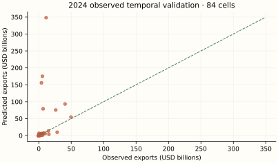
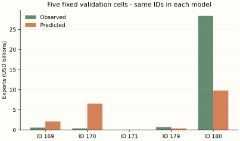
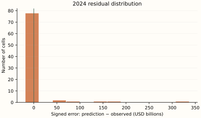
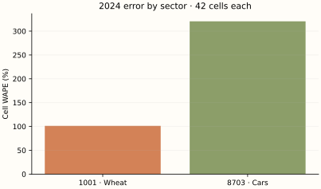
H / Calculate the evaluation metrics
For a hand-sized calculation use validation observations 169, 170, 171. These are actual BACI outcomes, unlike the 2025 scenario. Evaluate errors in USD; the following formulas use millions of USD only to make the squares readable.
| ID | Observed (USD) | Predicted (USD) | Error (USD) | Absolute error (USD) |
|---|---|---|---|---|
| 169 | 573,720,099.0 | 2,095,260,649.0 | 1,521,540,550.0 | 1,521,540,550.0 |
| 170 | 361,534,154.0 | 6,521,987,116.7 | 6,160,452,962.7 | 6,160,452,962.7 |
| 171 | 927,836.0 | 1,125,061.3 | 197,225.3 | 197,225.3 |
Numerical values are displayed to one decimal place; calculations use the original, unrounded values at full available precision.
The arithmetic substitutions are rounded approximations; these example scores are calculated from the unrounded saved predictions.
The first two example cells share a destination. Sum their signed errors before taking the destination absolute error; this allows cancellation. Cell WAPE takes absolute values first. Full metrics below use 84 rows, not these three.
| Destination | Observed sum (USD) | Predicted sum (USD) | Observed rank | Predicted rank |
|---|---|---|---|---|
| China | 935,254,253.0 | 8,617,247,765.7 | 2.0 | 2.0 |
| Germany | 927,836.0 | 1,125,061.3 | 1.0 | 1.0 |
Numerical values are displayed to one decimal place; calculations use the original, unrounded values at full available precision.
For these 2 destinations, correlate the two rank columns: Spearman = 1.0. The top-min(3,N) intersection contains 2 destinations. On destinations selected by predicted rank, mean absolute aggregate error is USD 3,841,095,369.0, and median is USD 3,841,095,369.0. This tiny two-destination calculation illustrates the definitions; full top-three metrics below rank seven destinations.
| Metric | Unit | Final training fit | 2024 observed validation | 2025 observed holdout | 2025 illustrative scenario |
|---|---|---|---|---|---|
| N | count | 168 | 84 | 0 | 84 |
| MSE | USD² | 10,136,363,501,865,478,144.0 | 2,099,777,419,641,112,231,936.0 | N/A | 10,455,552,475,653,414,912.0 |
| RMSE | USD | 3,183,765,616.7 | 45,823,328,334.4 | N/A | 3,233,504,673.8 |
| MAE | USD | 1,239,637,039.2 | 10,853,781,638.9 | N/A | 1,267,489,473.6 |
| WAPE | % | 35.6 | 316.8 | N/A | 35.1 |
| Destination WAPE | % | 17.2 | 297.2 | N/A | 14.5 |
| RMSLE | unitless | 1.7 | 2.0 | N/A | 0.7 |
| R2 | unitless | 0.8 | -30.1 | N/A | 0.9 |
| rank_correlation | unitless | 0.9 | 0.7 | N/A | 0.9 |
| top_overlap_3 | count | 2 | 2 | N/A | 2 |
| mean_absolute_top3_error | USD | 15,611,330,290.8 | 276,415,144,802.1 | N/A | 3,853,253,718.1 |
| median_absolute_top3_error | USD | 11,992,423,304.9 | 85,815,194,649.7 | N/A | 4,081,949,551.1 |
Numerical values are displayed to one decimal place; calculations use the original, unrounded values at full available precision.
I / Read the results with the mathematics
Temporal validation has Cell WAPE 316.8% and RMSE USD 45,823,328,334.4. Mean signed error is USD 9,583,897,439.0: this is an aggregate bias diagnostic, not a test of unbiasedness. The largest three absolute errors are shown below; every other case remains in the scrollable table.
| ID | Country pair | HS4 | Observed (USD) | Predicted (USD) | Absolute error (USD) |
|---|---|---|---|---|---|
| 196 | Germany → China | 8703 | 11,304,788,932.0 | 348,236,884,204.0 | 336,932,095,272.0 |
| 244 | United States → China | 8703 | 5,586,660,835.0 | 175,137,524,127.5 | 169,550,863,292.5 |
| 232 | United Kingdom → China | 8703 | 4,078,424,924.0 | 155,762,441,808.0 | 151,684,016,884.0 |
Numerical values are displayed to one decimal place; calculations use the original, unrounded values at full available precision.
There are 15 zero outcomes in 2024 validation. Their mean predicted flow is USD 167.6; individual percentage errors are undefined, but absolute errors and WAPE over the nonzero-total population remain meaningful. Sector WAPE is 101.3% for wheat and 320.6% for cars.
The 84-row early transition provides only one origin year, with highly related GDP/population/product features. A log-linear rule can extrapolate dramatically after exponentiation. Large validation errors are evidence against stable small-sample forecasting; the better final-fit scenario performance uses an additional transition and is not proof that the early failure vanished prospectively.
The final training score and temporal-validation score use different fitted samples and sometimes different tasks. A low training error with worse temporal error suggests fragility; it does not isolate overfitting from time shifts or coverage differences. One observed validation year and one artificial scenario cannot rank algorithms for future trade in general.
J / How this teaching example differs from the full research model
The full model estimates one 2023→2024 transition for 51,618 cells and validates transfer by excluding exporters. Here the final OLS pools 2022→2023 and 2023→2024 (168 rows); the 2024 validation fit has only the earlier 84 transitions. Manufacturing medians are fitted per training sample. Both use the same economic family and a trade lag, but the tiny two-sector design has much less identification and different coefficients. National Canada is modelled here, not Alberta; no CAD conversion or provincial proxy transfer is performed.
This is mathematical teaching and independent small-sample re-estimation. It does not reproduce the original Alberta result, infer a commercial opportunity, or estimate tariffs. Two headings, a different network, revised data vintages and one observed validation year offer much less support. No statistical prediction interval is claimed. Forecasting one year, filling a missing historical cell and estimating national-to-provincial potential are different tasks.
04 / Algorithm 2: Elastic Net regression
A / Historical origin and motivation
Zou and Hastie introduced the Elastic Net in 2005 to combine variable selection with stability when predictors are correlated. L1 shrinkage builds on Tibshirani's 1996 lasso; L2 shrinkage connects to ridge regression (Hoerl and Kennard, 1970). Zou and Hastie's original paper motivates the combined penalty; the estimator documentation fixes the normalization used here.
B / The idea before equations
GDP and population move together. An unrestricted plane can assign large, opposing slopes that fit a small sample yet extrapolate badly. Elastic Net charges a price for large coefficients. It trades some training fit for a less extreme rule. Unlike Model 1 it has no trade lag: historical economic characteristics are used as proxies for next year's structural potential.
C / Define the mathematical objects
| Symbol | Type and mathematical meaning | Meaning in this experiment |
|---|---|---|
| y_i | Observed scalar log1p trade | Contemporaneous target at fit year |
| Z, b, a | Standardized matrix, learned slope vector and intercept | 252 × 16 matrix; 16 slopes plus intercept |
| alpha > 0 | Penalty-strength hyperparameter | Chosen from .01 and .1 using pre-2024 tuning |
| r in [0,1] | Penalty-mixing hyperparameter | Chosen from .2 and .8 |
| ||b||_1, ||b||_2² | Sum absolute slopes; sum squared slopes | Intercept excluded from penalty |
| S(u,t) | Soft-threshold operator | sign(u) max(|u|−t,0) |
D / Build and derive the estimator
Begin with least-squares prediction, then penalize the slopes. The L1 term has a corner at zero, enabling exact zeros. The smooth L2 term makes large coefficients expensive and stabilizes correlated directions.
The factor 1/(2n) makes the squared-error gradient an average. Norm bars summarize the sums shown explicitly. The intercept is unpenalized. Holding slopes fixed, differentiating with respect to a gives a = mean(y − Zb). To update one slope, remove that column's current contribution and call the partial residual u_i.
The terms involving b_j become d_j b_j²/2 − q_j b_j + alpha r |b_j| + alpha(1−r)b_j²/2. For a nonzero b_j, its derivative is zero when:
At zero the absolute-value derivative is a set [−1,1], called a subgradient. Zero is optimal when |q_j| ≤ alpha r. Combining these cases gives the coordinate update:
The solver cycles through columns until improvement is small, with a dual-gap convergence check. There is no general unpenalized normal-equation closed form for the mixed L1 objective. Scaling numeric columns makes a penalty comparable across GDP logs, percentages and border flags; dummy columns are passed through without standardization, exactly as in the source.
Regularization changes the fitted coefficients, not the target or dollar inverse. The same calibration can increase dollar predictions even when a penalty shrinks log slopes. A low log loss need not mean low dollar WAPE.
The log response is approximately additive; shrinkage creates bias deliberately. Stable standardized feature relationships and the tuning population matter. Penalization addresses variance and collinearity; it does not establish a causal gravity elasticity or cure temporal feature shifts.
The source’s dollar-total calibration is shared by Models 1–5. After fitting in log1p units, compute raw nonnegative dollar fitted values r_i on training rows only. Choose c so the rescaled fitted total equals the observed training total:
E / Numerically follow a fitted prediction
Follow observation 263: Canada → United States, HS4 1001, 2025. Its inputs come from observed 2024 cell 179. The 2025 observed outcome is unavailable; the following computation traces the fitted prediction, evaluated against the scenario separately.
Numerical substitutions below are approximate displays. Predictions use the saved, unrounded inputs and parameters; adding or exponentiating the displayed rounded entries need not reproduce the reported dollars. Symbolic exponents and model settings retain their exact meaning.
| Feature | Standardized/encoded input | Learned slope | Input × slope |
|---|---|---|---|
| log_exporter_gdp | -0.9 | 1.3 | -1.1 |
| log_destination_gdp | 1.7 | 0.9 | 1.5 |
| log_exporter_population | -1.2 | -1.5 | 1.8 |
| log_destination_population | 0.7 | 0.2 | 0.2 |
| exporter_manufacturing | 0.2 | 0.1 | 0.0 |
| destination_manufacturing | 0.2 | -0.5 | -0.1 |
| exporter_internet | 0.8 | -0.1 | -0.1 |
| destination_internet | 0.8 | 0.3 | 0.2 |
| log_distance | -1.5 | -0.4 | 0.7 |
| contiguity | 3.1 | 1.1 | 3.3 |
| common_language | 2.4 | -0.1 | -0.2 |
| log_external_supply | 0.3 | 4.8 | 1.6 |
| log_external_demand | -1.1 | 2.0e-03 | -0.0 |
| log_world_demand | -1.1 | 0.0 | -0.0 |
| HS2_10 | 1.0 | -3.1 | -3.1 |
| HS2_87 | 0.0 | 3.1 | 0.0 |
Numerical values are displayed to one decimal place; calculations use the original, unrounded values at full available precision.
The intercept plus all 16 contributions yields the log prediction. The full coefficient and preprocessing vectors are in the worked-example JSON; coefficients on standardized logs are not directly raw elasticities.
The calibration multiplier is learned solely from the model’s final training sample. It reconciles the training total; it does not reconcile the holdout total or individual observations. Source JSON retains full available floating-point precision. Independent reconstruction checks use a relative tolerance of 10⁻⁶ (with a small absolute tolerance near zero).
F / Use the complete sample without leakage
The final model uses 252 training rows; its separate temporal-validation fit uses 168 rows and predicts 84 observed 2024 outcomes (IDs 169–252). Every model predicts the same 84 2025 IDs (253–336) from 2024 inputs. There are zero observed 2025 targets. No random train/test mixing is used for the temporal comparison.
Final fitting uses IDs 1–252 as contemporaneous targets. The earlier validation fit uses IDs 1–168; every validation input is copied from the matching 2023 cell (IDs 85–168), while the actual target is its 2024 counterpart (IDs 169–252). One-hot encoding and numeric medians/scales are learned inside each fit, then held fixed for scoring.
Elastic candidates and the selected historical criterion are saved in elastic_tuning.json. The 2024 validation outcome does not select the penalty, and the 2025 scenario never selects any setting.
The stored design including an intercept has 17 columns and rank 16; its numerical condition number is 3,425,176,991,552,574.5. Column count is not independent information. These diagnostics concern the inputs, not a proof that a nonlinear estimator is identified.
Inspect the exact final hyperparameters and optimizer warnings
{
"settings": {
"alpha": 0.01,
"copy_X": true,
"fit_intercept": true,
"l1_ratio": 0.8,
"max_iter": 5000,
"positive": false,
"precompute": false,
"random_state": 338,
"selection": "cyclic",
"tol": 0.0001,
"warm_start": false
},
"warnings": []
}G / Predictions, observed outcomes and errors
| Observation ID | Year | Exporter | Destination | HS4 | Observed (USD) | Predicted (USD) | Error (USD) | Absolute error (USD) | Signed % error | Illustrative value (USD) | Scenario error (USD) |
|---|---|---|---|---|---|---|---|---|---|---|---|
| 169 | 2024 | Canada | China | 1001 | 573,720,099.0 | 396,052.5 | -573,324,046.5 | 573,324,046.5 | -99.9% | N/A | N/A |
| 170 | 2024 | Canada | China | 8703 | 361,534,154.0 | 66,731,744.9 | -294,802,409.1 | 294,802,409.1 | -81.5% | N/A | N/A |
| 171 | 2024 | Canada | Germany | 1001 | 927,836.0 | 134,598.3 | -793,237.7 | 793,237.7 | -85.5% | N/A | N/A |
| 172 | 2024 | Canada | Germany | 8703 | 108,039,258.0 | 22,746,030.3 | -85,293,227.7 | 85,293,227.7 | -78.9% | N/A | N/A |
| 173 | 2024 | Canada | Japan | 1001 | 607,223,446.0 | 75,248.8 | -607,148,197.2 | 607,148,197.2 | -100.0% | N/A | N/A |
| 174 | 2024 | Canada | Japan | 8703 | 11,236,402.0 | 12,702,559.1 | 1,466,157.1 | 1,466,157.1 | 13.0% | N/A | N/A |
| 175 | 2024 | Canada | Mexico | 1001 | 172,551,233.0 | 50,036.0 | -172,501,197.0 | 172,501,197.0 | -100.0% | N/A | N/A |
| 176 | 2024 | Canada | Mexico | 8703 | 380,444,284.0 | 8,447,911.8 | -371,996,372.2 | 371,996,372.2 | -97.8% | N/A | N/A |
| 177 | 2024 | Canada | United Kingdom | 1001 | 173,421,644.0 | 394,606.3 | -173,027,037.7 | 173,027,037.7 | -99.8% | N/A | N/A |
| 178 | 2024 | Canada | United Kingdom | 8703 | 5,919,442.0 | 66,809,728.0 | 60,890,286.0 | 60,890,286.0 | 1,028.6% | N/A | N/A |
| 179 | 2024 | Canada | United States | 1001 | 685,179,327.0 | 70,785,974.6 | -614,393,352.4 | 614,393,352.4 | -89.7% | N/A | N/A |
| 180 | 2024 | Canada | United States | 8703 | 28,360,982,334.0 | 12,002,348,338.1 | -16,358,633,995.9 | 16,358,633,995.9 | -57.7% | N/A | N/A |
| 181 | 2024 | China | Canada | 1001 | 0.0 | 2.6 | 2.6 | 2.6 | N/A | N/A | N/A |
| 182 | 2024 | China | Canada | 8703 | 1,486,501,326.0 | 105,803,086.2 | -1,380,698,239.8 | 1,380,698,239.8 | -92.9% | N/A | N/A |
| 183 | 2024 | China | Germany | 1001 | 5.0 | 7.1 | 2.1 | 2.1 | 41.2% | N/A | N/A |
| 184 | 2024 | China | Germany | 8703 | 3,293,596,023.0 | 272,355,039.9 | -3,021,240,983.1 | 3,021,240,983.1 | -91.7% | N/A | N/A |
| 185 | 2024 | China | Japan | 1001 | 0.0 | 12.0 | 12.0 | 12.0 | N/A | N/A | N/A |
| 186 | 2024 | China | Japan | 8703 | 905,237,235.0 | 456,563,733.8 | -448,673,501.2 | 448,673,501.2 | -49.6% | N/A | N/A |
| 187 | 2024 | China | Mexico | 1001 | 0.0 | 1.1 | 1.1 | 1.1 | N/A | N/A | N/A |
| 188 | 2024 | China | Mexico | 8703 | 4,603,755,988.0 | 52,445,947.7 | -4,551,310,040.3 | 4,551,310,040.3 | -98.9% | N/A | N/A |
| 189 | 2024 | China | United Kingdom | 1001 | 69,452.0 | 20.0 | -69,432.0 | 69,432.0 | -100.0% | N/A | N/A |
| 190 | 2024 | China | United Kingdom | 8703 | 5,102,705,740.0 | 754,482,563.9 | -4,348,223,176.1 | 4,348,223,176.1 | -85.2% | N/A | N/A |
| 191 | 2024 | China | United States | 1001 | 0.0 | 46.5 | 46.5 | 46.5 | N/A | N/A | N/A |
| 192 | 2024 | China | United States | 8703 | 3,820,671,125.0 | 1,743,360,463.9 | -2,077,310,661.1 | 2,077,310,661.1 | -54.4% | N/A | N/A |
| 193 | 2024 | Germany | Canada | 1001 | 166,171.0 | 14,569.8 | -151,601.2 | 151,601.2 | -91.2% | N/A | N/A |
| 194 | 2024 | Germany | Canada | 8703 | 2,832,653,765.0 | 2,592,245,775.9 | -240,407,989.1 | 240,407,989.1 | -8.5% | N/A | N/A |
| 195 | 2024 | Germany | China | 1001 | 0.0 | 110,679.3 | 110,679.3 | 110,679.3 | N/A | N/A | N/A |
| 196 | 2024 | Germany | China | 8703 | 11,304,788,932.0 | 19,576,728,563.4 | 8,271,939,631.4 | 8,271,939,631.4 | 73.2% | N/A | N/A |
| 197 | 2024 | Germany | Japan | 1001 | 37,305.0 | 18,728.5 | -18,576.5 | 18,576.5 | -49.8% | N/A | N/A |
| 198 | 2024 | Germany | Japan | 8703 | 3,907,415,118.0 | 3,318,891,413.1 | -588,523,704.9 | 588,523,704.9 | -15.1% | N/A | N/A |
| 199 | 2024 | Germany | Mexico | 1001 | 0.0 | 6,431.1 | 6,431.1 | 6,431.1 | N/A | N/A | N/A |
| 200 | 2024 | Germany | Mexico | 8703 | 1,067,908,362.0 | 1,139,894,949.3 | 71,986,587.3 | 71,986,587.3 | 6.7% | N/A | N/A |
| 201 | 2024 | Germany | United Kingdom | 1001 | 289,517,719.0 | 329,447.4 | -289,188,271.6 | 289,188,271.6 | -99.9% | N/A | N/A |
| 202 | 2024 | Germany | United Kingdom | 8703 | 14,867,362,044.0 | 58,553,822,664.4 | 43,686,460,620.4 | 43,686,460,620.4 | 293.8% | N/A | N/A |
| 203 | 2024 | Germany | United States | 1001 | 8,332,225.0 | 228,618.3 | -8,103,606.7 | 8,103,606.7 | -97.3% | N/A | N/A |
| 204 | 2024 | Germany | United States | 8703 | 26,105,847,078.0 | 40,693,400,936.9 | 14,587,553,858.9 | 14,587,553,858.9 | 55.9% | N/A | N/A |
| 205 | 2024 | Japan | Canada | 1001 | 0.0 | 0.0 | 0.0 | 0.0 | N/A | N/A | N/A |
| 206 | 2024 | Japan | Canada | 8703 | 5,504,542,608.0 | 576,916,543.4 | -4,927,626,064.6 | 4,927,626,064.6 | -89.5% | N/A | N/A |
| 207 | 2024 | Japan | China | 1001 | 0.0 | 0.2 | 0.2 | 0.2 | N/A | N/A | N/A |
| 208 | 2024 | Japan | China | 8703 | 6,641,426,201.0 | 13,078,481,319.9 | 6,437,055,118.9 | 6,437,055,118.9 | 96.9% | N/A | N/A |
| 209 | 2024 | Japan | Germany | 1001 | 0.0 | 0.0 | 0.0 | 0.0 | N/A | N/A | N/A |
| 210 | 2024 | Japan | Germany | 8703 | 2,207,609,523.0 | 1,322,647,896.9 | -884,961,626.1 | 884,961,626.1 | -40.1% | N/A | N/A |
| 211 | 2024 | Japan | Mexico | 1001 | 0.0 | 0.0 | 0.0 | 0.0 | N/A | N/A | N/A |
| 212 | 2024 | Japan | Mexico | 8703 | 1,523,309,798.0 | 293,962,088.7 | -1,229,347,709.3 | 1,229,347,709.3 | -80.7% | N/A | N/A |
| 213 | 2024 | Japan | United Kingdom | 1001 | 0.0 | 0.0 | 0.0 | 0.0 | N/A | N/A | N/A |
| 214 | 2024 | Japan | United Kingdom | 8703 | 3,096,026,636.0 | 3,716,792,543.0 | 620,765,907.0 | 620,765,907.0 | 20.1% | N/A | N/A |
| 215 | 2024 | Japan | United States | 1001 | 0.0 | 0.1 | 0.1 | 0.1 | N/A | N/A | N/A |
| 216 | 2024 | Japan | United States | 8703 | 40,489,527,390.0 | 9,605,294,150.7 | -30,884,233,239.3 | 30,884,233,239.3 | -76.3% | N/A | N/A |
| 217 | 2024 | Mexico | Canada | 1001 | 18.0 | 220.2 | 202.2 | 202.2 | 1,123.3% | N/A | N/A |
| 218 | 2024 | Mexico | Canada | 8703 | 5,918,119,238.0 | 19,175,404.0 | -5,898,943,834.0 | 5,898,943,834.0 | -99.7% | N/A | N/A |
| 219 | 2024 | Mexico | China | 1001 | 2,671.0 | 868.1 | -1,802.9 | 1,802.9 | -67.5% | N/A | N/A |
| 220 | 2024 | Mexico | China | 8703 | 255,985,743.0 | 75,082,932.9 | -180,902,810.1 | 180,902,810.1 | -70.7% | N/A | N/A |
| 221 | 2024 | Mexico | Germany | 1001 | 2.0 | 261.5 | 259.5 | 259.5 | 12,976.1% | N/A | N/A |
| 222 | 2024 | Mexico | Germany | 8703 | 3,979,822,545.0 | 22,703,322.2 | -3,957,119,222.8 | 3,957,119,222.8 | -99.4% | N/A | N/A |
| 223 | 2024 | Mexico | Japan | 1001 | 0.0 | 169.3 | 169.3 | 169.3 | N/A | N/A | N/A |
| 224 | 2024 | Mexico | Japan | 8703 | 418,148,376.0 | 14,691,451.4 | -403,456,924.6 | 403,456,924.6 | -96.5% | N/A | N/A |
| 225 | 2024 | Mexico | United Kingdom | 1001 | 0.0 | 789.4 | 789.4 | 789.4 | N/A | N/A | N/A |
| 226 | 2024 | Mexico | United Kingdom | 8703 | 1,036,234,550.0 | 68,612,355.3 | -967,622,194.7 | 967,622,194.7 | -93.4% | N/A | N/A |
| 227 | 2024 | Mexico | United States | 1001 | 323,719.0 | 162,927.1 | -160,791.9 | 160,791.9 | -49.7% | N/A | N/A |
| 228 | 2024 | Mexico | United States | 8703 | 49,637,259,600.0 | 14,176,344,781.0 | -35,460,914,819.0 | 35,460,914,819.0 | -71.4% | N/A | N/A |
| 229 | 2024 | United Kingdom | Canada | 1001 | 1,943.0 | 1,060.5 | -882.5 | 882.5 | -45.4% | N/A | N/A |
| 230 | 2024 | United Kingdom | Canada | 8703 | 592,950,008.0 | 195,682,191.9 | -397,267,816.1 | 397,267,816.1 | -67.0% | N/A | N/A |
| 231 | 2024 | United Kingdom | China | 1001 | 29,358.0 | 7,599.5 | -21,758.5 | 21,758.5 | -74.1% | N/A | N/A |
| 232 | 2024 | United Kingdom | China | 8703 | 4,078,424,924.0 | 1,393,782,326.6 | -2,684,642,597.4 | 2,684,642,597.4 | -65.8% | N/A | N/A |
| 233 | 2024 | United Kingdom | Germany | 1001 | 71,283.0 | 8,180.9 | -63,102.1 | 63,102.1 | -88.5% | N/A | N/A |
| 234 | 2024 | United Kingdom | Germany | 8703 | 2,443,797,094.0 | 1,504,860,683.8 | -938,936,410.2 | 938,936,410.2 | -38.4% | N/A | N/A |
| 235 | 2024 | United Kingdom | Japan | 1001 | 3,035.0 | 1,304.3 | -1,730.7 | 1,730.7 | -57.0% | N/A | N/A |
| 236 | 2024 | United Kingdom | Japan | 8703 | 1,031,790,547.0 | 239,694,551.0 | -792,095,996.0 | 792,095,996.0 | -76.8% | N/A | N/A |
| 237 | 2024 | United Kingdom | Mexico | 1001 | 0.0 | 481.5 | 481.5 | 481.5 | N/A | N/A | N/A |
| 238 | 2024 | United Kingdom | Mexico | 8703 | 221,441,018.0 | 88,535,766.7 | -132,905,251.3 | 132,905,251.3 | -60.0% | N/A | N/A |
| 239 | 2024 | United Kingdom | United States | 1001 | 461,387.0 | 16,516.2 | -444,870.8 | 444,870.8 | -96.4% | N/A | N/A |
| 240 | 2024 | United Kingdom | United States | 8703 | 9,760,731,714.0 | 3,048,245,271.4 | -6,712,486,442.6 | 6,712,486,442.6 | -68.8% | N/A | N/A |
| 241 | 2024 | United States | Canada | 1001 | 24,530,233.0 | 7,005,246.0 | -17,524,987.0 | 17,524,987.0 | -71.4% | N/A | N/A |
| 242 | 2024 | United States | Canada | 8703 | 15,597,579,400.0 | 68,088,862,338.4 | 52,491,282,938.4 | 52,491,282,938.4 | 336.5% | N/A | N/A |
| 243 | 2024 | United States | China | 1001 | 676,649,911.0 | 645,533.2 | -676,004,377.8 | 676,004,377.8 | -99.9% | N/A | N/A |
| 244 | 2024 | United States | China | 8703 | 5,586,660,835.0 | 6,237,796,317.5 | 651,135,482.5 | 651,135,482.5 | 11.7% | N/A | N/A |
| 245 | 2024 | United States | Germany | 1001 | 4,749.0 | 209,008.7 | 204,259.7 | 204,259.7 | 4,301.1% | N/A | N/A |
| 246 | 2024 | United States | Germany | 8703 | 7,595,825,735.0 | 2,025,644,744.2 | -5,570,180,990.8 | 5,570,180,990.8 | -73.3% | N/A | N/A |
| 247 | 2024 | United States | Japan | 1001 | 633,126,270.0 | 123,929.4 | -633,002,340.6 | 633,002,340.6 | -100.0% | N/A | N/A |
| 248 | 2024 | United States | Japan | 8703 | 929,137,299.0 | 1,199,772,106.9 | 270,634,807.9 | 270,634,807.9 | 29.1% | N/A | N/A |
| 249 | 2024 | United States | Mexico | 1001 | 1,070,869,870.0 | 3,659,160.1 | -1,067,210,709.9 | 1,067,210,709.9 | -99.7% | N/A | N/A |
| 250 | 2024 | United States | Mexico | 8703 | 4,561,751,943.0 | 35,430,638,035.6 | 30,868,886,092.6 | 30,868,886,092.6 | 676.7% | N/A | N/A |
| 251 | 2024 | United States | United Kingdom | 1001 | 11,505.0 | 608,050.2 | 596,545.2 | 596,545.2 | 5,185.1% | N/A | N/A |
| 252 | 2024 | United States | United Kingdom | 8703 | 1,224,546,537.0 | 5,904,024,099.9 | 4,679,477,562.9 | 4,679,477,562.9 | 382.1% | N/A | N/A |
| 253 | 2025 | Canada | China | 1001 | N/A | 675,490.8 | N/A | N/A | N/A | 530,862,258.5 | -530,186,767.7 |
| 254 | 2025 | Canada | China | 8703 | N/A | 67,858,078.8 | N/A | N/A | N/A | 416,554,030.8 | -348,695,952.0 |
| 255 | 2025 | Canada | Germany | 1001 | N/A | 319,164.7 | N/A | N/A | N/A | 894,406.3 | -575,241.5 |
| 256 | 2025 | Canada | Germany | 8703 | N/A | 32,108,608.1 | N/A | N/A | N/A | 92,047,862.5 | -59,939,254.3 |
| 257 | 2025 | Canada | Japan | 1001 | N/A | 150,935.9 | N/A | N/A | N/A | 487,208,438.3 | -487,057,502.5 |
| 258 | 2025 | Canada | Japan | 8703 | N/A | 15,174,295.8 | N/A | N/A | N/A | 12,108,816.6 | 3,065,479.2 |
| 259 | 2025 | Canada | Mexico | 1001 | N/A | 107,025.4 | N/A | N/A | N/A | 189,363,850.9 | -189,256,825.5 |
| 260 | 2025 | Canada | Mexico | 8703 | N/A | 10,786,892.7 | N/A | N/A | N/A | 394,397,077.7 | -383,610,185.0 |
| 261 | 2025 | Canada | United Kingdom | 1001 | N/A | 640,816.6 | N/A | N/A | N/A | 147,767,604.2 | -147,126,787.6 |
| 262 | 2025 | Canada | United Kingdom | 8703 | N/A | 64,506,175.1 | N/A | N/A | N/A | 6,531,988.8 | 57,974,186.3 |
| 263 | 2025 | Canada | United States | 1001 | N/A | 136,711,259.5 | N/A | N/A | N/A | 651,030,223.2 | -514,318,963.7 |
| 264 | 2025 | Canada | United States | 8703 | N/A | 13,785,783,792.5 | N/A | N/A | N/A | 29,447,181,933.1 | -15,661,398,140.5 |
| 265 | 2025 | China | Canada | 1001 | N/A | 1.0 | N/A | N/A | N/A | 0.0 | 1.0 |
| 266 | 2025 | China | Canada | 8703 | N/A | 202,066,699.0 | N/A | N/A | N/A | 1,422,965,935.0 | -1,220,899,236.0 |
| 267 | 2025 | China | Germany | 1001 | N/A | 3.4 | N/A | N/A | N/A | 4.8 | -1.4 |
| 268 | 2025 | China | Germany | 8703 | N/A | 557,785,765.3 | N/A | N/A | N/A | 3,546,726,622.3 | -2,988,940,857.0 |
| 269 | 2025 | China | Japan | 1001 | N/A | 5.2 | N/A | N/A | N/A | 0.0 | 5.2 |
| 270 | 2025 | China | Japan | 8703 | N/A | 820,795,141.7 | N/A | N/A | N/A | 925,453,881.9 | -104,658,740.2 |
| 271 | 2025 | China | Mexico | 1001 | N/A | 0.3 | N/A | N/A | N/A | 0.0 | 0.3 |
| 272 | 2025 | China | Mexico | 8703 | N/A | 95,054,744.3 | N/A | N/A | N/A | 4,805,417,606.6 | -4,710,362,862.3 |
| 273 | 2025 | China | United Kingdom | 1001 | N/A | 8.3 | N/A | N/A | N/A | 58,717.6 | -58,709.3 |
| 274 | 2025 | China | United Kingdom | 8703 | N/A | 1,296,541,029.0 | N/A | N/A | N/A | 6,182,433,384.1 | -4,885,892,355.2 |
| 275 | 2025 | China | United States | 1001 | N/A | 20.2 | N/A | N/A | N/A | 0.0 | 20.2 |
| 276 | 2025 | China | United States | 8703 | N/A | 3,078,455,281.9 | N/A | N/A | N/A | 3,808,519,439.9 | -730,064,158.0 |
| 277 | 2025 | Germany | Canada | 1001 | N/A | 22,919.0 | N/A | N/A | N/A | 159,353.0 | -136,434.1 |
| 278 | 2025 | Germany | Canada | 8703 | N/A | 3,253,081,358.6 | N/A | N/A | N/A | 3,185,887,126.3 | 67,194,232.2 |
| 279 | 2025 | Germany | China | 1001 | N/A | 134,416.4 | N/A | N/A | N/A | 0.0 | 134,416.4 |
| 280 | 2025 | Germany | China | 8703 | N/A | 18,977,879,383.9 | N/A | N/A | N/A | 13,053,502,548.3 | 5,924,376,835.7 |
| 281 | 2025 | Germany | Japan | 1001 | N/A | 26,646.5 | N/A | N/A | N/A | 32,814.7 | -6,168.2 |
| 282 | 2025 | Germany | Japan | 8703 | N/A | 3,765,072,415.8 | N/A | N/A | N/A | 3,985,740,064.6 | -220,667,648.8 |
| 283 | 2025 | Germany | Mexico | 1001 | N/A | 9,545.1 | N/A | N/A | N/A | 0.0 | 9,545.1 |
| 284 | 2025 | Germany | Mexico | 8703 | N/A | 1,352,123,173.3 | N/A | N/A | N/A | 881,800,888.1 | 470,322,285.3 |
| 285 | 2025 | Germany | United Kingdom | 1001 | N/A | 485,637.5 | N/A | N/A | N/A | 241,909,176.9 | -241,423,539.4 |
| 286 | 2025 | Germany | United Kingdom | 8703 | N/A | 68,705,607,707.6 | N/A | N/A | N/A | 16,543,983,898.5 | 52,161,623,809.1 |
| 287 | 2025 | Germany | United States | 1001 | N/A | 332,622.2 | N/A | N/A | N/A | 7,436,476.8 | -7,103,854.6 |
| 288 | 2025 | Germany | United States | 8703 | N/A | 47,140,173,660.3 | N/A | N/A | N/A | 34,318,821,578.1 | 12,821,352,082.3 |
| 289 | 2025 | Japan | Canada | 1001 | N/A | 0.0 | N/A | N/A | N/A | 0.0 | 0.0 |
| 290 | 2025 | Japan | Canada | 8703 | N/A | 613,725,132.4 | N/A | N/A | N/A | 5,664,394,860.4 | -5,050,669,728.0 |
| 291 | 2025 | Japan | China | 1001 | N/A | 1.3 | N/A | N/A | N/A | 0.0 | 1.3 |
| 292 | 2025 | Japan | China | 8703 | N/A | 11,148,256,328.0 | N/A | N/A | N/A | 6,010,737,613.5 | 5,137,518,714.4 |
| 293 | 2025 | Japan | Germany | 1001 | N/A | 0.0 | N/A | N/A | N/A | 0.0 | 0.0 |
| 294 | 2025 | Japan | Germany | 8703 | N/A | 1,503,021,686.9 | N/A | N/A | N/A | 2,741,869,777.7 | -1,238,848,090.8 |
| 295 | 2025 | Japan | Mexico | 1001 | N/A | 0.0 | N/A | N/A | N/A | 0.0 | 0.0 |
| 296 | 2025 | Japan | Mexico | 8703 | N/A | 297,040,859.9 | N/A | N/A | N/A | 1,525,557,831.1 | -1,228,516,971.2 |
| 297 | 2025 | Japan | United Kingdom | 1001 | N/A | 0.2 | N/A | N/A | N/A | 0.0 | 0.2 |
| 298 | 2025 | Japan | United Kingdom | 8703 | N/A | 3,545,693,669.4 | N/A | N/A | N/A | 3,696,571,751.7 | -150,878,082.2 |
| 299 | 2025 | Japan | United States | 1001 | N/A | 1.1 | N/A | N/A | N/A | 0.0 | 1.1 |
| 300 | 2025 | Japan | United States | 8703 | N/A | 9,450,852,911.8 | N/A | N/A | N/A | 35,318,692,142.5 | -25,867,839,230.7 |
| 301 | 2025 | Mexico | Canada | 1001 | N/A | 13.6 | N/A | N/A | N/A | 18.5 | -4.9 |
| 302 | 2025 | Mexico | Canada | 8703 | N/A | 20,420,459.5 | N/A | N/A | N/A | 6,538,395,537.6 | -6,517,975,078.1 |
| 303 | 2025 | Mexico | China | 1001 | N/A | 41.1 | N/A | N/A | N/A | 2,361.9 | -2,320.9 |
| 304 | 2025 | Mexico | China | 8703 | N/A | 60,429,605.4 | N/A | N/A | N/A | 230,724,417.3 | -170,294,811.9 |
| 305 | 2025 | Mexico | Germany | 1001 | N/A | 16.9 | N/A | N/A | N/A | 2.1 | 14.9 |
| 306 | 2025 | Mexico | Germany | 8703 | N/A | 25,264,572.7 | N/A | N/A | N/A | 4,343,634,911.2 | -4,318,370,338.5 |
| 307 | 2025 | Mexico | Japan | 1001 | N/A | 9.2 | N/A | N/A | N/A | 0.0 | 9.2 |
| 308 | 2025 | Mexico | Japan | 8703 | N/A | 13,903,366.7 | N/A | N/A | N/A | 467,213,585.1 | -453,310,218.4 |
| 309 | 2025 | Mexico | United Kingdom | 1001 | N/A | 43.6 | N/A | N/A | N/A | 0.0 | 43.6 |
| 310 | 2025 | Mexico | United Kingdom | 8703 | N/A | 64,252,329.4 | N/A | N/A | N/A | 1,206,198,894.9 | -1,141,946,565.5 |
| 311 | 2025 | Mexico | United States | 1001 | N/A | 10,826.6 | N/A | N/A | N/A | 301,853.8 | -291,027.2 |
| 312 | 2025 | Mexico | United States | 8703 | N/A | 15,866,361,802.9 | N/A | N/A | N/A | 52,780,466,123.8 | -36,914,104,320.8 |
| 313 | 2025 | United Kingdom | Canada | 1001 | N/A | 157.2 | N/A | N/A | N/A | 1,713.1 | -1,555.8 |
| 314 | 2025 | United Kingdom | Canada | 8703 | N/A | 184,208,724.7 | N/A | N/A | N/A | 550,904,513.2 | -366,695,788.4 |
| 315 | 2025 | United Kingdom | China | 1001 | N/A | 1,068.9 | N/A | N/A | N/A | 30,482.9 | -29,414.0 |
| 316 | 2025 | United Kingdom | China | 8703 | N/A | 1,243,374,573.8 | N/A | N/A | N/A | 3,762,660,597.4 | -2,519,286,023.5 |
| 317 | 2025 | United Kingdom | Germany | 1001 | N/A | 1,662.5 | N/A | N/A | N/A | 70,311.1 | -68,648.6 |
| 318 | 2025 | United Kingdom | Germany | 8703 | N/A | 1,936,545,243.5 | N/A | N/A | N/A | 2,710,958,224.4 | -774,412,980.9 |
| 319 | 2025 | United Kingdom | Japan | 1001 | N/A | 214.8 | N/A | N/A | N/A | 2,553.6 | -2,338.9 |
| 320 | 2025 | United Kingdom | Japan | 8703 | N/A | 250,348,365.7 | N/A | N/A | N/A | 1,098,153,473.6 | -847,805,107.9 |
| 321 | 2025 | United Kingdom | Mexico | 1001 | N/A | 82.7 | N/A | N/A | N/A | 0.0 | 82.7 |
| 322 | 2025 | United Kingdom | Mexico | 8703 | N/A | 96,923,391.6 | N/A | N/A | N/A | 223,111,631.1 | -126,188,239.5 |
| 323 | 2025 | United Kingdom | United States | 1001 | N/A | 2,268.2 | N/A | N/A | N/A | 419,717.7 | -417,449.5 |
| 324 | 2025 | United Kingdom | United States | 8703 | N/A | 2,648,168,962.0 | N/A | N/A | N/A | 11,524,374,951.3 | -8,876,205,989.3 |
| 325 | 2025 | United States | Canada | 1001 | N/A | 9,233,631.3 | N/A | N/A | N/A | 20,139,638.9 | -10,906,007.5 |
| 326 | 2025 | United States | Canada | 8703 | N/A | 49,813,970,881.3 | N/A | N/A | N/A | 14,836,726,276.4 | 34,977,244,604.9 |
| 327 | 2025 | United States | China | 1001 | N/A | 696,113.6 | N/A | N/A | N/A | 615,204,885.7 | -614,508,772.1 |
| 328 | 2025 | United States | China | 8703 | N/A | 3,735,591,366.5 | N/A | N/A | N/A | 5,166,890,837.6 | -1,431,299,471.1 |
| 329 | 2025 | United States | Germany | 1001 | N/A | 312,848.2 | N/A | N/A | N/A | 4,758.1 | 308,090.1 |
| 330 | 2025 | United States | Germany | 8703 | N/A | 1,681,269,895.7 | N/A | N/A | N/A | 8,934,849,485.0 | -7,253,579,589.3 |
| 331 | 2025 | United States | Japan | 1001 | N/A | 157,221.6 | N/A | N/A | N/A | 533,628,343.0 | -533,471,121.4 |
| 332 | 2025 | United States | Japan | 8703 | N/A | 844,355,524.4 | N/A | N/A | N/A | 973,881,597.5 | -129,526,073.1 |
| 333 | 2025 | United States | Mexico | 1001 | N/A | 5,625,000.5 | N/A | N/A | N/A | 979,168,570.9 | -973,543,570.5 |
| 334 | 2025 | United States | Mexico | 8703 | N/A | 30,285,022,852.3 | N/A | N/A | N/A | 4,915,308,212.9 | 25,369,714,639.4 |
| 335 | 2025 | United States | United Kingdom | 1001 | N/A | 623,148.8 | N/A | N/A | N/A | 10,448.6 | 612,700.2 |
| 336 | 2025 | United States | United Kingdom | 8703 | N/A | 3,350,861,266.7 | N/A | N/A | N/A | 1,056,748,860.3 | 2,294,112,406.4 |
Numerical values are displayed to one decimal place; calculations use the original, unrounded values at full available precision.
Signed error = predicted − observed: positive means overprediction. Individual percentage error is N/A when observed trade is zero or unavailable. A scenario error is predicted − illustrative value, not an observed prediction error. Final training fitted values are downloadable with every eligible row in predictions.csv.
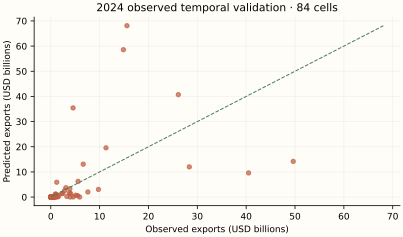
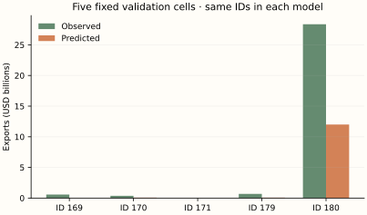
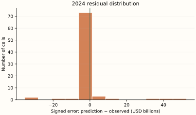
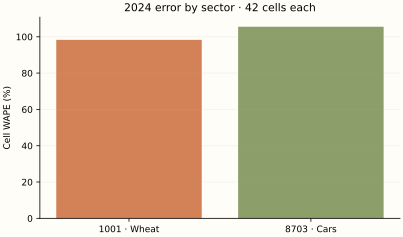
H / Calculate the evaluation metrics
For a hand-sized calculation use validation observations 169, 170, 171. These are actual BACI outcomes, unlike the 2025 scenario. Evaluate errors in USD; the following formulas use millions of USD only to make the squares readable.
| ID | Observed (USD) | Predicted (USD) | Error (USD) | Absolute error (USD) |
|---|---|---|---|---|
| 169 | 573,720,099.0 | 396,052.5 | -573,324,046.5 | 573,324,046.5 |
| 170 | 361,534,154.0 | 66,731,744.9 | -294,802,409.1 | 294,802,409.1 |
| 171 | 927,836.0 | 134,598.3 | -793,237.7 | 793,237.7 |
Numerical values are displayed to one decimal place; calculations use the original, unrounded values at full available precision.
The arithmetic substitutions are rounded approximations; these example scores are calculated from the unrounded saved predictions.
The first two example cells share a destination. Sum their signed errors before taking the destination absolute error; this allows cancellation. Cell WAPE takes absolute values first. Full metrics below use 84 rows, not these three.
| Destination | Observed sum (USD) | Predicted sum (USD) | Observed rank | Predicted rank |
|---|---|---|---|---|
| China | 935,254,253.0 | 67,127,797.5 | 2.0 | 2.0 |
| Germany | 927,836.0 | 134,598.3 | 1.0 | 1.0 |
Numerical values are displayed to one decimal place; calculations use the original, unrounded values at full available precision.
For these 2 destinations, correlate the two rank columns: Spearman = 1.0. The top-min(3,N) intersection contains 2 destinations. On destinations selected by predicted rank, mean absolute aggregate error is USD 434,459,846.6, and median is USD 434,459,846.6. This tiny two-destination calculation illustrates the definitions; full top-three metrics below rank seven destinations.
| Metric | Unit | Final training fit | 2024 observed validation | 2025 observed holdout | 2025 illustrative scenario |
|---|---|---|---|---|---|
| N | count | 252 | 84 | 0 | 84 |
| MSE | USD² | 99,162,447,591,691,763,712.0 | 103,134,020,321,226,031,104.0 | N/A | 87,960,703,358,833,115,136.0 |
| RMSE | USD | 9,958,034,323.7 | 10,155,492,126.0 | N/A | 9,378,736,767.8 |
| MAE | USD | 3,343,064,966.9 | 3,611,004,394.0 | N/A | 3,336,058,801.5 |
| WAPE | % | 100.1 | 105.4 | N/A | 92.3 |
| Destination WAPE | % | 68.7 | 73.8 | N/A | 62.1 |
| RMSLE | unitless | 3.8 | 3.7 | N/A | 3.5 |
| R2 | unitless | -0.6 | -0.5 | N/A | -0.2 |
| rank_correlation | unitless | 0.8 | 0.9 | N/A | 0.9 |
| top_overlap_3 | count | 2 | 2 | N/A | 2 |
| mean_absolute_top3_error | USD | 150,825,187,899.2 | 53,475,950,400.5 | N/A | 48,524,847,714.2 |
| median_absolute_top3_error | USD | 127,088,633,251.6 | 43,270,061,598.8 | N/A | 47,946,997,106.6 |
Numerical values are displayed to one decimal place; calculations use the original, unrounded values at full available precision.
I / Read the results with the mathematics
Temporal validation has Cell WAPE 105.4% and RMSE USD 10,155,492,126.0. Mean signed error is USD 262,815,961.6: this is an aggregate bias diagnostic, not a test of unbiasedness. The largest three absolute errors are shown below; every other case remains in the scrollable table.
| ID | Country pair | HS4 | Observed (USD) | Predicted (USD) | Absolute error (USD) |
|---|---|---|---|---|---|
| 242 | United States → Canada | 8703 | 15,597,579,400.0 | 68,088,862,338.4 | 52,491,282,938.4 |
| 202 | Germany → United Kingdom | 8703 | 14,867,362,044.0 | 58,553,822,664.4 | 43,686,460,620.4 |
| 228 | Mexico → United States | 8703 | 49,637,259,600.0 | 14,176,344,781.0 | 35,460,914,819.0 |
Numerical values are displayed to one decimal place; calculations use the original, unrounded values at full available precision.
There are 15 zero outcomes in 2024 validation. Their mean predicted flow is USD 7,907.6; individual percentage errors are undefined, but absolute errors and WAPE over the nonzero-total population remain meaningful. Sector WAPE is 98.3% for wheat and 105.5% for cars.
The penalty shrinks unstable slopes, but one additive log equation must span tiny wheat flows and very large car flows. The chosen tuning criterion is log MSE; dollar losses place much greater weight on large cells. Training-total calibration can amplify some predictions while reducing aggregate mismatch on its own training sample.
The final training score and temporal-validation score use different fitted samples and sometimes different tasks. A low training error with worse temporal error suggests fragility; it does not isolate overfitting from time shifts or coverage differences. One observed validation year and one artificial scenario cannot rank algorithms for future trade in general.
J / How this teaching example differs from the full research model
The original uses a 2024 cross-section and nested exporter-held-out tuning. Here final fitting pools 252 historical rows; alpha and r are selected by fitting 2022 and predicting 2023 with 2022 inputs. That is a time-aware adaptation, not reproduction of the original selected alpha. The source grid, loss normalization, preprocessing, zero handling and training-only dollar calibration remain the same. There is no lag or Alberta scale correction.
This is mathematical teaching and independent small-sample re-estimation. It does not reproduce the original Alberta result, infer a commercial opportunity, or estimate tariffs. Two headings, a different network, revised data vintages and one observed validation year offer much less support. No statistical prediction interval is claimed. Forecasting one year, filling a missing historical cell and estimating national-to-provincial potential are different tasks.
05 / Algorithm 3: Random Forest regression
A / Historical origin and motivation
Breiman's 2001 Random Forests combined random feature selection with bagged decision trees. Bagging (Breiman, 1996) averages estimators fitted to bootstrap resamples; CART (Breiman, Friedman, Olshen and Stone, 1984) supplies recursive partitioning. The purpose is to reduce unstable individual-tree predictions while capturing nonlinear relationships. See Breiman's paper and the actual regression estimator.
B / The idea before equations
A tree asks threshold questions: is external car supply large, is distance short, and is this a wheat cell? Each answer leads to a smaller group whose average transformed trade supplies a prediction. A forest repeats this with different resampled rows and candidate features, then averages predictions. It does not learn a single GDP slope.
C / Define the mathematical objects
| Symbol | Type and mathematical meaning | Meaning in this experiment |
|---|---|---|
| R | Set of row indices in one tree node | Bootstrap sample, multiplicities retained |
| m_R | Learned scalar leaf value | Mean log1p trade in node |
| j, s | Feature index and split threshold | Chosen by reducing squared error |
| T_b(z) | Prediction from tree b | One of 120 fitted trees |
| B | Tree-count hyperparameter | 120.0 |
| eta, lambda | Not used by this model | No boosting step or dynamic blend |
Numerical values are displayed to one decimal place; calculations use the original, unrounded values at full available precision.
D / Build and derive the estimator
For a fixed leaf, predict a constant m. Differentiate its squared error to find the best constant:
Bootstrap weights count duplicated draws. The mean is then weighted by those multiplicities. For feature j and threshold s, form two children, L = {i:z_ij ≤ s} and H = {i:z_ij > s}. Each child gets its own mean.
Choose the allowed split with largest positive reduction. Repeat until depth, leaf size, purity or other stopping conditions prevent further splitting. This is greedy: the best immediate split need not lead to the globally best tree. The library searches a random candidate feature subset at each node; max_features .7 of 16 gives 11 candidates, with implementation exceptions if no valid partition is found.
Average log predictions BEFORE exponentiating. Averaging tree dollar predictions would be a different algorithm. If trees have equal variance sigma² and pairwise correlation r_T, elementary variance expansion gives Var(mean) = sigma²[r_T + (1−r_T)/B]. This explanatory identity assumes equal variances/correlations; it is not an estimated uncertainty interval. Randomness aims to reduce correlation while retaining informative trees.
Scaling preserves feature ordering and hence feasible threshold partitions except for floating-point effects. Here it is retained to match the shared source pipeline. Forests naturally represent threshold interactions without extra interaction columns. Outside the training range, an input lands in an existing leaf rather than extrapolating a new slope.
Useful nearby partitions and enough examples per leaf are needed. Bootstrap sampling treats the selected rows as a resampling population; repeated dyads are dependent, so tree diversity is not independent economic evidence. No out-of-bag score is reported: temporal validation provides the relevant error check.
The source’s dollar-total calibration is shared by Models 1–5. After fitting in log1p units, compute raw nonnegative dollar fitted values r_i on training rows only. Choose c so the rescaled fitted total equals the observed training total:
E / Numerically follow a fitted prediction
Follow observation 263: Canada → United States, HS4 1001, 2025. Its inputs come from observed 2024 cell 179. The 2025 observed outcome is unavailable; the following computation traces the fitted prediction, evaluated against the scenario separately.
Numerical substitutions below are approximate displays. Predictions use the saved, unrounded inputs and parameters; adding or exponentiating the displayed rounded entries need not reproduce the reported dollars. Symbolic exponents and model settings retain their exact meaning.
| Node | Feature | This input | Learned threshold | Taken branch |
|---|---|---|---|---|
| 0 | numeric__log_external_supply | 0.33 | -0.02 | right > |
| 10 | numeric__log_external_supply | 0.33 | 0.34 | left <= |
| 11 | numeric__destination_manufacturing | 0.17 | 0.35 | left <= |
| 12 | numeric__log_destination_population | 0.74 | -0.36 | right > |
Decision-path inputs and thresholds use two decimal places so the branch comparisons remain distinguishable; calculations use the original, unrounded values at full available precision.
Tree 1 reaches leaf 14, whose learned log1p mean is 19.5 from 16 weighted bootstrap draws. This is one tree, not the final forest prediction.
| Tree | Log prediction |
|---|---|
| 1 | 19.5 |
| 2 | 18.4 |
| 3 | 19.3 |
| 4 | 18.8 |
| 5 | 20.3 |
| 6 | 20.3 |
| 7 | 20.0 |
| 8 | 20.3 |
| 9 | 20.2 |
| 10 | 16.7 |
| 11 | 18.1 |
| 12 | 20.2 |
| 13 | 20.0 |
| 14 | 20.1 |
| 15 | 20.2 |
| 16 | 20.5 |
| 17 | 20.3 |
| 18 | 19.3 |
| 19 | 19.6 |
| 20 | 20.3 |
| 21 | 19.3 |
| 22 | 20.3 |
| 23 | 20.2 |
| 24 | 20.1 |
| 25 | 14.9 |
| 26 | 17.4 |
| 27 | 19.4 |
| 28 | 20.3 |
| 29 | 20.4 |
| 30 | 20.4 |
| 31 | 20.4 |
| 32 | 19.3 |
| 33 | 20.5 |
| 34 | 20.1 |
| 35 | 20.2 |
| 36 | 16.3 |
| 37 | 19.3 |
| 38 | 16.8 |
| 39 | 15.4 |
| 40 | 20.3 |
| 41 | 18.7 |
| 42 | 15.4 |
| 43 | 20.3 |
| 44 | 17.8 |
| 45 | 19.0 |
| 46 | 18.1 |
| 47 | 20.4 |
| 48 | 20.3 |
| 49 | 19.3 |
| 50 | 18.9 |
| 51 | 14.3 |
| 52 | 19.9 |
| 53 | 20.1 |
| 54 | 20.2 |
| 55 | 20.5 |
| 56 | 18.3 |
| 57 | 19.0 |
| 58 | 13.8 |
| 59 | 20.2 |
| 60 | 19.4 |
| 61 | 19.7 |
| 62 | 20.1 |
| 63 | 16.8 |
| 64 | 20.1 |
| 65 | 16.7 |
| 66 | 20.3 |
| 67 | 20.2 |
| 68 | 20.4 |
| 69 | 18.6 |
| 70 | 19.6 |
| 71 | 19.1 |
| 72 | 16.1 |
| 73 | 18.7 |
| 74 | 20.1 |
| 75 | 20.0 |
| 76 | 19.4 |
| 77 | 20.6 |
| 78 | 20.5 |
| 79 | 18.4 |
| 80 | 20.0 |
| 81 | 20.1 |
| 82 | 19.5 |
| 83 | 19.5 |
| 84 | 19.8 |
| 85 | 16.6 |
| 86 | 20.1 |
| 87 | 20.1 |
| 88 | 19.1 |
| 89 | 17.3 |
| 90 | 19.9 |
| 91 | 20.4 |
| 92 | 18.5 |
| 93 | 20.3 |
| 94 | 19.3 |
| 95 | 19.4 |
| 96 | 20.4 |
| 97 | 20.0 |
| 98 | 18.5 |
| 99 | 20.4 |
| 100 | 19.6 |
| 101 | 20.2 |
| 102 | 19.9 |
| 103 | 19.1 |
| 104 | 20.1 |
| 105 | 18.6 |
| 106 | 20.3 |
| 107 | 20.2 |
| 108 | 19.6 |
| 109 | 19.0 |
| 110 | 16.2 |
| 111 | 17.0 |
| 112 | 19.8 |
| 113 | 18.2 |
| 114 | 19.6 |
| 115 | 17.3 |
| 116 | 20.3 |
| 117 | 18.7 |
| 118 | 18.2 |
| 119 | 19.4 |
| 120 | 17.9 |
Numerical values are displayed to one decimal place; calculations use the original, unrounded values at full available precision.
The calibration multiplier is learned solely from the model’s final training sample. It reconciles the training total; it does not reconcile the holdout total or individual observations. Source JSON retains full available floating-point precision. Independent reconstruction checks use a relative tolerance of 10⁻⁶ (with a small absolute tolerance near zero).
F / Use the complete sample without leakage
The final model uses 252 training rows; its separate temporal-validation fit uses 168 rows and predicts 84 observed 2024 outcomes (IDs 169–252). Every model predicts the same 84 2025 IDs (253–336) from 2024 inputs. There are zero observed 2025 targets. No random train/test mixing is used for the temporal comparison.
Final fitting uses IDs 1–252 as contemporaneous targets. The earlier validation fit uses IDs 1–168; every validation input is copied from the matching 2023 cell (IDs 85–168), while the actual target is its 2024 counterpart (IDs 169–252). One-hot encoding and numeric medians/scales are learned inside each fit, then held fixed for scoring.
The stored design including an intercept has 17 columns and rank 16; its numerical condition number is 3,425,176,991,552,574.5. Column count is not independent information. These diagnostics concern the inputs, not a proof that a nonlinear estimator is identified.
Inspect the exact final hyperparameters and optimizer warnings
{
"settings": {
"bootstrap": true,
"ccp_alpha": 0.0,
"criterion": "squared_error",
"max_depth": 16,
"max_features": 0.7,
"max_leaf_nodes": null,
"max_samples": null,
"min_impurity_decrease": 0.0,
"min_samples_leaf": 8,
"min_samples_split": 2,
"min_weight_fraction_leaf": 0.0,
"monotonic_cst": null,
"n_estimators": 120,
"n_jobs": 1,
"oob_score": false,
"random_state": 338,
"verbose": 0,
"warm_start": false
},
"warnings": []
}G / Predictions, observed outcomes and errors
| Observation ID | Year | Exporter | Destination | HS4 | Observed (USD) | Predicted (USD) | Error (USD) | Absolute error (USD) | Signed % error | Illustrative value (USD) | Scenario error (USD) |
|---|---|---|---|---|---|---|---|---|---|---|---|
| 169 | 2024 | Canada | China | 1001 | 573,720,099.0 | 332,567,119.8 | -241,152,979.2 | 241,152,979.2 | -42.0% | N/A | N/A |
| 170 | 2024 | Canada | China | 8703 | 361,534,154.0 | 190,651,145.6 | -170,883,008.4 | 170,883,008.4 | -47.3% | N/A | N/A |
| 171 | 2024 | Canada | Germany | 1001 | 927,836.0 | 87,944,994.1 | 87,017,158.1 | 87,017,158.1 | 9,378.5% | N/A | N/A |
| 172 | 2024 | Canada | Germany | 8703 | 108,039,258.0 | 271,360,891.7 | 163,321,633.7 | 163,321,633.7 | 151.2% | N/A | N/A |
| 173 | 2024 | Canada | Japan | 1001 | 607,223,446.0 | 144,959,188.2 | -462,264,257.8 | 462,264,257.8 | -76.1% | N/A | N/A |
| 174 | 2024 | Canada | Japan | 8703 | 11,236,402.0 | 117,612,334.1 | 106,375,932.1 | 106,375,932.1 | 946.7% | N/A | N/A |
| 175 | 2024 | Canada | Mexico | 1001 | 172,551,233.0 | 247,303,519.6 | 74,752,286.6 | 74,752,286.6 | 43.3% | N/A | N/A |
| 176 | 2024 | Canada | Mexico | 8703 | 380,444,284.0 | 209,565,296.3 | -170,878,987.7 | 170,878,987.7 | -44.9% | N/A | N/A |
| 177 | 2024 | Canada | United Kingdom | 1001 | 173,421,644.0 | 98,024,825.6 | -75,396,818.4 | 75,396,818.4 | -43.5% | N/A | N/A |
| 178 | 2024 | Canada | United Kingdom | 8703 | 5,919,442.0 | 247,601,417.3 | 241,681,975.3 | 241,681,975.3 | 4,082.9% | N/A | N/A |
| 179 | 2024 | Canada | United States | 1001 | 685,179,327.0 | 193,067,217.5 | -492,112,109.5 | 492,112,109.5 | -71.8% | N/A | N/A |
| 180 | 2024 | Canada | United States | 8703 | 28,360,982,334.0 | 979,139,146.3 | -27,381,843,187.7 | 27,381,843,187.7 | -96.5% | N/A | N/A |
| 181 | 2024 | China | Canada | 1001 | 0.0 | 47.7 | 47.7 | 47.7 | N/A | N/A | N/A |
| 182 | 2024 | China | Canada | 8703 | 1,486,501,326.0 | 5,611,131,635.0 | 4,124,630,309.0 | 4,124,630,309.0 | 277.5% | N/A | N/A |
| 183 | 2024 | China | Germany | 1001 | 5.0 | 424.4 | 419.4 | 419.4 | 8,387.9% | N/A | N/A |
| 184 | 2024 | China | Germany | 8703 | 3,293,596,023.0 | 9,922,080,835.3 | 6,628,484,812.3 | 6,628,484,812.3 | 201.3% | N/A | N/A |
| 185 | 2024 | China | Japan | 1001 | 0.0 | 571.5 | 571.5 | 571.5 | N/A | N/A | N/A |
| 186 | 2024 | China | Japan | 8703 | 905,237,235.0 | 5,066,602,006.9 | 4,161,364,771.9 | 4,161,364,771.9 | 459.7% | N/A | N/A |
| 187 | 2024 | China | Mexico | 1001 | 0.0 | 12.4 | 12.4 | 12.4 | N/A | N/A | N/A |
| 188 | 2024 | China | Mexico | 8703 | 4,603,755,988.0 | 3,428,572,659.2 | -1,175,183,328.8 | 1,175,183,328.8 | -25.5% | N/A | N/A |
| 189 | 2024 | China | United Kingdom | 1001 | 69,452.0 | 1,283.5 | -68,168.5 | 68,168.5 | -98.2% | N/A | N/A |
| 190 | 2024 | China | United Kingdom | 8703 | 5,102,705,740.0 | 7,864,744,734.2 | 2,762,038,994.2 | 2,762,038,994.2 | 54.1% | N/A | N/A |
| 191 | 2024 | China | United States | 1001 | 0.0 | 102.5 | 102.5 | 102.5 | N/A | N/A | N/A |
| 192 | 2024 | China | United States | 8703 | 3,820,671,125.0 | 16,447,936,164.1 | 12,627,265,039.1 | 12,627,265,039.1 | 330.5% | N/A | N/A |
| 193 | 2024 | Germany | Canada | 1001 | 166,171.0 | 117,957.8 | -48,213.2 | 48,213.2 | -29.0% | N/A | N/A |
| 194 | 2024 | Germany | Canada | 8703 | 2,832,653,765.0 | 8,941,382,585.0 | 6,108,728,820.0 | 6,108,728,820.0 | 215.7% | N/A | N/A |
| 195 | 2024 | Germany | China | 1001 | 0.0 | 51,266.2 | 51,266.2 | 51,266.2 | N/A | N/A | N/A |
| 196 | 2024 | Germany | China | 8703 | 11,304,788,932.0 | 14,319,122,004.9 | 3,014,333,072.9 | 3,014,333,072.9 | 26.7% | N/A | N/A |
| 197 | 2024 | Germany | Japan | 1001 | 37,305.0 | 5,010.3 | -32,294.7 | 32,294.7 | -86.6% | N/A | N/A |
| 198 | 2024 | Germany | Japan | 8703 | 3,907,415,118.0 | 4,213,342,366.1 | 305,927,248.1 | 305,927,248.1 | 7.8% | N/A | N/A |
| 199 | 2024 | Germany | Mexico | 1001 | 0.0 | 3,308.4 | 3,308.4 | 3,308.4 | N/A | N/A | N/A |
| 200 | 2024 | Germany | Mexico | 8703 | 1,067,908,362.0 | 3,910,283,416.6 | 2,842,375,054.6 | 2,842,375,054.6 | 266.2% | N/A | N/A |
| 201 | 2024 | Germany | United Kingdom | 1001 | 289,517,719.0 | 137,231.1 | -289,380,487.9 | 289,380,487.9 | -100.0% | N/A | N/A |
| 202 | 2024 | Germany | United Kingdom | 8703 | 14,867,362,044.0 | 10,572,055,656.8 | -4,295,306,387.2 | 4,295,306,387.2 | -28.9% | N/A | N/A |
| 203 | 2024 | Germany | United States | 1001 | 8,332,225.0 | 89,366.7 | -8,242,858.3 | 8,242,858.3 | -98.9% | N/A | N/A |
| 204 | 2024 | Germany | United States | 8703 | 26,105,847,078.0 | 25,175,886,497.1 | -929,960,580.9 | 929,960,580.9 | -3.6% | N/A | N/A |
| 205 | 2024 | Japan | Canada | 1001 | 0.0 | 14.7 | 14.7 | 14.7 | N/A | N/A | N/A |
| 206 | 2024 | Japan | Canada | 8703 | 5,504,542,608.0 | 6,076,331,960.7 | 571,789,352.7 | 571,789,352.7 | 10.4% | N/A | N/A |
| 207 | 2024 | Japan | China | 1001 | 0.0 | 1,632.2 | 1,632.2 | 1,632.2 | N/A | N/A | N/A |
| 208 | 2024 | Japan | China | 8703 | 6,641,426,201.0 | 14,068,612,771.7 | 7,427,186,570.7 | 7,427,186,570.7 | 111.8% | N/A | N/A |
| 209 | 2024 | Japan | Germany | 1001 | 0.0 | 7.3 | 7.3 | 7.3 | N/A | N/A | N/A |
| 210 | 2024 | Japan | Germany | 8703 | 2,207,609,523.0 | 8,801,756,014.8 | 6,594,146,491.8 | 6,594,146,491.8 | 298.7% | N/A | N/A |
| 211 | 2024 | Japan | Mexico | 1001 | 0.0 | 6.1 | 6.1 | 6.1 | N/A | N/A | N/A |
| 212 | 2024 | Japan | Mexico | 8703 | 1,523,309,798.0 | 3,446,596,961.6 | 1,923,287,163.6 | 1,923,287,163.6 | 126.3% | N/A | N/A |
| 213 | 2024 | Japan | United Kingdom | 1001 | 0.0 | 10.8 | 10.8 | 10.8 | N/A | N/A | N/A |
| 214 | 2024 | Japan | United Kingdom | 8703 | 3,096,026,636.0 | 6,812,577,761.3 | 3,716,551,125.3 | 3,716,551,125.3 | 120.0% | N/A | N/A |
| 215 | 2024 | Japan | United States | 1001 | 0.0 | 56.1 | 56.1 | 56.1 | N/A | N/A | N/A |
| 216 | 2024 | Japan | United States | 8703 | 40,489,527,390.0 | 18,996,467,133.5 | -21,493,060,256.5 | 21,493,060,256.5 | -53.1% | N/A | N/A |
| 217 | 2024 | Mexico | Canada | 1001 | 18.0 | 3,712.3 | 3,694.3 | 3,694.3 | 20,524.1% | N/A | N/A |
| 218 | 2024 | Mexico | Canada | 8703 | 5,918,119,238.0 | 4,411,288,582.0 | -1,506,830,656.0 | 1,506,830,656.0 | -25.5% | N/A | N/A |
| 219 | 2024 | Mexico | China | 1001 | 2,671.0 | 90.7 | -2,580.3 | 2,580.3 | -96.6% | N/A | N/A |
| 220 | 2024 | Mexico | China | 8703 | 255,985,743.0 | 3,583,758,887.1 | 3,327,773,144.1 | 3,327,773,144.1 | 1,300.0% | N/A | N/A |
| 221 | 2024 | Mexico | Germany | 1001 | 2.0 | 11.9 | 9.9 | 9.9 | 494.5% | N/A | N/A |
| 222 | 2024 | Mexico | Germany | 8703 | 3,979,822,545.0 | 4,730,299,761.1 | 750,477,216.1 | 750,477,216.1 | 18.9% | N/A | N/A |
| 223 | 2024 | Mexico | Japan | 1001 | 0.0 | 13.2 | 13.2 | 13.2 | N/A | N/A | N/A |
| 224 | 2024 | Mexico | Japan | 8703 | 418,148,376.0 | 1,742,788,045.0 | 1,324,639,669.0 | 1,324,639,669.0 | 316.8% | N/A | N/A |
| 225 | 2024 | Mexico | United Kingdom | 1001 | 0.0 | 26.1 | 26.1 | 26.1 | N/A | N/A | N/A |
| 226 | 2024 | Mexico | United Kingdom | 8703 | 1,036,234,550.0 | 3,370,970,838.5 | 2,334,736,288.5 | 2,334,736,288.5 | 225.3% | N/A | N/A |
| 227 | 2024 | Mexico | United States | 1001 | 323,719.0 | 5,578.2 | -318,140.8 | 318,140.8 | -98.3% | N/A | N/A |
| 228 | 2024 | Mexico | United States | 8703 | 49,637,259,600.0 | 18,110,409,560.6 | -31,526,850,039.4 | 31,526,850,039.4 | -63.5% | N/A | N/A |
| 229 | 2024 | United Kingdom | Canada | 1001 | 1,943.0 | 10,229.5 | 8,286.5 | 8,286.5 | 426.5% | N/A | N/A |
| 230 | 2024 | United Kingdom | Canada | 8703 | 592,950,008.0 | 3,826,824,816.7 | 3,233,874,808.7 | 3,233,874,808.7 | 545.4% | N/A | N/A |
| 231 | 2024 | United Kingdom | China | 1001 | 29,358.0 | 4,709.7 | -24,648.3 | 24,648.3 | -84.0% | N/A | N/A |
| 232 | 2024 | United Kingdom | China | 8703 | 4,078,424,924.0 | 7,037,630,818.2 | 2,959,205,894.2 | 2,959,205,894.2 | 72.6% | N/A | N/A |
| 233 | 2024 | United Kingdom | Germany | 1001 | 71,283.0 | 4,226.1 | -67,056.9 | 67,056.9 | -94.1% | N/A | N/A |
| 234 | 2024 | United Kingdom | Germany | 8703 | 2,443,797,094.0 | 7,547,202,056.0 | 5,103,404,962.0 | 5,103,404,962.0 | 208.8% | N/A | N/A |
| 235 | 2024 | United Kingdom | Japan | 1001 | 3,035.0 | 35.8 | -2,999.2 | 2,999.2 | -98.8% | N/A | N/A |
| 236 | 2024 | United Kingdom | Japan | 8703 | 1,031,790,547.0 | 1,726,303,763.5 | 694,513,216.5 | 694,513,216.5 | 67.3% | N/A | N/A |
| 237 | 2024 | United Kingdom | Mexico | 1001 | 0.0 | 41.0 | 41.0 | 41.0 | N/A | N/A | N/A |
| 238 | 2024 | United Kingdom | Mexico | 8703 | 221,441,018.0 | 1,712,535,843.8 | 1,491,094,825.8 | 1,491,094,825.8 | 673.4% | N/A | N/A |
| 239 | 2024 | United Kingdom | United States | 1001 | 461,387.0 | 13,981.2 | -447,405.8 | 447,405.8 | -97.0% | N/A | N/A |
| 240 | 2024 | United Kingdom | United States | 8703 | 9,760,731,714.0 | 17,694,341,454.2 | 7,933,609,740.2 | 7,933,609,740.2 | 81.3% | N/A | N/A |
| 241 | 2024 | United States | Canada | 1001 | 24,530,233.0 | 35,173,375.8 | 10,643,142.8 | 10,643,142.8 | 43.4% | N/A | N/A |
| 242 | 2024 | United States | Canada | 8703 | 15,597,579,400.0 | 8,499,116,567.2 | -7,098,462,832.8 | 7,098,462,832.8 | -45.5% | N/A | N/A |
| 243 | 2024 | United States | China | 1001 | 676,649,911.0 | 129,764,565.7 | -546,885,345.3 | 546,885,345.3 | -80.8% | N/A | N/A |
| 244 | 2024 | United States | China | 8703 | 5,586,660,835.0 | 7,856,145,952.6 | 2,269,485,117.6 | 2,269,485,117.6 | 40.6% | N/A | N/A |
| 245 | 2024 | United States | Germany | 1001 | 4,749.0 | 25,508,807.9 | 25,504,058.9 | 25,504,058.9 | 537,040.6% | N/A | N/A |
| 246 | 2024 | United States | Germany | 8703 | 7,595,825,735.0 | 10,372,225,983.4 | 2,776,400,248.4 | 2,776,400,248.4 | 36.6% | N/A | N/A |
| 247 | 2024 | United States | Japan | 1001 | 633,126,270.0 | 45,894,622.5 | -587,231,647.5 | 587,231,647.5 | -92.8% | N/A | N/A |
| 248 | 2024 | United States | Japan | 8703 | 929,137,299.0 | 3,331,966,957.7 | 2,402,829,658.7 | 2,402,829,658.7 | 258.6% | N/A | N/A |
| 249 | 2024 | United States | Mexico | 1001 | 1,070,869,870.0 | 90,868,390.0 | -980,001,480.0 | 980,001,480.0 | -91.5% | N/A | N/A |
| 250 | 2024 | United States | Mexico | 8703 | 4,561,751,943.0 | 4,949,520,507.4 | 387,768,564.4 | 387,768,564.4 | 8.5% | N/A | N/A |
| 251 | 2024 | United States | United Kingdom | 1001 | 11,505.0 | 31,117,162.9 | 31,105,657.9 | 31,105,657.9 | 270,366.4% | N/A | N/A |
| 252 | 2024 | United States | United Kingdom | 8703 | 1,224,546,537.0 | 7,930,188,793.6 | 6,705,642,256.6 | 6,705,642,256.6 | 547.6% | N/A | N/A |
| 253 | 2025 | Canada | China | 1001 | N/A | 376,875,391.4 | N/A | N/A | N/A | 530,862,258.5 | -153,986,867.1 |
| 254 | 2025 | Canada | China | 8703 | N/A | 479,522,362.4 | N/A | N/A | N/A | 416,554,030.8 | 62,968,331.7 |
| 255 | 2025 | Canada | Germany | 1001 | N/A | 28,343,949.0 | N/A | N/A | N/A | 894,406.3 | 27,449,542.7 |
| 256 | 2025 | Canada | Germany | 8703 | N/A | 303,037,264.1 | N/A | N/A | N/A | 92,047,862.5 | 210,989,401.6 |
| 257 | 2025 | Canada | Japan | 1001 | N/A | 285,864,562.6 | N/A | N/A | N/A | 487,208,438.3 | -201,343,875.7 |
| 258 | 2025 | Canada | Japan | 8703 | N/A | 232,715,906.3 | N/A | N/A | N/A | 12,108,816.6 | 220,607,089.7 |
| 259 | 2025 | Canada | Mexico | 1001 | N/A | 661,628,235.1 | N/A | N/A | N/A | 189,363,850.9 | 472,264,384.2 |
| 260 | 2025 | Canada | Mexico | 8703 | N/A | 307,665,846.1 | N/A | N/A | N/A | 394,397,077.7 | -86,731,231.6 |
| 261 | 2025 | Canada | United Kingdom | 1001 | N/A | 36,594,032.2 | N/A | N/A | N/A | 147,767,604.2 | -111,173,572.0 |
| 262 | 2025 | Canada | United Kingdom | 8703 | N/A | 229,012,857.5 | N/A | N/A | N/A | 6,531,988.8 | 222,480,868.8 |
| 263 | 2025 | Canada | United States | 1001 | N/A | 398,632,143.5 | N/A | N/A | N/A | 651,030,223.2 | -252,398,079.7 |
| 264 | 2025 | Canada | United States | 8703 | N/A | 1,740,328,323.6 | N/A | N/A | N/A | 29,447,181,933.1 | -27,706,853,609.4 |
| 265 | 2025 | China | Canada | 1001 | N/A | 11.3 | N/A | N/A | N/A | 0.0 | 11.3 |
| 266 | 2025 | China | Canada | 8703 | N/A | 5,061,814,218.2 | N/A | N/A | N/A | 1,422,965,935.0 | 3,638,848,283.2 |
| 267 | 2025 | China | Germany | 1001 | N/A | 289.3 | N/A | N/A | N/A | 4.8 | 284.5 |
| 268 | 2025 | China | Germany | 8703 | N/A | 8,293,076,430.6 | N/A | N/A | N/A | 3,546,726,622.3 | 4,746,349,808.3 |
| 269 | 2025 | China | Japan | 1001 | N/A | 138.4 | N/A | N/A | N/A | 0.0 | 138.4 |
| 270 | 2025 | China | Japan | 8703 | N/A | 4,029,158,247.8 | N/A | N/A | N/A | 925,453,881.9 | 3,103,704,365.9 |
| 271 | 2025 | China | Mexico | 1001 | N/A | 3.5 | N/A | N/A | N/A | 0.0 | 3.5 |
| 272 | 2025 | China | Mexico | 8703 | N/A | 3,247,941,911.9 | N/A | N/A | N/A | 4,805,417,606.6 | -1,557,475,694.7 |
| 273 | 2025 | China | United Kingdom | 1001 | N/A | 578.2 | N/A | N/A | N/A | 58,717.6 | -58,139.4 |
| 274 | 2025 | China | United Kingdom | 8703 | N/A | 6,064,034,229.4 | N/A | N/A | N/A | 6,182,433,384.1 | -118,399,154.7 |
| 275 | 2025 | China | United States | 1001 | N/A | 32.7 | N/A | N/A | N/A | 0.0 | 32.7 |
| 276 | 2025 | China | United States | 8703 | N/A | 18,835,664,520.6 | N/A | N/A | N/A | 3,808,519,439.9 | 15,027,145,080.7 |
| 277 | 2025 | Germany | Canada | 1001 | N/A | 116,624.1 | N/A | N/A | N/A | 159,353.0 | -42,728.9 |
| 278 | 2025 | Germany | Canada | 8703 | N/A | 8,309,234,197.4 | N/A | N/A | N/A | 3,185,887,126.3 | 5,123,347,071.1 |
| 279 | 2025 | Germany | China | 1001 | N/A | 4,384.9 | N/A | N/A | N/A | 0.0 | 4,384.9 |
| 280 | 2025 | Germany | China | 8703 | N/A | 14,025,405,542.5 | N/A | N/A | N/A | 13,053,502,548.3 | 971,902,994.2 |
| 281 | 2025 | Germany | Japan | 1001 | N/A | 3,675.6 | N/A | N/A | N/A | 32,814.7 | -29,139.1 |
| 282 | 2025 | Germany | Japan | 8703 | N/A | 3,370,927,294.3 | N/A | N/A | N/A | 3,985,740,064.6 | -614,812,770.3 |
| 283 | 2025 | Germany | Mexico | 1001 | N/A | 937.1 | N/A | N/A | N/A | 0.0 | 937.1 |
| 284 | 2025 | Germany | Mexico | 8703 | N/A | 3,561,606,503.2 | N/A | N/A | N/A | 881,800,888.1 | 2,679,805,615.2 |
| 285 | 2025 | Germany | United Kingdom | 1001 | N/A | 266,170.4 | N/A | N/A | N/A | 241,909,176.9 | -241,643,006.5 |
| 286 | 2025 | Germany | United Kingdom | 8703 | N/A | 11,748,911,043.5 | N/A | N/A | N/A | 16,543,983,898.5 | -4,795,072,855.1 |
| 287 | 2025 | Germany | United States | 1001 | N/A | 149,771.4 | N/A | N/A | N/A | 7,436,476.8 | -7,286,705.3 |
| 288 | 2025 | Germany | United States | 8703 | N/A | 26,050,801,634.0 | N/A | N/A | N/A | 34,318,821,578.1 | -8,268,019,944.1 |
| 289 | 2025 | Japan | Canada | 1001 | N/A | 3.0 | N/A | N/A | N/A | 0.0 | 3.0 |
| 290 | 2025 | Japan | Canada | 8703 | N/A | 5,598,135,277.1 | N/A | N/A | N/A | 5,664,394,860.4 | -66,259,583.3 |
| 291 | 2025 | Japan | China | 1001 | N/A | 175.9 | N/A | N/A | N/A | 0.0 | 175.9 |
| 292 | 2025 | Japan | China | 8703 | N/A | 14,948,569,990.5 | N/A | N/A | N/A | 6,010,737,613.5 | 8,937,832,377.0 |
| 293 | 2025 | Japan | Germany | 1001 | N/A | 5.3 | N/A | N/A | N/A | 0.0 | 5.3 |
| 294 | 2025 | Japan | Germany | 8703 | N/A | 7,382,793,510.5 | N/A | N/A | N/A | 2,741,869,777.7 | 4,640,923,732.8 |
| 295 | 2025 | Japan | Mexico | 1001 | N/A | 1.6 | N/A | N/A | N/A | 0.0 | 1.6 |
| 296 | 2025 | Japan | Mexico | 8703 | N/A | 3,106,530,286.8 | N/A | N/A | N/A | 1,525,557,831.1 | 1,580,972,455.7 |
| 297 | 2025 | Japan | United Kingdom | 1001 | N/A | 3.2 | N/A | N/A | N/A | 0.0 | 3.2 |
| 298 | 2025 | Japan | United Kingdom | 8703 | N/A | 5,373,831,535.8 | N/A | N/A | N/A | 3,696,571,751.7 | 1,677,259,784.1 |
| 299 | 2025 | Japan | United States | 1001 | N/A | 20.0 | N/A | N/A | N/A | 0.0 | 20.0 |
| 300 | 2025 | Japan | United States | 8703 | N/A | 22,716,556,891.9 | N/A | N/A | N/A | 35,318,692,142.5 | -12,602,135,250.6 |
| 301 | 2025 | Mexico | Canada | 1001 | N/A | 1,235.4 | N/A | N/A | N/A | 18.5 | 1,216.9 |
| 302 | 2025 | Mexico | Canada | 8703 | N/A | 4,171,580,533.8 | N/A | N/A | N/A | 6,538,395,537.6 | -2,366,815,003.8 |
| 303 | 2025 | Mexico | China | 1001 | N/A | 47.2 | N/A | N/A | N/A | 2,361.9 | -2,314.7 |
| 304 | 2025 | Mexico | China | 8703 | N/A | 2,898,984,032.1 | N/A | N/A | N/A | 230,724,417.3 | 2,668,259,614.8 |
| 305 | 2025 | Mexico | Germany | 1001 | N/A | 12.8 | N/A | N/A | N/A | 2.1 | 10.7 |
| 306 | 2025 | Mexico | Germany | 8703 | N/A | 3,510,141,856.2 | N/A | N/A | N/A | 4,343,634,911.2 | -833,493,055.0 |
| 307 | 2025 | Mexico | Japan | 1001 | N/A | 8.4 | N/A | N/A | N/A | 0.0 | 8.4 |
| 308 | 2025 | Mexico | Japan | 8703 | N/A | 1,200,651,503.6 | N/A | N/A | N/A | 467,213,585.1 | 733,437,918.5 |
| 309 | 2025 | Mexico | United Kingdom | 1001 | N/A | 10.8 | N/A | N/A | N/A | 0.0 | 10.8 |
| 310 | 2025 | Mexico | United Kingdom | 8703 | N/A | 2,268,302,483.5 | N/A | N/A | N/A | 1,206,198,894.9 | 1,062,103,588.6 |
| 311 | 2025 | Mexico | United States | 1001 | N/A | 3,242.0 | N/A | N/A | N/A | 301,853.8 | -298,611.8 |
| 312 | 2025 | Mexico | United States | 8703 | N/A | 24,310,387,488.4 | N/A | N/A | N/A | 52,780,466,123.8 | -28,470,078,635.3 |
| 313 | 2025 | United Kingdom | Canada | 1001 | N/A | 25,896.9 | N/A | N/A | N/A | 1,713.1 | 24,183.8 |
| 314 | 2025 | United Kingdom | Canada | 8703 | N/A | 3,140,807,444.2 | N/A | N/A | N/A | 550,904,513.2 | 2,589,902,931.1 |
| 315 | 2025 | United Kingdom | China | 1001 | N/A | 3,339.7 | N/A | N/A | N/A | 30,482.9 | -27,143.2 |
| 316 | 2025 | United Kingdom | China | 8703 | N/A | 5,831,935,719.7 | N/A | N/A | N/A | 3,762,660,597.4 | 2,069,275,122.3 |
| 317 | 2025 | United Kingdom | Germany | 1001 | N/A | 20,346.4 | N/A | N/A | N/A | 70,311.1 | -49,964.8 |
| 318 | 2025 | United Kingdom | Germany | 8703 | N/A | 6,692,023,482.9 | N/A | N/A | N/A | 2,710,958,224.4 | 3,981,065,258.5 |
| 319 | 2025 | United Kingdom | Japan | 1001 | N/A | 94.2 | N/A | N/A | N/A | 2,553.6 | -2,459.5 |
| 320 | 2025 | United Kingdom | Japan | 8703 | N/A | 1,351,439,902.3 | N/A | N/A | N/A | 1,098,153,473.6 | 253,286,428.7 |
| 321 | 2025 | United Kingdom | Mexico | 1001 | N/A | 31.5 | N/A | N/A | N/A | 0.0 | 31.5 |
| 322 | 2025 | United Kingdom | Mexico | 8703 | N/A | 1,433,266,569.0 | N/A | N/A | N/A | 223,111,631.1 | 1,210,154,937.9 |
| 323 | 2025 | United Kingdom | United States | 1001 | N/A | 56,504.1 | N/A | N/A | N/A | 419,717.7 | -363,213.6 |
| 324 | 2025 | United Kingdom | United States | 8703 | N/A | 21,496,857,587.6 | N/A | N/A | N/A | 11,524,374,951.3 | 9,972,482,636.2 |
| 325 | 2025 | United States | Canada | 1001 | N/A | 10,967,780.0 | N/A | N/A | N/A | 20,139,638.9 | -9,171,858.9 |
| 326 | 2025 | United States | Canada | 8703 | N/A | 9,413,825,383.9 | N/A | N/A | N/A | 14,836,726,276.4 | -5,422,900,892.5 |
| 327 | 2025 | United States | China | 1001 | N/A | 31,029,158.8 | N/A | N/A | N/A | 615,204,885.7 | -584,175,726.9 |
| 328 | 2025 | United States | China | 8703 | N/A | 8,423,706,545.6 | N/A | N/A | N/A | 5,166,890,837.6 | 3,256,815,708.0 |
| 329 | 2025 | United States | Germany | 1001 | N/A | 4,704,122.8 | N/A | N/A | N/A | 4,758.1 | 4,699,364.7 |
| 330 | 2025 | United States | Germany | 8703 | N/A | 8,366,456,914.8 | N/A | N/A | N/A | 8,934,849,485.0 | -568,392,570.2 |
| 331 | 2025 | United States | Japan | 1001 | N/A | 27,175,179.1 | N/A | N/A | N/A | 533,628,343.0 | -506,453,163.9 |
| 332 | 2025 | United States | Japan | 8703 | N/A | 2,647,142,648.7 | N/A | N/A | N/A | 973,881,597.5 | 1,673,261,051.2 |
| 333 | 2025 | United States | Mexico | 1001 | N/A | 58,601,940.9 | N/A | N/A | N/A | 979,168,570.9 | -920,566,630.0 |
| 334 | 2025 | United States | Mexico | 8703 | N/A | 4,851,448,085.8 | N/A | N/A | N/A | 4,915,308,212.9 | -63,860,127.0 |
| 335 | 2025 | United States | United Kingdom | 1001 | N/A | 5,120,882.6 | N/A | N/A | N/A | 10,448.6 | 5,110,434.1 |
| 336 | 2025 | United States | United Kingdom | 8703 | N/A | 5,400,775,534.5 | N/A | N/A | N/A | 1,056,748,860.3 | 4,344,026,674.2 |
Numerical values are displayed to one decimal place; calculations use the original, unrounded values at full available precision.
Signed error = predicted − observed: positive means overprediction. Individual percentage error is N/A when observed trade is zero or unavailable. A scenario error is predicted − illustrative value, not an observed prediction error. Final training fitted values are downloadable with every eligible row in predictions.csv.
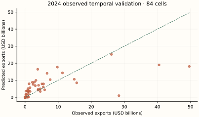
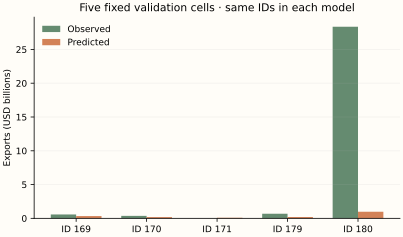
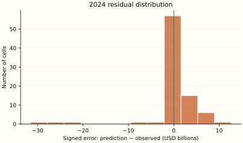
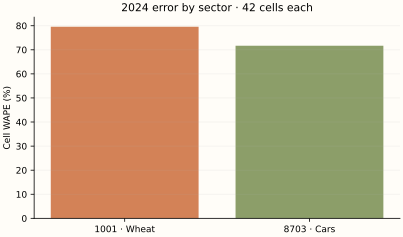
H / Calculate the evaluation metrics
For a hand-sized calculation use validation observations 169, 170, 171. These are actual BACI outcomes, unlike the 2025 scenario. Evaluate errors in USD; the following formulas use millions of USD only to make the squares readable.
| ID | Observed (USD) | Predicted (USD) | Error (USD) | Absolute error (USD) |
|---|---|---|---|---|
| 169 | 573,720,099.0 | 332,567,119.8 | -241,152,979.2 | 241,152,979.2 |
| 170 | 361,534,154.0 | 190,651,145.6 | -170,883,008.4 | 170,883,008.4 |
| 171 | 927,836.0 | 87,944,994.1 | 87,017,158.1 | 87,017,158.1 |
Numerical values are displayed to one decimal place; calculations use the original, unrounded values at full available precision.
The arithmetic substitutions are rounded approximations; these example scores are calculated from the unrounded saved predictions.
The first two example cells share a destination. Sum their signed errors before taking the destination absolute error; this allows cancellation. Cell WAPE takes absolute values first. Full metrics below use 84 rows, not these three.
| Destination | Observed sum (USD) | Predicted sum (USD) | Observed rank | Predicted rank |
|---|---|---|---|---|
| China | 935,254,253.0 | 523,218,265.3 | 2.0 | 2.0 |
| Germany | 927,836.0 | 87,944,994.1 | 1.0 | 1.0 |
Numerical values are displayed to one decimal place; calculations use the original, unrounded values at full available precision.
For these 2 destinations, correlate the two rank columns: Spearman = 1.0. The top-min(3,N) intersection contains 2 destinations. On destinations selected by predicted rank, mean absolute aggregate error is USD 249,526,572.9, and median is USD 249,526,572.9. This tiny two-destination calculation illustrates the definitions; full top-three metrics below rank seven destinations.
| Metric | Unit | Final training fit | 2024 observed validation | 2025 observed holdout | 2025 illustrative scenario |
|---|---|---|---|---|---|
| N | count | 252 | 84 | 0 | 84 |
| MSE | USD² | 25,507,539,058,303,905,792.0 | 34,420,155,773,282,488,320.0 | N/A | 29,172,204,877,460,111,360.0 |
| RMSE | USD | 5,050,498,892.0 | 5,866,869,333.2 | N/A | 5,401,129,963.0 |
| MAE | USD | 1,998,560,319.2 | 2,460,440,173.4 | N/A | 2,186,894,498.8 |
| WAPE | % | 59.9 | 71.8 | N/A | 60.5 |
| Destination WAPE | % | 25.4 | 45.3 | N/A | 31.4 |
| RMSLE | unitless | 2.7 | 3.2 | N/A | 2.7 |
| R2 | unitless | 0.6 | 0.5 | N/A | 0.6 |
| rank_correlation | unitless | 1.0 | 0.8 | N/A | 0.9 |
| top_overlap_3 | count | 3 | 2 | N/A | 3 |
| mean_absolute_top3_error | USD | 44,357,247,486.6 | 33,813,245,912.7 | N/A | 24,341,202,190.1 |
| median_absolute_top3_error | USD | 22,276,190,317.9 | 22,128,689,960.8 | N/A | 17,228,866,657.0 |
Numerical values are displayed to one decimal place; calculations use the original, unrounded values at full available precision.
I / Read the results with the mathematics
Temporal validation has Cell WAPE 71.8% and RMSE USD 5,866,869,333.2. Mean signed error is USD 92,989,250.6: this is an aggregate bias diagnostic, not a test of unbiasedness. The largest three absolute errors are shown below; every other case remains in the scrollable table.
| ID | Country pair | HS4 | Observed (USD) | Predicted (USD) | Absolute error (USD) |
|---|---|---|---|---|---|
| 228 | Mexico → United States | 8703 | 49,637,259,600.0 | 18,110,409,560.6 | 31,526,850,039.4 |
| 180 | Canada → United States | 8703 | 28,360,982,334.0 | 979,139,146.3 | 27,381,843,187.7 |
| 216 | Japan → United States | 8703 | 40,489,527,390.0 | 18,996,467,133.5 | 21,493,060,256.5 |
Numerical values are displayed to one decimal place; calculations use the original, unrounded values at full available precision.
There are 15 zero outcomes in 2024 validation. Their mean predicted flow is USD 3,807.8; individual percentage errors are undefined, but absolute errors and WAPE over the nonzero-total population remain meaningful. Sector WAPE is 79.6% for wheat and 71.7% for cars.
Averages reduce individual-tree volatility, but minleaf8 mixes dissimilar cells in this small panel. Log-space leaf means and scalar dollar correction can understate large flows and assign positive trade to zero cells. The forest cannot extrapolate a new trend outside its fitted leaves.
The final training score and temporal-validation score use different fitted samples and sometimes different tasks. A low training error with worse temporal error suggests fragility; it does not isolate overfitting from time shifts or coverage differences. One observed validation year and one artificial scenario cannot rank algorithms for future trade in general.
J / How this teaching example differs from the full research model
All 120/depth16/leaf8/feature.7 settings and the log-dollar pipeline are retained. The original final cross-section has 51,618 cells; this final forest pools 252 rows from three years. The temporal evaluation uses 2023 predictors for 2024 outcomes. There are only two HS2 categories and seven countries. National scale, two-sector extrapolation and serial dependence differ from the Alberta task.
This is mathematical teaching and independent small-sample re-estimation. It does not reproduce the original Alberta result, infer a commercial opportunity, or estimate tariffs. Two headings, a different network, revised data vintages and one observed validation year offer much less support. No statistical prediction interval is claimed. Forecasting one year, filling a missing historical cell and estimating national-to-provincial potential are different tasks.
06 / Algorithm 4: Multilayer Perceptron
A / Historical origin and motivation
Rosenblatt's late-1950s perceptron developed trainable units; multilayer training became widely influential through Rumelhart, Hinton and Williams's 1986 backpropagation account. Backpropagation applies the calculus chain rule efficiently; Adam (Kingma and Ba, 2014/2015) supplies adaptive numerical updates. These are separate historical components. See the 1986 paper, Adam, and the implemented MLP guide.
B / The idea before equations
A network repeatedly mixes inputs and bends them with a smooth nonlinear function. Its learned hidden units are not preassigned economic concepts. Two hidden layers can represent combinations such as large supply together with short distance. Many weight combinations can describe a tiny sample, so a good training fit is weak evidence of forecasting reliability.
C / Define the mathematical objects
| Symbol | Type and mathematical meaning | Meaning in this experiment |
|---|---|---|
| z | 16-dimensional standardized input vector | 14 numeric features and two HS2 indicators |
| W1, W2, w3 | Learned weight matrices/vector | 16×8, 8×4, 4×1 |
| b1, b2, b3 | Learned bias vectors/scalar | 8, 4 and 1 entries |
| h1, h2 | Hidden activation vectors | 8 and 4 tanh outputs |
| alpha | L2 hyperparameter | 0.1; biases not penalized |
| m_t, v_t, eta | Adam gradient moments and step-size hyperparameter | Optimizer state; eta=.001 |
D / Build and derive the estimator
Use row vectors to match the library's array orientation. Matrix multiplication combines each input with its weights. tanh is a smooth S-shaped transformation; applying it componentwise produces a hidden vector.
The final output is linear and may be any real log prediction. Hidden outputs lie between −1 and 1; this bounds hidden activations, not export dollars. The half-squared-error loss plus the library's weight penalty is:
The Frobenius squared norm is the sum of squared matrix entries. For one observation set delta_3 = F − y. A product's derivative transmits error backward through the weights; multiplying componentwise by tanh's derivative accounts for its bend.
The symbol ⊙ means multiply matching entries. Bias gradients are average deltas without the L2 term. The full-sample expression describes the objective; the actual optimizer estimates gradients using minibatches, with penalty normalization by the batch sample count in this implementation. The sequence and random initialization affect the result.
Squares and square roots here are componentwise. This is the library's Adam update form, including bias-corrected effective step size. The objective is nonconvex; the iteration limit is not a guarantee of an optimum. Finally use c max(exp(F)−1,0). Backpropagation trains the model; the forward pass alone makes a prediction.
The chosen architecture must represent a transferable relationship, optimization must find useful weights, and scaling must be reliable. Bounded tanh can saturate and produce tiny gradients. A weight penalty limits some complexity but neither implies monotone economic effects nor eliminates overfitting.
The source’s dollar-total calibration is shared by Models 1–5. After fitting in log1p units, compute raw nonnegative dollar fitted values r_i on training rows only. Choose c so the rescaled fitted total equals the observed training total:
E / Numerically follow a fitted prediction
Follow observation 263: Canada → United States, HS4 1001, 2025. Its inputs come from observed 2024 cell 179. The 2025 observed outcome is unavailable; the following computation traces the fitted prediction, evaluated against the scenario separately.
Numerical substitutions below are approximate displays. Predictions use the saved, unrounded inputs and parameters; adding or exponentiating the displayed rounded entries need not reproduce the reported dollars. Symbolic exponents and model settings retain their exact meaning.
| Feature | Input | Weight to hidden unit 1 | Product |
|---|---|---|---|
| numeric__log_exporter_gdp | -0.9 | -1.0 | 0.8 |
| numeric__log_destination_gdp | 1.7 | 0.2 | 0.3 |
| numeric__log_exporter_population | -1.2 | -0.3 | 0.3 |
| numeric__log_destination_population | 0.7 | -0.9 | -0.7 |
| numeric__exporter_manufacturing | 0.2 | -0.5 | -0.1 |
| numeric__destination_manufacturing | 0.2 | -0.8 | -0.1 |
| numeric__exporter_internet | 0.8 | -0.5 | -0.4 |
| numeric__destination_internet | 0.8 | 0.2 | 0.2 |
| numeric__log_distance | -1.5 | 0.8 | -1.2 |
| numeric__contiguity | 3.1 | -0.4 | -1.1 |
| numeric__common_language | 2.4 | -7.1e-03 | -0.0 |
| numeric__log_external_supply | 0.3 | -0.1 | -0.0 |
| numeric__log_external_demand | -1.1 | 0.5 | -0.5 |
| numeric__log_world_demand | -1.1 | -0.1 | 0.1 |
| category__HS2_10 | 1.0 | 0.3 | 0.3 |
| category__HS2_87 | 0.0 | -4.9e-02 | -0.0 |
Numerical values are displayed to one decimal place; calculations use the original, unrounded values at full available precision.
| Layer | Unit | Bias | Weighted sum + bias | Output | Activation |
|---|---|---|---|---|---|
| 1 | 1 | 0.7 | -1.3 | -0.9 | tanh |
| 1 | 2 | -0.1 | 4.3 | 1.0 | tanh |
| 1 | 3 | -0.8 | -3.9 | -1.0 | tanh |
| 1 | 4 | 0.5 | 1.3 | 0.9 | tanh |
| 1 | 5 | -0.1 | 2.6 | 1.0 | tanh |
| 1 | 6 | 0.4 | 8.5 | 1.0 | tanh |
| 1 | 7 | 0.2 | 0.3 | 0.3 | tanh |
| 1 | 8 | 0.9 | 1.2 | 0.8 | tanh |
| 2 | 1 | 0.7 | 0.9 | 0.7 | tanh |
| 2 | 2 | -0.3 | -3.0 | -1.0 | tanh |
| 2 | 3 | -0.1 | 3.2 | 1.0 | tanh |
| 2 | 4 | 0.9 | 4.2 | 1.0 | tanh |
| 3 | 1 | 3.6 | 20.2 | 20.2 | linear |
Numerical values are displayed to one decimal place; calculations use the original, unrounded values at full available precision.
The forward pass reconstructs the saved log prediction, displayed as approximately 20.2. There are 177 trainable scalars; this is a large count relative to 84 repeated trade cells. Adam reached 2000 iterations with a convergence warning. The output is a reproducible finite-budget fit, not a claimed optimum.
The calibration multiplier is learned solely from the model’s final training sample. It reconciles the training total; it does not reconcile the holdout total or individual observations. Source JSON retains full available floating-point precision. Independent reconstruction checks use a relative tolerance of 10⁻⁶ (with a small absolute tolerance near zero).
F / Use the complete sample without leakage
The final model uses 252 training rows; its separate temporal-validation fit uses 168 rows and predicts 84 observed 2024 outcomes (IDs 169–252). Every model predicts the same 84 2025 IDs (253–336) from 2024 inputs. There are zero observed 2025 targets. No random train/test mixing is used for the temporal comparison.
Final fitting uses IDs 1–252 as contemporaneous targets. The earlier validation fit uses IDs 1–168; every validation input is copied from the matching 2023 cell (IDs 85–168), while the actual target is its 2024 counterpart (IDs 169–252). One-hot encoding and numeric medians/scales are learned inside each fit, then held fixed for scoring.
The stored design including an intercept has 17 columns and rank 16; its numerical condition number is 3,425,176,991,552,574.5. Column count is not independent information. These diagnostics concern the inputs, not a proof that a nonlinear estimator is identified.
Inspect the exact final hyperparameters and optimizer warnings
{
"settings": {
"activation": "tanh",
"alpha": 0.1,
"batch_size": 64,
"beta_1": 0.9,
"beta_2": 0.999,
"early_stopping": false,
"epsilon": 1e-08,
"hidden_layer_sizes": [
8,
4
],
"learning_rate": "constant",
"learning_rate_init": 0.001,
"loss": "squared_error",
"max_fun": 15000,
"max_iter": 2000,
"momentum": 0.9,
"n_iter_no_change": 2000,
"nesterovs_momentum": true,
"power_t": 0.5,
"random_state": 338,
"shuffle": true,
"solver": "adam",
"tol": 0,
"validation_fraction": 0.1,
"verbose": false,
"warm_start": false
},
"warnings": [
"Stochastic Optimizer: Maximum iterations (2000) reached and the optimization hasn't converged yet."
]
}G / Predictions, observed outcomes and errors
| Observation ID | Year | Exporter | Destination | HS4 | Observed (USD) | Predicted (USD) | Error (USD) | Absolute error (USD) | Signed % error | Illustrative value (USD) | Scenario error (USD) |
|---|---|---|---|---|---|---|---|---|---|---|---|
| 169 | 2024 | Canada | China | 1001 | 573,720,099.0 | 2,125,959,708.6 | 1,552,239,609.6 | 1,552,239,609.6 | 270.6% | N/A | N/A |
| 170 | 2024 | Canada | China | 8703 | 361,534,154.0 | 6,029,265,466.8 | 5,667,731,312.8 | 5,667,731,312.8 | 1,567.7% | N/A | N/A |
| 171 | 2024 | Canada | Germany | 1001 | 927,836.0 | 28,911,958.1 | 27,984,122.1 | 27,984,122.1 | 3,016.1% | N/A | N/A |
| 172 | 2024 | Canada | Germany | 8703 | 108,039,258.0 | 4,077,075,219.3 | 3,969,035,961.3 | 3,969,035,961.3 | 3,673.7% | N/A | N/A |
| 173 | 2024 | Canada | Japan | 1001 | 607,223,446.0 | 1,258,224,209.4 | 651,000,763.4 | 651,000,763.4 | 107.2% | N/A | N/A |
| 174 | 2024 | Canada | Japan | 8703 | 11,236,402.0 | 6,022,027,425.4 | 6,010,791,023.4 | 6,010,791,023.4 | 53,493.9% | N/A | N/A |
| 175 | 2024 | Canada | Mexico | 1001 | 172,551,233.0 | 1,909,476,613.9 | 1,736,925,380.9 | 1,736,925,380.9 | 1,006.6% | N/A | N/A |
| 176 | 2024 | Canada | Mexico | 8703 | 380,444,284.0 | 5,985,251,582.1 | 5,604,807,298.1 | 5,604,807,298.1 | 1,473.2% | N/A | N/A |
| 177 | 2024 | Canada | United Kingdom | 1001 | 173,421,644.0 | 2,596,839,960.6 | 2,423,418,316.6 | 2,423,418,316.6 | 1,397.4% | N/A | N/A |
| 178 | 2024 | Canada | United Kingdom | 8703 | 5,919,442.0 | 5,939,028,990.8 | 5,933,109,548.8 | 5,933,109,548.8 | 100,230.9% | N/A | N/A |
| 179 | 2024 | Canada | United States | 1001 | 685,179,327.0 | 6,038,415,850.7 | 5,353,236,523.7 | 5,353,236,523.7 | 781.3% | N/A | N/A |
| 180 | 2024 | Canada | United States | 8703 | 28,360,982,334.0 | 6,042,468,111.4 | -22,318,514,222.6 | 22,318,514,222.6 | -78.7% | N/A | N/A |
| 181 | 2024 | China | Canada | 1001 | 0.0 | 21,000.0 | 21,000.0 | 21,000.0 | N/A | N/A | N/A |
| 182 | 2024 | China | Canada | 8703 | 1,486,501,326.0 | 5,922,745,462.5 | 4,436,244,136.5 | 4,436,244,136.5 | 298.4% | N/A | N/A |
| 183 | 2024 | China | Germany | 1001 | 5.0 | 0.0 | -5.0 | 5.0 | -100.0% | N/A | N/A |
| 184 | 2024 | China | Germany | 8703 | 3,293,596,023.0 | 6,028,415,435.9 | 2,734,819,412.9 | 2,734,819,412.9 | 83.0% | N/A | N/A |
| 185 | 2024 | China | Japan | 1001 | 0.0 | 0.0 | 0.0 | 0.0 | N/A | N/A | N/A |
| 186 | 2024 | China | Japan | 8703 | 905,237,235.0 | 6,037,534,515.2 | 5,132,297,280.2 | 5,132,297,280.2 | 567.0% | N/A | N/A |
| 187 | 2024 | China | Mexico | 1001 | 0.0 | 0.0 | 0.0 | 0.0 | N/A | N/A | N/A |
| 188 | 2024 | China | Mexico | 8703 | 4,603,755,988.0 | 6,038,727,452.3 | 1,434,971,464.3 | 1,434,971,464.3 | 31.2% | N/A | N/A |
| 189 | 2024 | China | United Kingdom | 1001 | 69,452.0 | 866,106.2 | 796,654.2 | 796,654.2 | 1,147.1% | N/A | N/A |
| 190 | 2024 | China | United Kingdom | 8703 | 5,102,705,740.0 | 5,982,520,241.7 | 879,814,501.7 | 879,814,501.7 | 17.2% | N/A | N/A |
| 191 | 2024 | China | United States | 1001 | 0.0 | 5.8 | 5.8 | 5.8 | N/A | N/A | N/A |
| 192 | 2024 | China | United States | 8703 | 3,820,671,125.0 | 6,043,260,277.7 | 2,222,589,152.7 | 2,222,589,152.7 | 58.2% | N/A | N/A |
| 193 | 2024 | Germany | Canada | 1001 | 166,171.0 | 468,225.2 | 302,054.2 | 302,054.2 | 181.8% | N/A | N/A |
| 194 | 2024 | Germany | Canada | 8703 | 2,832,653,765.0 | 5,997,398,263.5 | 3,164,744,498.5 | 3,164,744,498.5 | 111.7% | N/A | N/A |
| 195 | 2024 | Germany | China | 1001 | 0.0 | 3.9 | 3.9 | 3.9 | N/A | N/A | N/A |
| 196 | 2024 | Germany | China | 8703 | 11,304,788,932.0 | 6,040,229,139.2 | -5,264,559,792.8 | 5,264,559,792.8 | -46.6% | N/A | N/A |
| 197 | 2024 | Germany | Japan | 1001 | 37,305.0 | 92,895.4 | 55,590.4 | 55,590.4 | 149.0% | N/A | N/A |
| 198 | 2024 | Germany | Japan | 8703 | 3,907,415,118.0 | 6,042,373,918.3 | 2,134,958,800.3 | 2,134,958,800.3 | 54.6% | N/A | N/A |
| 199 | 2024 | Germany | Mexico | 1001 | 0.0 | 10.7 | 10.7 | 10.7 | N/A | N/A | N/A |
| 200 | 2024 | Germany | Mexico | 8703 | 1,067,908,362.0 | 6,039,005,483.3 | 4,971,097,121.3 | 4,971,097,121.3 | 465.5% | N/A | N/A |
| 201 | 2024 | Germany | United Kingdom | 1001 | 289,517,719.0 | 621,059,556.6 | 331,541,837.6 | 331,541,837.6 | 114.5% | N/A | N/A |
| 202 | 2024 | Germany | United Kingdom | 8703 | 14,867,362,044.0 | 5,847,767,283.1 | -9,019,594,760.9 | 9,019,594,760.9 | -60.7% | N/A | N/A |
| 203 | 2024 | Germany | United States | 1001 | 8,332,225.0 | 109,244,597.9 | 100,912,372.9 | 100,912,372.9 | 1,211.1% | N/A | N/A |
| 204 | 2024 | Germany | United States | 8703 | 26,105,847,078.0 | 6,043,903,997.6 | -20,061,943,080.4 | 20,061,943,080.4 | -76.8% | N/A | N/A |
| 205 | 2024 | Japan | Canada | 1001 | 0.0 | 1.0 | 1.0 | 1.0 | N/A | N/A | N/A |
| 206 | 2024 | Japan | Canada | 8703 | 5,504,542,608.0 | 6,009,696,777.3 | 505,154,169.3 | 505,154,169.3 | 9.2% | N/A | N/A |
| 207 | 2024 | Japan | China | 1001 | 0.0 | 1.3 | 1.3 | 1.3 | N/A | N/A | N/A |
| 208 | 2024 | Japan | China | 8703 | 6,641,426,201.0 | 6,030,420,651.1 | -611,005,549.9 | 611,005,549.9 | -9.2% | N/A | N/A |
| 209 | 2024 | Japan | Germany | 1001 | 0.0 | 0.0 | 0.0 | 0.0 | N/A | N/A | N/A |
| 210 | 2024 | Japan | Germany | 8703 | 2,207,609,523.0 | 6,038,514,988.7 | 3,830,905,465.7 | 3,830,905,465.7 | 173.5% | N/A | N/A |
| 211 | 2024 | Japan | Mexico | 1001 | 0.0 | 21.9 | 21.9 | 21.9 | N/A | N/A | N/A |
| 212 | 2024 | Japan | Mexico | 8703 | 1,523,309,798.0 | 6,038,464,753.3 | 4,515,154,955.3 | 4,515,154,955.3 | 296.4% | N/A | N/A |
| 213 | 2024 | Japan | United Kingdom | 1001 | 0.0 | 0.0 | 0.0 | 0.0 | N/A | N/A | N/A |
| 214 | 2024 | Japan | United Kingdom | 8703 | 3,096,026,636.0 | 5,991,350,011.4 | 2,895,323,375.4 | 2,895,323,375.4 | 93.5% | N/A | N/A |
| 215 | 2024 | Japan | United States | 1001 | 0.0 | 9,315.4 | 9,315.4 | 9,315.4 | N/A | N/A | N/A |
| 216 | 2024 | Japan | United States | 8703 | 40,489,527,390.0 | 6,043,959,443.4 | -34,445,567,946.6 | 34,445,567,946.6 | -85.1% | N/A | N/A |
| 217 | 2024 | Mexico | Canada | 1001 | 18.0 | 7.8 | -10.2 | 10.2 | -56.9% | N/A | N/A |
| 218 | 2024 | Mexico | Canada | 8703 | 5,918,119,238.0 | 5,936,402,652.2 | 18,283,414.2 | 18,283,414.2 | 0.3% | N/A | N/A |
| 219 | 2024 | Mexico | China | 1001 | 2,671.0 | 7,636.4 | 4,965.4 | 4,965.4 | 185.9% | N/A | N/A |
| 220 | 2024 | Mexico | China | 8703 | 255,985,743.0 | 6,025,579,444.5 | 5,769,593,701.5 | 5,769,593,701.5 | 2,253.9% | N/A | N/A |
| 221 | 2024 | Mexico | Germany | 1001 | 2.0 | 0.0 | -2.0 | 2.0 | -100.0% | N/A | N/A |
| 222 | 2024 | Mexico | Germany | 8703 | 3,979,822,545.0 | 5,998,639,571.6 | 2,018,817,026.6 | 2,018,817,026.6 | 50.7% | N/A | N/A |
| 223 | 2024 | Mexico | Japan | 1001 | 0.0 | 2.3 | 2.3 | 2.3 | N/A | N/A | N/A |
| 224 | 2024 | Mexico | Japan | 8703 | 418,148,376.0 | 6,024,965,474.4 | 5,606,817,098.4 | 5,606,817,098.4 | 1,340.9% | N/A | N/A |
| 225 | 2024 | Mexico | United Kingdom | 1001 | 0.0 | 0.7 | 0.7 | 0.7 | N/A | N/A | N/A |
| 226 | 2024 | Mexico | United Kingdom | 8703 | 1,036,234,550.0 | 5,989,528,576.9 | 4,953,294,026.9 | 4,953,294,026.9 | 478.0% | N/A | N/A |
| 227 | 2024 | Mexico | United States | 1001 | 323,719.0 | 21,997,502.6 | 21,673,783.6 | 21,673,783.6 | 6,695.2% | N/A | N/A |
| 228 | 2024 | Mexico | United States | 8703 | 49,637,259,600.0 | 6,042,582,668.5 | -43,594,676,931.5 | 43,594,676,931.5 | -87.8% | N/A | N/A |
| 229 | 2024 | United Kingdom | Canada | 1001 | 1,943.0 | 360,481.1 | 358,538.1 | 358,538.1 | 18,452.8% | N/A | N/A |
| 230 | 2024 | United Kingdom | Canada | 8703 | 592,950,008.0 | 5,903,066,327.1 | 5,310,116,319.1 | 5,310,116,319.1 | 895.5% | N/A | N/A |
| 231 | 2024 | United Kingdom | China | 1001 | 29,358.0 | 7,949,017.7 | 7,919,659.7 | 7,919,659.7 | 26,976.2% | N/A | N/A |
| 232 | 2024 | United Kingdom | China | 8703 | 4,078,424,924.0 | 6,044,169,889.2 | 1,965,744,965.2 | 1,965,744,965.2 | 48.2% | N/A | N/A |
| 233 | 2024 | United Kingdom | Germany | 1001 | 71,283.0 | 42,272.9 | -29,010.1 | 29,010.1 | -40.7% | N/A | N/A |
| 234 | 2024 | United Kingdom | Germany | 8703 | 2,443,797,094.0 | 5,383,308,901.7 | 2,939,511,807.7 | 2,939,511,807.7 | 120.3% | N/A | N/A |
| 235 | 2024 | United Kingdom | Japan | 1001 | 3,035.0 | 0.3 | -3,034.7 | 3,034.7 | -100.0% | N/A | N/A |
| 236 | 2024 | United Kingdom | Japan | 8703 | 1,031,790,547.0 | 6,036,623,571.8 | 5,004,833,024.8 | 5,004,833,024.8 | 485.1% | N/A | N/A |
| 237 | 2024 | United Kingdom | Mexico | 1001 | 0.0 | 0.0 | 0.0 | 0.0 | N/A | N/A | N/A |
| 238 | 2024 | United Kingdom | Mexico | 8703 | 221,441,018.0 | 6,026,862,444.6 | 5,805,421,426.6 | 5,805,421,426.6 | 2,621.7% | N/A | N/A |
| 239 | 2024 | United Kingdom | United States | 1001 | 461,387.0 | 985,803.2 | 524,416.2 | 524,416.2 | 113.7% | N/A | N/A |
| 240 | 2024 | United Kingdom | United States | 8703 | 9,760,731,714.0 | 6,043,431,815.7 | -3,717,299,898.3 | 3,717,299,898.3 | -38.1% | N/A | N/A |
| 241 | 2024 | United States | Canada | 1001 | 24,530,233.0 | 71,769,756.4 | 47,239,523.4 | 47,239,523.4 | 192.6% | N/A | N/A |
| 242 | 2024 | United States | Canada | 8703 | 15,597,579,400.0 | 5,983,007,579.4 | -9,614,571,820.6 | 9,614,571,820.6 | -61.6% | N/A | N/A |
| 243 | 2024 | United States | China | 1001 | 676,649,911.0 | 1,436,266,468.1 | 759,616,557.1 | 759,616,557.1 | 112.3% | N/A | N/A |
| 244 | 2024 | United States | China | 8703 | 5,586,660,835.0 | 6,040,317,145.6 | 453,656,310.6 | 453,656,310.6 | 8.1% | N/A | N/A |
| 245 | 2024 | United States | Germany | 1001 | 4,749.0 | 38,335.6 | 33,586.6 | 33,586.6 | 707.2% | N/A | N/A |
| 246 | 2024 | United States | Germany | 8703 | 7,595,825,735.0 | 6,002,447,139.5 | -1,593,378,595.5 | 1,593,378,595.5 | -21.0% | N/A | N/A |
| 247 | 2024 | United States | Japan | 1001 | 633,126,270.0 | 1,754,535,146.8 | 1,121,408,876.8 | 1,121,408,876.8 | 177.1% | N/A | N/A |
| 248 | 2024 | United States | Japan | 8703 | 929,137,299.0 | 6,042,064,609.3 | 5,112,927,310.3 | 5,112,927,310.3 | 550.3% | N/A | N/A |
| 249 | 2024 | United States | Mexico | 1001 | 1,070,869,870.0 | 5,107,250,943.3 | 4,036,381,073.3 | 4,036,381,073.3 | 376.9% | N/A | N/A |
| 250 | 2024 | United States | Mexico | 8703 | 4,561,751,943.0 | 6,041,540,398.8 | 1,479,788,455.8 | 1,479,788,455.8 | 32.4% | N/A | N/A |
| 251 | 2024 | United States | United Kingdom | 1001 | 11,505.0 | 11,981,671.2 | 11,970,166.2 | 11,970,166.2 | 104,043.2% | N/A | N/A |
| 252 | 2024 | United States | United Kingdom | 8703 | 1,224,546,537.0 | 6,001,451,088.1 | 4,776,904,551.1 | 4,776,904,551.1 | 390.1% | N/A | N/A |
| 253 | 2025 | Canada | China | 1001 | N/A | 1,766,022,815.2 | N/A | N/A | N/A | 530,862,258.5 | 1,235,160,556.7 |
| 254 | 2025 | Canada | China | 8703 | N/A | 6,250,416,641.5 | N/A | N/A | N/A | 416,554,030.8 | 5,833,862,610.7 |
| 255 | 2025 | Canada | Germany | 1001 | N/A | 2,862,240.4 | N/A | N/A | N/A | 894,406.3 | 1,967,834.2 |
| 256 | 2025 | Canada | Germany | 8703 | N/A | 6,245,092,478.9 | N/A | N/A | N/A | 92,047,862.5 | 6,153,044,616.4 |
| 257 | 2025 | Canada | Japan | 1001 | N/A | 1,136,913,305.4 | N/A | N/A | N/A | 487,208,438.3 | 649,704,867.1 |
| 258 | 2025 | Canada | Japan | 8703 | N/A | 6,273,700,614.1 | N/A | N/A | N/A | 12,108,816.6 | 6,261,591,797.5 |
| 259 | 2025 | Canada | Mexico | 1001 | N/A | 448,669,767.6 | N/A | N/A | N/A | 189,363,850.9 | 259,305,916.7 |
| 260 | 2025 | Canada | Mexico | 8703 | N/A | 6,280,532,230.2 | N/A | N/A | N/A | 394,397,077.7 | 5,886,135,152.5 |
| 261 | 2025 | Canada | United Kingdom | 1001 | N/A | 1,480,585,706.6 | N/A | N/A | N/A | 147,767,604.2 | 1,332,818,102.5 |
| 262 | 2025 | Canada | United Kingdom | 8703 | N/A | 6,277,749,834.5 | N/A | N/A | N/A | 6,531,988.8 | 6,271,217,845.8 |
| 263 | 2025 | Canada | United States | 1001 | N/A | 1,970,392,857.4 | N/A | N/A | N/A | 651,030,223.2 | 1,319,362,634.2 |
| 264 | 2025 | Canada | United States | 8703 | N/A | 6,176,688,141.2 | N/A | N/A | N/A | 29,447,181,933.1 | -23,270,493,791.9 |
| 265 | 2025 | China | Canada | 1001 | N/A | 18.9 | N/A | N/A | N/A | 0.0 | 18.9 |
| 266 | 2025 | China | Canada | 8703 | N/A | 4,330,310,102.3 | N/A | N/A | N/A | 1,422,965,935.0 | 2,907,344,167.4 |
| 267 | 2025 | China | Germany | 1001 | N/A | 25.3 | N/A | N/A | N/A | 4.8 | 20.6 |
| 268 | 2025 | China | Germany | 8703 | N/A | 6,223,268,762.2 | N/A | N/A | N/A | 3,546,726,622.3 | 2,676,542,140.0 |
| 269 | 2025 | China | Japan | 1001 | N/A | 0.7 | N/A | N/A | N/A | 0.0 | 0.7 |
| 270 | 2025 | China | Japan | 8703 | N/A | 6,202,762,119.1 | N/A | N/A | N/A | 925,453,881.9 | 5,277,308,237.2 |
| 271 | 2025 | China | Mexico | 1001 | N/A | 0.0 | N/A | N/A | N/A | 0.0 | 0.0 |
| 272 | 2025 | China | Mexico | 8703 | N/A | 5,940,139,415.0 | N/A | N/A | N/A | 4,805,417,606.6 | 1,134,721,808.4 |
| 273 | 2025 | China | United Kingdom | 1001 | N/A | 265,446.7 | N/A | N/A | N/A | 58,717.6 | 206,729.0 |
| 274 | 2025 | China | United Kingdom | 8703 | N/A | 6,084,552,470.0 | N/A | N/A | N/A | 6,182,433,384.1 | -97,880,914.1 |
| 275 | 2025 | China | United States | 1001 | N/A | 0.0 | N/A | N/A | N/A | 0.0 | 0.0 |
| 276 | 2025 | China | United States | 8703 | N/A | 6,110,414,594.0 | N/A | N/A | N/A | 3,808,519,439.9 | 2,301,895,154.1 |
| 277 | 2025 | Germany | Canada | 1001 | N/A | 334,460.2 | N/A | N/A | N/A | 159,353.0 | 175,107.2 |
| 278 | 2025 | Germany | Canada | 8703 | N/A | 6,180,817,288.7 | N/A | N/A | N/A | 3,185,887,126.3 | 2,994,930,162.4 |
| 279 | 2025 | Germany | China | 1001 | N/A | 0.9 | N/A | N/A | N/A | 0.0 | 0.9 |
| 280 | 2025 | Germany | China | 8703 | N/A | 6,050,748,473.9 | N/A | N/A | N/A | 13,053,502,548.3 | -7,002,754,074.3 |
| 281 | 2025 | Germany | Japan | 1001 | N/A | 54,663.5 | N/A | N/A | N/A | 32,814.7 | 21,848.8 |
| 282 | 2025 | Germany | Japan | 8703 | N/A | 6,281,601,924.3 | N/A | N/A | N/A | 3,985,740,064.6 | 2,295,861,859.7 |
| 283 | 2025 | Germany | Mexico | 1001 | N/A | 0.4 | N/A | N/A | N/A | 0.0 | 0.4 |
| 284 | 2025 | Germany | Mexico | 8703 | N/A | 6,279,546,740.0 | N/A | N/A | N/A | 881,800,888.1 | 5,397,745,851.9 |
| 285 | 2025 | Germany | United Kingdom | 1001 | N/A | 789,737,021.2 | N/A | N/A | N/A | 241,909,176.9 | 547,827,844.4 |
| 286 | 2025 | Germany | United Kingdom | 8703 | N/A | 6,020,848,143.6 | N/A | N/A | N/A | 16,543,983,898.5 | -10,523,135,755.0 |
| 287 | 2025 | Germany | United States | 1001 | N/A | 27,565,974.0 | N/A | N/A | N/A | 7,436,476.8 | 20,129,497.2 |
| 288 | 2025 | Germany | United States | 8703 | N/A | 6,166,070,440.1 | N/A | N/A | N/A | 34,318,821,578.1 | -28,152,751,137.9 |
| 289 | 2025 | Japan | Canada | 1001 | N/A | 2.2 | N/A | N/A | N/A | 0.0 | 2.2 |
| 290 | 2025 | Japan | Canada | 8703 | N/A | 6,232,882,294.5 | N/A | N/A | N/A | 5,664,394,860.4 | 568,487,434.1 |
| 291 | 2025 | Japan | China | 1001 | N/A | 0.0 | N/A | N/A | N/A | 0.0 | 0.0 |
| 292 | 2025 | Japan | China | 8703 | N/A | 5,744,456,700.0 | N/A | N/A | N/A | 6,010,737,613.5 | -266,280,913.5 |
| 293 | 2025 | Japan | Germany | 1001 | N/A | 2.2 | N/A | N/A | N/A | 0.0 | 2.2 |
| 294 | 2025 | Japan | Germany | 8703 | N/A | 6,264,664,205.2 | N/A | N/A | N/A | 2,741,869,777.7 | 3,522,794,427.5 |
| 295 | 2025 | Japan | Mexico | 1001 | N/A | 2.7 | N/A | N/A | N/A | 0.0 | 2.7 |
| 296 | 2025 | Japan | Mexico | 8703 | N/A | 6,262,522,340.4 | N/A | N/A | N/A | 1,525,557,831.1 | 4,736,964,509.3 |
| 297 | 2025 | Japan | United Kingdom | 1001 | N/A | 0.0 | N/A | N/A | N/A | 0.0 | 0.0 |
| 298 | 2025 | Japan | United Kingdom | 8703 | N/A | 6,213,831,689.5 | N/A | N/A | N/A | 3,696,571,751.7 | 2,517,259,937.8 |
| 299 | 2025 | Japan | United States | 1001 | N/A | 10.4 | N/A | N/A | N/A | 0.0 | 10.4 |
| 300 | 2025 | Japan | United States | 8703 | N/A | 6,170,678,171.0 | N/A | N/A | N/A | 35,318,692,142.5 | -29,148,013,971.5 |
| 301 | 2025 | Mexico | Canada | 1001 | N/A | 129.9 | N/A | N/A | N/A | 18.5 | 111.3 |
| 302 | 2025 | Mexico | Canada | 8703 | N/A | 6,276,637,789.4 | N/A | N/A | N/A | 6,538,395,537.6 | -261,757,748.2 |
| 303 | 2025 | Mexico | China | 1001 | N/A | 5,470.0 | N/A | N/A | N/A | 2,361.9 | 3,108.1 |
| 304 | 2025 | Mexico | China | 8703 | N/A | 6,213,460,878.3 | N/A | N/A | N/A | 230,724,417.3 | 5,982,736,461.0 |
| 305 | 2025 | Mexico | Germany | 1001 | N/A | 4.2 | N/A | N/A | N/A | 2.1 | 2.2 |
| 306 | 2025 | Mexico | Germany | 8703 | N/A | 6,278,275,055.3 | N/A | N/A | N/A | 4,343,634,911.2 | 1,934,640,144.1 |
| 307 | 2025 | Mexico | Japan | 1001 | N/A | 2.5 | N/A | N/A | N/A | 0.0 | 2.5 |
| 308 | 2025 | Mexico | Japan | 8703 | N/A | 6,275,073,673.0 | N/A | N/A | N/A | 467,213,585.1 | 5,807,860,087.9 |
| 309 | 2025 | Mexico | United Kingdom | 1001 | N/A | 0.6 | N/A | N/A | N/A | 0.0 | 0.6 |
| 310 | 2025 | Mexico | United Kingdom | 8703 | N/A | 6,268,523,169.7 | N/A | N/A | N/A | 1,206,198,894.9 | 5,062,324,274.8 |
| 311 | 2025 | Mexico | United States | 1001 | N/A | 1,128,637.7 | N/A | N/A | N/A | 301,853.8 | 826,784.0 |
| 312 | 2025 | Mexico | United States | 8703 | N/A | 6,245,211,982.6 | N/A | N/A | N/A | 52,780,466,123.8 | -46,535,254,141.1 |
| 313 | 2025 | United Kingdom | Canada | 1001 | N/A | 5,530.2 | N/A | N/A | N/A | 1,713.1 | 3,817.2 |
| 314 | 2025 | United Kingdom | Canada | 8703 | N/A | 6,251,365,634.3 | N/A | N/A | N/A | 550,904,513.2 | 5,700,461,121.2 |
| 315 | 2025 | United Kingdom | China | 1001 | N/A | 210,298.3 | N/A | N/A | N/A | 30,482.9 | 179,815.4 |
| 316 | 2025 | United Kingdom | China | 8703 | N/A | 6,129,920,682.7 | N/A | N/A | N/A | 3,762,660,597.4 | 2,367,260,085.4 |
| 317 | 2025 | United Kingdom | Germany | 1001 | N/A | 87,346.1 | N/A | N/A | N/A | 70,311.1 | 17,035.0 |
| 318 | 2025 | United Kingdom | Germany | 8703 | N/A | 5,850,174,013.0 | N/A | N/A | N/A | 2,710,958,224.4 | 3,139,215,788.6 |
| 319 | 2025 | United Kingdom | Japan | 1001 | N/A | 31.5 | N/A | N/A | N/A | 2,553.6 | -2,522.1 |
| 320 | 2025 | United Kingdom | Japan | 8703 | N/A | 6,272,358,684.0 | N/A | N/A | N/A | 1,098,153,473.6 | 5,174,205,210.4 |
| 321 | 2025 | United Kingdom | Mexico | 1001 | N/A | 0.0 | N/A | N/A | N/A | 0.0 | 0.0 |
| 322 | 2025 | United Kingdom | Mexico | 8703 | N/A | 6,266,882,480.4 | N/A | N/A | N/A | 223,111,631.1 | 6,043,770,849.3 |
| 323 | 2025 | United Kingdom | United States | 1001 | N/A | 599,088.7 | N/A | N/A | N/A | 419,717.7 | 179,370.9 |
| 324 | 2025 | United Kingdom | United States | 8703 | N/A | 6,101,608,083.9 | N/A | N/A | N/A | 11,524,374,951.3 | -5,422,766,867.4 |
| 325 | 2025 | United States | Canada | 1001 | N/A | 5,839,341,960.4 | N/A | N/A | N/A | 20,139,638.9 | 5,819,202,321.5 |
| 326 | 2025 | United States | Canada | 8703 | N/A | 6,262,757,051.0 | N/A | N/A | N/A | 14,836,726,276.4 | -8,573,969,225.4 |
| 327 | 2025 | United States | China | 1001 | N/A | 2,156,956,727.0 | N/A | N/A | N/A | 615,204,885.7 | 1,541,751,841.3 |
| 328 | 2025 | United States | China | 8703 | N/A | 5,919,431,040.2 | N/A | N/A | N/A | 5,166,890,837.6 | 752,540,202.6 |
| 329 | 2025 | United States | Germany | 1001 | N/A | 12,429.7 | N/A | N/A | N/A | 4,758.1 | 7,671.6 |
| 330 | 2025 | United States | Germany | 8703 | N/A | 6,146,503,431.2 | N/A | N/A | N/A | 8,934,849,485.0 | -2,788,346,053.9 |
| 331 | 2025 | United States | Japan | 1001 | N/A | 1,314,154,587.8 | N/A | N/A | N/A | 533,628,343.0 | 780,526,244.8 |
| 332 | 2025 | United States | Japan | 8703 | N/A | 6,146,704,384.3 | N/A | N/A | N/A | 973,881,597.5 | 5,172,822,786.8 |
| 333 | 2025 | United States | Mexico | 1001 | N/A | 6,144,267,232.8 | N/A | N/A | N/A | 979,168,570.9 | 5,165,098,661.9 |
| 334 | 2025 | United States | Mexico | 8703 | N/A | 6,266,526,876.2 | N/A | N/A | N/A | 4,915,308,212.9 | 1,351,218,663.4 |
| 335 | 2025 | United States | United Kingdom | 1001 | N/A | 123,290.9 | N/A | N/A | N/A | 10,448.6 | 112,842.3 |
| 336 | 2025 | United States | United Kingdom | 8703 | N/A | 6,252,199,980.2 | N/A | N/A | N/A | 1,056,748,860.3 | 5,195,451,119.8 |
Numerical values are displayed to one decimal place; calculations use the original, unrounded values at full available precision.
Signed error = predicted − observed: positive means overprediction. Individual percentage error is N/A when observed trade is zero or unavailable. A scenario error is predicted − illustrative value, not an observed prediction error. Final training fitted values are downloadable with every eligible row in predictions.csv.
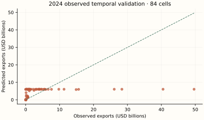
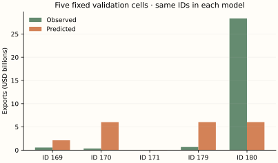
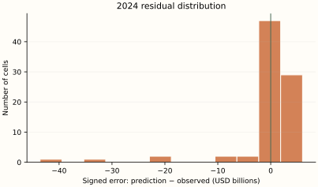
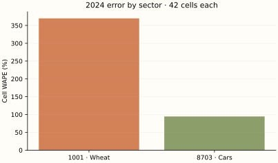
H / Calculate the evaluation metrics
For a hand-sized calculation use validation observations 169, 170, 171. These are actual BACI outcomes, unlike the 2025 scenario. Evaluate errors in USD; the following formulas use millions of USD only to make the squares readable.
| ID | Observed (USD) | Predicted (USD) | Error (USD) | Absolute error (USD) |
|---|---|---|---|---|
| 169 | 573,720,099.0 | 2,125,959,708.6 | 1,552,239,609.6 | 1,552,239,609.6 |
| 170 | 361,534,154.0 | 6,029,265,466.8 | 5,667,731,312.8 | 5,667,731,312.8 |
| 171 | 927,836.0 | 28,911,958.1 | 27,984,122.1 | 27,984,122.1 |
Numerical values are displayed to one decimal place; calculations use the original, unrounded values at full available precision.
The arithmetic substitutions are rounded approximations; these example scores are calculated from the unrounded saved predictions.
The first two example cells share a destination. Sum their signed errors before taking the destination absolute error; this allows cancellation. Cell WAPE takes absolute values first. Full metrics below use 84 rows, not these three.
| Destination | Observed sum (USD) | Predicted sum (USD) | Observed rank | Predicted rank |
|---|---|---|---|---|
| China | 935,254,253.0 | 8,155,225,175.4 | 2.0 | 2.0 |
| Germany | 927,836.0 | 28,911,958.1 | 1.0 | 1.0 |
Numerical values are displayed to one decimal place; calculations use the original, unrounded values at full available precision.
For these 2 destinations, correlate the two rank columns: Spearman = 1.0. The top-min(3,N) intersection contains 2 destinations. On destinations selected by predicted rank, mean absolute aggregate error is USD 3,623,977,522.3, and median is USD 3,623,977,522.3. This tiny two-destination calculation illustrates the definitions; full top-three metrics below rank seven destinations.
| Metric | Unit | Final training fit | 2024 observed validation | 2025 observed holdout | 2025 illustrative scenario |
|---|---|---|---|---|---|
| N | count | 252 | 84 | 0 | 84 |
| MSE | USD² | 51,586,696,990,283,202,560.0 | 57,184,371,413,655,576,576.0 | N/A | 62,803,724,885,331,255,296.0 |
| RMSE | USD | 7,182,387,972.7 | 7,562,034,872.5 | N/A | 7,924,880,118.0 |
| MAE | USD | 3,459,259,882.8 | 3,401,023,551.4 | N/A | 3,585,002,526.8 |
| WAPE | % | 103.6 | 99.3 | N/A | 99.2 |
| Destination WAPE | % | 77.1 | 75.8 | N/A | 77.3 |
| RMSLE | unitless | 1.9 | 2.8 | N/A | 1.9 |
| R2 | unitless | 0.2 | 0.2 | N/A | 0.2 |
| rank_correlation | unitless | -0.2 | 0.0 | N/A | -0.1 |
| top_overlap_3 | count | 1 | 2 | N/A | 2 |
| mean_absolute_top3_error | USD | 75,025,399,784.5 | 52,108,181,820.6 | N/A | 16,524,766,133.5 |
| median_absolute_top3_error | USD | 96,065,027,141.4 | 29,584,547,208.1 | N/A | 10,444,459,694.1 |
Numerical values are displayed to one decimal place; calculations use the original, unrounded values at full available precision.
I / Read the results with the mathematics
Temporal validation has Cell WAPE 99.3% and RMSE USD 7,562,034,872.5. Mean signed error is USD -176,146,559.6: this is an aggregate bias diagnostic, not a test of unbiasedness. The largest three absolute errors are shown below; every other case remains in the scrollable table.
| ID | Country pair | HS4 | Observed (USD) | Predicted (USD) | Absolute error (USD) |
|---|---|---|---|---|---|
| 228 | Mexico → United States | 8703 | 49,637,259,600.0 | 6,042,582,668.5 | 43,594,676,931.5 |
| 216 | Japan → United States | 8703 | 40,489,527,390.0 | 6,043,959,443.4 | 34,445,567,946.6 |
| 180 | Canada → United States | 8703 | 28,360,982,334.0 | 6,042,468,111.4 | 22,318,514,222.6 |
Numerical values are displayed to one decimal place; calculations use the original, unrounded values at full available precision.
There are 15 zero outcomes in 2024 validation. Their mean predicted flow is USD 2,024.2; individual percentage errors are undefined, but absolute errors and WAPE over the nonzero-total population remain meaningful. Sector WAPE is 369.8% for wheat and 94.6% for cars.
The optimizer warning means the budget stopped before convergence. The network has more trainable parameters than independent trade cells, and tanh can saturate. These outputs demonstrate a reproducible architecture and forward pass; they do not establish that the network has found an adequate optimum or a stable economic pattern.
The final training score and temporal-validation score use different fitted samples and sometimes different tasks. A low training error with worse temporal error suggests fragility; it does not isolate overfitting from time shifts or coverage differences. One observed validation year and one artificial scenario cannot rank algorithms for future trade in general.
J / How this teaching example differs from the full research model
The original uses tanh 32/16 with 180 epochs, batch512 and random 15% internal early stopping. This teaching version uses tanh 8/4, batch64 and a fixed 2000-epoch Adam budget, alpha .1, and disables random early stopping so the explicit 2024 temporal check remains separate. There are 177 trainable scalars. The recorded convergence warning is retained. These are declared teaching settings, not the original fitted network or a numerical replication.
This is mathematical teaching and independent small-sample re-estimation. It does not reproduce the original Alberta result, infer a commercial opportunity, or estimate tariffs. Two headings, a different network, revised data vintages and one observed validation year offer much less support. No statistical prediction interval is claimed. Forecasting one year, filling a missing historical cell and estimating national-to-provincial potential are different tasks.
07 / Algorithm 5: Single-stage gradient boosting
A / Historical origin and motivation
Friedman's 2001 gradient boosting formulation describes sequential function approximation by following gradients in prediction space. Histogram implementations group continuous inputs into bins to accelerate tree split searches; the source uses scikit-learn's HistGradientBoostingRegressor, not XGBoost or a generic named package. See Friedman's paper and the implementation guide.
B / The idea before equations
Start with a rough constant log-trade prediction. A small tree learns what that rough answer misses. Add a modest fraction of its correction, then let the next tree work on what is still wrong. Forest trees are averaged in parallel; these boosting trees depend on the earlier trees' errors.
C / Define the mathematical objects
| Symbol | Type and mathematical meaning | Meaning in this experiment |
|---|---|---|
| F_m(z) | Learned scalar additive log prediction | After m correction trees |
| r_im | Negative loss gradient | y_i − F_(m−1)(z_i) for squared loss |
| eta | Learning-rate hyperparameter | 0.1 |
| R_l, u_l | Tree leaf region and learned correction | Up to seven leaves per iteration |
| G_l, H_l, L2 | Sums of gradients, Hessians, leaf penalty | Squared-loss Hessian 1; L2=0 here |
| M | Maximum correction trees | 150, no random early stopping |
Numerical values are displayed to one decimal place; calculations use the original, unrounded values at full available precision.
D / Build and derive the estimator
Minimize half squared error in transformed units. First choose a constant; differentiation gives the training mean log outcome.
Treat each observation's prediction as a coordinate. The derivative with respect to that coordinate is F−y, so moving in the negative-gradient direction means fitting residuals y−F. A tree approximates this correction using a few regions rather than a separate correction for every row.
The indicator is 1 inside a leaf and 0 outside it. The library uses a second-order loss expansion for each leaf. Holding its rows fixed, the part that depends on correction u is G u + (H + L2)u²/2. Differentiate to obtain its Newton value:
For squared error and L2=0 this is exactly the average residual. The optimal quadratic value is −G²/[2(H+L2)]. Therefore an ideal split's loss reduction is:
Implementation score scaling can omit a common factor 1/2 without changing the maximizing split. Instead of trying every distinct numeric value, the histogram model searches learned bin boundaries (max_bins255), with min_samples_leaf20. This is a computational approximation to candidate split locations, not a different trade target. Smaller eta means each tree changes the fit less, but many iterations can still overfit.
These are residual corrections to log1p trade, including zeros. There is no positive-trade probability or partial-adjustment lambda in Model 5. A leaf has a constant correction; accumulated leaves produce nonlinear threshold interactions.
Shallow residual patterns must transfer across years. Bin resolution, leaf size and shrinkage regulate flexibility. The stagewise greedy algorithm has no global tree-ensemble closed form and can fit sample peculiarities. Nonnegative inverse predictions need not exactly reproduce zero cells.
The source’s dollar-total calibration is shared by Models 1–5. After fitting in log1p units, compute raw nonnegative dollar fitted values r_i on training rows only. Choose c so the rescaled fitted total equals the observed training total:
E / Numerically follow a fitted prediction
Follow observation 263: Canada → United States, HS4 1001, 2025. Its inputs come from observed 2024 cell 179. The 2025 observed outcome is unavailable; the following computation traces the fitted prediction, evaluated against the scenario separately.
Numerical substitutions below are approximate displays. Predictions use the saved, unrounded inputs and parameters; adding or exponentiating the displayed rounded entries need not reproduce the reported dollars. Symbolic exponents and model settings retain their exact meaning.
| Iteration | Cumulative log prediction | Added eta × leaf correction |
|---|---|---|
| 0 | 15.1 | Initial mean log1p target |
| 1 | 15.2 | 0.2 |
| 2 | 15.4 | 0.2 |
| 3 | 15.5 | 0.1 |
| 4 | 15.7 | 0.1 |
| 5 | 15.8 | 0.1 |
| 6 | 15.9 | 0.1 |
| 7 | 16.1 | 0.1 |
| 8 | 16.2 | 0.1 |
| 9 | 16.3 | 0.1 |
| 10 | 16.4 | 0.1 |
| 11 | 16.6 | 0.2 |
| 12 | 16.7 | 0.1 |
| 13 | 16.8 | 0.1 |
| 14 | 16.9 | 0.1 |
| 15 | 16.9 | 0.1 |
| 16 | 17.0 | 0.1 |
| 17 | 17.1 | 0.1 |
| 18 | 17.2 | 0.1 |
| 19 | 17.2 | 0.1 |
| 20 | 17.3 | 0.1 |
| 21 | 17.4 | 0.1 |
| 22 | 17.5 | 0.1 |
| 23 | 17.6 | 0.1 |
| 24 | 17.8 | 0.2 |
| 25 | 17.9 | 0.1 |
| 26 | 18.0 | 0.1 |
| 27 | 18.1 | 0.1 |
| 28 | 18.2 | 0.1 |
| 29 | 18.3 | 0.1 |
| 30 | 18.4 | 0.1 |
| 31 | 18.5 | 0.1 |
| 32 | 18.6 | 0.1 |
| 33 | 18.7 | 0.1 |
| 34 | 18.8 | 0.1 |
| 35 | 19.0 | 0.1 |
| 36 | 19.1 | 0.1 |
| 37 | 19.1 | 0.1 |
| 38 | 19.2 | 0.1 |
| 39 | 19.3 | 0.1 |
| 40 | 19.4 | 0.1 |
| 41 | 19.5 | 0.1 |
| 42 | 19.5 | 0.1 |
| 43 | 19.6 | 0.1 |
| 44 | 19.7 | 0.1 |
| 45 | 19.7 | 0.1 |
| 46 | 19.8 | 0.1 |
| 47 | 19.9 | 0.1 |
| 48 | 19.9 | 0.1 |
| 49 | 20.0 | 0.1 |
| 50 | 20.1 | 0.1 |
| 51 | 20.2 | 0.1 |
| 52 | 20.3 | 0.1 |
| 53 | 20.4 | 0.1 |
| 54 | 20.4 | 0.1 |
| 55 | 20.5 | 0.1 |
| 56 | 20.6 | 0.1 |
| 57 | 20.6 | 0.1 |
| 58 | 20.7 | 0.1 |
| 59 | 20.8 | 0.1 |
| 60 | 20.8 | 0.1 |
| 61 | 20.9 | 0.1 |
| 62 | 21.0 | 0.1 |
| 63 | 21.0 | 0.1 |
| 64 | 21.1 | 0.1 |
| 65 | 21.1 | 0.1 |
| 66 | 21.2 | 0.0 |
| 67 | 21.2 | 0.0 |
| 68 | 21.3 | 0.0 |
| 69 | 21.3 | 0.0 |
| 70 | 21.3 | 0.0 |
| 71 | 21.4 | 0.0 |
| 72 | 21.4 | 0.0 |
| 73 | 21.5 | 0.0 |
| 74 | 21.5 | 0.0 |
| 75 | 21.6 | 0.0 |
| 76 | 21.6 | 0.0 |
| 77 | 21.6 | 0.0 |
| 78 | 21.7 | 0.0 |
| 79 | 21.7 | 0.0 |
| 80 | 21.7 | 0.0 |
| 81 | 21.8 | 0.0 |
| 82 | 21.8 | 0.0 |
| 83 | 21.8 | -0.0 |
| 84 | 21.9 | 0.1 |
| 85 | 21.9 | 0.0 |
| 86 | 21.9 | 0.0 |
| 87 | 21.9 | -0.0 |
| 88 | 21.9 | 0.0 |
| 89 | 21.9 | -0.0 |
| 90 | 22.0 | 0.1 |
| 91 | 22.0 | 0.0 |
| 92 | 22.0 | 0.0 |
| 93 | 22.0 | -0.0 |
| 94 | 22.0 | -0.0 |
| 95 | 22.0 | -0.0 |
| 96 | 22.0 | -0.0 |
| 97 | 22.1 | 0.1 |
| 98 | 22.0 | -0.0 |
| 99 | 22.1 | 0.0 |
| 100 | 22.1 | 0.0 |
| 101 | 22.1 | -0.0 |
| 102 | 22.1 | -0.0 |
| 103 | 22.1 | -0.0 |
| 104 | 22.1 | 0.0 |
| 105 | 22.1 | -0.0 |
| 106 | 22.1 | 0.0 |
| 107 | 22.1 | -0.0 |
| 108 | 22.1 | -0.0 |
| 109 | 22.1 | -0.0 |
| 110 | 22.0 | -0.0 |
| 111 | 22.0 | -0.0 |
| 112 | 22.0 | 0.0 |
| 113 | 22.0 | -0.0 |
| 114 | 22.0 | -0.0 |
| 115 | 22.0 | 0.0 |
| 116 | 22.0 | -0.0 |
| 117 | 22.1 | 0.1 |
| 118 | 22.0 | -0.0 |
| 119 | 22.1 | 0.0 |
| 120 | 22.0 | -0.0 |
| 121 | 22.0 | 0.0 |
| 122 | 22.0 | -0.0 |
| 123 | 22.0 | -0.0 |
| 124 | 22.0 | 0.0 |
| 125 | 22.0 | 0.0 |
| 126 | 22.0 | -0.0 |
| 127 | 22.0 | -0.0 |
| 128 | 22.0 | -0.0 |
| 129 | 21.9 | -0.0 |
| 130 | 21.9 | -0.0 |
| 131 | 22.0 | 0.0 |
| 132 | 22.0 | -0.0 |
| 133 | 21.9 | -0.0 |
| 134 | 21.9 | -0.0 |
| 135 | 21.9 | -0.0 |
| 136 | 21.9 | -0.0 |
| 137 | 21.9 | -0.0 |
| 138 | 21.9 | 0.0 |
| 139 | 21.9 | -0.0 |
| 140 | 21.9 | -0.0 |
| 141 | 21.9 | -0.0 |
| 142 | 21.9 | 0.1 |
| 143 | 21.9 | -0.0 |
| 144 | 21.9 | -0.0 |
| 145 | 21.9 | -0.0 |
| 146 | 21.9 | 0.0 |
| 147 | 21.9 | -0.0 |
| 148 | 21.9 | -0.0 |
| 149 | 21.9 | -0.0 |
| 150 | 21.9 | 0.0 |
Numerical values are displayed to one decimal place; calculations use the original, unrounded values at full available precision.
Each saved increment already includes the learning rate .05. These corrections are fitted to all training residuals, not solely this observation. The final cumulative prediction is 21.9.
The calibration multiplier is learned solely from the model’s final training sample. It reconciles the training total; it does not reconcile the holdout total or individual observations. Source JSON retains full available floating-point precision. Independent reconstruction checks use a relative tolerance of 10⁻⁶ (with a small absolute tolerance near zero).
F / Use the complete sample without leakage
The final model uses 252 training rows; its separate temporal-validation fit uses 168 rows and predicts 84 observed 2024 outcomes (IDs 169–252). Every model predicts the same 84 2025 IDs (253–336) from 2024 inputs. There are zero observed 2025 targets. No random train/test mixing is used for the temporal comparison.
Final fitting uses IDs 1–252 as contemporaneous targets. The earlier validation fit uses IDs 1–168; every validation input is copied from the matching 2023 cell (IDs 85–168), while the actual target is its 2024 counterpart (IDs 169–252). One-hot encoding and numeric medians/scales are learned inside each fit, then held fixed for scoring.
The stored design including an intercept has 17 columns and rank 16; its numerical condition number is 3,425,176,991,552,574.5. Column count is not independent information. These diagnostics concern the inputs, not a proof that a nonlinear estimator is identified.
Inspect the exact final hyperparameters and optimizer warnings
{
"settings": {
"categorical_features": "from_dtype",
"early_stopping": false,
"interaction_cst": null,
"l2_regularization": 0.0,
"learning_rate": 0.05,
"loss": "squared_error",
"max_bins": 255,
"max_depth": null,
"max_features": 1.0,
"max_iter": 150,
"max_leaf_nodes": 7,
"min_samples_leaf": 20,
"monotonic_cst": null,
"n_iter_no_change": 10,
"quantile": null,
"random_state": 338,
"scoring": "loss",
"tol": 1e-07,
"validation_fraction": 0.1,
"verbose": 0,
"warm_start": false
},
"warnings": []
}G / Predictions, observed outcomes and errors
| Observation ID | Year | Exporter | Destination | HS4 | Observed (USD) | Predicted (USD) | Error (USD) | Absolute error (USD) | Signed % error | Illustrative value (USD) | Scenario error (USD) |
|---|---|---|---|---|---|---|---|---|---|---|---|
| 169 | 2024 | Canada | China | 1001 | 573,720,099.0 | 2,184,400,024.4 | 1,610,679,925.4 | 1,610,679,925.4 | 280.7% | N/A | N/A |
| 170 | 2024 | Canada | China | 8703 | 361,534,154.0 | 275,164,073.2 | -86,370,080.8 | 86,370,080.8 | -23.9% | N/A | N/A |
| 171 | 2024 | Canada | Germany | 1001 | 927,836.0 | 7,951,684.6 | 7,023,848.6 | 7,023,848.6 | 757.0% | N/A | N/A |
| 172 | 2024 | Canada | Germany | 8703 | 108,039,258.0 | 111,481,867.9 | 3,442,609.9 | 3,442,609.9 | 3.2% | N/A | N/A |
| 173 | 2024 | Canada | Japan | 1001 | 607,223,446.0 | 151,318,862.4 | -455,904,583.6 | 455,904,583.6 | -75.1% | N/A | N/A |
| 174 | 2024 | Canada | Japan | 8703 | 11,236,402.0 | 51,092,925.4 | 39,856,523.4 | 39,856,523.4 | 354.7% | N/A | N/A |
| 175 | 2024 | Canada | Mexico | 1001 | 172,551,233.0 | 351,167,694.2 | 178,616,461.2 | 178,616,461.2 | 103.5% | N/A | N/A |
| 176 | 2024 | Canada | Mexico | 8703 | 380,444,284.0 | 177,522,896.0 | -202,921,388.0 | 202,921,388.0 | -53.3% | N/A | N/A |
| 177 | 2024 | Canada | United Kingdom | 1001 | 173,421,644.0 | 138,311,269.0 | -35,110,375.0 | 35,110,375.0 | -20.2% | N/A | N/A |
| 178 | 2024 | Canada | United Kingdom | 8703 | 5,919,442.0 | 62,837,571.3 | 56,918,129.3 | 56,918,129.3 | 961.5% | N/A | N/A |
| 179 | 2024 | Canada | United States | 1001 | 685,179,327.0 | 2,193,152,034.4 | 1,507,972,707.4 | 1,507,972,707.4 | 220.1% | N/A | N/A |
| 180 | 2024 | Canada | United States | 8703 | 28,360,982,334.0 | 7,218,902,287.0 | -21,142,080,047.0 | 21,142,080,047.0 | -74.5% | N/A | N/A |
| 181 | 2024 | China | Canada | 1001 | 0.0 | 105.8 | 105.8 | 105.8 | N/A | N/A | N/A |
| 182 | 2024 | China | Canada | 8703 | 1,486,501,326.0 | 4,212,288,409.3 | 2,725,787,083.3 | 2,725,787,083.3 | 183.4% | N/A | N/A |
| 183 | 2024 | China | Germany | 1001 | 5.0 | 18.3 | 13.3 | 13.3 | 266.0% | N/A | N/A |
| 184 | 2024 | China | Germany | 8703 | 3,293,596,023.0 | 3,388,265,191.4 | 94,669,168.4 | 94,669,168.4 | 2.9% | N/A | N/A |
| 185 | 2024 | China | Japan | 1001 | 0.0 | 15.3 | 15.3 | 15.3 | N/A | N/A | N/A |
| 186 | 2024 | China | Japan | 8703 | 905,237,235.0 | 2,964,036,719.0 | 2,058,799,484.0 | 2,058,799,484.0 | 227.4% | N/A | N/A |
| 187 | 2024 | China | Mexico | 1001 | 0.0 | 0.0 | 0.0 | 0.0 | N/A | N/A | N/A |
| 188 | 2024 | China | Mexico | 8703 | 4,603,755,988.0 | 2,115,916,391.4 | -2,487,839,596.6 | 2,487,839,596.6 | -54.0% | N/A | N/A |
| 189 | 2024 | China | United Kingdom | 1001 | 69,452.0 | 5,805.6 | -63,646.4 | 63,646.4 | -91.6% | N/A | N/A |
| 190 | 2024 | China | United Kingdom | 8703 | 5,102,705,740.0 | 5,977,914,016.9 | 875,208,276.9 | 875,208,276.9 | 17.2% | N/A | N/A |
| 191 | 2024 | China | United States | 1001 | 0.0 | 155.2 | 155.2 | 155.2 | N/A | N/A | N/A |
| 192 | 2024 | China | United States | 8703 | 3,820,671,125.0 | 12,252,275,473.7 | 8,431,604,348.7 | 8,431,604,348.7 | 220.7% | N/A | N/A |
| 193 | 2024 | Germany | Canada | 1001 | 166,171.0 | 48,245.6 | -117,925.4 | 117,925.4 | -71.0% | N/A | N/A |
| 194 | 2024 | Germany | Canada | 8703 | 2,832,653,765.0 | 4,888,998,595.0 | 2,056,344,830.0 | 2,056,344,830.0 | 72.6% | N/A | N/A |
| 195 | 2024 | Germany | China | 1001 | 0.0 | 419.7 | 419.7 | 419.7 | N/A | N/A | N/A |
| 196 | 2024 | Germany | China | 8703 | 11,304,788,932.0 | 3,824,376,859.9 | -7,480,412,072.1 | 7,480,412,072.1 | -66.2% | N/A | N/A |
| 197 | 2024 | Germany | Japan | 1001 | 37,305.0 | 1,425.8 | -35,879.2 | 35,879.2 | -96.2% | N/A | N/A |
| 198 | 2024 | Germany | Japan | 8703 | 3,907,415,118.0 | 2,620,468,035.1 | -1,286,947,082.9 | 1,286,947,082.9 | -32.9% | N/A | N/A |
| 199 | 2024 | Germany | Mexico | 1001 | 0.0 | 91.0 | 91.0 | 91.0 | N/A | N/A | N/A |
| 200 | 2024 | Germany | Mexico | 8703 | 1,067,908,362.0 | 1,735,305,735.2 | 667,397,373.2 | 667,397,373.2 | 62.5% | N/A | N/A |
| 201 | 2024 | Germany | United Kingdom | 1001 | 289,517,719.0 | 10,739,025.2 | -278,778,693.8 | 278,778,693.8 | -96.3% | N/A | N/A |
| 202 | 2024 | Germany | United Kingdom | 8703 | 14,867,362,044.0 | 22,908,260,155.0 | 8,040,898,111.0 | 8,040,898,111.0 | 54.1% | N/A | N/A |
| 203 | 2024 | Germany | United States | 1001 | 8,332,225.0 | 1,397,418.3 | -6,934,806.7 | 6,934,806.7 | -83.2% | N/A | N/A |
| 204 | 2024 | Germany | United States | 8703 | 26,105,847,078.0 | 32,655,386,243.6 | 6,549,539,165.6 | 6,549,539,165.6 | 25.1% | N/A | N/A |
| 205 | 2024 | Japan | Canada | 1001 | 0.0 | 1.5 | 1.5 | 1.5 | N/A | N/A | N/A |
| 206 | 2024 | Japan | Canada | 8703 | 5,504,542,608.0 | 2,520,519,727.2 | -2,984,022,880.8 | 2,984,022,880.8 | -54.2% | N/A | N/A |
| 207 | 2024 | Japan | China | 1001 | 0.0 | 34.1 | 34.1 | 34.1 | N/A | N/A | N/A |
| 208 | 2024 | Japan | China | 8703 | 6,641,426,201.0 | 9,096,293,198.1 | 2,454,866,997.1 | 2,454,866,997.1 | 37.0% | N/A | N/A |
| 209 | 2024 | Japan | Germany | 1001 | 0.0 | 0.0 | 0.0 | 0.0 | N/A | N/A | N/A |
| 210 | 2024 | Japan | Germany | 8703 | 2,207,609,523.0 | 8,655,589,296.5 | 6,447,979,773.5 | 6,447,979,773.5 | 292.1% | N/A | N/A |
| 211 | 2024 | Japan | Mexico | 1001 | 0.0 | 0.0 | 0.0 | 0.0 | N/A | N/A | N/A |
| 212 | 2024 | Japan | Mexico | 8703 | 1,523,309,798.0 | 1,600,417,516.7 | 77,107,718.7 | 77,107,718.7 | 5.1% | N/A | N/A |
| 213 | 2024 | Japan | United Kingdom | 1001 | 0.0 | 3.7 | 3.7 | 3.7 | N/A | N/A | N/A |
| 214 | 2024 | Japan | United Kingdom | 8703 | 3,096,026,636.0 | 2,217,517,640.0 | -878,508,996.0 | 878,508,996.0 | -28.4% | N/A | N/A |
| 215 | 2024 | Japan | United States | 1001 | 0.0 | 189.8 | 189.8 | 189.8 | N/A | N/A | N/A |
| 216 | 2024 | Japan | United States | 8703 | 40,489,527,390.0 | 14,350,487,507.0 | -26,139,039,883.0 | 26,139,039,883.0 | -64.6% | N/A | N/A |
| 217 | 2024 | Mexico | Canada | 1001 | 18.0 | 713.2 | 695.2 | 695.2 | 3,862.0% | N/A | N/A |
| 218 | 2024 | Mexico | Canada | 8703 | 5,918,119,238.0 | 3,335,497,465.9 | -2,582,621,772.1 | 2,582,621,772.1 | -43.6% | N/A | N/A |
| 219 | 2024 | Mexico | China | 1001 | 2,671.0 | 48.1 | -2,622.9 | 2,622.9 | -98.2% | N/A | N/A |
| 220 | 2024 | Mexico | China | 8703 | 255,985,743.0 | 3,808,637,225.7 | 3,552,651,482.7 | 3,552,651,482.7 | 1,387.8% | N/A | N/A |
| 221 | 2024 | Mexico | Germany | 1001 | 2.0 | 0.4 | -1.6 | 1.6 | -82.2% | N/A | N/A |
| 222 | 2024 | Mexico | Germany | 8703 | 3,979,822,545.0 | 2,221,287,256.5 | -1,758,535,288.5 | 1,758,535,288.5 | -44.2% | N/A | N/A |
| 223 | 2024 | Mexico | Japan | 1001 | 0.0 | 4.2 | 4.2 | 4.2 | N/A | N/A | N/A |
| 224 | 2024 | Mexico | Japan | 8703 | 418,148,376.0 | 891,715,187.9 | 473,566,811.9 | 473,566,811.9 | 113.3% | N/A | N/A |
| 225 | 2024 | Mexico | United Kingdom | 1001 | 0.0 | 8.4 | 8.4 | 8.4 | N/A | N/A | N/A |
| 226 | 2024 | Mexico | United Kingdom | 8703 | 1,036,234,550.0 | 900,455,363.2 | -135,779,186.8 | 135,779,186.8 | -13.1% | N/A | N/A |
| 227 | 2024 | Mexico | United States | 1001 | 323,719.0 | 104,306.5 | -219,412.5 | 219,412.5 | -67.8% | N/A | N/A |
| 228 | 2024 | Mexico | United States | 8703 | 49,637,259,600.0 | 76,041,911,018.6 | 26,404,651,418.6 | 26,404,651,418.6 | 53.2% | N/A | N/A |
| 229 | 2024 | United Kingdom | Canada | 1001 | 1,943.0 | 9,250.8 | 7,307.8 | 7,307.8 | 376.1% | N/A | N/A |
| 230 | 2024 | United Kingdom | Canada | 8703 | 592,950,008.0 | 1,254,943,428.3 | 661,993,420.3 | 661,993,420.3 | 111.6% | N/A | N/A |
| 231 | 2024 | United Kingdom | China | 1001 | 29,358.0 | 7,716.5 | -21,641.5 | 21,641.5 | -73.7% | N/A | N/A |
| 232 | 2024 | United Kingdom | China | 8703 | 4,078,424,924.0 | 6,965,417,675.5 | 2,886,992,751.5 | 2,886,992,751.5 | 70.8% | N/A | N/A |
| 233 | 2024 | United Kingdom | Germany | 1001 | 71,283.0 | 9,847.7 | -61,435.3 | 61,435.3 | -86.2% | N/A | N/A |
| 234 | 2024 | United Kingdom | Germany | 8703 | 2,443,797,094.0 | 4,538,842,351.8 | 2,095,045,257.8 | 2,095,045,257.8 | 85.7% | N/A | N/A |
| 235 | 2024 | United Kingdom | Japan | 1001 | 3,035.0 | 5.9 | -3,029.1 | 3,029.1 | -99.8% | N/A | N/A |
| 236 | 2024 | United Kingdom | Japan | 8703 | 1,031,790,547.0 | 827,281,188.8 | -204,509,358.2 | 204,509,358.2 | -19.8% | N/A | N/A |
| 237 | 2024 | United Kingdom | Mexico | 1001 | 0.0 | 2.2 | 2.2 | 2.2 | N/A | N/A | N/A |
| 238 | 2024 | United Kingdom | Mexico | 8703 | 221,441,018.0 | 846,673,345.0 | 625,232,327.0 | 625,232,327.0 | 282.3% | N/A | N/A |
| 239 | 2024 | United Kingdom | United States | 1001 | 461,387.0 | 105,829.1 | -355,557.9 | 355,557.9 | -77.1% | N/A | N/A |
| 240 | 2024 | United Kingdom | United States | 8703 | 9,760,731,714.0 | 16,804,986,100.8 | 7,044,254,386.8 | 7,044,254,386.8 | 72.2% | N/A | N/A |
| 241 | 2024 | United States | Canada | 1001 | 24,530,233.0 | 60,157,047.8 | 35,626,814.8 | 35,626,814.8 | 145.2% | N/A | N/A |
| 242 | 2024 | United States | Canada | 8703 | 15,597,579,400.0 | 14,629,156,557.2 | -968,422,842.8 | 968,422,842.8 | -6.2% | N/A | N/A |
| 243 | 2024 | United States | China | 1001 | 676,649,911.0 | 204,718,146.1 | -471,931,764.9 | 471,931,764.9 | -69.7% | N/A | N/A |
| 244 | 2024 | United States | China | 8703 | 5,586,660,835.0 | 6,693,492,372.6 | 1,106,831,537.6 | 1,106,831,537.6 | 19.8% | N/A | N/A |
| 245 | 2024 | United States | Germany | 1001 | 4,749.0 | 263,872.6 | 259,123.6 | 259,123.6 | 5,456.4% | N/A | N/A |
| 246 | 2024 | United States | Germany | 8703 | 7,595,825,735.0 | 1,976,683,260.6 | -5,619,142,474.4 | 5,619,142,474.4 | -74.0% | N/A | N/A |
| 247 | 2024 | United States | Japan | 1001 | 633,126,270.0 | 111,446,256.8 | -521,680,013.2 | 521,680,013.2 | -82.4% | N/A | N/A |
| 248 | 2024 | United States | Japan | 8703 | 929,137,299.0 | 2,020,461,702.8 | 1,091,324,403.8 | 1,091,324,403.8 | 117.5% | N/A | N/A |
| 249 | 2024 | United States | Mexico | 1001 | 1,070,869,870.0 | 166,583,101.5 | -904,286,768.5 | 904,286,768.5 | -84.4% | N/A | N/A |
| 250 | 2024 | United States | Mexico | 8703 | 4,561,751,943.0 | 4,670,235,330.4 | 108,483,387.4 | 108,483,387.4 | 2.4% | N/A | N/A |
| 251 | 2024 | United States | United Kingdom | 1001 | 11,505.0 | 6,766,491.1 | 6,754,986.1 | 6,754,986.1 | 58,713.5% | N/A | N/A |
| 252 | 2024 | United States | United Kingdom | 8703 | 1,224,546,537.0 | 2,625,722,364.0 | 1,401,175,827.0 | 1,401,175,827.0 | 114.4% | N/A | N/A |
| 253 | 2025 | Canada | China | 1001 | N/A | 554,385,078.6 | N/A | N/A | N/A | 530,862,258.5 | 23,522,820.1 |
| 254 | 2025 | Canada | China | 8703 | N/A | 329,621,806.4 | N/A | N/A | N/A | 416,554,030.8 | -86,932,224.4 |
| 255 | 2025 | Canada | Germany | 1001 | N/A | 5,231,692.8 | N/A | N/A | N/A | 894,406.3 | 4,337,286.5 |
| 256 | 2025 | Canada | Germany | 8703 | N/A | 75,891,903.4 | N/A | N/A | N/A | 92,047,862.5 | -16,155,959.1 |
| 257 | 2025 | Canada | Japan | 1001 | N/A | 582,474,403.9 | N/A | N/A | N/A | 487,208,438.3 | 95,265,965.6 |
| 258 | 2025 | Canada | Japan | 8703 | N/A | 29,360,362.4 | N/A | N/A | N/A | 12,108,816.6 | 17,251,545.9 |
| 259 | 2025 | Canada | Mexico | 1001 | N/A | 60,761,135.5 | N/A | N/A | N/A | 189,363,850.9 | -128,602,715.5 |
| 260 | 2025 | Canada | Mexico | 8703 | N/A | 174,358,917.6 | N/A | N/A | N/A | 394,397,077.7 | -220,038,160.1 |
| 261 | 2025 | Canada | United Kingdom | 1001 | N/A | 102,924,342.5 | N/A | N/A | N/A | 147,767,604.2 | -44,843,261.6 |
| 262 | 2025 | Canada | United Kingdom | 8703 | N/A | 33,962,801.6 | N/A | N/A | N/A | 6,531,988.8 | 27,430,812.8 |
| 263 | 2025 | Canada | United States | 1001 | N/A | 3,484,356,617.5 | N/A | N/A | N/A | 651,030,223.2 | 2,833,326,394.3 |
| 264 | 2025 | Canada | United States | 8703 | N/A | 14,573,855,845.5 | N/A | N/A | N/A | 29,447,181,933.1 | -14,873,326,087.6 |
| 265 | 2025 | China | Canada | 1001 | N/A | 3.9 | N/A | N/A | N/A | 0.0 | 3.9 |
| 266 | 2025 | China | Canada | 8703 | N/A | 3,637,769,013.0 | N/A | N/A | N/A | 1,422,965,935.0 | 2,214,803,078.0 |
| 267 | 2025 | China | Germany | 1001 | N/A | 7.3 | N/A | N/A | N/A | 4.8 | 2.6 |
| 268 | 2025 | China | Germany | 8703 | N/A | 5,161,984,497.2 | N/A | N/A | N/A | 3,546,726,622.3 | 1,615,257,874.9 |
| 269 | 2025 | China | Japan | 1001 | N/A | 10.1 | N/A | N/A | N/A | 0.0 | 10.1 |
| 270 | 2025 | China | Japan | 8703 | N/A | 1,581,029,386.7 | N/A | N/A | N/A | 925,453,881.9 | 655,575,504.8 |
| 271 | 2025 | China | Mexico | 1001 | N/A | 0.0 | N/A | N/A | N/A | 0.0 | 0.0 |
| 272 | 2025 | China | Mexico | 8703 | N/A | 1,796,817,796.4 | N/A | N/A | N/A | 4,805,417,606.6 | -3,008,599,810.2 |
| 273 | 2025 | China | United Kingdom | 1001 | N/A | 989.7 | N/A | N/A | N/A | 58,717.6 | -57,727.9 |
| 274 | 2025 | China | United Kingdom | 8703 | N/A | 5,404,453,163.8 | N/A | N/A | N/A | 6,182,433,384.1 | -777,980,220.4 |
| 275 | 2025 | China | United States | 1001 | N/A | 13.5 | N/A | N/A | N/A | 0.0 | 13.5 |
| 276 | 2025 | China | United States | 8703 | N/A | 8,089,602,509.4 | N/A | N/A | N/A | 3,808,519,439.9 | 4,281,083,069.5 |
| 277 | 2025 | Germany | Canada | 1001 | N/A | 90,734.3 | N/A | N/A | N/A | 159,353.0 | -68,618.7 |
| 278 | 2025 | Germany | Canada | 8703 | N/A | 3,391,322,531.3 | N/A | N/A | N/A | 3,185,887,126.3 | 205,435,405.0 |
| 279 | 2025 | Germany | China | 1001 | N/A | 163.3 | N/A | N/A | N/A | 0.0 | 163.3 |
| 280 | 2025 | Germany | China | 8703 | N/A | 6,050,064,021.8 | N/A | N/A | N/A | 13,053,502,548.3 | -7,003,438,526.5 |
| 281 | 2025 | Germany | Japan | 1001 | N/A | 22,099.0 | N/A | N/A | N/A | 32,814.7 | -10,715.6 |
| 282 | 2025 | Germany | Japan | 8703 | N/A | 2,797,482,412.7 | N/A | N/A | N/A | 3,985,740,064.6 | -1,188,257,651.8 |
| 283 | 2025 | Germany | Mexico | 1001 | N/A | 101.6 | N/A | N/A | N/A | 0.0 | 101.6 |
| 284 | 2025 | Germany | Mexico | 8703 | N/A | 667,337,624.4 | N/A | N/A | N/A | 881,800,888.1 | -214,463,263.7 |
| 285 | 2025 | Germany | United Kingdom | 1001 | N/A | 26,312,630.5 | N/A | N/A | N/A | 241,909,176.9 | -215,596,546.3 |
| 286 | 2025 | Germany | United Kingdom | 8703 | N/A | 12,921,578,315.8 | N/A | N/A | N/A | 16,543,983,898.5 | -3,622,405,582.8 |
| 287 | 2025 | Germany | United States | 1001 | N/A | 1,042,759.0 | N/A | N/A | N/A | 7,436,476.8 | -6,393,717.7 |
| 288 | 2025 | Germany | United States | 8703 | N/A | 22,058,624,997.7 | N/A | N/A | N/A | 34,318,821,578.1 | -12,260,196,580.3 |
| 289 | 2025 | Japan | Canada | 1001 | N/A | 0.0 | N/A | N/A | N/A | 0.0 | 0.0 |
| 290 | 2025 | Japan | Canada | 8703 | N/A | 2,822,180,616.6 | N/A | N/A | N/A | 5,664,394,860.4 | -2,842,214,243.8 |
| 291 | 2025 | Japan | China | 1001 | N/A | 3.6 | N/A | N/A | N/A | 0.0 | 3.6 |
| 292 | 2025 | Japan | China | 8703 | N/A | 5,271,602,416.1 | N/A | N/A | N/A | 6,010,737,613.5 | -739,135,197.4 |
| 293 | 2025 | Japan | Germany | 1001 | N/A | 0.1 | N/A | N/A | N/A | 0.0 | 0.1 |
| 294 | 2025 | Japan | Germany | 8703 | N/A | 3,815,045,314.8 | N/A | N/A | N/A | 2,741,869,777.7 | 1,073,175,537.1 |
| 295 | 2025 | Japan | Mexico | 1001 | N/A | 0.0 | N/A | N/A | N/A | 0.0 | 0.0 |
| 296 | 2025 | Japan | Mexico | 8703 | N/A | 1,636,954,693.5 | N/A | N/A | N/A | 1,525,557,831.1 | 111,396,862.4 |
| 297 | 2025 | Japan | United Kingdom | 1001 | N/A | 3.7 | N/A | N/A | N/A | 0.0 | 3.7 |
| 298 | 2025 | Japan | United Kingdom | 8703 | N/A | 2,033,227,263.6 | N/A | N/A | N/A | 3,696,571,751.7 | -1,663,344,488.0 |
| 299 | 2025 | Japan | United States | 1001 | N/A | 9.7 | N/A | N/A | N/A | 0.0 | 9.7 |
| 300 | 2025 | Japan | United States | 8703 | N/A | 16,887,561,486.5 | N/A | N/A | N/A | 35,318,692,142.5 | -18,431,130,655.9 |
| 301 | 2025 | Mexico | Canada | 1001 | N/A | 277.6 | N/A | N/A | N/A | 18.5 | 259.1 |
| 302 | 2025 | Mexico | Canada | 8703 | N/A | 1,919,515,702.8 | N/A | N/A | N/A | 6,538,395,537.6 | -4,618,879,834.8 |
| 303 | 2025 | Mexico | China | 1001 | N/A | 49.4 | N/A | N/A | N/A | 2,361.9 | -2,312.5 |
| 304 | 2025 | Mexico | China | 8703 | N/A | 2,712,160,987.0 | N/A | N/A | N/A | 230,724,417.3 | 2,481,436,569.8 |
| 305 | 2025 | Mexico | Germany | 1001 | N/A | 1.7 | N/A | N/A | N/A | 2.1 | -0.4 |
| 306 | 2025 | Mexico | Germany | 8703 | N/A | 1,226,052,286.0 | N/A | N/A | N/A | 4,343,634,911.2 | -3,117,582,625.2 |
| 307 | 2025 | Mexico | Japan | 1001 | N/A | 4.9 | N/A | N/A | N/A | 0.0 | 4.9 |
| 308 | 2025 | Mexico | Japan | 8703 | N/A | 598,918,388.6 | N/A | N/A | N/A | 467,213,585.1 | 131,704,803.5 |
| 309 | 2025 | Mexico | United Kingdom | 1001 | N/A | 16.0 | N/A | N/A | N/A | 0.0 | 16.0 |
| 310 | 2025 | Mexico | United Kingdom | 8703 | N/A | 781,141,843.9 | N/A | N/A | N/A | 1,206,198,894.9 | -425,057,050.9 |
| 311 | 2025 | Mexico | United States | 1001 | N/A | 60,442.9 | N/A | N/A | N/A | 301,853.8 | -241,410.9 |
| 312 | 2025 | Mexico | United States | 8703 | N/A | 102,725,374,682.1 | N/A | N/A | N/A | 52,780,466,123.8 | 49,944,908,558.3 |
| 313 | 2025 | United Kingdom | Canada | 1001 | N/A | 8,961.1 | N/A | N/A | N/A | 1,713.1 | 7,248.1 |
| 314 | 2025 | United Kingdom | Canada | 8703 | N/A | 1,128,949,207.5 | N/A | N/A | N/A | 550,904,513.2 | 578,044,694.3 |
| 315 | 2025 | United Kingdom | China | 1001 | N/A | 6,431.1 | N/A | N/A | N/A | 30,482.9 | -24,051.7 |
| 316 | 2025 | United Kingdom | China | 8703 | N/A | 7,147,121,130.3 | N/A | N/A | N/A | 3,762,660,597.4 | 3,384,460,532.9 |
| 317 | 2025 | United Kingdom | Germany | 1001 | N/A | 16,670.8 | N/A | N/A | N/A | 70,311.1 | -53,640.4 |
| 318 | 2025 | United Kingdom | Germany | 8703 | N/A | 7,308,873,122.3 | N/A | N/A | N/A | 2,710,958,224.4 | 4,597,914,898.0 |
| 319 | 2025 | United Kingdom | Japan | 1001 | N/A | 203.6 | N/A | N/A | N/A | 2,553.6 | -2,350.0 |
| 320 | 2025 | United Kingdom | Japan | 8703 | N/A | 855,746,941.7 | N/A | N/A | N/A | 1,098,153,473.6 | -242,406,531.9 |
| 321 | 2025 | United Kingdom | Mexico | 1001 | N/A | 1.2 | N/A | N/A | N/A | 0.0 | 1.2 |
| 322 | 2025 | United Kingdom | Mexico | 8703 | N/A | 273,895,197.6 | N/A | N/A | N/A | 223,111,631.1 | 50,783,566.5 |
| 323 | 2025 | United Kingdom | United States | 1001 | N/A | 155,446.0 | N/A | N/A | N/A | 419,717.7 | -264,271.7 |
| 324 | 2025 | United Kingdom | United States | 8703 | N/A | 12,261,419,533.9 | N/A | N/A | N/A | 11,524,374,951.3 | 737,044,582.6 |
| 325 | 2025 | United States | Canada | 1001 | N/A | 22,869,985.6 | N/A | N/A | N/A | 20,139,638.9 | 2,730,346.8 |
| 326 | 2025 | United States | Canada | 8703 | N/A | 14,151,546,155.6 | N/A | N/A | N/A | 14,836,726,276.4 | -685,180,120.8 |
| 327 | 2025 | United States | China | 1001 | N/A | 44,119,622.2 | N/A | N/A | N/A | 615,204,885.7 | -571,085,263.5 |
| 328 | 2025 | United States | China | 8703 | N/A | 14,476,540,400.8 | N/A | N/A | N/A | 5,166,890,837.6 | 9,309,649,563.2 |
| 329 | 2025 | United States | Germany | 1001 | N/A | 60,149.5 | N/A | N/A | N/A | 4,758.1 | 55,391.5 |
| 330 | 2025 | United States | Germany | 8703 | N/A | 1,804,928,481.6 | N/A | N/A | N/A | 8,934,849,485.0 | -7,129,921,003.4 |
| 331 | 2025 | United States | Japan | 1001 | N/A | 46,044,273.8 | N/A | N/A | N/A | 533,628,343.0 | -487,584,069.2 |
| 332 | 2025 | United States | Japan | 8703 | N/A | 3,323,942,788.4 | N/A | N/A | N/A | 973,881,597.5 | 2,350,061,190.9 |
| 333 | 2025 | United States | Mexico | 1001 | N/A | 95,980,214.6 | N/A | N/A | N/A | 979,168,570.9 | -883,188,356.3 |
| 334 | 2025 | United States | Mexico | 8703 | N/A | 7,500,723,349.7 | N/A | N/A | N/A | 4,915,308,212.9 | 2,585,415,136.8 |
| 335 | 2025 | United States | United Kingdom | 1001 | N/A | 462,831.1 | N/A | N/A | N/A | 10,448.6 | 452,382.5 |
| 336 | 2025 | United States | United Kingdom | 8703 | N/A | 1,136,700,527.4 | N/A | N/A | N/A | 1,056,748,860.3 | 79,951,667.1 |
Numerical values are displayed to one decimal place; calculations use the original, unrounded values at full available precision.
Signed error = predicted − observed: positive means overprediction. Individual percentage error is N/A when observed trade is zero or unavailable. A scenario error is predicted − illustrative value, not an observed prediction error. Final training fitted values are downloadable with every eligible row in predictions.csv.
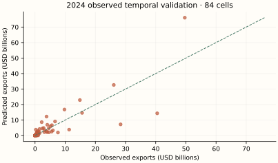
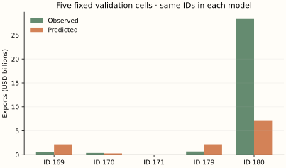
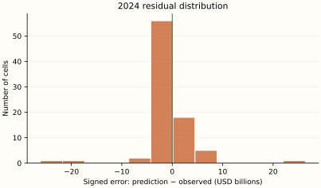
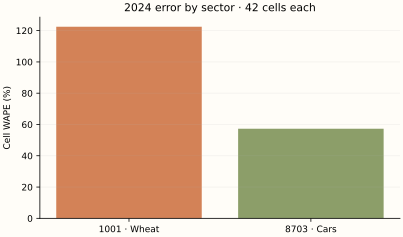
H / Calculate the evaluation metrics
For a hand-sized calculation use validation observations 169, 170, 171. These are actual BACI outcomes, unlike the 2025 scenario. Evaluate errors in USD; the following formulas use millions of USD only to make the squares readable.
| ID | Observed (USD) | Predicted (USD) | Error (USD) | Absolute error (USD) |
|---|---|---|---|---|
| 169 | 573,720,099.0 | 2,184,400,024.4 | 1,610,679,925.4 | 1,610,679,925.4 |
| 170 | 361,534,154.0 | 275,164,073.2 | -86,370,080.8 | 86,370,080.8 |
| 171 | 927,836.0 | 7,951,684.6 | 7,023,848.6 | 7,023,848.6 |
Numerical values are displayed to one decimal place; calculations use the original, unrounded values at full available precision.
The arithmetic substitutions are rounded approximations; these example scores are calculated from the unrounded saved predictions.
The first two example cells share a destination. Sum their signed errors before taking the destination absolute error; this allows cancellation. Cell WAPE takes absolute values first. Full metrics below use 84 rows, not these three.
| Destination | Observed sum (USD) | Predicted sum (USD) | Observed rank | Predicted rank |
|---|---|---|---|---|
| China | 935,254,253.0 | 2,459,564,097.6 | 2.0 | 2.0 |
| Germany | 927,836.0 | 7,951,684.6 | 1.0 | 1.0 |
Numerical values are displayed to one decimal place; calculations use the original, unrounded values at full available precision.
For these 2 destinations, correlate the two rank columns: Spearman = 1.0. The top-min(3,N) intersection contains 2 destinations. On destinations selected by predicted rank, mean absolute aggregate error is USD 765,666,846.6, and median is USD 765,666,846.6. This tiny two-destination calculation illustrates the definitions; full top-three metrics below rank seven destinations.
| Metric | Unit | Final training fit | 2024 observed validation | 2025 observed holdout | 2025 illustrative scenario |
|---|---|---|---|---|---|
| N | count | 252 | 84 | 0 | 84 |
| MSE | USD² | 36,526,515,552,184,958,976.0 | 27,066,579,190,958,149,632.0 | N/A | 42,244,262,040,011,948,032.0 |
| RMSE | USD | 6,043,717,031.1 | 5,202,555,063.7 | N/A | 6,499,558,603.5 |
| MAE | USD | 1,892,952,489.0 | 2,000,145,555.1 | N/A | 2,082,108,913.5 |
| WAPE | % | 56.7 | 58.4 | N/A | 57.6 |
| Destination WAPE | % | 13.5 | 7.2 | N/A | 12.1 |
| RMSLE | unitless | 1.7 | 2.2 | N/A | 1.6 |
| R2 | unitless | 0.4 | 0.6 | N/A | 0.4 |
| rank_correlation | unitless | 1.0 | 0.9 | N/A | 1.0 |
| top_overlap_3 | count | 3 | 2 | N/A | 3 |
| mean_absolute_top3_error | USD | 31,263,995,315.1 | 5,091,797,358.5 | N/A | 8,056,194,587.9 |
| median_absolute_top3_error | USD | 20,808,682,327.9 | 3,573,284,966.1 | N/A | 6,798,452,076.8 |
Numerical values are displayed to one decimal place; calculations use the original, unrounded values at full available precision.
I / Read the results with the mathematics
Temporal validation has Cell WAPE 58.4% and RMSE USD 5,202,555,063.7. Mean signed error is USD 175,558,385.9: this is an aggregate bias diagnostic, not a test of unbiasedness. The largest three absolute errors are shown below; every other case remains in the scrollable table.
| ID | Country pair | HS4 | Observed (USD) | Predicted (USD) | Absolute error (USD) |
|---|---|---|---|---|---|
| 228 | Mexico → United States | 8703 | 49,637,259,600.0 | 76,041,911,018.6 | 26,404,651,418.6 |
| 216 | Japan → United States | 8703 | 40,489,527,390.0 | 14,350,487,507.0 | 26,139,039,883.0 |
| 180 | Canada → United States | 8703 | 28,360,982,334.0 | 7,218,902,287.0 | 21,142,080,047.0 |
Numerical values are displayed to one decimal place; calculations use the original, unrounded values at full available precision.
There are 15 zero outcomes in 2024 validation. Their mean predicted flow is USD 68.7; individual percentage errors are undefined, but absolute errors and WAPE over the nonzero-total population remain meaningful. Sector WAPE is 122.5% for wheat and 57.3% for cars.
Sequential corrections capture nonlinear structure but a leaf must contain at least 20 training rows. Two very different sectors and many correlated dyads make this a coarse partition. Destination WAPE can look much better than Cell WAPE because opposite cell errors cancel after aggregation.
The final training score and temporal-validation score use different fitted samples and sometimes different tasks. A low training error with worse temporal error suggests fragility; it does not isolate overfitting from time shifts or coverage differences. One observed validation year and one artificial scenario cannot rank algorithms for future trade in general.
J / How this teaching example differs from the full research model
The 150/7/.05 settings and minleaf20/maxbins255 defaults are retained. Automatic early stopping is explicitly disabled; the original auto setting also stays off below 10,000 rows, so this avoids any random validation split in the toy fit. Final fitting pools 252 historical rows instead of only the 2024 cross-section. The source dollar calibration remains. There is no Alberta lag blend or extra classification stage.
This is mathematical teaching and independent small-sample re-estimation. It does not reproduce the original Alberta result, infer a commercial opportunity, or estimate tariffs. Two headings, a different network, revised data vintages and one observed validation year offer much less support. No statistical prediction interval is claimed. Forecasting one year, filling a missing historical cell and estimating national-to-provincial potential are different tasks.
08 / Algorithm 6: Dynamic two-stage boosted partial adjustment
A / Historical origin and motivation
This is a composite, not a single algorithm with one inventor. Binary response models separate the chance of a positive outcome from its size; Cragg's 1971 two-part work is a relevant early econometric reference. Gradient boosting supplies the two nonlinear estimators. Partial adjustment appears in mid-twentieth-century dynamic econometrics, including Nerlove's 1958 distributed-lag work. The precise coupling here comes from the supplied trade-method script and PDF; it is not claimed as a standard off-the-shelf model. See Cragg (1971), the classifier, and the local specification inventory.
B / The idea before equations
First ask whether a trade cell is positive. Then ask how large it is when positive. Multiply the probability by the positive amount to form a structural potential. Established trade does not instantly become that potential: move last year's log trade partway toward it. This makes three connected estimation tasks—classification, positive-size regression and adjustment-speed estimation.
C / Define the mathematical objects
| Symbol | Type and mathematical meaning | Meaning in this experiment |
|---|---|---|
| d_i = 1{V_i>0} | Observed binary scalar | All 84 cells classify, including zeros |
| s(z), pi(z) | Learned logit and predicted probability | pi = 1/(1+exp(−s)) |
| f(z), c+ | Positive-only learned log-dollar function and calibration | Only strictly positive cells fit f |
| V*, p = log(1+V*) | Predicted structural dollars and log potential | pi c+ exp(f) |
| g_i, Delta y_i | OOF potential gap and observed next-year change | 2022→2023 paired cells |
| lambda | Learned scalar, restricted to [0,1] | Through-origin OLS slope, then clipping |
D / Build and derive the estimator
For any nonnegative outcome, the law of total expectation is an exact identity. E[V|z] means the average outcome over possible observations sharing inputs z; the vertical bar means “conditional on.” P(V>0|z) is the probability of a positive outcome given those inputs. This is a probability model, not an average of the three plotted examples:
The model approximates the first probability and positive conditional size separately. Let d be the observed 0/1 target. Under a Bernoulli probability model, the likelihood and negative log-likelihood are:
A summation adds one term for every cell. Taking a log turns a product into a sum; the minus sign changes maximization to minimization. A logit s maps real numbers to a probability through the logistic sigmoid. Rewrite the single-row loss using pi=exp(s)/(1+exp(s)):
The Hessian is the second derivative, measuring curvature. Histogram trees use the Newton leaf expression from Model 5 with these binary-loss gradients and Hessians. The classifier is trained on every cell; no hard 0.5 decision is multiplied into dollar potential.
The positive stage minimizes half squared log errors using the gradient-boosting derivation above. It uses log V, not log(1+V). Its exp output approximates a geometric central amount; c+ matches the positive training total. Equation 6.1 is exact, but treating this calibrated exp output as a conditional mean is a modelling approximation. Separate preprocessors are fitted to the all-cell and positive-only samples.
Now assume a partial-adjustment relation in log1p units. Given last year's trade y and potential p, move a fraction lambda of the gap. Lambda=0 is USD persistence; lambda=1 is full adjustment to potential.
OOF means the potential for a 2022 exporter comes from structural stages trained on the other six exporters. It reduces own-target fitting in the gap; it does not make correlated dyads independent. Estimate lambda using observed 2022→2023 changes, with no intercept:
The denominator must be positive. If every gap is zero, lambda is unidentified; it cannot be assigned from this formula. Clipping is the constrained quadratic minimizer on [0,1]. Freeze this slope, obtain 2023 OOF potentials and validate predictions against 2024; only afterward fit final structural stages on 2024.
The second equation follows exactly by exponentiating the first. It is geometric interpolation in 1+dollars, not an arithmetic average of dollar amounts. A zero lag remains eligible; with positive potential and positive lambda it can receive positive forecast trade. The estimated common speed is an empirical smoothing relation, not a causal speed of market access.
The probability and positive-size models must transfer; one common adjustment speed must summarize very different cells; the OOF gap must be informative about subsequent change. A small lambda makes persistence dominate, and can look excellent in a scenario generated from last year's values. This is not evidence that structural potential estimates are accurate.
E / Numerically follow a fitted prediction
Follow observation 263: Canada → United States, HS4 1001, 2025. Its inputs come from observed 2024 cell 179. The 2025 observed outcome is unavailable; the following computation traces the fitted prediction, evaluated against the scenario separately.
Numerical substitutions below are approximate displays. Predictions use the saved, unrounded inputs and parameters; adding or exponentiating the displayed rounded entries need not reproduce the reported dollars. Symbolic exponents and model settings retain their exact meaning.
The unconstrained estimate is 3.8e-02; compare with [0,1] to see whether the restriction binds. All 84 origin/target IDs and their gap products are saved in lambda_estimation.csv.
| Iteration | Classifier probability | Positive regressor log amount |
|---|---|---|
| 1 | 0.8 | 17.9 |
| 2 | 0.8 | 18.1 |
| 3 | 0.8 | 17.8 |
| 4 | 0.9 | 17.9 |
| 5 | 0.9 | 17.7 |
| 6 | 0.9 | 17.8 |
| 7 | 0.9 | 17.6 |
| 8 | 0.9 | 17.6 |
| 9 | 0.9 | 17.7 |
| 10 | 0.9 | 17.5 |
| 11 | 0.9 | 17.6 |
| 12 | 0.9 | 17.5 |
| 13 | 0.9 | 17.6 |
| 14 | 0.9 | 17.4 |
| 15 | 0.9 | 17.5 |
| 16 | 0.9 | 17.4 |
| 17 | 0.9 | 17.5 |
| 18 | 0.9 | 17.4 |
| 19 | 0.9 | 17.5 |
| 20 | 0.9 | 17.3 |
| 21 | 0.9 | 17.4 |
| 22 | 0.9 | 17.3 |
| 23 | 0.9 | 17.4 |
| 24 | 0.9 | 17.3 |
| 25 | 0.9 | 17.4 |
| 26 | 1.0 | 17.3 |
| 27 | 1.0 | 17.4 |
| 28 | 1.0 | 17.3 |
| 29 | 1.0 | 17.3 |
| 30 | 1.0 | 17.3 |
| 31 | 1.0 | 17.3 |
| 32 | 1.0 | 17.2 |
| 33 | 1.0 | 17.3 |
| 34 | 1.0 | 17.2 |
| 35 | 1.0 | 17.3 |
| 36 | 1.0 | 17.2 |
| 37 | 1.0 | 17.3 |
| 38 | 1.0 | 17.2 |
| 39 | 1.0 | 17.3 |
| 40 | 1.0 | 17.3 |
| 41 | 1.0 | 17.4 |
| 42 | 1.0 | 17.4 |
| 43 | 1.0 | 17.5 |
| 44 | 1.0 | 17.4 |
| 45 | 1.0 | 17.5 |
| 46 | 1.0 | 17.5 |
| 47 | 1.0 | 17.6 |
| 48 | 1.0 | 17.7 |
| 49 | 1.0 | 17.7 |
| 50 | 1.0 | 17.8 |
| 51 | 1.0 | 17.9 |
| 52 | 1.0 | 17.9 |
| 53 | 1.0 | 17.9 |
| 54 | 1.0 | 17.9 |
| 55 | 1.0 | 18.0 |
| 56 | 1.0 | 18.0 |
| 57 | 1.0 | 18.1 |
| 58 | 1.0 | 18.1 |
| 59 | 1.0 | 18.2 |
| 60 | 1.0 | 18.2 |
| 61 | 1.0 | 18.2 |
| 62 | 1.0 | 18.2 |
| 63 | 1.0 | 18.3 |
| 64 | 1.0 | 18.3 |
| 65 | 1.0 | 18.3 |
| 66 | 1.0 | 18.3 |
| 67 | 1.0 | 18.4 |
| 68 | 1.0 | 18.4 |
| 69 | 1.0 | 18.4 |
| 70 | 1.0 | 18.5 |
| 71 | 1.0 | 18.5 |
| 72 | 1.0 | 18.5 |
| 73 | 1.0 | 18.6 |
| 74 | 1.0 | 18.6 |
| 75 | 1.0 | 18.7 |
| 76 | 1.0 | 18.7 |
| 77 | 1.0 | 18.7 |
| 78 | 1.0 | 18.8 |
| 79 | 1.0 | 18.8 |
| 80 | 1.0 | 18.8 |
| 81 | 1.0 | 18.9 |
| 82 | 1.0 | 18.9 |
| 83 | 1.0 | 18.9 |
| 84 | 1.0 | 19.0 |
| 85 | 1.0 | 19.0 |
| 86 | 1.0 | 19.0 |
| 87 | 1.0 | 19.1 |
| 88 | 1.0 | 19.1 |
| 89 | 1.0 | 19.1 |
| 90 | 1.0 | 19.2 |
| 91 | 1.0 | 19.2 |
| 92 | 1.0 | 19.2 |
| 93 | 1.0 | 19.2 |
| 94 | 1.0 | 19.3 |
| 95 | 1.0 | 19.3 |
| 96 | 1.0 | 19.3 |
| 97 | 1.0 | 19.4 |
| 98 | 1.0 | 19.4 |
| 99 | 1.0 | 19.4 |
| 100 | 1.0 | 19.4 |
| 101 | 1.0 | 19.5 |
| 102 | 1.0 | 19.5 |
| 103 | 1.0 | 19.5 |
| 104 | 1.0 | 19.6 |
| 105 | 1.0 | 19.6 |
| 106 | 1.0 | 19.6 |
| 107 | 1.0 | 19.6 |
| 108 | 1.0 | 19.6 |
| 109 | 1.0 | 19.6 |
| 110 | 1.0 | 19.7 |
| 111 | 1.0 | 19.7 |
| 112 | 1.0 | 19.7 |
| 113 | 1.0 | 19.7 |
| 114 | 1.0 | 19.7 |
| 115 | 1.0 | 19.7 |
| 116 | 1.0 | 19.8 |
| 117 | 1.0 | 19.7 |
| 118 | 1.0 | 19.7 |
| 119 | 1.0 | 19.8 |
| 120 | 1.0 | 19.8 |
| 121 | 1.0 | 19.8 |
| 122 | 1.0 | 19.8 |
| 123 | 1.0 | 19.8 |
| 124 | 1.0 | 19.8 |
| 125 | 1.0 | 19.8 |
| 126 | 1.0 | 19.8 |
| 127 | 1.0 | 19.8 |
| 128 | 1.0 | 19.8 |
| 129 | 1.0 | 19.9 |
| 130 | 1.0 | 19.9 |
| 131 | 1.0 | 19.9 |
| 132 | 1.0 | 19.9 |
| 133 | 1.0 | 19.9 |
| 134 | 1.0 | 19.9 |
| 135 | 1.0 | 19.9 |
| 136 | 1.0 | 19.9 |
| 137 | 1.0 | 19.9 |
| 138 | 1.0 | 19.9 |
| 139 | 1.0 | 19.9 |
| 140 | 1.0 | 19.9 |
| 141 | 1.0 | 19.9 |
| 142 | 1.0 | 19.9 |
| 143 | 1.0 | 20.0 |
| 144 | 1.0 | 20.0 |
| 145 | 1.0 | 20.0 |
| 146 | 1.0 | 20.0 |
| 147 | 1.0 | 20.0 |
| 148 | 1.0 | 20.0 |
| 149 | 1.0 | 20.0 |
| 150 | 1.0 | 20.0 |
Numerical values are displayed to one decimal place; calculations use the original, unrounded values at full available precision.
The classifier starts from training positive prevalence; the positive regressor starts from mean log positive dollars. These two sequences use different target losses and separately fitted preprocessing. No probability threshold is imposed before multiplication.
F / Use the complete sample without leakage
The final model uses 84 training rows; its separate temporal-validation fit uses 84 rows and predicts 84 observed 2024 outcomes (IDs 169–252). Every model predicts the same 84 2025 IDs (253–336) from 2024 inputs. There are zero observed 2025 targets. No random train/test mixing is used for the temporal comparison.
Final 2024 classification uses 84 rows, positive-size regression uses 69. Lambda uses 84 paired 2022→2023 changes. Each exporter OOF fold trains structural stages on 72 cells and scores the excluded exporter’s 12 cells; positive-regression counts vary by fold. Full counts and explicit training IDs are in fit_records.json. The trained classification probability describes same-year positivity given X, and is used in structural potential rather than as a direct next-year event forecast.
Inspect the exact structural tree settings
{
"max_iter": 150,
"max_leaf_nodes": 7,
"learning_rate": 0.05,
"min_samples_leaf": 20,
"max_bins": 255,
"l2_regularization": 0,
"early_stopping": false,
"seed": 338
}G / Predictions, observed outcomes and errors
| Observation ID | Year | Exporter | Destination | HS4 | Observed (USD) | Predicted (USD) | Error (USD) | Absolute error (USD) | Signed % error | Illustrative value (USD) | Scenario error (USD) |
|---|---|---|---|---|---|---|---|---|---|---|---|
| 169 | 2024 | Canada | China | 1001 | 573,720,099.0 | 794,414,371.4 | 220,694,272.4 | 220,694,272.4 | 38.5% | N/A | N/A |
| 170 | 2024 | Canada | China | 8703 | 361,534,154.0 | 387,468,124.9 | 25,933,970.9 | 25,933,970.9 | 7.2% | N/A | N/A |
| 171 | 2024 | Canada | Germany | 1001 | 927,836.0 | 4,007,662.0 | 3,079,826.0 | 3,079,826.0 | 331.9% | N/A | N/A |
| 172 | 2024 | Canada | Germany | 8703 | 108,039,258.0 | 95,637,370.2 | -12,401,887.8 | 12,401,887.8 | -11.5% | N/A | N/A |
| 173 | 2024 | Canada | Japan | 1001 | 607,223,446.0 | 739,276,529.3 | 132,053,083.3 | 132,053,083.3 | 21.7% | N/A | N/A |
| 174 | 2024 | Canada | Japan | 8703 | 11,236,402.0 | 20,060,060.8 | 8,823,658.8 | 8,823,658.8 | 78.5% | N/A | N/A |
| 175 | 2024 | Canada | Mexico | 1001 | 172,551,233.0 | 288,112,793.6 | 115,561,560.6 | 115,561,560.6 | 67.0% | N/A | N/A |
| 176 | 2024 | Canada | Mexico | 8703 | 380,444,284.0 | 287,827,510.2 | -92,616,773.8 | 92,616,773.8 | -24.3% | N/A | N/A |
| 177 | 2024 | Canada | United Kingdom | 1001 | 173,421,644.0 | 230,220,851.2 | 56,799,207.2 | 56,799,207.2 | 32.8% | N/A | N/A |
| 178 | 2024 | Canada | United Kingdom | 8703 | 5,919,442.0 | 9,386,479.7 | 3,467,037.7 | 3,467,037.7 | 58.6% | N/A | N/A |
| 179 | 2024 | Canada | United States | 1001 | 685,179,327.0 | 774,116,383.8 | 88,937,056.8 | 88,937,056.8 | 13.0% | N/A | N/A |
| 180 | 2024 | Canada | United States | 8703 | 28,360,982,334.0 | 24,311,015,005.9 | -4,049,967,328.1 | 4,049,967,328.1 | -14.3% | N/A | N/A |
| 181 | 2024 | China | Canada | 1001 | 0.0 | 4,479.0 | 4,479.0 | 4,479.0 | N/A | N/A | N/A |
| 182 | 2024 | China | Canada | 8703 | 1,486,501,326.0 | 2,006,022,463.0 | 519,521,137.0 | 519,521,137.0 | 34.9% | N/A | N/A |
| 183 | 2024 | China | Germany | 1001 | 5.0 | 0.6 | -4.4 | 4.4 | -88.7% | N/A | N/A |
| 184 | 2024 | China | Germany | 8703 | 3,293,596,023.0 | 4,569,626,457.4 | 1,276,030,434.4 | 1,276,030,434.4 | 38.7% | N/A | N/A |
| 185 | 2024 | China | Japan | 1001 | 0.0 | 0.8 | 0.8 | 0.8 | N/A | N/A | N/A |
| 186 | 2024 | China | Japan | 8703 | 905,237,235.0 | 702,841,161.9 | -202,396,073.1 | 202,396,073.1 | -22.4% | N/A | N/A |
| 187 | 2024 | China | Mexico | 1001 | 0.0 | 0.6 | 0.6 | 0.6 | N/A | N/A | N/A |
| 188 | 2024 | China | Mexico | 8703 | 4,603,755,988.0 | 4,192,741,203.9 | -411,014,784.1 | 411,014,784.1 | -8.9% | N/A | N/A |
| 189 | 2024 | China | United Kingdom | 1001 | 69,452.0 | 122,710.0 | 53,258.0 | 53,258.0 | 76.7% | N/A | N/A |
| 190 | 2024 | China | United Kingdom | 8703 | 5,102,705,740.0 | 5,724,935,745.9 | 622,230,005.9 | 622,230,005.9 | 12.2% | N/A | N/A |
| 191 | 2024 | China | United States | 1001 | 0.0 | 2.4 | 2.4 | 2.4 | N/A | N/A | N/A |
| 192 | 2024 | China | United States | 8703 | 3,820,671,125.0 | 2,770,962,490.5 | -1,049,708,634.5 | 1,049,708,634.5 | -27.5% | N/A | N/A |
| 193 | 2024 | Germany | Canada | 1001 | 166,171.0 | 109,068.0 | -57,103.0 | 57,103.0 | -34.4% | N/A | N/A |
| 194 | 2024 | Germany | Canada | 8703 | 2,832,653,765.0 | 3,091,790,493.7 | 259,136,728.7 | 259,136,728.7 | 9.1% | N/A | N/A |
| 195 | 2024 | Germany | China | 1001 | 0.0 | 0.7 | 0.7 | 0.7 | N/A | N/A | N/A |
| 196 | 2024 | Germany | China | 8703 | 11,304,788,932.0 | 17,128,010,395.5 | 5,823,221,463.5 | 5,823,221,463.5 | 51.5% | N/A | N/A |
| 197 | 2024 | Germany | Japan | 1001 | 37,305.0 | 57,207.2 | 19,902.2 | 19,902.2 | 53.4% | N/A | N/A |
| 198 | 2024 | Germany | Japan | 8703 | 3,907,415,118.0 | 4,211,054,093.1 | 303,638,975.1 | 303,638,975.1 | 7.8% | N/A | N/A |
| 199 | 2024 | Germany | Mexico | 1001 | 0.0 | 0.7 | 0.7 | 0.7 | N/A | N/A | N/A |
| 200 | 2024 | Germany | Mexico | 8703 | 1,067,908,362.0 | 1,098,309,375.3 | 30,401,013.3 | 30,401,013.3 | 2.8% | N/A | N/A |
| 201 | 2024 | Germany | United Kingdom | 1001 | 289,517,719.0 | 109,937,788.2 | -179,579,930.8 | 179,579,930.8 | -62.0% | N/A | N/A |
| 202 | 2024 | Germany | United Kingdom | 8703 | 14,867,362,044.0 | 15,399,397,230.0 | 532,035,186.0 | 532,035,186.0 | 3.6% | N/A | N/A |
| 203 | 2024 | Germany | United States | 1001 | 8,332,225.0 | 29,183,709.9 | 20,851,484.9 | 20,851,484.9 | 250.3% | N/A | N/A |
| 204 | 2024 | Germany | United States | 8703 | 26,105,847,078.0 | 24,921,681,487.0 | -1,184,165,591.0 | 1,184,165,591.0 | -4.5% | N/A | N/A |
| 205 | 2024 | Japan | Canada | 1001 | 0.0 | 0.5 | 0.5 | 0.5 | N/A | N/A | N/A |
| 206 | 2024 | Japan | Canada | 8703 | 5,504,542,608.0 | 4,827,010,509.3 | -677,532,098.7 | 677,532,098.7 | -12.3% | N/A | N/A |
| 207 | 2024 | Japan | China | 1001 | 0.0 | 0.6 | 0.6 | 0.6 | N/A | N/A | N/A |
| 208 | 2024 | Japan | China | 8703 | 6,641,426,201.0 | 7,917,242,945.0 | 1,275,816,744.0 | 1,275,816,744.0 | 19.2% | N/A | N/A |
| 209 | 2024 | Japan | Germany | 1001 | 0.0 | 0.4 | 0.4 | 0.4 | N/A | N/A | N/A |
| 210 | 2024 | Japan | Germany | 8703 | 2,207,609,523.0 | 2,511,578,032.8 | 303,968,509.8 | 303,968,509.8 | 13.8% | N/A | N/A |
| 211 | 2024 | Japan | Mexico | 1001 | 0.0 | 0.5 | 0.5 | 0.5 | N/A | N/A | N/A |
| 212 | 2024 | Japan | Mexico | 8703 | 1,523,309,798.0 | 1,745,807,024.7 | 222,497,226.7 | 222,497,226.7 | 14.6% | N/A | N/A |
| 213 | 2024 | Japan | United Kingdom | 1001 | 0.0 | 0.5 | 0.5 | 0.5 | N/A | N/A | N/A |
| 214 | 2024 | Japan | United Kingdom | 8703 | 3,096,026,636.0 | 3,096,877,777.1 | 851,141.1 | 851,141.1 | 0.0% | N/A | N/A |
| 215 | 2024 | Japan | United States | 1001 | 0.0 | 1,669.1 | 1,669.1 | 1,669.1 | N/A | N/A | N/A |
| 216 | 2024 | Japan | United States | 8703 | 40,489,527,390.0 | 37,624,651,247.5 | -2,864,876,142.5 | 2,864,876,142.5 | -7.1% | N/A | N/A |
| 217 | 2024 | Mexico | Canada | 1001 | 18.0 | 2.2 | -15.8 | 15.8 | -87.6% | N/A | N/A |
| 218 | 2024 | Mexico | Canada | 8703 | 5,918,119,238.0 | 5,293,963,361.1 | -624,155,876.9 | 624,155,876.9 | -10.5% | N/A | N/A |
| 219 | 2024 | Mexico | China | 1001 | 2,671.0 | 1,538.8 | -1,132.2 | 1,132.2 | -42.4% | N/A | N/A |
| 220 | 2024 | Mexico | China | 8703 | 255,985,743.0 | 359,621,488.9 | 103,635,745.9 | 103,635,745.9 | 40.5% | N/A | N/A |
| 221 | 2024 | Mexico | Germany | 1001 | 2.0 | 0.5 | -1.5 | 1.5 | -77.1% | N/A | N/A |
| 222 | 2024 | Mexico | Germany | 8703 | 3,979,822,545.0 | 5,136,870,611.2 | 1,157,048,066.2 | 1,157,048,066.2 | 29.1% | N/A | N/A |
| 223 | 2024 | Mexico | Japan | 1001 | 0.0 | 0.6 | 0.6 | 0.6 | N/A | N/A | N/A |
| 224 | 2024 | Mexico | Japan | 8703 | 418,148,376.0 | 515,865,851.6 | 97,717,475.6 | 97,717,475.6 | 23.4% | N/A | N/A |
| 225 | 2024 | Mexico | United Kingdom | 1001 | 0.0 | 0.6 | 0.6 | 0.6 | N/A | N/A | N/A |
| 226 | 2024 | Mexico | United Kingdom | 8703 | 1,036,234,550.0 | 1,378,225,993.5 | 341,991,443.5 | 341,991,443.5 | 33.0% | N/A | N/A |
| 227 | 2024 | Mexico | United States | 1001 | 323,719.0 | 2,641,823.7 | 2,318,104.7 | 2,318,104.7 | 716.1% | N/A | N/A |
| 228 | 2024 | Mexico | United States | 8703 | 49,637,259,600.0 | 39,966,061,969.7 | -9,671,197,630.3 | 9,671,197,630.3 | -19.5% | N/A | N/A |
| 229 | 2024 | United Kingdom | Canada | 1001 | 1,943.0 | 72,536.3 | 70,593.3 | 70,593.3 | 3,633.2% | N/A | N/A |
| 230 | 2024 | United Kingdom | Canada | 8703 | 592,950,008.0 | 763,921,865.4 | 170,971,857.4 | 170,971,857.4 | 28.8% | N/A | N/A |
| 231 | 2024 | United Kingdom | China | 1001 | 29,358.0 | 1,548,081.3 | 1,518,723.3 | 1,518,723.3 | 5,173.1% | N/A | N/A |
| 232 | 2024 | United Kingdom | China | 8703 | 4,078,424,924.0 | 4,849,588,900.4 | 771,163,976.4 | 771,163,976.4 | 18.9% | N/A | N/A |
| 233 | 2024 | United Kingdom | Germany | 1001 | 71,283.0 | 16,808.4 | -54,474.6 | 54,474.6 | -76.4% | N/A | N/A |
| 234 | 2024 | United Kingdom | Germany | 8703 | 2,443,797,094.0 | 3,480,885,788.9 | 1,037,088,694.9 | 1,037,088,694.9 | 42.4% | N/A | N/A |
| 235 | 2024 | United Kingdom | Japan | 1001 | 3,035.0 | 0.7 | -3,034.3 | 3,034.3 | -100.0% | N/A | N/A |
| 236 | 2024 | United Kingdom | Japan | 8703 | 1,031,790,547.0 | 1,126,882,199.0 | 95,091,652.0 | 95,091,652.0 | 9.2% | N/A | N/A |
| 237 | 2024 | United Kingdom | Mexico | 1001 | 0.0 | 0.7 | 0.7 | 0.7 | N/A | N/A | N/A |
| 238 | 2024 | United Kingdom | Mexico | 8703 | 221,441,018.0 | 280,435,938.2 | 58,994,920.2 | 58,994,920.2 | 26.6% | N/A | N/A |
| 239 | 2024 | United Kingdom | United States | 1001 | 461,387.0 | 119,126.2 | -342,260.8 | 342,260.8 | -74.2% | N/A | N/A |
| 240 | 2024 | United Kingdom | United States | 8703 | 9,760,731,714.0 | 7,118,902,395.5 | -2,641,829,318.5 | 2,641,829,318.5 | -27.1% | N/A | N/A |
| 241 | 2024 | United States | Canada | 1001 | 24,530,233.0 | 13,977,401.2 | -10,552,831.8 | 10,552,831.8 | -43.0% | N/A | N/A |
| 242 | 2024 | United States | Canada | 8703 | 15,597,579,400.0 | 14,441,207,451.4 | -1,156,371,948.6 | 1,156,371,948.6 | -7.4% | N/A | N/A |
| 243 | 2024 | United States | China | 1001 | 676,649,911.0 | 334,708,144.7 | -341,941,766.3 | 341,941,766.3 | -50.5% | N/A | N/A |
| 244 | 2024 | United States | China | 8703 | 5,586,660,835.0 | 6,627,347,168.6 | 1,040,686,333.6 | 1,040,686,333.6 | 18.6% | N/A | N/A |
| 245 | 2024 | United States | Germany | 1001 | 4,749.0 | 8,147.1 | 3,398.1 | 3,398.1 | 71.6% | N/A | N/A |
| 246 | 2024 | United States | Germany | 8703 | 7,595,825,735.0 | 8,608,614,058.8 | 1,012,788,323.8 | 1,012,788,323.8 | 13.3% | N/A | N/A |
| 247 | 2024 | United States | Japan | 1001 | 633,126,270.0 | 615,978,825.4 | -17,147,444.6 | 17,147,444.6 | -2.7% | N/A | N/A |
| 248 | 2024 | United States | Japan | 8703 | 929,137,299.0 | 1,230,223,949.7 | 301,086,650.7 | 301,086,650.7 | 32.4% | N/A | N/A |
| 249 | 2024 | United States | Mexico | 1001 | 1,070,869,870.0 | 900,092,312.3 | -170,777,557.7 | 170,777,557.7 | -15.9% | N/A | N/A |
| 250 | 2024 | United States | Mexico | 8703 | 4,561,751,943.0 | 4,222,300,172.8 | -339,451,770.2 | 339,451,770.2 | -7.4% | N/A | N/A |
| 251 | 2024 | United States | United Kingdom | 1001 | 11,505.0 | 3,756,978.1 | 3,745,473.1 | 3,745,473.1 | 32,555.2% | N/A | N/A |
| 252 | 2024 | United States | United Kingdom | 8703 | 1,224,546,537.0 | 1,081,475,193.0 | -143,071,344.0 | 143,071,344.0 | -11.7% | N/A | N/A |
| 253 | 2025 | Canada | China | 1001 | N/A | 546,219,315.1 | N/A | N/A | N/A | 530,862,258.5 | 15,357,056.6 |
| 254 | 2025 | Canada | China | 8703 | N/A | 336,991,799.5 | N/A | N/A | N/A | 416,554,030.8 | -79,562,231.3 |
| 255 | 2025 | Canada | Germany | 1001 | N/A | 980,649.6 | N/A | N/A | N/A | 894,406.3 | 86,243.3 |
| 256 | 2025 | Canada | Germany | 8703 | N/A | 101,779,731.0 | N/A | N/A | N/A | 92,047,862.5 | 9,731,868.5 |
| 257 | 2025 | Canada | Japan | 1001 | N/A | 548,244,977.0 | N/A | N/A | N/A | 487,208,438.3 | 61,036,538.7 |
| 258 | 2025 | Canada | Japan | 8703 | N/A | 11,162,116.2 | N/A | N/A | N/A | 12,108,816.6 | -946,700.4 |
| 259 | 2025 | Canada | Mexico | 1001 | N/A | 174,418,638.8 | N/A | N/A | N/A | 189,363,850.9 | -14,945,212.2 |
| 260 | 2025 | Canada | Mexico | 8703 | N/A | 359,320,114.1 | N/A | N/A | N/A | 394,397,077.7 | -35,076,963.5 |
| 261 | 2025 | Canada | United Kingdom | 1001 | N/A | 160,442,487.7 | N/A | N/A | N/A | 147,767,604.2 | 12,674,883.5 |
| 262 | 2025 | Canada | United Kingdom | 8703 | N/A | 6,438,575.6 | N/A | N/A | N/A | 6,531,988.8 | -93,413.1 |
| 263 | 2025 | Canada | United States | 1001 | N/A | 674,474,360.9 | N/A | N/A | N/A | 651,030,223.2 | 23,444,137.7 |
| 264 | 2025 | Canada | United States | 8703 | N/A | 23,850,441,494.3 | N/A | N/A | N/A | 29,447,181,933.1 | -5,596,740,438.8 |
| 265 | 2025 | China | Canada | 1001 | N/A | 0.3 | N/A | N/A | N/A | 0.0 | 0.3 |
| 266 | 2025 | China | Canada | 8703 | N/A | 1,456,825,419.2 | N/A | N/A | N/A | 1,422,965,935.0 | 33,859,484.3 |
| 267 | 2025 | China | Germany | 1001 | N/A | 6.6 | N/A | N/A | N/A | 4.8 | 1.8 |
| 268 | 2025 | China | Germany | 8703 | N/A | 3,110,612,056.9 | N/A | N/A | N/A | 3,546,726,622.3 | -436,114,565.4 |
| 269 | 2025 | China | Japan | 1001 | N/A | 0.4 | N/A | N/A | N/A | 0.0 | 0.4 |
| 270 | 2025 | China | Japan | 8703 | N/A | 928,633,357.6 | N/A | N/A | N/A | 925,453,881.9 | 3,179,475.6 |
| 271 | 2025 | China | Mexico | 1001 | N/A | 0.4 | N/A | N/A | N/A | 0.0 | 0.4 |
| 272 | 2025 | China | Mexico | 8703 | N/A | 4,263,964,368.0 | N/A | N/A | N/A | 4,805,417,606.6 | -541,453,238.6 |
| 273 | 2025 | China | United Kingdom | 1001 | N/A | 64,354.0 | N/A | N/A | N/A | 58,717.6 | 5,636.4 |
| 274 | 2025 | China | United Kingdom | 8703 | N/A | 4,897,379,024.8 | N/A | N/A | N/A | 6,182,433,384.1 | -1,285,054,359.4 |
| 275 | 2025 | China | United States | 1001 | N/A | 0.4 | N/A | N/A | N/A | 0.0 | 0.4 |
| 276 | 2025 | China | United States | 8703 | N/A | 4,066,443,427.5 | N/A | N/A | N/A | 3,808,519,439.9 | 257,923,987.6 |
| 277 | 2025 | Germany | Canada | 1001 | N/A | 158,154.9 | N/A | N/A | N/A | 159,353.0 | -1,198.1 |
| 278 | 2025 | Germany | Canada | 8703 | N/A | 2,904,579,914.2 | N/A | N/A | N/A | 3,185,887,126.3 | -281,307,212.2 |
| 279 | 2025 | Germany | China | 1001 | N/A | 0.6 | N/A | N/A | N/A | 0.0 | 0.6 |
| 280 | 2025 | Germany | China | 8703 | N/A | 11,569,204,752.7 | N/A | N/A | N/A | 13,053,502,548.3 | -1,484,297,795.6 |
| 281 | 2025 | Germany | Japan | 1001 | N/A | 37,634.5 | N/A | N/A | N/A | 32,814.7 | 4,819.8 |
| 282 | 2025 | Germany | Japan | 8703 | N/A | 3,922,146,310.4 | N/A | N/A | N/A | 3,985,740,064.6 | -63,593,754.2 |
| 283 | 2025 | Germany | Mexico | 1001 | N/A | 0.5 | N/A | N/A | N/A | 0.0 | 0.5 |
| 284 | 2025 | Germany | Mexico | 8703 | N/A | 1,136,983,985.5 | N/A | N/A | N/A | 881,800,888.1 | 255,183,097.4 |
| 285 | 2025 | Germany | United Kingdom | 1001 | N/A | 225,691,218.2 | N/A | N/A | N/A | 241,909,176.9 | -16,217,958.7 |
| 286 | 2025 | Germany | United Kingdom | 8703 | N/A | 15,062,226,094.3 | N/A | N/A | N/A | 16,543,983,898.5 | -1,481,757,804.3 |
| 287 | 2025 | Germany | United States | 1001 | N/A | 7,537,858.1 | N/A | N/A | N/A | 7,436,476.8 | 101,381.4 |
| 288 | 2025 | Germany | United States | 8703 | N/A | 27,351,414,002.6 | N/A | N/A | N/A | 34,318,821,578.1 | -6,967,407,575.5 |
| 289 | 2025 | Japan | Canada | 1001 | N/A | 0.3 | N/A | N/A | N/A | 0.0 | 0.3 |
| 290 | 2025 | Japan | Canada | 8703 | N/A | 5,160,381,510.1 | N/A | N/A | N/A | 5,664,394,860.4 | -504,013,350.3 |
| 291 | 2025 | Japan | China | 1001 | N/A | 0.5 | N/A | N/A | N/A | 0.0 | 0.5 |
| 292 | 2025 | Japan | China | 8703 | N/A | 6,581,677,917.3 | N/A | N/A | N/A | 6,010,737,613.5 | 570,940,303.7 |
| 293 | 2025 | Japan | Germany | 1001 | N/A | 0.3 | N/A | N/A | N/A | 0.0 | 0.3 |
| 294 | 2025 | Japan | Germany | 8703 | N/A | 2,114,503,176.6 | N/A | N/A | N/A | 2,741,869,777.7 | -627,366,601.1 |
| 295 | 2025 | Japan | Mexico | 1001 | N/A | 0.4 | N/A | N/A | N/A | 0.0 | 0.4 |
| 296 | 2025 | Japan | Mexico | 8703 | N/A | 1,480,343,610.5 | N/A | N/A | N/A | 1,525,557,831.1 | -45,214,220.6 |
| 297 | 2025 | Japan | United Kingdom | 1001 | N/A | 0.3 | N/A | N/A | N/A | 0.0 | 0.3 |
| 298 | 2025 | Japan | United Kingdom | 8703 | N/A | 3,040,029,775.1 | N/A | N/A | N/A | 3,696,571,751.7 | -656,541,976.5 |
| 299 | 2025 | Japan | United States | 1001 | N/A | 0.4 | N/A | N/A | N/A | 0.0 | 0.4 |
| 300 | 2025 | Japan | United States | 8703 | N/A | 39,599,220,928.3 | N/A | N/A | N/A | 35,318,692,142.5 | 4,280,528,785.8 |
| 301 | 2025 | Mexico | Canada | 1001 | N/A | 22.9 | N/A | N/A | N/A | 18.5 | 4.4 |
| 302 | 2025 | Mexico | Canada | 8703 | N/A | 5,474,632,642.0 | N/A | N/A | N/A | 6,538,395,537.6 | -1,063,762,895.6 |
| 303 | 2025 | Mexico | China | 1001 | N/A | 2,868.5 | N/A | N/A | N/A | 2,361.9 | 506.5 |
| 304 | 2025 | Mexico | China | 8703 | N/A | 274,019,212.3 | N/A | N/A | N/A | 230,724,417.3 | 43,294,795.0 |
| 305 | 2025 | Mexico | Germany | 1001 | N/A | 2.9 | N/A | N/A | N/A | 2.1 | 0.8 |
| 306 | 2025 | Mexico | Germany | 8703 | N/A | 3,668,268,596.5 | N/A | N/A | N/A | 4,343,634,911.2 | -675,366,314.6 |
| 307 | 2025 | Mexico | Japan | 1001 | N/A | 0.4 | N/A | N/A | N/A | 0.0 | 0.4 |
| 308 | 2025 | Mexico | Japan | 8703 | N/A | 416,419,938.7 | N/A | N/A | N/A | 467,213,585.1 | -50,793,646.4 |
| 309 | 2025 | Mexico | United Kingdom | 1001 | N/A | 0.3 | N/A | N/A | N/A | 0.0 | 0.3 |
| 310 | 2025 | Mexico | United Kingdom | 8703 | N/A | 1,020,138,666.3 | N/A | N/A | N/A | 1,206,198,894.9 | -186,060,228.6 |
| 311 | 2025 | Mexico | United States | 1001 | N/A | 317,440.2 | N/A | N/A | N/A | 301,853.8 | 15,586.4 |
| 312 | 2025 | Mexico | United States | 8703 | N/A | 47,901,277,425.7 | N/A | N/A | N/A | 52,780,466,123.8 | -4,879,188,698.1 |
| 313 | 2025 | United Kingdom | Canada | 1001 | N/A | 2,188.6 | N/A | N/A | N/A | 1,713.1 | 475.6 |
| 314 | 2025 | United Kingdom | Canada | 8703 | N/A | 626,123,661.0 | N/A | N/A | N/A | 550,904,513.2 | 75,219,147.9 |
| 315 | 2025 | United Kingdom | China | 1001 | N/A | 30,430.6 | N/A | N/A | N/A | 30,482.9 | -52.3 |
| 316 | 2025 | United Kingdom | China | 8703 | N/A | 4,133,516,097.4 | N/A | N/A | N/A | 3,762,660,597.4 | 370,855,500.0 |
| 317 | 2025 | United Kingdom | Germany | 1001 | N/A | 69,940.7 | N/A | N/A | N/A | 70,311.1 | -370.5 |
| 318 | 2025 | United Kingdom | Germany | 8703 | N/A | 2,444,327,795.0 | N/A | N/A | N/A | 2,710,958,224.4 | -266,630,429.3 |
| 319 | 2025 | United Kingdom | Japan | 1001 | N/A | 3,272.8 | N/A | N/A | N/A | 2,553.6 | 719.2 |
| 320 | 2025 | United Kingdom | Japan | 8703 | N/A | 1,042,993,269.9 | N/A | N/A | N/A | 1,098,153,473.6 | -55,160,203.7 |
| 321 | 2025 | United Kingdom | Mexico | 1001 | N/A | 0.5 | N/A | N/A | N/A | 0.0 | 0.5 |
| 322 | 2025 | United Kingdom | Mexico | 8703 | N/A | 232,877,639.6 | N/A | N/A | N/A | 223,111,631.1 | 9,766,008.5 |
| 323 | 2025 | United Kingdom | United States | 1001 | N/A | 443,953.9 | N/A | N/A | N/A | 419,717.7 | 24,236.2 |
| 324 | 2025 | United Kingdom | United States | 8703 | N/A | 10,044,830,041.7 | N/A | N/A | N/A | 11,524,374,951.3 | -1,479,544,909.7 |
| 325 | 2025 | United States | Canada | 1001 | N/A | 22,185,392.8 | N/A | N/A | N/A | 20,139,638.9 | 2,045,753.9 |
| 326 | 2025 | United States | Canada | 8703 | N/A | 14,824,579,804.2 | N/A | N/A | N/A | 14,836,726,276.4 | -12,146,472.2 |
| 327 | 2025 | United States | China | 1001 | N/A | 595,226,396.9 | N/A | N/A | N/A | 615,204,885.7 | -19,978,488.8 |
| 328 | 2025 | United States | China | 8703 | N/A | 5,666,207,724.5 | N/A | N/A | N/A | 5,166,890,837.6 | 499,316,886.9 |
| 329 | 2025 | United States | Germany | 1001 | N/A | 5,648.9 | N/A | N/A | N/A | 4,758.1 | 890.8 |
| 330 | 2025 | United States | Germany | 8703 | N/A | 7,234,952,902.6 | N/A | N/A | N/A | 8,934,849,485.0 | -1,699,896,582.4 |
| 331 | 2025 | United States | Japan | 1001 | N/A | 530,888,144.8 | N/A | N/A | N/A | 533,628,343.0 | -2,740,198.2 |
| 332 | 2025 | United States | Japan | 8703 | N/A | 956,903,233.5 | N/A | N/A | N/A | 973,881,597.5 | -16,978,364.0 |
| 333 | 2025 | United States | Mexico | 1001 | N/A | 939,017,155.7 | N/A | N/A | N/A | 979,168,570.9 | -40,151,415.2 |
| 334 | 2025 | United States | Mexico | 8703 | N/A | 4,610,516,926.2 | N/A | N/A | N/A | 4,915,308,212.9 | -304,791,286.6 |
| 335 | 2025 | United States | United Kingdom | 1001 | N/A | 13,504.2 | N/A | N/A | N/A | 10,448.6 | 3,055.7 |
| 336 | 2025 | United States | United Kingdom | 8703 | N/A | 1,268,434,797.2 | N/A | N/A | N/A | 1,056,748,860.3 | 211,685,936.9 |
Numerical values are displayed to one decimal place; calculations use the original, unrounded values at full available precision.
Signed error = predicted − observed: positive means overprediction. Individual percentage error is N/A when observed trade is zero or unavailable. A scenario error is predicted − illustrative value, not an observed prediction error. Final training fitted values are downloadable with every eligible row in predictions.csv.
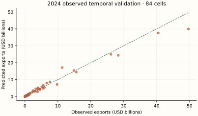
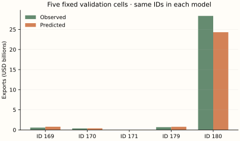
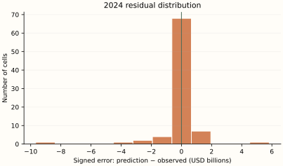
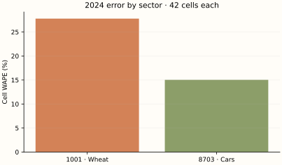
H / Calculate the evaluation metrics
For a hand-sized calculation use validation observations 169, 170, 171. These are actual BACI outcomes, unlike the 2025 scenario. Evaluate errors in USD; the following formulas use millions of USD only to make the squares readable.
| ID | Observed (USD) | Predicted (USD) | Error (USD) | Absolute error (USD) |
|---|---|---|---|---|
| 169 | 573,720,099.0 | 794,414,371.4 | 220,694,272.4 | 220,694,272.4 |
| 170 | 361,534,154.0 | 387,468,124.9 | 25,933,970.9 | 25,933,970.9 |
| 171 | 927,836.0 | 4,007,662.0 | 3,079,826.0 | 3,079,826.0 |
Numerical values are displayed to one decimal place; calculations use the original, unrounded values at full available precision.
The arithmetic substitutions are rounded approximations; these example scores are calculated from the unrounded saved predictions.
The first two example cells share a destination. Sum their signed errors before taking the destination absolute error; this allows cancellation. Cell WAPE takes absolute values first. Full metrics below use 84 rows, not these three.
| Destination | Observed sum (USD) | Predicted sum (USD) | Observed rank | Predicted rank |
|---|---|---|---|---|
| China | 935,254,253.0 | 1,181,882,496.3 | 2.0 | 2.0 |
| Germany | 927,836.0 | 4,007,662.0 | 1.0 | 1.0 |
Numerical values are displayed to one decimal place; calculations use the original, unrounded values at full available precision.
For these 2 destinations, correlate the two rank columns: Spearman = 1.0. The top-min(3,N) intersection contains 2 destinations. On destinations selected by predicted rank, mean absolute aggregate error is USD 124,854,034.7, and median is USD 124,854,034.7. This tiny two-destination calculation illustrates the definitions; full top-three metrics below rank seven destinations.
| Metric | Unit | Final training fit | 2024 observed validation | 2025 observed holdout | 2025 illustrative scenario |
|---|---|---|---|---|---|
| N | count | 84 | 84 | 0 | 84 |
| MSE | USD² | 79,320,654,573,459,128,320.0 | 2,074,185,366,635,442,432.0 | N/A | 1,636,655,068,661,421,056.0 |
| RMSE | USD | 8,906,214,379.5 | 1,440,203,238.0 | N/A | 1,279,318,204.6 |
| MAE | USD | 2,994,633,573.8 | 522,413,871.8 | N/A | 447,704,575.5 |
| WAPE | % | 87.4 | 15.2 | N/A | 12.4 |
| Destination WAPE | % | 20.6 | 13.6 | N/A | 7.9 |
| RMSLE | unitless | 4.3 | 1.8 | N/A | 0.2 |
| R2 | unitless | -0.2 | 1.0 | N/A | 1.0 |
| rank_correlation | unitless | 0.8 | 1.0 | N/A | 1.0 |
| top_overlap_3 | count | 2 | 3 | N/A | 3 |
| mean_absolute_top3_error | USD | 9,041,013,214.5 | 10,596,557,333.1 | N/A | 5,398,341,095.3 |
| median_absolute_top3_error | USD | 12,073,234,538.7 | 8,920,728,332.7 | N/A | 1,750,106,261.8 |
Numerical values are displayed to one decimal place; calculations use the original, unrounded values at full available precision.
The training column measures 2024 structural potential, whereas validation and scenario columns measure the next-year dynamic forecast. They are different tasks; comparing these columns as an overfitting gap would be invalid. The observed 2025 holdout has zero available outcomes; its N is 0, and its error metrics are undefined.
| OOF year | N | Positive N | Binary log loss | Brier score | Accuracy at .5 (%) |
|---|---|---|---|---|---|
| 2022 | 84 | 69 | 0.4 | 0.1 | 83.3% |
| 2023 | 84 | 69 | 0.3 | 0.1 | 85.7% |
Numerical values are displayed to one decimal place; calculations use the original, unrounded values at full available precision.
For observed cell 85, d=1 and OOF pi≈1 − 1.2e-03. Its log-loss contribution is approximately 1.2e-03; its Brier contribution (pi−1)² is approximately 1.5e-06; the .5 classification is 1. The reported scores average all 84 cells.
| Probability bin | N | Mean predicted probability | Observed positive fraction |
|---|---|---|---|
| 0.0–0.2 | 5 | 0.1 | 0.2 |
| 0.2–0.4 | 6 | 0.3 | 0.7 |
| 0.4–0.6 | 5 | 0.4 | 0.4 |
| 0.6–0.8 | 8 | 0.7 | 0.6 |
| 0.8–1.0 | 60 | 1 − 2.5e-02 | 0.9 |
Numerical values are displayed to one decimal place; calculations use the original, unrounded values at full available precision.
Accuracy depends on a threshold and class prevalence; it does not replace probability quality. Log loss punishes confident wrong predictions; Brier measures squared probability error. Comparing bin means with positive fractions checks calibration, but tiny bins provide weak evidence.
I / Read the results with the mathematics
Temporal validation has Cell WAPE 15.2% and RMSE USD 1,440,203,238.0. Mean signed error is USD -92,853,146.3: this is an aggregate bias diagnostic, not a test of unbiasedness. The largest three absolute errors are shown below; every other case remains in the scrollable table.
| ID | Country pair | HS4 | Observed (USD) | Predicted (USD) | Absolute error (USD) |
|---|---|---|---|---|---|
| 228 | Mexico → United States | 8703 | 49,637,259,600.0 | 39,966,061,969.7 | 9,671,197,630.3 |
| 196 | Germany → China | 8703 | 11,304,788,932.0 | 17,128,010,395.5 | 5,823,221,463.5 |
| 180 | Canada → United States | 8703 | 28,360,982,334.0 | 24,311,015,005.9 | 4,049,967,328.1 |
Numerical values are displayed to one decimal place; calculations use the original, unrounded values at full available precision.
There are 15 zero outcomes in 2024 validation. Their mean predicted flow is USD 410.5; individual percentage errors are undefined, but absolute errors and WAPE over the nonzero-total population remain meaningful. Sector WAPE is 27.8% for wheat and 15.0% for cars.
The estimated lambda is small, so the trade lag dominates the forecast. Both genuine 2024 validation and the artificial 2025 scenario are close to persistence. The scenario was explicitly generated by perturbing 2024 trade; that design favors lag-based forecasts and cannot establish universal superiority of this composite model.
The final training score and temporal-validation score use different fitted samples and sometimes different tasks. A low training error with worse temporal error suggests fragility; it does not isolate overfitting from time shifts or coverage differences. One observed validation year and one artificial scenario cannot rank algorithms for future trade in general.
J / How this teaching example differs from the full research model
The original learns lambda across 51,618 cells, with South Korea in its network, then transfers national structural stages to Alberta using provincial lags and Canadian proxies. Here Germany replaces South Korea, only 84 gaps identify lambda, and final stages fit 84 2024 cells. Same all-cell classifier, positive-only log regressor, calibration and constrained gap slope are retained. No externally validated prospective 2025 outcome exists in this teaching table. The toy lambda is independently estimated, never copied from the original estimate (approximately 0.1).
This is mathematical teaching and independent small-sample re-estimation. It does not reproduce the original Alberta result, infer a commercial opportunity, or estimate tariffs. Two headings, a different network, revised data vintages and one observed validation year offer much less support. No statistical prediction interval is claimed. Forecasting one year, filling a missing historical cell and estimating national-to-provincial potential are different tasks.
09 / Comparing All Six Algorithms
All six algorithms score the same 84 cells. No model silently drops a difficult zero. The observed 2025 evaluation population has N=0; predictions are available for 84 cells, but actual holdout error is unavailable. Use the separate observed-validation and scenario tables to avoid mistaking generated outcomes for empirical evidence.
| Model | Final training N | Validation N | 2025 prediction N | Observed 2025 N | Observed holdout MAE | RMSE | WAPE |
|---|---|---|---|---|---|---|---|
| Dynamic linear regression | 168 | 84 | 84 | 0 | N/A | N/A | N/A |
| Elastic Net regression | 252 | 84 | 84 | 0 | N/A | N/A | N/A |
| Random Forest regression | 252 | 84 | 84 | 0 | N/A | N/A | N/A |
| Multilayer Perceptron | 252 | 84 | 84 | 0 | N/A | N/A | N/A |
| Single-stage gradient boosting | 252 | 84 | 84 | 0 | N/A | N/A | N/A |
| Dynamic two-stage boosted partial adjustment | 84 | 84 | 84 | 0 | N/A | N/A | N/A |
| Model | Final training N | Validation N | 2025 prediction N | MAE (USD) | RMSE (USD) | Cell WAPE | Destination WAPE | RMSLE |
|---|---|---|---|---|---|---|---|---|
| Dynamic linear regression | 168 | 84 | 84 | 10,853,781,638.9 | 45,823,328,334.4 | 316.8% | 297.2% | 2.0 |
| Elastic Net regression | 252 | 84 | 84 | 3,611,004,394.0 | 10,155,492,126.0 | 105.4% | 73.8% | 3.7 |
| Random Forest regression | 252 | 84 | 84 | 2,460,440,173.4 | 5,866,869,333.2 | 71.8% | 45.3% | 3.2 |
| Multilayer Perceptron | 252 | 84 | 84 | 3,401,023,551.4 | 7,562,034,872.5 | 99.3% | 75.8% | 2.8 |
| Single-stage gradient boosting | 252 | 84 | 84 | 2,000,145,555.1 | 5,202,555,063.7 | 58.4% | 7.2% | 2.2 |
| Dynamic two-stage boosted partial adjustment | 84 | 84 | 84 | 522,413,871.8 | 1,440,203,238.0 | 15.2% | 13.6% | 1.8 |
Numerical values are displayed to one decimal place; calculations use the original, unrounded values at full available precision.
| Model | Final training N | Validation N | 2025 prediction N | MAE (USD) | RMSE (USD) | Cell WAPE | Destination WAPE | RMSLE |
|---|---|---|---|---|---|---|---|---|
| Dynamic linear regression | 168 | 84 | 84 | 1,267,489,473.6 | 3,233,504,673.8 | 35.1% | 14.5% | 0.7 |
| Elastic Net regression | 252 | 84 | 84 | 3,336,058,801.5 | 9,378,736,767.8 | 92.3% | 62.1% | 3.5 |
| Random Forest regression | 252 | 84 | 84 | 2,186,894,498.8 | 5,401,129,963.0 | 60.5% | 31.4% | 2.7 |
| Multilayer Perceptron | 252 | 84 | 84 | 3,585,002,526.8 | 7,924,880,118.0 | 99.2% | 77.3% | 1.9 |
| Single-stage gradient boosting | 252 | 84 | 84 | 2,082,108,913.5 | 6,499,558,603.5 | 57.6% | 12.1% | 1.6 |
| Dynamic two-stage boosted partial adjustment | 84 | 84 | 84 | 447,704,575.5 | 1,279,318,204.6 | 12.4% | 7.9% | 0.2 |
Numerical values are displayed to one decimal place; calculations use the original, unrounded values at full available precision.
Validation fit N differs from final fit N: Model 1 uses 84 in its earlier validation fit and 168 finally; Models 2–5 use 168 and 252. Model 6’s temporal prediction uses 2023 exporter OOF stages and the 84-pair lambda learned earlier; its final structural fit uses 84 2024 cells. Its positive-stage N is 69. All validation errors have the same 84 observed 2024 targets; all scenario errors have the same 84 generated 2025 values.
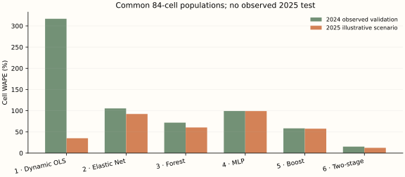
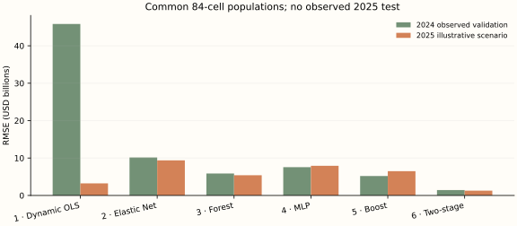
| Algorithm | What is learned | Assumption / consequence |
|---|---|---|
| 1 · Dynamic OLS | One linear log plane plus observed trade lag | Stable additive effects and persistence; unstable collinear slopes |
| 2 · Elastic Net | Same plane without lag, penalized slopes | Shrink correlated effects; penalty adds bias |
| 3 · Forest | Average independent bootstrap tree fits | Threshold interactions; averages regions, little trend extrapolation |
| 4 · MLP | Learned nonlinear tanh layers | Optimization and architecture sensitive; finite-budget warning |
| 5 · Boosting | Sequential small residual trees | Greedy corrections; leaf size and binning regulate flexibility |
| 6 · Two-stage dynamic | Probability × positive amount, then lag blend | Separate margins; common estimated adjustment speed |
| ID | Pair | HS4 | Observed (USD) | Model 1 (USD) | Model 2 (USD) | Model 3 (USD) | Model 4 (USD) | Model 5 (USD) | Model 6 (USD) |
|---|---|---|---|---|---|---|---|---|---|
| 196 | Germany → China | 8703 | 11,304,788,932.0 | 348,236,884,204.0 | 19,576,728,563.4 | 14,319,122,004.9 | 6,040,229,139.2 | 3,824,376,859.9 | 17,128,010,395.5 |
| 244 | United States → China | 8703 | 5,586,660,835.0 | 175,137,524,127.5 | 6,237,796,317.5 | 7,856,145,952.6 | 6,040,317,145.6 | 6,693,492,372.6 | 6,627,347,168.6 |
| 232 | United Kingdom → China | 8703 | 4,078,424,924.0 | 155,762,441,808.0 | 1,393,782,326.6 | 7,037,630,818.2 | 6,044,169,889.2 | 6,965,417,675.5 | 4,849,588,900.4 |
| 216 | Japan → United States | 8703 | 40,489,527,390.0 | 93,281,261,956.1 | 9,605,294,150.7 | 18,996,467,133.5 | 6,043,959,443.4 | 14,350,487,507.0 | 37,624,651,247.5 |
Numerical values are displayed to one decimal place; calculations use the original, unrounded values at full available precision.
These differences arise from lag dependence, shrinkage, threshold partitions, nonlinear activations, boosting corrections and dollar calibration. Trees infer interactions that the additive linear rules cannot; the dynamic methods retain historical trade directly. Errors in transformed units become asymmetric dollar errors after exponentiation.
The small estimated lambda makes Model 6 close to a persistence baseline. The scenario was constructed by modestly perturbing 2024 outcomes; it naturally rewards persistence. Its lower scenario WAPE is not independent confirmation of superior structural modelling. The large OLS validation error and MLP warning illustrate fragility, not definitive family rankings. Small differences between flexible estimators may reflect sample variation, serial dependence or settings rather than repeatable advantage.
10 / Follow One Trade Observation Through All Six Models
Observation 263: Canada → United States, HS4 1001 (wheat and meslin), 2025. Its prior-year counterpart is observed cell 179, with USD 685,179,327.0 of exports. The 2025 observed outcome is unavailable; the illustrative value is USD 651,030,223.2. This cannot satisfy an observed-2025 case study, so both missing observed errors and explicitly labelled scenario errors are shown.
| Input field | Entire stored record |
|---|---|
| observation_id | 263 |
| year | 2025 |
| exporter | Canada |
| destination | United States |
| exporter_iso3 | CAN |
| destination_iso3 | USA |
| hs4_code | 1001 |
| hs4_description | Wheat and meslin. |
| observed_exports_usd | N/A |
| distance_km | 2,079.3 |
| common_language | 1 |
| contiguity | 1 |
| external_supply_usd | 5,609,820,299.0 |
| external_demand_usd | 57,470,062.0 |
| world_external_demand_usd | 52,597,916,506.0 |
| trade_status | unobserved_2025_scenario |
| data_source | Illustrative scenario seed 338; historical inputs BACI/WDI/GeoDist 2024 |
| macro_year | 2024 |
| data_status | illustrative |
| exporter_gdp | 2,270,076,189,683.5 |
| exporter_population | 41,262,329.0 |
| exporter_manufacturing | N/A |
| exporter_internet | 94.4 |
| destination_gdp | 29,298,013,000,000.0 |
| destination_population | 340,003,797.0 |
| destination_manufacturing | N/A |
| destination_internet | 94.7 |
| covariate_status | 2024 covariates carried as forecast-origin inputs; missing exporter_manufacturing,destination_manufacturing |
| illustrative_exports_usd | 651,030,223.2 |
| scenario_procedure | 2024 trade * exp(sector shock + N(0,0.10)); wheat -0.08; cars +0.06; seed 338; preserve zeros |
Numerical values are displayed to one decimal place; calculations use the original, unrounded values at full available precision.
| Algorithm | Key inputs | Main prediction operation | Predicted (USD) | Observed (USD) | Observed signed error | Observed absolute error | Scenario signed error (USD) | Scenario absolute error (USD) |
|---|---|---|---|---|---|---|---|---|
| Dynamic linear regression | 14 economic inputs + HS2 + trade lag | a + sum of standardized coefficient products; lag included | 408,841,839.5 | N/A | N/A | N/A | -242,188,383.7 | 242,188,383.7 |
| Elastic Net regression | 14 economic inputs + HS2 | a + penalized coefficient products; no lag | 136,711,259.5 | N/A | N/A | N/A | -514,318,963.7 | 514,318,963.7 |
| Random Forest regression | 14 economic inputs + HS2 | Mean of 120 log-space tree outputs | 398,632,143.5 | N/A | N/A | N/A | -252,398,079.7 | 252,398,079.7 |
| Multilayer Perceptron | 14 economic inputs + HS2 | 16 → 8 tanh → 4 tanh → 1 linear output | 1,970,392,857.4 | N/A | N/A | N/A | 1,319,362,634.2 | 1,319,362,634.2 |
| Single-stage gradient boosting | 14 economic inputs + HS2 | Initial log mean + 150 shrinkage corrections | 3,484,356,617.5 | N/A | N/A | N/A | 2,833,326,394.3 | 2,833,326,394.3 |
| Dynamic two-stage boosted partial adjustment | 14 economic inputs + HS2 + trade lag | pi × calibrated positive amount; then lambda gap adjustment | 674,474,360.9 | N/A | N/A | N/A | 23,444,137.7 | 23,444,137.7 |
Numerical values are displayed to one decimal place; calculations use the original, unrounded values at full available precision.
The raw outcome definition is identical, but the mathematical operations are not. Even numeric scaling differs because models use different training subsets. OLS and the composite use the 2024 trade state; the others do not. The forest averages leaves before the dollar inverse, boosting adds corrections before the inverse, and the MLP applies nonlinear hidden transformations. Model 6 uses log dollars on its positive subset and log1p dollars for dynamics.
The genuinely observed counterpart: cell 179 in 2024
These predictions use 2023 information, before the 2024 outcomes. They were generated by the earlier validation fits, not the final fits used in the 2025 worked example. Showing both years keeps the empirical comparison separate from the scenario.
| Algorithm | Observed 2024 (USD) | Predicted 2024 (USD) | Signed error (USD) | Absolute error (USD) |
|---|---|---|---|---|
| Dynamic linear regression | 685,179,327.0 | 354,587,245.0 | -330,592,082.0 | 330,592,082.0 |
| Elastic Net regression | 685,179,327.0 | 70,785,974.6 | -614,393,352.4 | 614,393,352.4 |
| Random Forest regression | 685,179,327.0 | 193,067,217.5 | -492,112,109.5 | 492,112,109.5 |
| Multilayer Perceptron | 685,179,327.0 | 6,038,415,850.7 | 5,353,236,523.7 | 5,353,236,523.7 |
| Single-stage gradient boosting | 685,179,327.0 | 2,193,152,034.4 | 1,507,972,707.4 | 1,507,972,707.4 |
| Dynamic two-stage boosted partial adjustment | 685,179,327.0 | 774,116,383.8 | 88,937,056.8 | 88,937,056.8 |
Numerical values are displayed to one decimal place; calculations use the original, unrounded values at full available precision.
11 / What Can We Really Learn From 336 Observations?
The small table is excellent for understanding mechanics: every input, zero and error is inspectable. It is a weak basis for broad predictive claims. There are only 84 recurring cells and four years; exporter attributes repeat, destination attributes repeat, and common product or dyad shocks link outcomes. More stored rows do not necessarily mean more independent evidence.
High-dimensional features consume information. GDP, population, internet and manufacturing correlate; product supply and demand reflect shared sector conditions. The linear design can be poorly conditioned; the 177-parameter network can be unstable; tree leaves have few genuinely different relationships. Regularization and leaf-size limits trade bias against variance rather than guaranteeing reliable extrapolation.
Leakage can make results deceptively good. Never use a cell’s target inside its product aggregates, use 2025 realized macro data to claim a January forecast, build a lag from the target year, estimate imputation/scaling on held-out rows, or tune against the final scenario. This pipeline excludes all internal-network flows from aggregates, fits preprocessing only on permitted rows, and keeps 2025 outcomes absent from every fitting target.
A fitted value reuses a row’s outcome to estimate parameters. A forecast applies a rule to inputs from before the target year. A contemporaneous imputation estimates missing trade with same-year predictors; it is not a time-transition forecast. Models 1 and 6 have explicit transitions; Models 2–5 here use past-year predictors as forecast proxies for a structural relation.
Observed 2024 validation supplies some real evidence. The 2025 scenario supplies none about actual 2025 forecasting success: its values are generated from the 2024 lag and favor persistent models by construction. Keep true 2025 outcomes unseen during tuning if they are later added. A new evaluation must freeze the already selected pipeline before using those outcomes. Revised-source vintages also limit claims of real-time feasibility.
The original full research includes many headings, an exporter-transfer problem, Alberta-specific domestic-export lags, national proxy covariates and CAD reporting. Those differences can dominate algorithm choice. This chapter teaches what each rule computes and why outputs differ; it cannot establish universal winners or a causal trade mechanism.
Reproduce, inspect and extend the draft
The published page uses static HTML, lightweight local JavaScript, local SVG plots, six generated PNG illustrations and a locally vendored MathJax 3.2.2 SVG renderer. It needs no npm build, Python runtime in the browser, backend, paid API or external CDN connection. Python is needed only to rebuild the analysis. Figures are generated by Matplotlib from saved outputs.
python research/harmonized-system/details-of-machine-learning-models/dataset_build.py
python research/harmonized-system/details-of-machine-learning-models/scripts/analyze_models.py
python research/harmonized-system/details-of-machine-learning-models/scripts/build_chapter.py
python research/harmonized-system/details-of-machine-learning-models/scripts/verify_project.py
python -m http.server 8000Add --raw to dataset_build.py to rescan documented source files at TRADE_RAW_ROOT. The portable default verifies and uses the included source-derived 252-row subset, retaining raw-file SHA-256 provenance. Neither mode edits original files.